00 开篇词 怎样成长为优秀的软件架构师？
你好，我是许式伟。从今天起，我想和你一起来聊聊架构的话题。
开始之前，我先来和你简单介绍下我自己。
我是2000年开始工作的，曾经做过WPS的首席架构师，也在盛大从事过技术研究方面的工作，后来在2011年创立了七牛云，现在我是一名创业者、CEO。但不管角色怎么轮换，我觉得我的另一面始终是一名程序员、架构师（如果你想了解更多我的经历，可以观看下面的短视频）。
让我们来想象一下，如果把信息世界看成一座大厦，把程序员看成这个世界的建筑师，那么，现在的你在负责什么样的工作呢？
当我们把程序员类比成建筑师时，按照能力水平来分，我觉得大体可以分为三个层次：搬砖师、工程师、架构师。
软件搬砖师之名对应到建筑行业的建筑工人，他们的编程能力和业务基本上停留在堆叠代码，按照要求去实现功能需求的层面。
只要能让程序跑起来，能正确地实现业务逻辑，就可以称为“会编程”的人。有时候，我们也会看见程序员自称为“码农”“搬砖的”，虽然二者的工种不同，但从基础工作的相似度来说，确实有可类比的成分。
很多外行的人都会觉得程序员是一个很神秘的职业，但实际上程序员的基础门槛并不算高。我自己从2016年2月开始至今，一直在教几位8~12岁的小朋友学习编程。这个实践经验告诉我：小学生完全有能力学编程。而且，并不是只有部分小学生可以，而是任何一位小学生都可以学会。
然而，只让代码跑起来是不够的。这个世界是不断变化的，作为程序员，我们更多的时间是用来维护代码：增加新的需求，对已有的功能进行调整，修改之前代码遗留下来的问题，优化性能等等。
这是因为一个软件诞生之后，后续就是需要花费大量的代价去维护它，演进它。一个人是完全维护不过来的，需要更多的人，很多的团队一起协作。如果面临了员工离职、岗位调整等情况，还会导致软件代码在不同人之间流转。
所以，一些有追求的程序员会关注代码的质量。代码质量的评判可以有这样一些基本维度：可阅读性（方便代码流转）、可扩展性/可维护性（方便修改功能，添加新功能）、可测试性（质量管理）、可复用性（简化后续功能开发的难度）。
这一类致力于不断提升软件代码的工程质量的程序员，我们可以称他们为软件工程师。
工程师不会简单把写代码看作一门工作，把任务交代过去就完事。他们会有“洁癖”，代码在他们眼里是一种艺术，是自己生命的一部分。
他们会把写出来的代码改了又改，直到让自己满意为止。阅读和维护软件工程师写的代码会有一种赏心悦目的感觉。
但是，大部分商业软件都是一项极其复杂的工程，它们远比很多传统的建筑工程复杂得多，无论是涉及的人力、时间还是业务的变数都要多很多。
人力上，大部分大型的软件系统都有几千甚至几万人的规模，而这几千几万人中，却没有两个人的工作是重复的，他们都是在从事着前所未有的创造性工作。
时间上，只要软件还在服务客户中，程序员们的创造过程便不会停止，软件系统仍然持续迭代更新，以便形成更好的市场竞争力。
这些都与传统建筑工程的模式大相径庭。一幢建筑自它完成之后，所有的变化便主要集中在一些软装的细节上，很少会再发生剧烈的变动，更不会持续地发生变动。但软件却不是这样，它从诞生之初到其生命周期结束，自始至终都在迭代变化，从未停止。
所以，光靠把控软件工程师的水平，依赖他们自觉保障的工程质量，是远远不够的。软件工程是一项非常复杂的系统工程，它需要依赖一个能够掌控整个工程全局的团队，来规划和引导整个系统的演变过程。这个团队就是架构师团队。
软件架构师的职责，并不单单是我们通常理解的，对软件系统进行边界划分和模块规格的定义。
从根本目标来说，软件架构师要对软件工程的执行结果负责，这包括：按时按质进行软件的迭代和发布、敏捷地响应需求变更、防范软件质量风险（避免发生软件质量事故）、降低迭代维护成本。
那怎么才能成长为优秀的软件架构师？软件架构师和软件工程师最根本的差别又在哪里？我认为关键在于四个字：掌控全局。
掌控全局，就是对系统的全貌了然于胸。从传统的建筑工程来说，建筑架构师并不单单要会画建筑图纸，而是要对地基构建、土质、材料、建筑工艺等等所有有可能影响建筑质量的因素都要了然于胸。
掌控全局，并不是无所不能，不是成为全栈。怎么做到掌控全局？核心在于对知识脉络的体系化梳理。这是架构能力构建和全面提升的关键。这种方法不单单是在软件工程中适用。
比如学数学，我个人非常喜欢做的一件事情是自己去推导书上所有的公式。每一个公式我都亲自推导而来。
这样做的核心意义在于，我在尝试从0开始，去构建整个精彩纷呈的数学世界，整个数学发展史在自己的笔下重新演绎了一遍，来龙去脉清清楚楚。有时候你甚至会推导出还没有学到的公式，但是在后面学到了。这种体验非常有趣而又让人满足。
是的，掌控全局的前提是：在自己心中去重新构建出整个世界。在这个过程中，你不需要一上来沉浸在某个技术的实现细节（除非它影响了你对这个世界构建过程的理解），但是你知道整个世界的脉络，知道整个世界的骨架。
这个时候，你对这个世界的感觉是完全不同的，因为，你已经成为了这个世界的构建者。
而架构的本质，不也正是构建和创造么？
作为一个软件行业的从业人员，我们可能接触各种各样的技术书籍。有讲编程语言的、讲数据结构与算法的、讲操作系统的、讲编译原理的、讲架构设计的，还有领域技术类的（比如数据库、存储、大数据、人工智能之类）。
大部分类别的技术书，多多少少都能够找到几本经典著作。但是，架构设计很可能是个例外，当我想推荐一本经典的架构设计书时，我并不能非常快速地想到应该推荐哪本。
从个人经验来说，我接触过的与架构相关的图书，大概有如下这些分类。
- 架构思维类。这类图书通常从一些著名的架构理论讲起，比如开闭原则、单一职责原则、依赖倒置原则、接口分离原则，等等。这种图书的问题在于过度理论化。计算机科学归根到底属于工程技术类，实践第一。
- 设计模式类。这一类图书则一下子进入架构的局部细节，每个模式的来龙去脉并不容易理解。就算理解了某个具体的模式，但是也很难真正做到活学活用，不知道还是不知道。
- 分布式系统架构设计类。这类图书通常从服务端的通用问题如一致性、高可用、高并发挑战等话题讲起，讲大型业务系统面临的挑战。这些知识是非常有价值的，但无法延伸到通用业务架构，对大部分企业的架构实践并不具备真正的指导意义。
- 重构类。这类图书主要讲怎么把坏代码一步步改进到好代码。我认为这是最实用的一类。但在没有优秀架构师主导的情况下，大部分公司的代码不可避免地越变越坏，直到不堪重负最后不得不重写。实际上，一个模块最初的地基是最重要的，基本决定了这座大厦能够撑多久，而重构更多侧重于大厦建成之后，在服务于人的前提下怎么去修修补补，延长生命。
这些架构类的图书并没有达到我个人的期望。因为它们都没有揭开架构设计的全貌。
我自己在职业生涯中前后大概做过十几次的架构类演讲，这也是我最为重视、重复次数最多的一类演讲。但同样地，这样零星的演讲对于传递架构设计思想来说，仍然远远不够。
所以一直以来，我就心存着这样一个念头：“要写一本不一样的架构类图书”。这个念想，也正是今天这个专栏的由来。
这个专栏的内容组织算是我的一次尝试。它和今天你看得到的大部分架构书并不太一样。我基本上围绕着两个脉络主线来展开内容：
- 如何从零开始一步步构建出整个信息世界；
- 在整个信息世界的构建过程中，都用了哪些重要的架构思维范式，以及这些范式如何去运用于你平常的工程实践中。
这两大脉络相辅相成。首先，我们通过还原信息世界的构建过程，剥离出了整个信息世界的核心骨架，这也是最真实、最宏大的架构实践案例。其次，我们结合这个宏大的架构实践来谈架构思维，避免因对架构思维的阐述过于理论化而让人难以理解。
我想，每个程序员都有一颗成为架构师的心。所以，从内容设计来说，我希望这是一个门槛最低的架构设计专栏，也希望它可以帮助到想成为架构师的初学者，达成自己的目标。
在行文上，我会尽量避免深奥的术语，尽可能以通俗易懂的文字，来描述信息世界构建者们的所思所想。如果你在阅读的过程中遇到了理解上的障碍，非常欢迎你来给我留言，我将尽可能地根据你的反馈，做出必要的调整。
如果你已经成为了架构师，我也希望可以为你规避一些错误的经验。在过去的工作经历里，我看到不少架构师都会倾向于把架构看作一项纯技术性的行为。他们的工作流程是这样的：产品经理根据用户的需求做出产品设计，然后架构师再依据产品设计给出实现，也就是软件的架构设计方案。
在我看来，这其实是个误解。架构关乎的是整个复杂的软件工程，它关乎实现它的人，它又因团队的能力而异。
同时，架构也关乎用户需求，作为架构师，我们不只是要知道当前的用户需求是什么，我们还要预测需求未来可能的变化，预判什么会发生，而什么一定不会发生。预测什么不会发生最为重要，只有做到这一点，才能真正防止架构的过度设计，把简单的事情复杂化。
谈了这么多，那么，应该怎样成长为优秀的软件架构师？我想，一靠匠心，二靠悟心。 架构设计并无标准答案，但我仍然希望把我这些年的所思所想分享给你，更希望这些内容能给你一些启发。
01 架构设计的宏观视角
你好，我是七牛云许式伟。今天我们来谈谈架构设计的宏观视角。
在信息科技高度发展的今天，我们每个人随时随地都可以接触到由程序驱动的智能电子设备，包括手机（如iPhone、oppo拍照手机）、平板电脑（如iPad）、手表（如iWatch、小天才智能手表）、音箱（如天猫精灵）、汽车（如特斯拉）等等。
这些东西背后是怎么工作的？单就其中的软件系统而言，这些小小的设备上往往运行着成千上万个软件模块，这些模块是如何如此精密地一起协作的？
对此，我过去接触过很多的软件开发工程师，或者架构师，很多人对这些原理也是一知半解，虽然“知其然”，但却“不知其所以然”。甚至有些朋友可能觉得，学这些有什么用处呢，在我看来，这部分内容恰恰是我们成为架构师很重要的一门基础课。
为什么需要建立宏观视角？
如同造房子有建筑工人（负责搬砖）和建筑师（负责架构设计）一样，软件系统的开发过程同样需要有程序员（负责搬“砖”）和架构师（负责架构设计）。作为架构师，我们需要的第一个能力是宏观的全局掌控能力。
如果把应用程序比作一座大厦，那么我们作为大厦的架构师，需要把大厦的结构搭建好，让程序员可以把砖填充进去，我们都知道，一个大厦的结构建得是否稳固，与地基密不可分。
所以，我们首先就需要从大厦的地基开始，熟悉这座大厦。毕竟，你对所依赖的基础架构了解得越全面，做业务架构设计就会越发从容。
介绍基础架构的知识点并不是让你真的去实现它们。但你仍然需要懂得它们的核心思想是什么，知道有哪些信息是你必须深刻理解的，以便可以更好地驾驭它们。
我们的整个专栏内容也会从基础架构开始讲起，最后逐步过渡到业务架构，到最终完成一个完整应用程序的设计过程。
那么，在今天的开篇第一篇，我们需要站在宏观视角，从基础架构开始，逐渐来解剖一个应用程序的整体构成，我希望，通过今天的文章，可以让你对于一个程序的全貌，形成完整的认识。
我们从头开始。
应用程序的基础架构
我们想学习一个程序的基础架构，其实就是弄清楚电脑的工作原理，以及程序的运行原理。
无论是什么样的智能电子设备，手机也好，汽车也罢，它们都可以称为“电脑”。所有的电脑都可以统一看作由“中央处理器+存储+一系列的输入输出设备”构成。
中央处理器，也就是我们平常说的CPU，负责按指令执行命令；存储负责保存数据，包括我们要执行的命令，也是以数据形式保存在存储中的。
每次在打开电脑的电源后，中央处理器都会从存储的某个固定位置处开始读入数据（也就是指令），并且按指令执行命令，执行完一条指令就会继续执行下一条指令。电脑就这样开始工作了。
你可能会说，就这么简单？是的，就是这么简单。
那这么简单的话，为何电脑能够完成这么多复杂而多样化的工作？
这整个过程，在我看来主要依赖两点。
第一是可编程性。 大体来说，中央处理器（CPU）的指令分为如下这几类。
- 计算类，也就是支持我们大家都熟知的各类数学运算，如加减乘除、sin/cos等等。
- I/O类，（从存储读写数据）从输入输出设备读数据、写数据。
- 指令跳转类，在满足特定条件下跳转到新的当前程序执行位置。
虽然， CPU 指令是一个很有限的指令集，但是CPU 执行的指令序列（或者叫“程序”）并不是固定的，而是依赖保存在存储中的数据—— 由软件工程师（或者叫“程序员”）编写的软件来决定。指令序列的可能性是无穷的，这也就意味着电脑能够做的事情的可能性也是无穷的。
第二是开放设计的外部设备支持。 虽然我们电脑可以连接非常非常多种类的外部设备，比如键盘、打印机、屏幕、汽车马达等等，但CPU 并不理解这些设备具体有什么样的能力，它只和这些设备交换数据。它能够做的是从某个编号的设备（通常这个设备编号被称为“端口”）读入一段数据，或者向设备的端口写入一段数据。
例如，当你在键盘上按下了A的时候，CPU 可以从键盘连接的端口读到一段数据，通过这段数据来表达你按了“A”，可能CPU 会向打印机连接的端口发送一段数据，来驱动打印机打印特定的文本；还有可能CPU 会向汽车马达所在的端口发送数据，来驱动马达转动，从而让汽车按照预期来行驶。
值得注意的是，CPU 知道的是如何和这些设备交换数据，但是并不理解数据代表什么含义。这些外部设备的厂商在提供设备硬件的同时，往往也需要提供和硬件匹配的软件，来完成和CPU 的协作，让软件工程师可以轻松使用这些设备。
从上面可以看出，电脑的 CPU 是一个非常简洁的模型，它只读入和写出数据，对数据进行计算。 这也是为什么我们往往把电脑也叫作“计算机”，这是因为 CPU 这个计算机的大脑的确只会做“计算”。
这个基础的设计体系，我们很多人都知道，这就是冯·诺依曼计算机体系。1945年6月，冯·诺依曼以“关于EDVAC的报告草案”为题起草的长达101页的总结报告，定义了“冯·诺依曼体系结构”，他现在也被称为计算机之父。我想看到这里，你应该不难理解他的伟大之处了吧？
有了这个基础的计算机体系之后，我们就可以编写软件了。
当然我们遇到的第一个问题是直接用机器指令编写软件太累，而且这些机器指令像天书一样没人看得懂，没法维护。
所以，编程语言+编译器就出现了。编译器负责把我们人类容易理解的语言，转换为机器可以理解的机器指令，这样一来就大大解放了编写软件的门槛。
在编写软件不是问题时，我们遇到的第二个问题，就是多个软件在同一个电脑上怎么共处。多个软件大家往同一个存储地址写数据冲突怎么办？一起往打印机去发送打印指令怎么办？有的软件可能偷偷搞破坏怎么办？
于是，操作系统就出现了。
它首先要解决的是软件治理的问题。 它要建立安全保护机制，确保你的电脑免受恶意软件侵害。同时，它也要建立软件之间的协作秩序，让大家按照期望的方式进行协作。比如存储你写到这里，那么我就要写到别处；使用打印机要排队，你打完了，我才能接着去打印。
操作系统其次解决的是基础编程接口问题。 这些编程接口一方面简化了软件开发，另一方面提供了多软件共存（多任务）的环境，实现了软件治理。
例如，对于屏幕设备，操作系统需要提供多任务窗口系统，以避免屏幕被多个软件画得乱七八糟；对于键盘输入设备，操作系统引入焦点窗口，以确定键盘输入的事件被正确发送到正确的软件程序。
你会发现，今天的我们开发软件的时候，已经处于一些基础的架构设计之中。像冯·诺依曼计算机体系，像操作系统和编程语言，这些都是我们开发一个应用程序所依赖的基础架构。
基础架构解决的是与业务无关的一些通用性的问题，这些问题往往无论你具体要做什么样的应用都需要面对。而且，基础架构通常以独立的软件存在，所以也称为基础软件。
例如，我们熟知的Linux、Nginx、MySQL、PHP 等这些软件都属于基础软件，这些基础软件极大地降低了应用开发的难度。在今天软件服务化的大趋势下，很多基础软件最终以互联网服务的方式提供，这就是所谓的“云计算”。
完整的程序架构是怎样的？
讲完了程序的地基，让我们来总览一下程序的完整架构。
在越强大的基础架构支撑下，应用程序开发需要关注的问题就越收敛，我们的开发效率就越高。** 在我们只需要关注应用程序本身的业务问题如何构建时，我们说自己是在设计应用程序的业务架构（或者叫“应用架构”）。**
业务架构虽然会因为应用的领域不同而有很大的差异，但不同业务架构之间，仍然会有许多共通的东西。它们不只遵循相同的架构原则，还可以遵循相同的设计范式。
一些设计范式被人们以应用程序框架的方式固化下来。例如，在用户交互领域有著名的MVC 框架（如JavaScript 语言的Angular，PHP 语言的Zend，Python 语言的 Django），在游戏开发领域有各种游戏引擎（如JavaScript 语言的 Phaser，C# 语言的 Unity3D），等等。
对于一个服务端应用程序来说，其完整的架构体系大体如下：
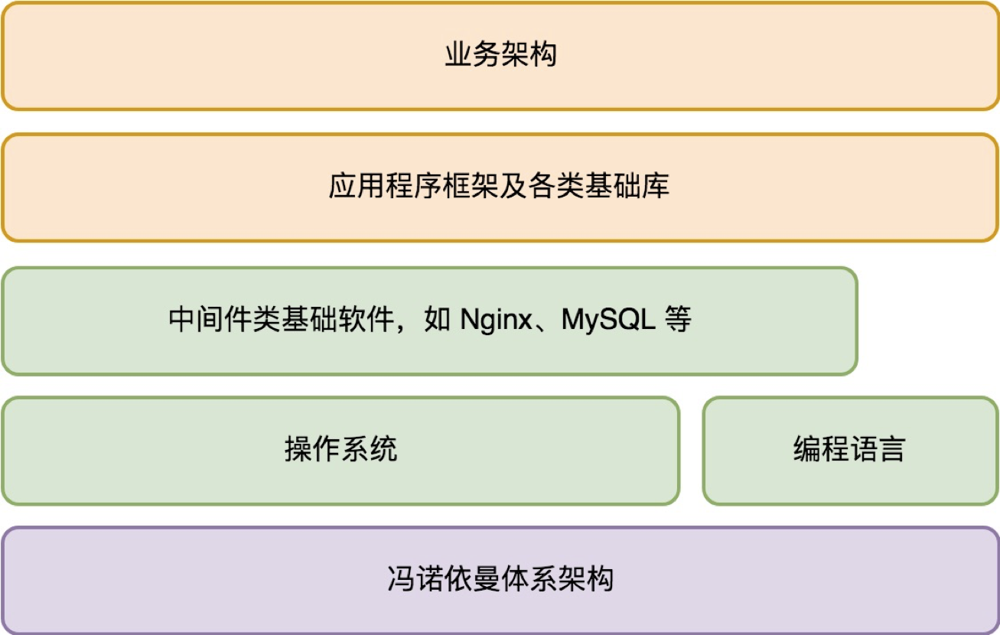
对于客户端应用程序来说，和服务端的情况会有非常大的差别。客户端首先面临的是多样性的挑战。
单就操作系统来说，PC 就有Windows、Mac、Linux 等数十种，手机也有Android、iOS，Windows Mobile 等等。而设备种类而言就更多了，不只有笔记本、平板电脑，还有手机、手表、汽车，未来只会更加多样化。
第一个想消除客户端的多样性，并且跨平台提供统一编程接口的，是浏览器。
可能在很多人看来，浏览器主要改变的是软件分发的方式，让软件可以即取即用，无需安装。但从技术角度来说，底层操作系统对软件的支持同样可以做到即取即用。
这方面苹果在iOS 上已经在尝试，大家可能已经留意到，如果你一个软件很久没有用，iPhone 就会把这个软件从本地清理出去，而在你下一次使用它时又自动安装回来。
假如软件包足够小，那么这种行为和 Web 应用就毫无区别。不同之处只在于Web 应用基于的指令不是机器码，而是更高阶的 JavaScript 脚本。
JavaScript 因为指令更高阶，所以程序的尺寸比机器码会有优势。但另一方面来说 JavaScript 是文本指令，表达效率又要比机器码低。
但这一点也在发生变化，近年来 WebAssembly 技术开始蓬勃发展，JavaScript 作为浏览器的机器码的地位会被逐步改变，我们前端开发会面临更多的可能性。
浏览器的地位非常特殊，我们可以看作操作系统之上的操作系统。一旦某种浏览器流行起来，开发人员都在浏览器上做应用，那么必然会导致底层操作系统管道化，这是操作系统厂商所不愿意看到的。
而如果浏览器用户量比较少，那么通过它能够触达的用户量就太少，消除不同底层操作系统差异的价值就不存在，开发人员也就不乐意在上面开发应用。
我们知道，PC 的浏览器之战打到今天，基本上就剩下Chrome、Internet Explorer、Safari、Firefox 等。
有趣的是，移动浏览器的战场似乎是从中国开始打起的，这就是微信引发的小程序之战，它本质上是一场浏览器的战争。
浏览器是一个基础软件，它能够解决多大的问题，依赖于它的市场占有率。但是基于同样的浏览器技术核心也可以构建出跨平台的应用框架。我们看到 React Native 就是沿着这个思路走的。当然这不是唯一的一条路，还有人会基于类似 QT 这样的传统跨平台方案。
整体来说，对于一个客户端应用程序来说，其完整的架构体系大体如下：
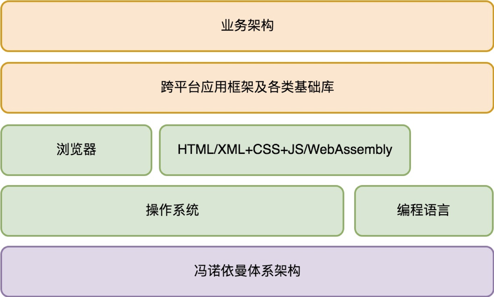
对于架构师来说，不仅仅只是想清楚业务应该怎么去做好分解，整个应用从底到最顶层的上层建筑，每一层都需要进行各种决策。先做 iOS 版本，还是先做小程序？是选择 Java 还是 Go 语言？这些都是架构的一部分。
结语
今天，我们从“计算机是如何工作”开始，一起登高鸟瞰，总览了程序完整的架构体系。
可能有人看到今天的内容心里会有些担心：“原来架构师要学这么多东西，看来我离成为架构师好远。”
好消息是：我们就是来打消这个担心的。如果我们把写代码的能力比作武功招式，那么架构能力就好比内功。内功修炼好了，武功招式的运用才能得心应手。
而架构能力的提升，本质上是对你的知识脉络（全身经络）的反复梳理与融会贯通的过程。 具备架构思维并不难，而且极有必要。不管今天的你是不是团队里的一位架构师，对任何一位程序员来说，具备架构思维将会成为让你脱颖而出的关键。
这就像你没有从事云计算行业，但是你仍然需要理解云计算的本质，需要驾驭云计算。你也不必去做出一个浏览器，但是你需要理解它们的思考方式，因为你在深度依赖于它们。
接下来我们将进一步展开来谈这个程序架构体系里面的每一个环节。你对今天的内容有什么思考与解读，欢迎给我留言，我们一起讨论。如果你觉得有所收获，也欢迎把文章分享给你的朋友。感谢你的收听，我们下期再见。
02 大厦基石：无生有，有生万物
你好，我是七牛云许式伟。
在上一讲中，我们把“构建一个应用程序”类比成“构建一座大厦”，并从宏观全局的视角剖析了应用程序这座大厦的构成。今天，我们将更加近距离地去解剖这座大厦的地基：冯·诺依曼体系结构。
解剖架构的关键点是什么？
在解剖之前，我想和你先谈谈“解剖学”：我们应该如何去分析架构设计中涉及的每一个零部件。换一句话说，当我们设计或分析一个零部件时，我们会关心哪些问题。
第一个问题，是需求。 这个零部件的作用是什么？它能被用来做哪些事情？（某种意义上来说更重要的是）它不会被用来做哪些事情？
你可能会说，呀，这个问题很简单，既然我设计了这个零部件，自然知道它是用来干嘛的。但实质上这里真正艰难的是“为什么”：为何这个零件被设计成用来干这些事情的，而不是多干一点事情，或者为什么不是少干某些事情？
第二个问题，是规格。 这个零部件接口是什么样的？它如何与其他零件连接在一起的？
规格是零部件的连接需求的抽象。符合规格的零部件可以有非常多种可能的实现方案，但是，一旦规格中某个条件不能满足了，它就无法正常完成与其他零件的连接，以达到预期的需求目标。
规格的约束条件会非常多样化，可能是外观（比如形状和颜色），可能是交互方式（比如用键盘、鼠标，或者语音和触摸屏），也可能是质量（比如硬度、耐热性等等）。
那么，冯·诺依曼体系结构的需求和规格又是什么样的呢？
为“解决一切的问题”而生
冯·诺依曼体系结构不但是应用程序这座大厦的地基，同时也是整个信息科技的地基。
当我们去审视整个信息科技时，仅把它形容为一座大厦显得如此不贴切，甚至你也不能用“一个城市”去形容它，事实上，它更像是一个无中生有的全新世界：在其中，有个体、有族群、有生态，还有喜怒哀乐。
冯·诺依曼体系结构的迷人之处在于，从需求来说，它想解决一切问题。解决一切可以用“计算”来解决的问题。
“计算”的边界在哪里？今天我们还没有人能够真正说得清。计算能不能解决“智能”的问题？通过计算能力，计算机是否终有一天可以获得和人类一样的智能？
今天人工智能热潮的兴起，证明对于这个问题我们很乐观：计算终将解决智能的问题。尽管我们不能确定什么时候能够达到，但是让人欣慰的是，我们一直在进步 —— 如果人类智能无法完成进一步的进化，那么我们就一直一直在前进，最终无限逼近甚至超越人类智能。
甚至有科幻小说家设想（例如在Google的“AlphaGo”大热后，霍炬和西乔创作的漫画“BetaCat”），计算机演进出超过人类的智能是生物进化的一个自然演进路径，它将取代人类成为新的食物链顶端，并最终基于其悠久的生命力，去完成人类有限生命无法实现的星际航行之路。
冯·诺依曼体系的规格
为了实现“解决一切可以用‘计算’来解决的问题”这个目标，冯·诺依曼引入了三类基础零部件：
- 中央处理器；
- 存储；
- 输入输出设备。
首先我们来看看存储。它负责存放计算涉及的相关数据，作为计算的输入参数和输出结果。
我们日常见到的存储设备非常的多样化。比如：中央处理器自己内置的寄存器、内存、传统机械硬盘、USB固态硬盘、光盘等等。
从中央处理器的角度，存储可简单分为两类：一类是内置支持的存储，通过常规的处理器指令可直接访问，比如寄存器、内存、计算机主板的ROM。一类是外置存储，它们属于输入输出设备。中央处理器本身并不能直接读写其中的数据。
冯·诺依曼体系中涉及的“存储”，指的是中央处理器内置支持的存储。
我们再来看看输入输出设备。它是计算机开放性的体现，大大拓展了计算机的能力。每个设备通过一个端口与中央处理器连接。通过这个端口地址，中央处理器可以和设备进行数据交换。数据交换涉及的数据格式由设备定义，中央处理器并不理解。
但这并不影响设备的接入。设备数据交换的发起方（设备使用方）通常理解并可以解释所接收的数据含义。为了方便使用，设备厂商或操作系统厂商通常会提供设备相关的驱动程序，把设备数据交换的细节隐藏起来，设备的使用方只需要调用相关的接口函数就可以操作设备。
最后我们来看看中央处理器。它负责程序（指令序列）的执行。指令序列在哪里？也存放在存储里面。计算机加电启动后，中央处理器从一个固定的存储地址开始执行。
中央处理器支持的指令大体如下（我们在第一篇文章中也曾提到过）：
- 计算类，也就是支持我们大家都熟知的各类数学运算，如加减乘除、sin/cos等等；
- I/O类，从存储读写数据，从输入输出设备读数据、写数据；
- 指令跳转类，在满足特定条件下跳转到新的当前程序执行位置、调用自定义的函数。
和“解决一切可以用‘计算’来解决的问题”这个伟大的目标相比，冯·诺依曼体系的三类零部件的规格设计显得如此精简。
为什么这么简洁的规格设计，居然可以解决这么复杂的需求？
需求是怎么被满足的？
我们来设想一下：假如今天让我们从零开始设计一个叫电脑的东西，我们的目标是“解决一切可以用‘计算’来解决的问题”。
对于这么含糊的需求，如果你是“电脑”这个产品的主架构师，你会如何应对？
让我们来分析一下。
一方面，需求的变化点在于，要解决的问题是五花八门包罗万象的。如何以某种稳定但可扩展的架构来支持这样的变化？而另一方面，需求的稳定之处在于，电脑的核心能力是固定的，怎么表达电脑的核心能力？
电脑的核心能力是“计算”。什么是计算？计算就是对一个数据（输入）进行变换，变为另一个数据（输出）。在数学中我们把它叫“函数”。如下：
y = F(x)
这里 x、y 是数据。它们可能只是一个简单的数值，也可能是文本、图片、视频，各种我们对现实问题进行参数化建模后的测量值，当然也可能是多个输入数据。但无论它的逻辑含义为何，物理上都可以以一段连续的字节内容来表达。用 Go 的语法表达就是：
func F(x []byte) (y []byte)
那么 x、y 物理上在哪里？思路推理到这里，“存储” 这个概念自然就产生了：存储，就是存放计算所要操作的数据的所在。
下面的问题是：一个具体的计算（也就是 F 函数）怎么表达？
这里的难点在于，F 对于电脑的架构师来说是未知的。那么，怎么设计一种系统架构让用户可以表达任意复杂的计算（函数）？
逻辑上来看，无论多复杂的自定义函数，都可以通过下面这些元素的组合来定义：
- 内置函数，比如整数或小数运算（加减乘除、sin/cos等）；
- 循环和条件分支；
- 子函数（也是自定义函数）。
这样一来，对于任意的一个具体的计算（自定义函数）来说，都可以用一组指令序列来表达。
那么函数 F 物理上在哪里？以指令序列形式存放在存储里面。所以，存储不只存放计算所要操作的数据，也存放“计算”本身。
只是，存储里面存放的“计算”只是数据，需要有人理解并执行这些数据背后的计算行为，才变成真正意义的“计算”。这个执行者，就是中央处理器（CPU）。它支持很多计算指令，包括执行内置函数、循环和条件分支、执行子函数等。
所以，有了中央处理器+存储，就可以支持任意复杂的“计算”了。
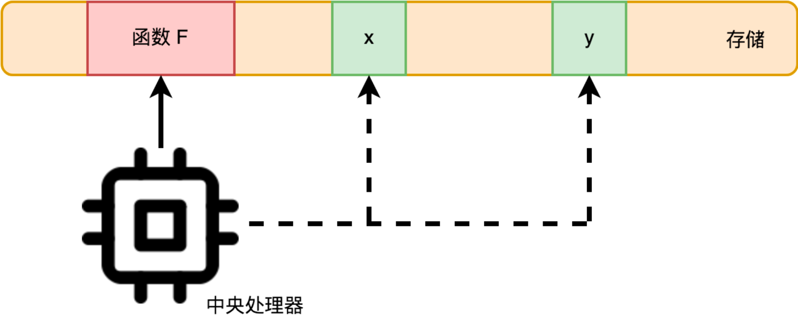
只是如果电脑只有“中央处理器+存储”，那它就如同一个人只有头脑而没有四肢五官，尽管很可能很聪明，但是这种聪明无法展现出来，因为它没法和现实世界发生交互。
交互，抽象来看就是输入和输出。对人来说，输入靠的是五官：眼睛看、耳朵听、鼻子闻、舌头尝，以及肌肤接触产生的触觉。输出靠语言（说话）和各种动作，如微笑、眨眼、皱眉、手势等等。
对于电脑来说，输入输出的需求就更多了，不只是四肢五官，而可能是千肢万官。
从输入需求来说，可能采集静态图像、声音、视频；也可能采集结构化数据，如GPS位置、脉搏、心电图、温度、湿度等；还可能是用户控制指令如键盘按键、鼠标、触摸屏动作等。
从输出需求来说，可能是向屏幕输出信息；也可能是播放声音；还可能是执行某项动作，如交通灯开关、汽车马达转动、打印机打印等。
但不管是什么样交互用途的器官（设备），我们要做的只是定义好统一的数据交换协议。这个数据交换机制，和网络上两台电脑通过互联网，需要通过某种数据交换协议进行通讯，需求上没有实质性的差别。
也就是说，除了纯正的“计算”能力外，中央处理器还要有“数据交换”能力（或者叫IO能力）。最终，电脑可以被看做由 “中央处理器+存储+一系列的输入输出设备” 构成。如下图：
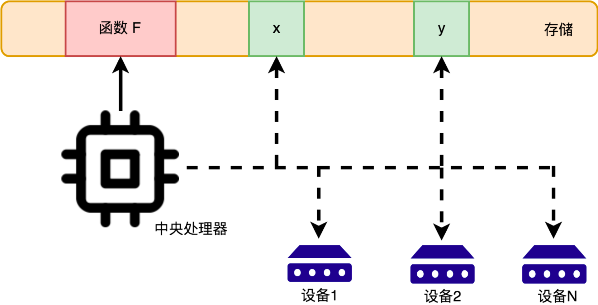
尽管输入输出设备引入的最初灵感可能是来自于“交互”，但是当我们去审视输入输出设备到底是什么的时候，我们很自然发现，它能够做的不单单是交互。
比如常见的外置存储如机械硬盘、光盘等，它们也是输入输出设备，但并不是用于交互，而是显著提升了电脑处理的数据体量。
输入输出设备从根本上解决的问题是什么？
是电脑无限可能的扩展能力。
最重要的一点，输入输出设备和电脑是完全异构的。输入输出设备对电脑来说就只是实现了某项能力的黑盒子。
这个黑盒子内部如何？没有规定。它可以只是一个原始的数字化的元器件，也可以是另一台冯·诺依曼架构的电脑，还可以是完全不同架构的电脑，比如GPU电脑、量子计算机。
你可以发现，引入了输入输出设备的电脑，不再只能做狭义上的“计算”（也就是数学意义上的计算），如果我们把交互能力也看做一种计算能力的话，电脑理论上能够解决的“计算”问题变得无所不包。
架构思维上我们学习到什么？
架构的第一步是需求分析。从需求分析角度来说，关键要抓住需求的稳定点和变化点。需求的稳定点，往往是系统的核心价值点；而需求的变化点，则往往需要相应去做开放性设计。
对于“电脑”这个产品而言，需求的稳定点是电脑的“计算”能力。需求的变化点，一是用户“计算”需求的多样性，二是用户交互方式的多样性。
电脑的“计算”能力，最终体现为中央处理器的指令集，这是需求相对稳定的部分。
用户“计算”需求的多样性，最终是通过在存储中的指令序列实现。计算机加电启动后，中央处理器并不是按自己固有的“计算”过程进行，而是从一个固定的存储地址加载指令序列执行。
通常，这个固定的存储地址指向计算机主板的ROM上的一段启动程序（BIOS）。这段启动程序通常包含以下这些内容。
- 存储设备的驱动程序，用以识别常规的外置存储设备，比如硬盘、光驱、U盘。
- 基础外部设备的驱动程序，比如键盘、鼠标、显示器（显卡）。
- 设备和启动配置的基础管理能力。
- 在外置存储上执行程序的能力（中央处理器只支持在内存上执行程序，当然它也为在外置存储执行程序提供了一些支持，比如内存页缺失的中断处理）。
- 将执行权转移到外置存储（第一次安装操作系统的时候可能是光驱甚至是网络存储，平常通常是硬盘）上的操作系统启动程序。这样，操作系统就开始干活了。
这样一来，“计算”需求的多样性只需要通过调整计算机主板上的BIOS程序，乃至外置存储中的操作系统启动程序就可以实现，而不必去修改中央处理器本身。
用户交互方式的多样性，则通过定义外部设备与中央处理器的数据交换协议实现。
当我们把所有的变化点从电脑的最核心部件中央处理器剥离后，中央处理器的需求变得极其稳定，可独立作为产品进行其核心价值的演进。
结语
总结一下，今天，我们近距离地去解剖了整个信息世界地基：冯·诺依曼体系结构。
冯·诺依曼体系结构的不凡之处在于，它想“解决一切可以用‘计算’来解决的问题”。
为了实现这个目标，冯·诺依曼引入了三类基础零部件：中央处理器、存储、输入输出设备。所有计算机都可以看做由 “中央处理器+存储+一系列的输入输出设备” 构成。
为了方便理解，我在尝试用 Go 语言模拟来实现冯·诺依曼架构体系的电脑：
如果你对此感兴趣，欢迎 fork 并对其进行修改迭代。
如果你对今天的内容有什么思考与解读，欢迎给我留言，我们一起讨论。如果你觉得有所收获，也欢迎把文章分享给你的朋友。感谢你的收听，我们下期再见。
03 汇编：编程语言的诞生
你好，我是七牛云许式伟。
在上一讲中，我们一起解剖了架构大厦的地基：冯·诺依曼体系。接下来，我们就开始沿着这座大厦攀登，一起来聊聊编程语言。
对于现代计算机来说，虽然 CPU 指令是一个很有限的指令集，但是CPU 执行的指令序列（或者叫“程序”）并不是固定的，它依赖于保存在存储中的数据，由软件工程师（或者叫“程序员”）编写的软件决定。
从上一讲中，我们可以知道，计算机的程序可能被保存在计算机主板的ROM上（这段程序也叫计算机的启动程序），也可能被保存在外置的存储设备（比如硬盘）上，并在合适的时机加载执行。
程序称得上是计算机的灵魂。指令序列的可能性是无穷的，程序的可能性就是无穷的。今天计算机创造的世界如此多姿多彩，正是得益于程序无穷的可能性。
那么，软件工程师是怎么编写程序的？
编程的史前时代
在第一门面向程序员的编程语言出现前，人们只能通过理解CPU指令的二进制表示，将程序以二进制数据方式刻录到存储（比如ROM或硬盘）上。
这个时期的编程无疑是痛苦的，效率是极其低下的：且不说我们怎么去修改和迭代我们的程序，光将我们的想法表达出来就极其困难。
我们首先要把表达的执行指令翻译成二进制的比特数据，然后再把这些数据刻录到存储上。
这个时候软件和硬件的边界还非常模糊，并不存在所谓软件工程师（或者叫“程序员”）这样的职业。写程序也并不是一个纯软件的行为，把程序刻录到存储上往往还涉及了硬件的电气操作。
为了解决编程效率的问题，汇编语言（和解释它的编译器）诞生了。汇编语言的编译器将汇编语言写的程序编译成为CPU指令序列，并将其保存到外置的存储设备（比如硬盘）上。
汇编语言非常接近计算机的CPU 指令，一条汇编指令基本上和CPU指令一一对应。
与机器对话
汇编语言的出现，让写程序（编程）成为一个纯软件行为（出现“程序员”这个分工的标志），人们可以反复修改程序，然后通过汇编编译器将其翻译成机器语言，并写入到外置的存储设备（比如硬盘）。并且，程序员可以按需执行该程序。
在表达能力上，汇编语言主要做了如下效率优化。
用文本符号（symbol）表达机器指令，例如 add 表示加法运算，而不用记忆对应的 CPU 指令的二进制表示。
用文本符号（symbol）表达要操作的内存地址，并支持内存地址的自动分配。比如我们在程序中使用了“Hello” 这样一段文本，那么汇编编译器将为程序开辟一段静态存储区（通常我们叫“数据段”）来存放这段文本，并用一个文本符号（也就是“变量名-variable”）指向它。用变量名去表达一段内存数据，这样我们就不用去关注内存的物理地址，而把精力放在程序的逻辑表达上。
用文本符号（symbol）表达要调用的函数（function，也叫“过程-procedure”）地址。对 CPU 指令来说，函数只有地址没有名字。但从编程的角度，函数是机器指令的扩展，和机器指令需要用文本符号来助记一样，函数的名称也需要用文本符号来助记。
用文本符号（symbol）表达要跳转的目标地址。高级语言里面，流程控制的语法有很多，比如 goto、if .. else、for、while、until 等等。但是从汇编角度来说，只有两种基本的跳转指令：无条件跳转（jmp）和条件跳转(je、jne)。同样，跳转的目标地址用文本符号（也就是“标签-label”）有助于程序逻辑的表达，而不是让人把精力放在具体的指令跳转地址上。
总结来说，汇编从指令能力上来说，和机器指令并无二致，它只不过把人们从物理硬件地址中解脱出来，以便专注于程序逻辑的表达。
但是，这一步所解放的生产力是惊人的，毕竟如果有选择的话，没有人会愿意用0101这样的东西来表达自己的思想。
可自我迭代的计算机
从探究历史的角度，你可能会期望了解最真实的历史发展过程。比如：怎么产生了现代计算机（以键盘作为输入，显示器作为输出）？怎么产生了汇编语言？怎么产生了操作系统？
不过，本专栏是以架构设计为目的，我们目的并不是还原最真实的历史。架构的意义在于创造。我们甚至可以设想一个有趣的场景：假设今天我们的信息科技的一切尚不存在，那么从架构设计角度，我们从工程上来说，如何更高效地完成从0到1的信息科技的构建？
最早的输入输出设备并不是键盘和显示器，而是打孔卡和打印机。用打孔卡来作为机器指令的输入，早在18世纪初就被用在织布机上了。早期的数字计算机就是用打孔卡来表达程序指令和输入的数据。
下图是 IBM 制造的打孔卡：
我们可以想象一下，第一台以键盘+显示器为标准输入输出的现代计算机出现后，一个最小功能集的计算机主板的ROM上，应该刻上什么样的启动程序？换句话说，这个现代计算机具备的最基本功能是什么？
从高效的角度（不代表真实的历史，真实历史可能经历过很多曲折的发展过程），我想，它最好具备下面的这些能力。
- 键盘和显示器的驱动程序。
- 当时最主流的外置存储设备（不一定是现代的硬盘）的驱动程序。
- 一个汇编程序编辑器。可从存储中读取汇编程序代码，修改并保存到存储中。
- 一个汇编编译器。可将汇编程序代码编译成机器代码程序，并保存到存储中。
- 可以执行一段保存在外置存储设备中的机器代码程序。
本质上，我们是要实现一个最小化的计算能力可自我迭代的计算机。
这个时期还没有操作系统（当然，把ROM上的启动程序BIOS看做一种最小化的操作系统，我觉得也可以，但毕竟不是现实中我们说的操作系统）。
汇编语言的出现要早于操作系统。操作系统的核心目标是软件治理，只有在计算机需要管理很多的任务时，才需要有操作系统。
所以，在没有操作系统之前，BIOS 包含的内容很可能是下面这样的：
- 外置存储设备的驱动程序；
- 基础外部设备的驱动程序，比如键盘、显示器；
- 汇编语言的编辑器、编译器；
- 把程序的源代码写入磁盘，从磁盘读入的能力。
最早期的计算机毫无疑问是单任务的，计算的职能也多于存储的职能。每次做完任务，计算机的状态重新归零（回到初始状态）都没有关系。
但是，有了上面这样一个 BIOS 程序后，计算机就开始发展起它存储的能力：程序的源代码可以进行迭代演进了。
这一步非常非常重要。计算机的存储能力的重要性如同人类发明了纸。纸让人类存储了知识，一代代传递下去并不断演进，不断发扬光大。
而同样有了存储能力的计算机，我们的软件程序就会不断被传承，不断演进发扬光大，并最终演进出今天越来越多姿多彩的信息科技的世界。
结语
今天我们一起回到了编程的史前时代，共同回溯了编程语言诞生的历史。
为了不再用“0101”表达自己的思想，人们创造了汇编语言，这一步让编程成为一个纯软件行为，程序员这一个分工也由此诞生。
为了进一步支持程序员这个职业，我们设计了MVP版（最小化可行产品）的可自我迭代的计算机。有了这个计算机，我们就可以不断演进，并最终演进出今天越来越多姿多彩的信息科技的世界。
架构上的思考题
在上一讲中，我们谈架构思维时提到，我们在需求分析时，要区分需求的变化点和稳定点。稳定点往往是系统的核心能力，而变化点则需要对应地去考虑扩展性上的设计。
今天，我们假设要实现一个最小化的计算能力可自我迭代的计算机，需求如上所述。
那么，它的变化点和稳定点分别是什么？为此，你会怎么设计出哪些子系统，每个子系统的规格是什么？扩展性上有哪些考虑？
欢迎把你的想法告诉我，我们一起讨论。感谢你的收听，再见。
04 编程语言的进化
你好，我是七牛云许式伟。今天我们继续来聊聊编程语言。
编程语言的出现，诞生了软件工程师（也叫程序员）这样一个职业，而汇编语言则可以看做是软件工程师这个分工出现的标志。
通过编程语言，软件工程师和计算机可以进行交互，表达自己的思想。但是，如果我们把掌握编程语言看做是软件工程师的专业技能，其实又低估了编程语言带来的革命性变化。
编程语言在信息科技发展中的位置，如同人类文明中语言所在的位置。而编程语言写出来的软件（及其源代码），如同人类文明中不断被传承下来的图书典籍。
软件是活的书籍
我个人一直有一个观点：软件是活的书籍，是我们人类知识传承能力的一次伟大进化。书籍能够通过文字来记载事件、传递情感、揭示规律、传承技术。书籍能够让人们进行远程的沟通（飞鸽传书），也能够让我们了解古人的生活习性，与古人沟通（虽然是单向的）。
这些事情软件都可以做到，而且做得更好。为什么我说软件是活的书籍，有两方面的原因。
其一，表达方式的多样性。 书籍只能通过文字描述来进行表达，这种表达方式依赖于人们对文字的理解，以及人的想象能力对场景进行还原。软件除了能够通过文字，还能够通过超链接、声音、动画、视频、实时的交互反馈等方式来还原场景。
其二，对技术的现场还原。 书籍只能通过文字来描述技术，但是因为人与人对同样的文字理解不同，领悟能力不同，这些都可能导致技术的传承会出现偏差，如果文字的记载不够详尽，可能就会出现“谁也看不懂，学不会”的情况，从而导致技术的失传。
但是，软件对技术的还原可以是精确的，甚至软件本身可以是技术的一部分。当软件是技术的一部分的时候，技术传承就是精确的，失传的概率就大大降低（除非技术本身适应不了潮流，退出了历史舞台）。
信息科技发展到今天，已经影响人类活动的方方面面。无论你从事什么职业，不管你是否会从事软件开发的工作，你都无法和信息科技脱节。如果希望能够站在职业发展的至高点，你就需要理解和计算机沟通的语言，也就需要理解软件工程师们的语言。
不仅如此，如果你把编程语言升华为人类知识传承能力的进化，你就更能够清晰地预判到这样的未来：每一个小孩的基础教育中一定会有编程教育，就如同每一个小孩都需要学习物理和数学一样。
编程范式的进化
编程语言从汇编开始，到今天还只有六十多年的历史，但是迭代之迅速，远超自然语言的迭代速度。从思想表达的角度来说，我们通常会听到以下这些编程范式。
其一是过程式。过程式就是以一条条命令的方式，让计算机按我们的意愿来执行。 今天计算机的机器语言本身就是一条条指令构成，本身也是过程式的。所以过程式最为常见，每个语言都有一定过程式的影子。过程式语言的代表是 Fortran、C/C++、JavaScript、Go 等等。
过程式编程中最核心的两个概念是结构体（自定义的类型）和过程（也叫函数）。通过结构体对数据进行组合，可以构建出任意复杂的自定义数据结构。通过过程可以抽象出任意复杂的自定义指令，复用以前的成果，简化意图的表达。
其二是函数式。函数式本质上是过程式编程的一种约束，它最核心的主张就是变量不可变，函数尽可能没有副作用（对于通用语言来说，所有函数都没副作用是不可能的，内部有 IO 行为的函数就有副作用）。
既然变量不可变，函数没有副作用，自然人们犯错的机会也就更少，代码质量就会更高。函数式语言的代表是 Haskell、Erlang 等等。大部分语言会比较难以彻底实施函数式的编程思想，但在思想上会有所借鉴。
函数式编程相对小众。因为这样写代码质量虽然高，但是学习门槛也高。举一个最简单的例子：在过程式编程中，数组是一个最常规的数据结构，但是在函数式中因为变量不可变，对某个下标的数组元素的修改，就需要复制整个数组（因为数组作为一个变量它不可变），非常低效。
所以，函数式编程里面，需要通过一种复杂的平衡二叉树来实现一个使用界面（接口）上和过程式语言数组一致的“数组”。这个简单的例子表明，如果你想用函数式编程，你需要重修数据结构这门课程，大学里面学的数据结构是不顶用了。
其三是面向对象。面向对象在过程式的基础上，引入了对象（类）和对象方法（类成员函数），它主张尽可能把方法（其实就是过程）归纳到合适的对象（类）上，不主张全局函数（过程）。面向对象语言的代表是 Java、C#、C++、Go 等等。
从“面向对象”到“面向连接”
面向对象的核心思想是引入契约，基于对象这样一个概念对代码的使用界面进行抽象和封装。
它有两个显著的优点。
其一是清晰的使用界面，某种类型的对象有哪些方法一目了然，而不像过程式编程，数据结构和过程的关系是非常松散的。
其二是信息的封装。 面向对象不主张绕过对象的使用接口侵入到对象的内部实现细节。因为这样做破坏了信息的封装，降低了类的可复用性，有一天对象的内部实现方式改变了，依赖该对象的相关代码也需要跟着调整。
面向对象还有一个至关重要的概念是接口。通过接口，我们可以优雅地实现过程式编程中很费劲才能做到的一个能力：多态。
由于对象和对象方法的强关联，我们可以引入接口来抽象不同对象相同的行为（比如鸟和猪是不同的对象，但是它们有相同的方法，比如移动和吃东西）。这样不同对象就可以用相同的代码来实现类似的复杂行为，这就是多态了。
多数面向对象语言往往还会引入一个叫继承的概念。大家对这个概念褒贬不一。虽然继承带来了编码上的便捷性，但也带来了不必要的心智负担：本来复合对象的唯一构造方法是组合，现在多了一个选择，继承。
究竟什么时候应该用继承，什么时候应该用组合？这着实会让人纠结。不过，这件事情最完美的答案是 Go 语言给出来的：放弃继承，全面强化组合能力（要了解 Go 语言强大的组合能力，参阅我的演讲）。
不同编程范式并不是互斥的。虽然有些编程语言会有明确的编程范式主张，比如 Java 是纯正的面向对象语言，它反对全局过程。但是，也有一些语言明确主张说自己是多范式的，典型代表是 C++。
当然，可能 C++ 不是一个好例子，因为它太复杂了，让人觉得多范式会大大增加语言的复杂性，虽然其实 C++ 的复杂性和多范式并没有什么关系。
可能 Go 语言是多范式更好的例子。它没有声称自己是多范式的，但是实际上每一种编程范式它都保留了精华部分。这并没有使得 Go 语言变得很复杂，整个语言的特性极其精简。
Go 语言之所以没有像 C++ 那样声称是多范式的，是因为 Go 官方认为 Go 是一门面向连接的语言。
什么是面向连接的语言？在此之前，你可能并没有听过这样的编程范式，这应该算 Go 自己发明出来的范式名称。在我看来，所谓面向连接就是朴素的组合思想。研究连接，就是研究人与人如何组合，研究代码与代码之间怎么组合。
面向对象创造性地把契约的重要性提高到了非常重要的高度，但这还远远不够。这是因为，并不是只有对象需要契约，语言设计的方方面面都需要契约。
比如，代码规范约束了人的行为，是人与人的连接契约。如果面对同一种语言，大家写代码的方式很不一样，语言就可能存在很多种方言，这对达成共识十分不利。所以 Go 语言直接从语言设计上就消灭掉那些最容易发生口水的地方，让大家专注于意图的表达。
再比如，消息传递约束了进程（这里的进程是抽象意义上的，在 Go 语言中叫 goroutine）的行为，是进程与进程的连接契约。** 消息传递是多核背景下流行起来的一种编程思想，其核心主张是：尽可能用消息传递来取代共享内存，从而尽可能避免显式的锁，降低编程负担。**
Go 语言不只是提供了语言内建的消息传递机制（channel），同时它的消息传递是类型安全的。这种类型安全的消息传递契约机制，大大降低了犯错的机会。
其他方面的进化
除了编程范式，编程语言的进化还体现在工程化能力的完善上。工程化能力主要体现在如下这些方面。
- 包（package），即代码的发布单元。
- 版本（version），即包的依赖管理。
- 文档生成（doc）。
- 单元测试（test）。
从语言的执行器的行为看，出现了这样三种分类的语言。
- 编译的目标文件为可执行程序。典型代表是 Fortran、C/C++、Go 等。
- 生成跨平台的虚拟机字节码，有独立的执行器（虚拟机）执行字节码 。典型代表为 Java、Erlang 等。
- 直接解释执行。典型代表是 JavaScript。当然现在纯解释执行的语言已经不多。大多数语言也只是看起来直接执行，内部还是会有基于字节码的虚拟机以提升性能。
语言对架构的影响是什么？
我们思考一个问题：从架构设计角度来看，编程语言的选择对架构的影响是什么？
我们在第一篇“架构设计的宏观视角”中，介绍了服务端程序和客户端程序的整体架构图。细心的读者可能留意到了，在架构图中我用了三种不同的颜色来表示不同层次的依赖。
无论服务端，还是客户端，我们可以统一将其架构图简化为下图所示。
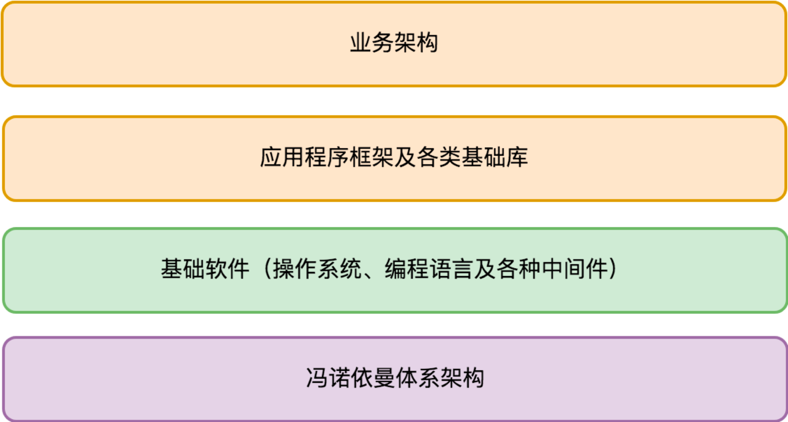
图中淡紫色是硬件层次的依赖，是我们程序工作的物理基础。淡绿色的是软件层次的依赖，是我们程序工作的生态环境。桔色的是库或源代码层次的依赖，是我们程序本身的组成部分。细分的话它又可以分两部分：一部分是业务无关的框架和基础库，还有一部分是业务架构。
从软件的业务架构来说，本身应该怎么拆分模块，每个模块具体做什么样的事情（业务边界是什么），这是业务需求本身决定的，和编程语言并没有关系。但在我们描述每个模块的规格时，采用的规格描述语言会面临如下两种选择：
- 选择某种语言无关的接口表示；
- 选择团队开发时采用的语言来描述接口。
两种选择的差异并不是实质性的。只要团队内有共识，选哪一种都无所谓。本着“如无必要勿增实体”的原则，我个人会倾向于后者，用开发语言来做接口表示。在七牛云的话自然就是选 Go 了。
站在唯技术论的角度，业务架构与语言无关，影响的只是模块规格的描述语法。但语言的选择在实践中对业务架构决策的影响仍然极其关键。
原因之一是开发效率。 抛开语言本身的开发效率差异不谈，不同语言会有不同的社区资源。语言长期以来的演进，社区所沉淀下来的框架和基础库，还有你所在的企业长期发展形成的框架和基础库，都会导致巨大的开发效率上的差异。
原因之二是后期维护。 语言的历史通常都很悠久，很难实质性地消亡。但是语言的确有它的生命周期，语言也会走向衰落。选择公司现在更熟悉的语言，还是选择一个面向未来更优的语言，对架构师来说也是一个两难选择。
结语
今天我们抛开具体的语言发展史，而从编程范式演进的角度来谈编程语言的进化。过程式、函数式、面向对象，这些都是大家熟悉的编程范式；所以我们把重点放在了介绍由 Go 语言带来的面向连接的编程思想，并将其与面向对象做了详细的对比。
未来编程语言还将出现什么样的新思想，我们不得而知。但可以预见，出现新的创造性思维的挑战将越来越大。历史的发展是曲折螺旋上升的。
要想有所突破，需要建立批判性思维。一种新思潮的兴起过程很容易用力过猛。面向对象是一个很好的例子。面向对象是非常重要的进步，但是继承是一个过度设计，不只让软件工程师在组合与继承中纠结，也产生了复杂的对象继承树。我们只有在实践中不断总结与反思，才有可能产生新的突破。
你对今天的内容有什么思考与解读，欢迎给我留言，我们一起讨论。如果你觉得有所收获，也欢迎把文章分享给你的朋友。感谢你的收听，我们下期再见。
05 思考题解读：如何实现可自我迭代的计算机？
你好，我是七牛云许式伟。
在“03 | 汇编：编程语言的诞生”中，我给出了一个架构思考题：
第一台以键盘+显示器为标准输入输出的现代计算机出现后，一个最小功能集，但计算能力可自我迭代的计算机应该是什么样的？
从需求上来说，我们期望它有如下能力。
- 键盘和显示器的驱动程序。
- 当时最主流的外置存储设备（不一定是现代的硬盘）的驱动程序。
- 一个汇编程序编辑器。可从存储中读取汇编程序代码，修改并保存到存储中。
- 一个汇编编译器。可将汇编程序代码编译成机器代码程序，并保存到存储中。
- 支持执行一段保存在外置存储设备中的机器代码程序。
那么，它的变化点和稳定点分别是什么？为此，你会怎么设计，设计出哪些子系统，每个子系统的规格是什么？扩展性上有哪些考虑？
需求分析
我们前面谈架构思维时提到：做架构，第一件事情要学会做需求分析。
需求分析的重要性怎么形容都不过分。准确的需求分析是做出良好架构设计的基础。我个人认为，架构师在整个架构的过程中，至少应该花费三分之一的精力在需求分析上。
这也是为什么很多非常优秀的架构师换到一个新领域后，一上来并不能保证一定能够设计出良好的架构，而是往往需要经过几次迭代才趋于稳定，原因就在于：领域的需求理解是需要一个过程的，对客户需求的理解不可能一蹴而就。
所以，一个优秀的架构师除了需要“在心里对需求反复推敲”的严谨态度外，对客户反馈的尊重之心也至关重要。只有心里装着客户，才能理解好需求，做好架构。
前面我们也强调过：在需求分析时，要区分需求的变化点和稳定点。稳定点往往是系统的核心能力，而变化点则需要对应地去考虑扩展性上的设计。
那么今天我们来实战一番，要实现一个最小化的计算能力可自我迭代的计算机，我们怎么做需求分析。
怎么实现可自我迭代的计算机？
通过前面对计算机工作原理的分析，我们已经知道，计算机分为三大类的零部件：
- 中央处理器；
- 存储；
- 输入输出设备。
中央处理器作为“计算”能力的核心，我们已经对它的工作范畴解剖清晰，这里不提。
存储，一方面作为“计算”的输入输出，另一方面作为“计算”本身的承载（也就是程序），主要的变数在后者。存储上的程序主要是：
- 计算机主板ROM上的启动程序（BIOS）；
- 外置存储上的软件。
接下来我们要考虑清楚的是：BIOS 负责做什么，外置存储上的软件负责做什么。这里我们先不展开。
输入输出设备，除了键盘和显示器外，还有外置存储。键盘和显示器我们只需要准备好对应的驱动程序，并没有特别需要考虑的内容。主要的变数在外置存储上。
外置存储在我们为它准备好了驱动程序后，就可以对它进行数据的读写了，但是我们接着需要考虑的问题是：我们准备把外置存储的数据格式设计成什么样？
回答这个问题前，先回顾下我们要做什么。目前我们已知的功能需求有如下这些。
- 键盘和显示器的驱动程序。
- 外置存储设备的驱动程序。
- 汇编程序编辑器。可从外置存储中读取汇编程序代码，修改并保存到外置存储中。
- 汇编编译器。可将汇编程序代码编译成机器代码程序，并保存到外置存储中。
- 支持执行一段保存在外置存储设备中的机器代码程序。
我们可以看到，外置存储需要保存的内容有：
汇编程序的源代码；
汇编编译器编译出来的可执行程序。
可见，外置存储它不应该只能保存一个文件，而是应该是多个。既然是多个，就需要组织这些文件。那么，怎么组织呢？
今天我们当然知道，操作系统的设计者们设计了文件系统这样的东西，来组织这些文件。虽然文件系统的种类有很多（比如：FAT32、NTFS、EXT3、EXT4 等等），但是它们有统一的抽象：文件系统是一颗树；节点要么是目录，要么是文件；文件必然是叶节点；根节点是目录，目录可以有子节点。
但是，文件系统（File System）是否是唯一的可能性？当然不是。键值存储（Key-Value 存储）也挺好，尤其是早期外置存储容量很可能极其有限的情况下。可以做这样统一的抽象：
- 每个文件都有一个名字（Key），通过名字（Key）可以唯一定位该文件，以进行文件内容的读写；
- 为了方便管理文件，可以对文件名做模糊查询（List），查询（List）操作支持通配符（比如我们现在习惯用的
*和?）； - 未来外置存储的空间有可能很大，需要考虑文件管理的延展性问题；可以考虑允许每个文件设定额外的元数据（Meta），例如创建时间、编辑时间、最后访问时间、以及其他用户自定义的元数据。通过元数据我们也可以检索（Search）到我们感兴趣的文件。
聊完了外置存储，让我们再回来看看 BIOS 和外置存储的软件怎么分工。
首先，BIOS 和外置存储上的软件分工的标准是什么？BIOS 是刻在计算机主板ROM上的启动程序，它的变更非常麻烦。所以 BIOS 负责的事情最好越少越好，只做最稳定不变的事情。
我们一一来看当前已知的需求。
首先是外部设备的驱动程序：键盘和显示器的驱动程序、外置存储设备的驱动程序。一方面，只要键盘、显示器、外置存储没有大的演进，驱动程序就不变，所以这块是稳定的；另一方面，它们是 BIOS 干其他业务的基础。所以，这个事情 BIOS 必然会做。
其次是汇编程序编辑器。 编辑器的需求是模糊的，虽然我们知道它支持用户来编写程序，但是整个编辑器的操作范式是什么样的，没有规定。所以它不像是给键盘写一个驱动程序那样，是一个确定性的需求，而有很多额外的交互细节，需要去进一步明确。
你可以留意下自己日常使用的编辑器，去试着列一下它们的功能列表。你会发现小小的编辑器，功能远比你接触的大部分常规软件要多得多。
再次是汇编编译器。 汇编编译器从输入输出来看，似乎需求相对确定。输入的是汇编源代码，输出的是可执行程序。但认真分析你会发现，它实际上也有很大的不确定性。
其一，CPU 会增加指令，这时候汇编指令也会相应地增加。对于大部分应用程序，CPU 新增的指令如果自己用不到，可以当它不存在。但是汇编语言及编译器需要完整呈现 CPU 的能力，因此需要及时跟进。
其二，虽然汇编指令基本上和机器指令一一对应，但是它毕竟是面向程序员的生产力工具，所以汇编语言还是会演进出一些高阶的语法，比如宏汇编指令。
所谓宏汇编指令，就是用一个命令去取代一小段汇编指令序列，它和C语言里面的宏非常类似。所以汇编语言并不是稳定的东西，它和其他高级语言类似，也会迭代变化。这就意味着汇编编译器也需要相应地迭代变化。
最后，执行一段保存在外置存储设备中的机器代码程序。 这个需求看似比较明确，但是实际上需求也需要进一步细化。它究竟是基于外置存储的物理地址来执行程序，还是基于文件系统中的文件（文件内容逻辑上连续，但是物理上很可能不连续）来执行程序？
实现上，这两者有很大的不同。前者只需要依赖外置存储的驱动程序就可以完成，后者则还需要额外理解文件系统的格式才能做到。
那么，BIOS 到底怎么把执行控制权交到外置存储呢？
在学冯·诺依曼结构的时候，我们提到过，CPU 加电启动时，它会从存储的一个固定地址开始执行指令，这个固定地址指向的正是 BIOS 程序。
类似的，我们的 BIOS 也可以认定一个外置存储的固定地址来加载程序并执行，而无需关心磁盘的数据格式是什么样的。这个固定地址所在的数据区域，我们可以把它叫做引导区。
引导区的存在非常重要，它实际上是 BIOS 与操作系统的边界。
对于 BIOS 来说，执行外置存储上的程序能力肯定是需要具备的，否则它没有办法把执行权交给外置存储。但是这个能力可以是非常简约的。BIOS 只需要执行引导区的程序，这个程序并不长，完全可以直接读入到内存中，然后再执行。
我们是否需要基于文件系统中的文件来执行程序的能力？答案是需要。因为汇编编译器编译后的程序在外置存储中，需要有人能够去执行它。
综上，我们确认 BIOS 需要负责的事情是：
- 键盘和显示器的驱动程序；
- 外置存储设备的驱动程序；
- 支持执行外置存储中引导区的机器代码程序；
- 跳转到外置存储的固定地址，把执行权交给该地址上的引导程序。
而汇编程序编辑器、汇编编译器 ，以及支持执行文件系统中的程序，则不应该由 BIOS 来负责。
那么，外置存储上的引导程序拿到执行权后干什么呢？
我们再来总结下当前我们遇到的需求。
- 需要有人负责支持外置存储的数据格式，提供统一的功能给其他程序使用。无论它是文件系统，还是Key-Value存储系统。
- 需要有人提供管理外置存储的基础能力，比如查询（List）一下外置存储里面都有些什么文件。它可以实现为一个独立的程序，比如我们命名为 ls。
- 需要有人执行外置存储上的可执行程序。它可以实现为一个独立的程序，比如我们命名为 sh。
- 汇编程序编辑器。其实这个程序和汇编语言没什么关系，就是一个纯正的文本编辑器。我们可以把这个程序命名为 vi。
- 汇编编译器。它可以实现为一个独立的程序，比如我们命名为 asm。
引导程序拿到执行权后，我们不管它额外做了哪些事情，最终它要把执行权交给 sh 程序。因为，sh 程序算得上是可自我迭代的计算机扩展性的体现：通过 sh 程序来执行外置存储上的任意程序，这也相当于在扩展 CPU 的指令集。
结语
我们来回顾一下今天的内容。一个最小功能集、计算能力可自我迭代的计算机，它的变化点和稳定点分别是什么？为此，你会怎么设计，设计出哪些子系统，每个子系统的规格是什么？扩展性上有哪些考虑？
需求的变化点在于下面这几点。
- 外置存储的数据格式。对此，我们设计文件系统（或Key-Value存储）子系统来负责这件事情。另外，我们也提供了 ls 程序来管理外置存储中的文件。
- 用户最终拿到这个计算机后，会迭代出什么能力。对此，我们设计了 sh 程序，让它支持在外置存储上执行任何应用程序。
- 编辑器的交互范式。对此，我们设计了 vi 程序，让它迭代编辑器的能力。
- 汇编语言的使用范式。对此，我们设计了 asm 程序，让它响应 CPU 指令集的迭代，以及汇编语言进化的迭代。
最终，我们设计出来的“可自我迭代的计算机”，它的系统架构看起来是这样的：
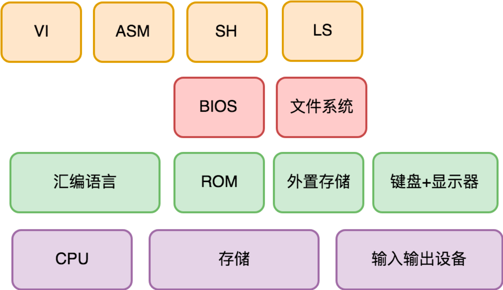
你的需求分析和系统设计跟上面的架构一致吗？
不一致非常正常，架构并无标准答案。但通过对比别人的方案与自己的不同之处，可以加深你对架构设计在决策上的体会。
另外，在 “可自我迭代的计算机” 这样相对模糊需求的细化过程中，也会很自然出现不太一样的理解，这些都是正常的，这也是需求分析的重要性所在，它本身就是一个需求从模糊到细化并最终清晰定义的过程。
如果你觉得系统过于复杂，不知道如何下手，也不要紧，设计“一个可自我迭代的计算机” 的确是一个复杂的系统，它并不是一个非常适合架构新手的任务。但是我仍然希望通过这样一个例子的剖析，你对需求分析中稳定点和变化点的判断有所感悟。
如果你有什么样的想法和疑问，欢迎你给我留言，我们一起讨论。如果你觉得有所收获，也欢迎把文章分享给你的朋友。感谢你的收听，我们下期再见。
06 操作系统进场
你好，我是七牛云许式伟。
在编程语言出现后，软件生产效率得到了大幅度的提升。随着越来越多软件的出现，自然而然就诞生了多个软件如何共处，也就是软件治理的需求。比如下面的这些需求场景。
- 多个软件如何同时运行（多任务的需求）？
- 多个软件如何共同使用计算机上的存储空间（内存管理、文件系统的需求）？
- 多个软件如何共同使用同一个外部设备（设备管理的需求）？
- 多个软件如何相互通讯，如何进行数据交换（进程间通讯、共享内存的需求）？
- 病毒、恶意软件如何治理（安全管理的需求）？
如果没有一个中间的协调方，软件与软件之间并不知道彼此的存在，你不难想象出，这种没有统一规则约束下的场面，会有多么凌乱。
于是，操作系统就出现了。对于软件而言，它像一个大法官，制定规则并据此约束大家的行为。
操作系统的启动过程
操作系统是怎么获得执行权的？
这是计算机主板ROM上的启动程序（BIOS）交给它的。
计算机加电启动后，中央处理器（CPU）会从一个固定的存储地址加载指令序列执行。通常，这个固定的存储地址指向计算机主板的ROM上的一段启动程序（BIOS）。这段启动程序通常包含以下这些内容。
- 存储设备的驱动程序，用以识别常规的外置存储设备，比如硬盘、光驱、U盘。
- 基础外部设备的驱动程序，比如键盘、鼠标、显示器。
- 设备和启动配置的基础管理能力。
- 支持执行外置存储中引导区的机器代码程序。
- 跳转到外置存储引导区的固定地址，把执行权交给该地址上的引导程序。
引导区的引导程序有长度限制（关于这一点我在上一讲已经介绍过），只能做非常少的事情。在常规情况下，它只是简单地跳转到真正的操作系统的启动程序，但有时计算机上安装了多个操作系统，此时引导程序会提供菜单让你选择要运行的操作系统。
这样，操作系统就开始干活了。
操作系统的需求演进
那么，操作系统是做什么的？前面我们说的“软件治理”是否可以涵盖它完整的目标？
让我们从操作系统的发展历程说起。
最早期的计算机是大型机。这个时期的计算机笨重、昂贵，并且操作困难，主要使用人群是搞科研性质的科学家或其他高端人群。
虽然这个时期催生了 IBM 这样的硬件巨头，但大多数人根本就意识不到，这玩意儿对后世人们的生活能够产生如此翻天覆地的变化。
这个时期的计算机还是单任务的，以计算为主，软件为操作硬件服务。如果我们认为“软件治理”是操作系统的根源需求的话，那么可以认为这个时期还不存在操作系统。但的确会有一些辅助工具库来简化用户使用计算机的负担，我们可以把它看做操作系统的萌芽。
从这个意义来说，提供计算机的“基础编程接口”，降低软件开发的负担，是操作系统更为原始的需求。
此后，小型机和个人计算机（PC）的崛起，分别诞生了 UNIX 和 DOS 这两个影响深远的操作系统。 UNIX 就不用说了，它几乎算得上今天所有现代操作系统的鼻祖。
DOS 的历史非常有趣。首先是 IBM 没把操作系统当回事儿，把这个活儿包给了微软。然后是微软只花了 5 万美元向西雅图公司购买了 86-DOS 操作系统的版权，更名为 MS-DOS。
那么 86-DOS 是怎么来的？西雅图公司的一个24岁小伙叫蒂姆·帕特森（Tim Paterson），单枪匹马花了4个月时间写出来的。
可以看到，这个时期人们对操作系统并没有太深刻的认知，多数人只把它看做硬件的附属品。IBM 不把它当回事，西雅图公司也没把它当回事，几万就把它卖了。只有微软认认真真地把它当做生意做了起来（在此之前微软的生意是卖 BASIC 语言的解析器起家，所以微软一直对 BASIC 语言情有独钟，直到很久以后微软搞出了 C# 语言后，情况才有所改变）。
等到 IBM 意识到操作系统是个金蛋，改由自己做 PC-DOS 操作系统的时候，微软已经通过推动 PC 兼容机的发展，让操作系统不再依赖特定的硬件设备，微软也就因此脱离 IBM 的臂膀，自己一飞冲天了。
回到问题。要回答操作系统在做什么，我们可以从客户价值和商业价值两个维度来看。
客户价值来说，操作系统首先要解决的是软件治理的问题，大体可分为以下六个子系统：进程管理、存储管理、输入设备管理、输出设备管理、网络管理、安全管理等。
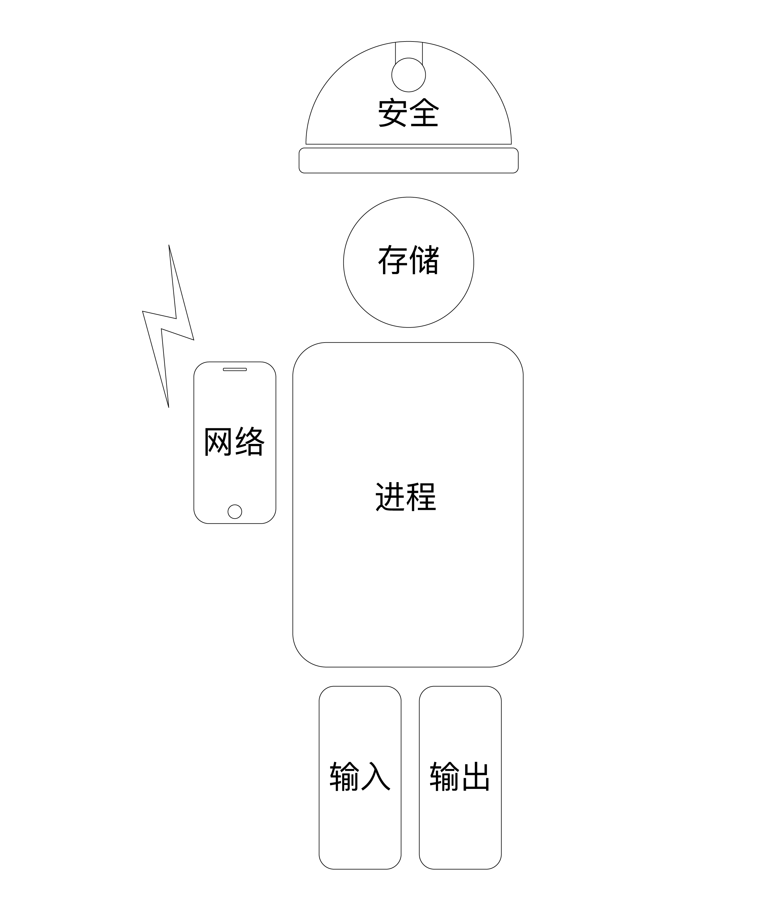
操作系统其次解决的是基础编程接口问题。 这些编程接口一方面简化了软件开发，另一方面提供了多软件共同运行的环境，实现了软件治理。
商业价值来说，操作系统是基础的刚需软件。计算机离开了操作系统就是一堆废铜烂铁。随着个人计算机采购需求的急速增加，光靠软件 License 的费用就让操作系统厂商赚翻了。
虽然第一个广为人知的操作系统是 UNIX，但从商业上来说最成功的操作系统则是 DOS/Windows，成就了微软的霸主地位。
为什么是 DOS/Windows 赢得了市场，这无关技术优劣，关键在于两者的商业路线差异：UNIX 走的是企业市场，而 DOS/Windows 选择了更为巨大的市场：个人计算机（PC）市场。
操作系统也是核心的流量入口。占领了操作系统，就占有了用户，想推什么内容给用户都很容易。微软对这一点显然心知肚明。
这也是为什么当年网景推 Netscape 浏览器的时候，微软很紧张。因为浏览器是另一个软件治理的入口，本质上是操作系统之上的操作系统。如果软件都运行在浏览器上，那么本地操作系统就沦为和硬件一般无二的管道了。
虽然早期操作系统没有应用市场（AppStore），但是通过操作系统预装软件的方式向软件厂商收租，这是一直以来都有的盈利方式。国内盗版的番茄花园 Windows 发行版就是通过在 Windows 系统上预装软件来盈利。
当然预装软件只是一种可能性，流量变现的方式还有很多。苹果的 iOS 操作系统开启了新的玩法，它构建了新的商业闭环：账号（Account）、支付（Pay）、应用市场（AppStore）。
我们把这个商业模式叫收税模式。帐号（注意是互联网账号，不是过去用于权限管理的本地账号）是前提。没有帐号，就没有支付系统，也没有办法判断用户是否购买过某个软件。
应用市场实现了应用的分发，既解决了系统能力的无限扩展问题（客户价值），也解决了预装软件的软件个数总归有限的问题（商业价值）。支付则是收税模式的承载体，无论是下载应用收费，还是应用内购买内容收费，都可以通过这个关卡去收税。
无论是本地操作系统 iOS 和 Android，还是 Web 操作系统（浏览器）如微信小程序，都实现了“帐号-支付-应用市场”这样的商业闭环。这类操作系统，我们不妨把它叫做现代操作系统。
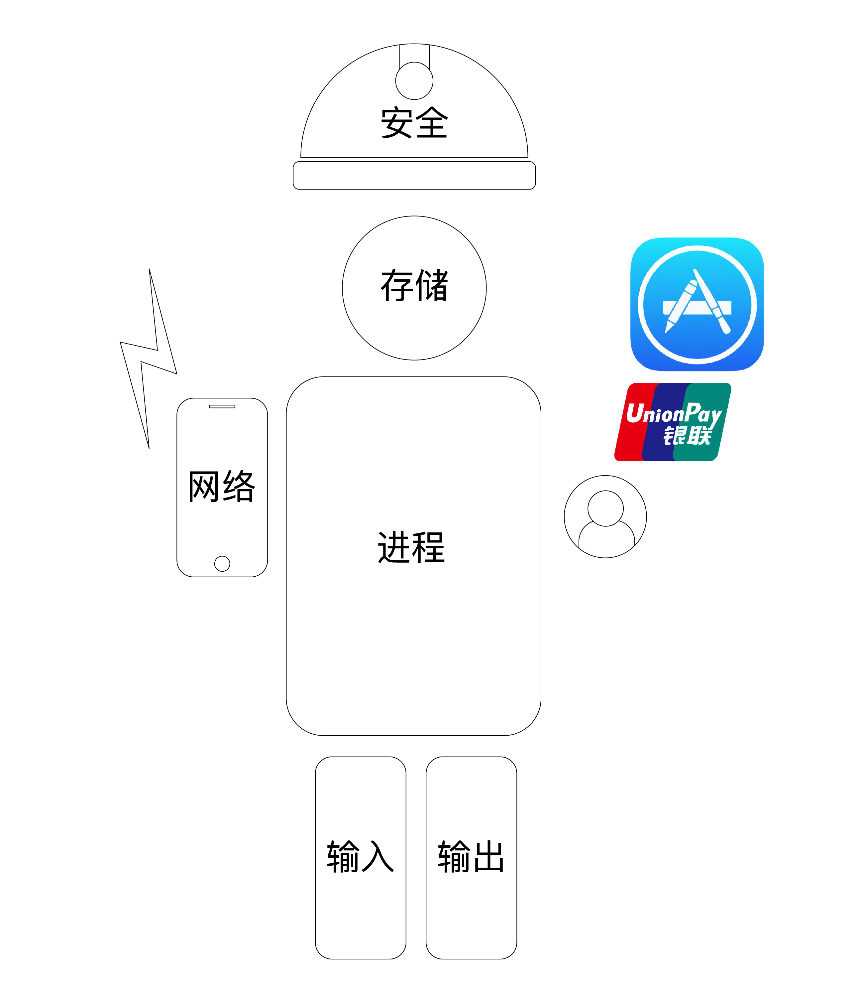
操作系统的边界在哪里？
架构的第一步是需求分析。上一讲我提到了在架构设计过程中，需求分析至少应该花费三分之一的精力。通过这一节我们对操作系统演进过程的回顾，你可能更容易体会到这一点。
当我们说要做一个操作系统的时候，实际上我们自己对这句话的理解也是非常模糊的。尤其是我们正准备去做的事情是一个新生事物时，我们对其理解往往更加粗浅。
在本专栏[开篇词]中我也提过，架构也关乎用户需求，作为架构师我们不只是要知道当前的用户需求是什么，我们还要预测需求未来可能的变化，预判什么会发生，而什么一定不会发生。
我们可以问一下自己：我是否能够预料到，有一天支付（Pay）系统会成为操作系统的核心子系统？如果不能，那么怎么才能做到？
操作系统的边界到底在哪里？
要回答这个问题，我们需要看清楚这样三个角色的关系：
- 硬件（个人计算机、手机或其他）；
- 操作系统；
- 浏览器。
首先我们来看操作系统与硬件的关系。如果操作系统厂商不做硬件会怎样？我们知道个人计算机（PC）市场就是如此。微软虽然占据了 PC 操作系统（DOS/Windows）绝大部分江山，但是它自身并不生产硬件。这里面，PC 兼容机的发展对 DOS/Windows 的发展有着至关重要的支撑意义。它让操作系统厂商有了独立的生存空间。
到了移动时代，Google 收购 Android 后，通过免费策略占领移动操作系统的大半江山，一定程度上复制了微软的过程，但实际上并没有那么理想。
首先，Android 是免费的，Google 并没有从中收取软件 License 费用，而是借助 Android 的市场占有率来推动 Google 的服务（例如搜索、Gmail 等等），通过 Google 服务来获取商业回报。
其次，iOS 操作系统引入的 “账号-支付-应用市场” 的收税模式，受益方是硬件（手机）厂商，而非操作系统厂商。其中最关键的一点，几乎所有手机厂商都不接受把支付（Pay）这个核心系统交给 Google。
最后，不止支付系统，一旦手机厂商长大立足 ，Google 服务也会被逐步替换。所以 Google 和 Android 手机厂商之间的联盟并不可靠，养肥的手机厂商会不断试探 Google 的底线，而 Google 也会尝试去收紧政策，双方在博弈中达到平衡。
之所以会这样，我觉得原因有这么几个：
其一，历史是不可复制的，人们对操作系统的重要性认知已经非常充分。所以大部分手机厂商，都不会放弃操作系统的核心子系统的主控权。Android 系统的开源策略无法完全达到预期的目标，这也是 Google 最终还是免不了要自己做手机的原因。
其二，手机是个性化产品，硬件上并没有 PC 那么标准化。所以个人计算机有兼容机，而手机并没有所谓的标准化硬件。
分析完操作系统和硬件的关系，我们再来看它和浏览器的关系。在 PC 时期，操作系统和浏览器看起来至少需求上是有差异化的：操作系统，是以管理本地软件和内容为主（对内）。浏览器，是以管理互联网内容为主（对外）。
但，这个边界必然会越来越模糊。
操作系统不涉足互联网内容？这是不可能的。应用市场（AppStore）其实就是典型的互联网内容；而另一方面，在浏览器的生态里也有一些特殊角色：网址导航、搜索引擎、Web 应用市场，它们共同构成了探索互联网世界的“地图”。
问题在于：
- 操作系统、浏览器和（互联网）搜索引擎的关系是什么；
- 移动时代的浏览器会是什么样的；它和操作系统的关系又如何相处？
欢迎把你对这几个问题的想法告诉我。
结语
让我们简单回顾下今天我所讲到的内容。
从客户需求来说，操作系统的核心价值在于：
- 实现软件治理，让多个软件和谐共处；
- 提供基础的编程接口，降低软件开发难度。
从商业价值来说，操作系统是刚性需求，核心的流量入口，兵家必争之地。所以，围绕它的核心能力，操作系统必然会不断演化出新的形态。
我们把引入了 “账号-支付-应用市场” 商业闭环的收税模式的操作系统，称为现代操作系统。
操作系统的边界到底在什么地方？我们通过分析硬件、操作系统、浏览器三者的关系，也做了定性的分析。这样的分析将有助于你对需求发展做出预判。
最后，你可以在留言区给我留言，分享你对于操作系统技术、商业的看法，让我们一起交流。
07 软件运行机制及内存管理
你好，我是七牛云许式伟。
操作系统的核心职能是软件治理，而软件治理的一个很重要的部分，就是让多个软件可以共同合理使用计算机的资源，不至于出现争抢的局面。
内存作为计算机最基础的硬件资源，有着非常特殊的位置。我们知道，CPU 可以直接访问的存储资源非常少，只有：寄存器、内存（RAM）、主板上的 ROM。
寄存器的访问速度非常非常快，但是数量很少，大部分程序员不直接打交道，而是由编程语言的编译器根据需要自动选择寄存器来优化程序的运行性能。
主板上的 ROM 是非易失的只读的存储。所谓非易失，是计算机重新启动后它里面的数据仍然会存在。这不像内存（RAM），计算机重新启动后它上面的数据就丢失了。ROM 非易失和只读的特点，决定了它非常适合存储计算机的启动程序（BIOS）。
所以你可以看到，内存的地位非常特殊，它是唯一的 CPU 内置支持，且和程序员直接会打交道的基础资源。
内存有什么用？前面我们在 “[02 | 大厦基石：无生有，有生万物]” 一讲中介绍冯·诺依曼结构的时候，画过一个图：
从图中可以看出，存储的作用有两个：一个是作为 “计算” 的操作对象，输入和输出数据存放的所在；另一个是存放 “计算” 本身，也就是程序员写的程序。
这里说的存储，主要指的就是内存。
计算机运行全过程
当然，这是从 CPU 角度看到的视图：对于 CPU 来说，“计算” 过程从计算机加电启动，执行 BIOS 程序的第一条指令开始，到最后计算机关机，整个就是一个完整的 “计算” 过程。这个过程有多少个“子的 ‘计算’过程”，它并不关心。
但是从操作系统的视角来看，计算机从开机到关机，整个 “计算” 过程，由很多软件，也就是子 “计算” 过程，共同完成。从时序来说，计算机完整的 “计算” 过程如下：
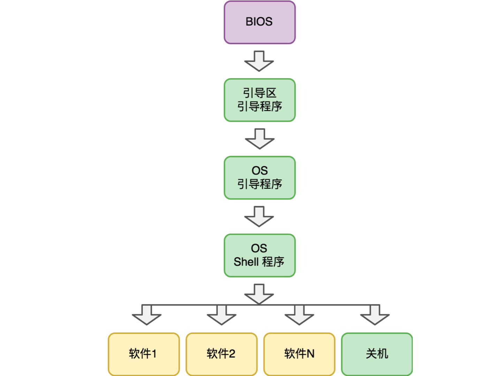
整个 “计算” 过程的每个子过程都有其明确的考量。
首先，BIOS 程序没有固化在 CPU 中，而是独立放到主板的 ROM 上，是因为不同历史时期的计算机输入输出设备很不一样，有键盘+鼠标+显示器的，有触摸屏的，也有纯语音交互的，外置存储则有软盘，硬盘，闪存，这些变化我们通过调整 BIOS 程序就可以应对，而不需要修改 CPU。
引导区引导程序，则是程序从内置存储（ROM）转到外置存储的边界。引导区引导程序很短，BIOS 只需要把它加载到内存执行就可以，但是这样系统的控制权就很巧妙地转到外置存储了。
引导区引导程序不固化在 BIOS 中，而是写在外置存储的引导区，是为了避免 BIOS 程序需要经常性修改。毕竟 BIOS 还是硬件，而引导区引导程序已经属于软件范畴了，修改起来会方便很多。
OS 引导程序，则是外置存储接手计算机控制权的真正开始。这里 OS 是操作系统（Operating System）的缩写。操作系统从这里开始干活了。这个过程发生了很多很多事情，这里我们先略过。但是最终所有的初始化工作完成后，操作系统会把执行权交给 OS Shell 程序。
OS Shell 程序负责操作系统与用户的交互。最早的时候，计算机的交互界面是字符界面，OS Shell 程序是一个命令行程序。DOS 中叫 command.com，而在 Linux 下则叫 sh 或者 bash 之类。这里的 sh 就是 shell 的缩写。
这个时期启动一个软件的方式就是在 Shell 程序中输入一个命令行，Shell 负责解释命令行理解用户的意图，然后启动相应的软件。到了图形界面时期，在 Shell 中启动软件就变成点点鼠标，或者动动手指（触摸屏）就行了，交互范式简化了很多。
在了解了计算机从开机到关机的整个过程后，你可能很快会发现，这里面有一个很关键的细节没有交代：计算机是如何运行外置存储上的软件的？
这和内存管理有关。
结合内存的作用，我们谈内存管理，只需要谈清楚两个问题：
- 如何分配内存（给运行中的软件，避免它们发生资源争抢）；
- 如何运行外置存储（比如硬盘）上的软件？
在回答这两个问题之前，我们先了解一个背景知识：CPU 的实模式和保护模式。这两个模式 CPU 对内存的操作方式完全不同。在实模式下，CPU 直接通过物理地址访问内存。在保护模式下，CPU 通过一个地址映射表把虚拟的内存地址转为物理的内存地址，然后再去读取数据。
相应的，工作在实模式下的操作系统，我们叫实模式操作系统；工作在保护模式下的操作系统，我们叫保护模式操作系统。
实模式下的内存管理
先看实模式操作系统。
在实模式操作系统下，所有软件包括操作系统本身，都在同一个物理地址空间下。在 CPU 看来，它们是同一个程序。操作系统如何分配内存？至少有两种可行的方法。
其一，把操作系统内存管理相关的函数地址，放到一个大家公认的地方（比如 0x10000 处），每个软件要想申请内存就到这个地方取得内存管理函数并调用它。
其二，把内存管理功能设计为一个中断请求。所谓中断，是 CPU 响应硬件设备事件的一个机制。当某个输入输出设备发生了一件需要 CPU 来处理的事情，它就会触发一个中断。
内存的全局有一个中断向量表，本质上就是在一个大家公认的地方放了一堆函数地址。比如键盘按了一个键，它会触发 9 号中断。在 CPU 收到中断请求时，它会先停下手头的活来响应中断请求（到中断向量表找到第 9 项对应的函数地址并去执行它），完成后再回去干原来的活。
中断机制设计之初本来为响应硬件事件之用，但是 CPU 也提供了指令允许软件触发一个中断，我们把它叫软中断。比如我们约定 77 号中断为内存管理中断，操作系统在初始化时把自己的内存管理函数写到中断向量表的第 77 项。
所以，上面两种方法实质上是同一个方法，只是机制细节有所不同而已。中断机制远不止是函数向量表那么简单。比如中断会有优先级，高优先级中断可以打断低优先级中断，反之则不能。
那么，在实模式下，操作系统如何运行外置存储（比如硬盘）上的软件？
很简单，就是把软件完整从外置存储读入到内存然后执行它。不过，在执行前它干了一件事情，把浮动地址固定下来。为什么会有浮动地址？因为软件还没有加载到内存的时候并不知道自己会在哪里，所以有很多涉及数据的地址、函数的地址都没法固定下来，要在操作系统把它加载到内存时来确定。
整体来说，实模式内存管理的机制是非常容易理解的。因为它毕竟实质上是一个程序被拆分为很多个软件（程序代码片段），实现了程序代码片段的动态加载而已。
保护模式下的内存管理
但实模式有两个问题。
其一是安全性。操作系统以及所有软件都运行在一起，相互之间可以随意修改对方的数据甚至程序指令，这样搞破坏就非常容易。
其二是支持的软件复杂性低，同时可运行的软件数量少。
一方面，软件越复杂，它的程序代码量就越多，需要的存储空间越大，甚至可能出现单个软件的大小超过计算机的可用内存，这时在实模式下就没法执行它。
另一方面，哪怕单个软件可运行，但是一旦我们同时运行的软件多几个，操作系统对内存的需求量就会急剧增加。相比这么多软件加起来的内存需求量，内存的存储空间往往仍然是不足的。
但是为什么平常我们可以毫无顾忌地不断打开新的软件，从来不曾担心过内存会不足呢？
这就是保护模式的作用了。保护模式下，内存访问不再是直接通过物理内存，而是基于虚拟内存。虚拟内存模式下，整个内存空间被分成很多个连续的内存页。每个内存页大小是固定的，比如 64K。
这样，每次 CPU 访问某个虚拟内存地址中的数据，它都会先计算出这是要访问哪个内存页，然后 CPU 再通过一个地址映射表，把虚拟的内存地址转为物理的内存地址，然后到这个物理内存地址去读取数据。地址映射表是一个数组，下标是内存页页号，值是该内存页对应的物理内存首地址。
当然，也有可能某一个内存页对应的物理内存地址还不存在，这种情况叫缺页，没法读取数据，这时 CPU 就会发起一个缺页的中断请求。
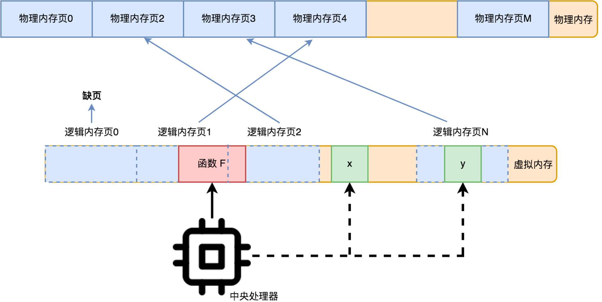
这个缺页的中断请求会被操作系统接管。发生缺页时，操作系统会为这个内存页分配物理的内存，并恢复这个内存页的数据。如果没有空闲的物理内存可以分配，它就会选择一个最久没有被访问的内存页进行淘汰。
当然，淘汰前会把这个内存页的数据保存起来，因为下次 CPU 访问这个被淘汰的内存页时一样会发生缺页中断请求，那时操作系统还要去恢复数据。
通过这个虚拟内存的机制，操作系统并不需要一上来就把整个软件装进内存中，而是通过缺页中断按需加载对应的程序代码片段。多个软件同时运行的问题也解决了，内存不够用的时候，就把最久没有用过的内存页淘汰掉，腾出物理内存出来。
运行软件的问题解决了。那么，操作系统如何分配内存给运行中的软件？
其实，内存分配的问题也解决了，并不需要任何额外的机制。反正内存地址空间是虚拟的，操作系统可以一上来就给要运行的软件分配超级大的内存，你想怎么用随你。软件如果不用某个内存页，什么都不发生。软件一旦用了某个内存页，通过缺页中断，操作系统就分配真正的物理内存给它。
通过引入虚拟内存及其缺页机制，CPU 很好地解决了操作系统和软件的配合关系。
每个运行中的软件，我们把它叫进程，都有自己的地址映射表。也就是说，虚拟地址并不是全局的，而是每个进程有一个自己独立的虚拟地址空间。
在保护模式下，计算机的基础架构体系和操作系统共同在努力做的一件事情，就是让每个软件“感觉”自己在独占整个计算机的资源。独立的虚拟地址空间很好地伪装了这一点：看起来我独自在享用所有内存资源。在实模式下的浮动地址的问题也解决了，软件可以假设自己代码加载的绝对地址是什么，不需要在加载的时候重新调整 CPU 指令操作的地址。
这和实模式很不一样。在实模式下，所有进程都在同在物理内存的地址空间里，它们相互可以访问对方的数据，修改甚至破坏对方的数据，进而导致其他进程（包括操作系统本身的进程）崩溃。内存是进程运行的基础资源，保持进程基础资源的独立性，是软件治理的最基础的要求。这也是保护模式之所以叫“保护”模式的原因。
架构思维上我们学到什么？
虚拟内存它本质上要解决这样两个很核心的需求。
其一，软件越来越大，我们需要考虑在外置存储上执行指令，而不是完整加载到内存中。但是外置存储一方面它的数据 CPU 并不知道怎么读；另一方面就算知道怎么读，也不知道它的数据格式是什么样的，这依赖文件系统的设计。让 CPU 理解外置存储的实现细节？这并不是一个好的设计。
其二，要同时运行的软件越来越多，计算机内存的供给与软件运行的内存需求相比，捉襟见肘。怎么才能把有限的内存的使用效率最大化？一个很容易想到的思路是把不经常使用的内存数据交换到外置存储。但是问题仍然是，CPU 并不了解外置存储的实现细节，怎么才能把内存按需交换出去？
通过把虚拟内存地址分页，引入缺页中断，我们非常巧妙地解决了这个问题。缺页中断很像是 CPU 留给操作系统的回调函数，通过它对变化点实现了很好的开放性设计。
结语
总结一下。我们今天先概要地阐述了计算机运行的全过程，并对每一步的核心意义做了简单的介绍。然后我们把话题转到我们这一节的重心：内存管理。
谈内存管理，需要谈清楚两个核心问题：
- 如何分配内存（给运行中的软件，避免它们发生资源争抢）；
- 如何运行外置存储（比如硬盘）上的软件？
我们分别就在实模式下和保护模式下的内存管理进行了讨论。
如果你对今天的内容有什么思考与解读，欢迎给我留言，我们一起讨论。如果你觉得有所收获，也欢迎把文章分享给你的朋友。感谢你的收听，我们下期再见。
08 操作系统内核与编程接口
你好，我是七牛云许式伟。
今天我们在开发软件的时候，已经处于一些基础的架构设计之中，像冯·诺依曼计算机体系，像操作系统和编程语言，这些都是我们开发一个应用程序所依赖的基础架构。
在上一讲“[07 | 软件运行机制及内存管理]” 中，我们着重介绍了软件是如何被运行起来的。** 今天，我们着重聊一聊软件如何利用它所依赖的基础架构。**
首先是冯·诺依曼计算机体系，它由 “中央处理器+存储+一系列的输入输出设备” 构成。这一层，提供了编程接口的是中央处理器（CPU），编程接口是 CPU 指令，但 CPU 指令非常难用。
为此，人们发明了编程语言来降低 CPU 指令的使用门槛。编程语言面向人类，CPU 指令面向机器，编译器负责将人类容易理解和掌握的编程语言的程序，翻译成机器能够理解的 CPU 指令序列。
其次是编程语言。虽然编程语言出现的起因是降低 CPU 指令的使用门槛，第一门编程语言汇编语言的能力也很接近 CPU 指令，但是语言的自然演化会越来越脱离 CPU 所限制的条条框框，大部分语言都会演化出很多基础的算法库。
比如，字符串算法库有：字符串连接（concat）、字符串子串（substring），字符串比较（compare）、字符串长度（length）等等。
系统调用
最后就是操作系统了。
操作系统和前两者非常不同。软件都是某种编程语言写成的，而 CPU 和编程语言的能力，统一以语言的语法或者库体现。
操作系统则属于基础软件，它和我们编写的软件并不在同一个进程（进程是软件的一个运行后产生的实例，同一个软件可以运行多次得到多个进程）中。
如果是实模式下的操作系统，大家都在同一个地址空间下，那么只需要知道操作系统的接口函数地址，理论上就可以直接访问。但是今天主流的操作系统都是保护模式的，操作系统和软件不在同一个进程，软件怎么才能使用操作系统的能力呢？
你可能想说，那就用进程与进程之间的通信机制？
的确，操作系统提供了很多进程与进程之间通讯的机制，后面我们也会涉及。但是今天我们讲的操作系统的编程接口是更为基础的机制，它是所有软件进程使用操作系统能力的基础，包括进程与进程之间通讯的机制，也是建立在这个基础之上。
它应该是一种成本非常非常低的方案，性能上要接近函数调用，否则我们为保护模式付出的成本就太高了。
有这样的机制么？有，就是上一讲我们已经提到过的“中断”。
中断的设计初衷是 CPU 响应硬件设备事件的一个机制。当某个输入输出设备发生了一件需要 CPU 来处理的事情，它就会触发一个中断；但是 CPU 也提供了指令允许软件触发一个中断，我们把它叫软中断。
大部分情况下，操作系统的能力通过软中断向我们写的软件开放，为此还专门引入了一个术语叫 “系统调用（syscall）”。
系统调用是怎么工作的？
我们需要先理解下 CPU 的代码执行权限等级。
在保护模式下，CPU 引入了 “保护环（Protection Rings）” 的概念。说白了，代码有执行权限等级的，如果权限不够，有一些 CPU 指令就不能执行。
这一点比较容易理解：上一讲我们介绍过，从内存管理的角度，虚拟内存机制让软件运行在一个沙盒中，这个沙盒让软件感觉自己在独享系统的内存。但如果不对软件的执行权限进行约束，它就可以打破沙盒，了解到真实的世界。
我们通常说的操作系统是很泛的概念。完整的操作系统非常庞大。根据与应用的关系，我们可以把操作系统分为内核与外围。
所谓操作系统内核，其实就是指那些会向我们写的应用程序提供系统服务的子系统的集合，它们管理着计算机的所有硬件资源，也管理着所有运行中的应用软件（进程）。
操作系统内核的执行权限等级，和我们常规的软件进程不同。像 Intel CPU 通常把代码执行权限分为 Ring 0-3 四个等级。
操作系统内核通常运行在 Ring 0，而常规的软件进程运行在 Ring 3（当然近年来虚拟化机制流行，为了更好地提升虚拟化的效率，Intel CPU 又引入了 Ring -1 级别的指令，这些指令只允许虚拟机所在的宿主操作系统才能调用）。
系统调用所基于的软中断，它很像一次间接的“函数调用”，但是又颇有不同。在实模式下，这种区别并不强烈。但是在保护模式下，这种差异会十分明显。
原因在于，我们的应用程序运行在 Ring 3（我们通常叫用户态），而操作系统内核运行在 Ring 0（我们通常叫内核态）。所以一次中断调用，不只是“函数调用”，更重要的是改变了执行权限，从用户态跃迁到了内核态。
但是这似乎不够。我们之前说了，操作系统与我们编写的软件并不同属一个进程，两边的内存地址空间都是独立的，我们系统调用请求是过去了，但是我们传给操作系统的内存地址，对它真的有意义吗？
答案在于，从虚拟内存机制的视角，操作系统内核和所有进程都在同一个地址空间，也就是，操作系统内核，它是所有进程共享的内存。示意如下：
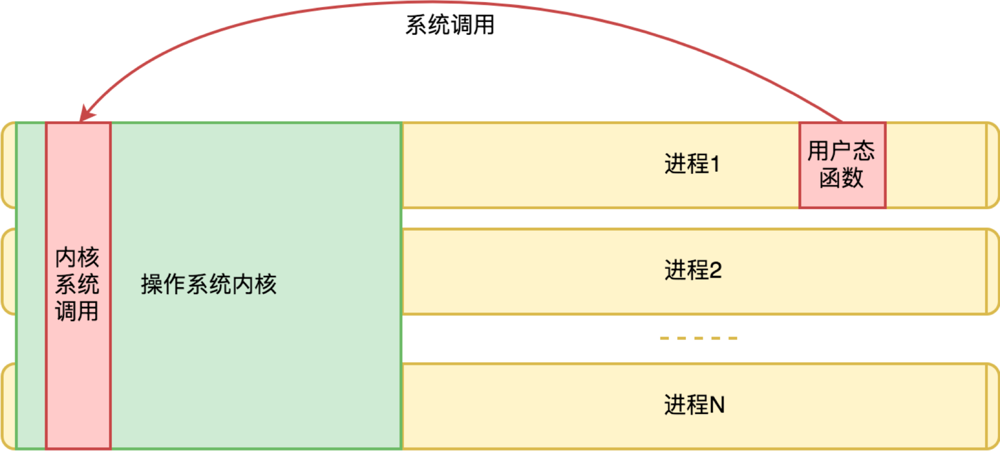
这非常有趣。操作系统内核的代码和数据，不只为所有进程所共享，而且在所有进程中拥有相同的地址。这样无论哪个进程请求过来，对内核来说看起来都是一次本进程内的请求。
从单个进程的视角，中断向量表的地址，以及操作系统内核的地址空间是一个契约。有了中断向量表的地址约定，用户态函数就可以发起一次系统调用（软中断）。
当然你可能要问：既然操作系统内核和我同属一个地址空间，我是否可以跳过中断，直接访问调用内核函数？
这不单单是执行权限的问题。你可能会说，也许某个内核函数里面没有调用任何特权指令，我是否可以调用？
当然不能。这涉及虚拟内存中的内存页保护机制。内存页可以设置 “可读、可写、可执行” 三个标记位。操作系统内核虽然和用户进程同属一个地址空间，但是被设置为“不可读、不可写、不可执行”。虽然这段地址空间是有内容的，但是对于用户来说是个黑洞。
编程接口
理解了操作系统内核，以及它的调用方法 “系统调用”，我们来聊一聊操作系统的编程接口。
自然，最原始的调用方式，是用软中断指令。在汇编语言里面通常是：
int <中断号> ; // 对每个操作系统来说中断号是固定的，比如 Linux 是 0x80
这里的 int 不是整数（integer）的缩写，而是中断（interrupt）的缩写。
当然用汇编语言来写软件并不是一个好主意。大部分高级语言都实现了操作系统编程接口的封装。
前面我们说，操作系统（内核）有六大子系统：存储管理、输入设备管理、输出设备管理、进程管理、网络管理、安全管理。除了安全管理是一个“润物细无声”的能力外，其他子系统都会有所包装。
我们以 C 语言和 Go 语言为例给一个简表，方便大家索引：
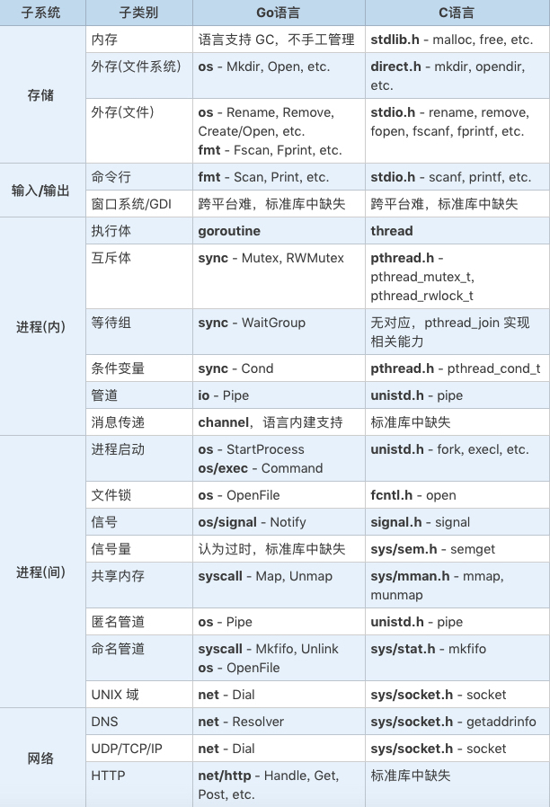
这些标准库的能力，大部分与操作系统能力相关，但或多或少进行了适度的包装。
例如，HTTP 是应用层协议，和操作系统内核关联性并不大，基于 TCP 的编程接口可以自己实现，但由于 HTTP 协议细节非常多，这个网络协议又是互联网世界最为广泛应用的应用层协议，故此 Go 语言提供了对应的标准库。
进程内通讯最为复杂。虽然操作系统往往引入了 thread 这样的概念，但 Go 语言自己搞了一套goroutine 这样的东西，原因是什么，我们在后面讨论 “进程管理” 相关的内容时，再做详细讨论。
动态库
从操作系统的角度来说，它仅仅提供最原始的系统调用是不够的，有很多业务逻辑的封装，在用户态来做更合适。但是，它也无法去穷举所有的编程语言，然后一一为它们开发各种语言的基础库。那怎么办？
聪明的操作系统设计者们想了一个好办法：动态库。几乎所有主流操作系统都有自己的动态库设计，包括：
- Windows 的 dll（Dynamic Link Library）；
- Linux/Android 的 so（shared object）；
- Mac/iOS 的 dylib（Mach-O Dynamic Library）。
动态库本质上是实现了一个语言无关的代码复用机制。它是二进制级别的复用，而不是代码级别的。这很有用，大大降低了编程语言标准库的工作量。
动态库的原理其实很简单，核心考虑两个东西。
- 浮动地址。动态库本质上是在一个进程地址空间中动态加载程序片段，这个程序片段的地址显然在编译阶段是没法确定的，需要在加载动态库的过程把浮动地址固定下来。这块的技术非常成熟，我们在实模式下加载进程就已经在使用这样的技术了。
- 导出函数表。动态库需要记录有哪些函数被导出（export），这样用户就可以通过函数的名字来取得对应的函数地址。
有了动态库，编程语言的设计者实现其标准库来说就多了一个选择：直接调用动态库的函数并进行适度的语义包装。大部分语言会选择这条路，而不是直接用系统调用。
操作系统与编程语言
我们这个专栏从计算机硬件结构讲起，然后再到编程语言，到现在开始介绍操作系统，有些同学可能会觉得话题有那么一些跳跃。虽然每一节的开头，我其实对话题的脉络有所交代，但是，今天我还是有必要去做一个梳理。
编程语言和操作系统是两个非常独立的演化方向，却又彼此交融，它们有点像是某种“孪生关系”。虽然操作系统的诞生离不开编程语言，但是操作系统和 CPU 一样，是编程语言背后所依赖的基础设施。
和这个话题相关的，有这么一些有趣的问题：
- 先有编程语言，还是先有操作系统；
- 编程语言怎么做到自举的（比如用C语言来实现C语言编译器）；
- 操作系统开发的环境是什么样的，能够做到操作系统自身迭代本操作系统（自举）么？
对于第一个问题：先有编程语言，还是先有操作系统？这个问题的答案比较简单，先有编程语言。之所以有这个疑问，是因为两点：
其一，大部分人习惯认为运行软件是操作系统的责任。少了责任方，软件是怎么跑起来的？但实际上软件跑起来是很容易的，看 BIOS 程序把控制权交给哪个软件。
其二，大部分常见的应用程序都直接或间接依赖操作系统的系统调用。这样来看，编程语言编译出来的程序是无法脱离操作系统而存在的。但是实际上常见的系统级语言（比如 C 语言）都是可以编写出不依赖任何内核的程序的。
对于第二个问题：编程语言怎么做到自举的？
从鸡生蛋的角度，编译器的进化史应该是这样的：先用机器码直接写第一个汇编语言的编译器，然后汇编语言编译器编出第一个 C 语言编译器。有了 C 语言编译器后，可以反过来用 C 语言重写汇编语言编译器和 C 语言编译器，做更多的功能增强。
这个过程理论上每出现一种新 CPU 指令集、新操作系统，就需要重新来一遍。但是人是聪明的。所以交叉编译这样的东西产生了。所谓交叉编译就是在一种 “CPU +操作系统” 架构下，生成另一种 “CPU +操作系统” 架构下的软件。这就避免了需要把整个编译器进化史重新演绎一遍。
对于第三个问题：操作系统能够做到自身迭代本操作系统（自举）么？
当然可以。通常一门新的操作系统开发之初，会用上面提到的交叉编译技术先干出来，然后等到新操作系统稳定到一定程度后再实现自举，也就是用本操作系统自己来做操作系统的后续迭代开发。
结语
这一节我们介绍了我们的基础架构：中央处理器（CPU）、编程语言、操作系统这三者对应用软件开放的编程接口。总结来看就是下面这样一幅图：
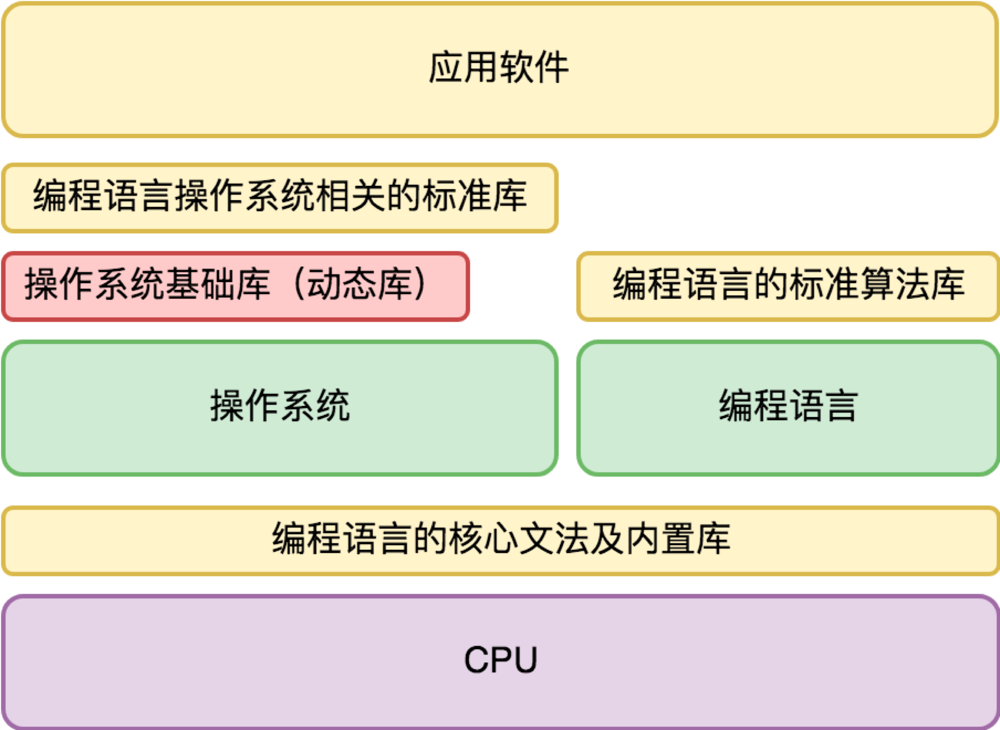
其中，我们着重介绍的是操作系统的系统调用背后的实现机理。通过系统调用这个机制，我们很好地实现了操作系统和应用软件的隔离性和安全性，同时仍然保证了极好的执行性能。
如果你对今天的内容有什么思考与解读，欢迎给我留言，我们一起讨论。如果你觉得有所收获，也欢迎把文章分享给你的朋友。感谢你的收听，我们下期再见。
09 外存管理与文件系统
你好，我是七牛云许式伟。
在 “[07 | 软件运行机制及内存管理]”中，我们已经聊了内存管理，这一讲我们聊聊外置存储设备的管理。
外存的分类
计算机有非常多样化的外置存储设备，比如：磁带、光盘、硬盘、U盘、SSD 等等。外置存储设备的种类是不可穷尽的。随着科技的发展，新的存储设备会不断涌现，有着更低的单位能耗（存储量/每日能源消耗成本），更低的单位存储成本（存储量/可存储的时间/设备价格），或者更高的访问性能。
但不管这些存储设备内部如何存储数据的原理怎么变，改变的主要是质量，而不是它的功能。对操作系统来说，管理它们的方式是非常一致的。这些外置存储设备依据其功能特性不同，简单可以分为如下三类。
- 顺序读写型。如：磁带。
- 随机只读型。更准确说是单次完整写入多次读取型，也就是每次写数据都是整个存储介质一次性完整写入数据。如：光盘（含可擦写光盘）。
- 随机读写型。如：软盘、硬盘、U盘、SSD 等等。
顺序读写型的外置存储（如磁带）我们日常并不常见，它的主要应用场景是归档，也就是数据备份。今天我们略过不提。
随机只读型的外置存储（如光盘）我们日常有较多应用，常见的应用场景是资料分发和归档。资料发布的内容很广泛，比如：软件、娱乐媒体包括电影、MTV、音乐等等。
随机读写型的外置存储最为常见，我们今天在所有“能够称得上叫电脑”的设备上，无论是PC、笔记本、手机，还是手表、汽车，随处可见它们的身影。
外存的数据格式
外置存储和内存最大的区别是什么？
毫无疑问，外置存储是持久存储，它的目的是用来存储资料的。而内存是临时存储，虽然是存储，但是它实质上是为 CPU 的计算服务的。
那么，怎么让很多的软件进程同时使用这些外置存储设备，而不会乱呢？直接基于物理的存储地址进行读写肯定是行不通的，过上几个月你自己可能都不记得什么数据写到哪里了。
所以和内存管理不同，外部存储的管理，我们希望这些写到存储中的数据是“自描述”的某种数据格式，我们可以随时查看之前写了哪些内容，都什么时候写的。
这就是文件系统的来源。
文件系统把存储设备中的数据组织成为了一棵树。节点可以是目录（也叫“文件夹”），也可以是文件。
树的根节点为目录，我们叫根目录。如果是目录，那么它还可以有子节点，子节点同样可以是子目录或文件。文件则是叶节点，保存我们希望存储的资料。
每个节点，无论是目录还是文件，都有自己的名字、创建时间、最后编辑时间、最后访问时间等信息。有些文件系统还会提供最近一段时间的操作日志。这些信息有助于提醒我们有什么内容，以前都做过什么。
尽管几乎所有文件系统的接口是非常一致的，但文件系统的实现却有很多。对于随机只读型的外置存储（如光盘），常见的文件系统有如下这些。
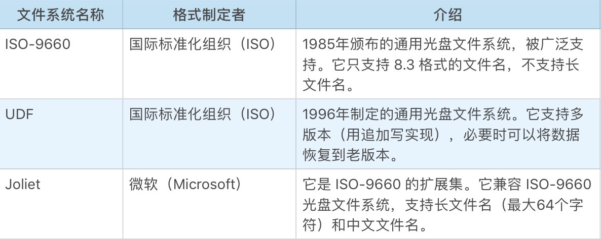
由于这类存储设备的写特征是批量写，一次把所有的数据写完，所以它的数据格式通常偏向于读优化（存储系统一般都有读写操作，所谓读优化是指在数据结构和算法设计时尽可能考虑让读操作更高效）。整个文件系统的元数据和文件数据都会非常紧凑，比如文件数据不必支持分块等等。
对于随机读写型的存储（如硬盘），常见的文件系统有如下这些。
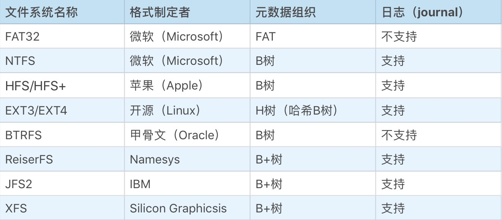
从文件系统格式的设计角度来说，它和架构关联性不大，更多的是数据结构与算法的问题；而且，不是基于内存的数据结构，而是基于外存的数据结构，这两者非常不同。
尽管文件系统的种类非常多，但是它们的设计思路其实基本相似。大部分现代文件系统都基于日志（journal）来改善文件系统的防灾难能力（比如突然断电，或不正常的 unmount 行为），基于 B 树或 B+ 树组织元数据。
古老的 DOS 引入的 FAT 文件系统（典型代表为 FAT32）是个例外，它直接把目录当作一个特殊的文件，里面依次列出了这个目录里的所有子节点的元信息。
这个结构简单是简单了，但是缺点非常明显，如果目录树深、目录里的子节点数量多，都会大幅降低文件系统的性能。
对于随机读写型的存储设备，操作系统往往还支持对其进行分区，尤其是在这个存储设备的容量非常大的情况下。分区是一个非常简单而容易理解的行为，本质上只是把一个存储设备模拟成多个存储设备来使用而已。
一般来说，拿到一块存储设备，我们往往第一步是对其进行分区（当然也可以省略这一步，把整个设备看做一个分区）。
第二步是对每个分区进行格式化。 所谓格式化就是给这个分区生成文件系统的初始状态。格式化最重要的是标记分区的文件系统格式（用来告诉别人这个分区是数据是怎么组织的），并且生成文件系统的根目录。
第三步是把该分区挂载（mount）到操作系统管理的文件系统名字空间中。 完成挂载后，该分区的文件系统管理程序就工作起来了，我们可以对这个文件系统进行目录和文件的读取、创建、删除、修改等操作。
外存的使用接口
怎么使用这些外置存储设备？
最简单的方式是用操作系统提供的命令行工具。例如：
- 目录相关：ls, mkdir, mv, cp, rmdir 等。
- 文件相关：cat, vi, mv, cp, rm 等。
当然，最原始的方式还是我们上一讲介绍的 “系统调用”。但大部分编程语言对此都有相应的封装，例如 Go 语言中的相关功能如下所示。
- 目录相关：os.Mkdir, os.Rename, os.Remove 等。
- 文件相关：os.Open/Create/OpenFile, os.Rename, os.Remove 等。
有意思的是，在早期，操作系统试图将所有的输入输出设备的接口都统一以 “文件” 来抽象它。
最典型的代表就是标准输入（stdin）和标准输出（stdout）这两个虚拟的文件，分别代表了键盘和显示器。在 UNIX 系里面有个 “一切皆文件” 的口号，便由此而来。
但事实证明 UNIX 错了。输入输出设备太多样化了，所谓的 “一切皆文件” 不过是象牙塔式的理想。就拿键盘和显示器来说，图形界面时代到来，所谓标准输入和标准输出就被推翻了，编程接口产生颠覆性的变化。
有了文件系统的使用接口，进程就可以互不影响地去使用这些外置存储设备。除非这些进程要操作的文件或目录的路径产生冲突（所谓路径，是指从根目录到该节点的访问序列。例如路径 /a/b/c 是从根目录访问子目录a，再访问子子目录b，最后访问节点c），一般情况下它们并不需要感知到其他进程的存在。
路径冲突是可以避免的，只要我们对路径取名进行一些基础的名字空间约定，但有时候也会故意利用这种路径的冲突，来实现进程间的通讯。
操作系统提供了一些冲突检查的机制。例如 “检查文件是否存在，不存在就创建它”，这个语义在保证原子性的前提下，就可以用于做进程间的互斥。例如，我们希望一个软件不要运行多个进程实例，就可以基于这个机制来实现。
虚拟内存的支持
前面我们在 “[07 | 软件运行机制及内存管理]” 一讲中提到，在物理内存不足的时候，操作系统会利用外存把一些很久没有使用的内存页的数据，保存到外存以进行淘汰。
在 UNIX 系的操作系统中，操作系统为此分配了一个磁盘分区叫 swap 分区，专门用于内存页的保存和恢复。在 Windows 操作系统中则通过一个具有隐藏属性的 .swp 文件来实现。
在缺页发生比较频繁时，内存页的数据经常性发生保存和恢复，这会发生大量的磁盘 IO 操作，非常占用 CPU 时间，这时候我们通常能够非常明显感觉到计算机变得很慢。
在计算机变慢，并且计算机的硬盘灯不停闪烁的时候，我们基本可以确定是物理内存严重不足，不能满足运行中的软件的内存需要。
结语
回顾一下我们今天的内容。整体来说，外存管理从架构角度来说比较简单，复杂性主要集中在外存数据格式，也就是文件系统的设计上。
文件系统的实现非常多。如果你希望进一步研究某个文件系统的具体实现细节，我这里推荐一个由七牛云开源的 BPL 语言（Binary Processing Language，二进制处理语言）。地址如下：
顾名思义，BPL 语言主要用于分析二进制数据格式。应用场景包括：文件格式分析（含磁盘分区格式，因为一个磁盘分区可以把它理解为一个大文件）、网络协议分析。
我们在后面的介绍文本处理相关的章节，还会专门拿出 BPL 语言进行讨论。
如果你对今天的内容有什么思考与解读，欢迎给我留言，我们一起讨论。如果你觉得有所收获，也欢迎把文章分享给你的朋友。感谢你的收听，我们下期再见。
10 输入和输出设备：交互的演进
你好，我是七牛云许式伟。
前面我们已经介绍了操作系统的存储管理：内存和外存。今天，让我们来聊一聊操作系统是如何管理输入和输出设备的。
输入和输出设备有非常非常多。例如输入设备除了你常见的键盘、鼠标、触摸屏外，还有一些采集信息的传感器，如GPS位置、脉搏、心电图、温度、湿度等。我们会把关注点收敛在人机交互相关的设备管理上。
交互的演进
在计算机外部设备的演进上，人机交互设备的演进毫无疑问是最为剧烈的部分。
计算机刚出现的时候，人们使用“打孔卡+打印机”作为人机交互方式。这个时期还没有操作系统，表达意图非常痛苦，只能在打孔卡上打孔来发送指令。
但很快，人们找到了 “键盘+显示器”， 这对最为经典的人机交互设备。而随着计算机使用人群越来越多，以及使用场景的变化，人机交互的方式也相应地发生了一次又一次的改变。
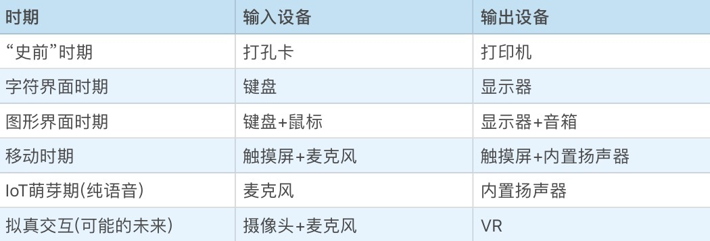
总结这些改变，我们会发现，人机交互在往越来越自然的方向发展。所谓自然，就是越来越接近于两个人直接的面对面沟通。
那么，这些人机交互的改变，对于操作系统来说又意味着什么呢？
输入设备
我们先看输入设备：键盘、鼠标、麦克风、摄像头。
键盘
键盘输入的管理机制和窗口系统的设计密切相关。为了让用户清楚键盘输入的目的地，窗口系统往往会有一个焦点窗口。
在窗口系统里面，窗口间还有父子关系，焦点窗口还会有父窗口，还有父窗口的父窗口，这些窗口属于活动窗口。
大部分情况下，键盘输入的事件会先发给焦点窗口，焦点窗口不处理则发给其父窗口，按此传递，直到有人处理了该按键事件，或者直到顶层窗口。
键盘从功能上来说，有两个不同的能力：其一是输入文本，其二是触发命令。 从输入文本的角度来说，要有一个输入光标（在Windows里面叫Caret）来指示输入的目的窗口。目的窗口也必然是焦点窗口，否则就会显得很不自然。
这个交互的呈现方式非常稳定，从 DOS到Windows/Mac，到iOS/Android 都是如此。但是从触发命令的角度来说，命令的响应并不一定是在焦点窗口，甚至不一定在活跃窗口。
比如Windows下就有热键（HotKey）的概念，能够让非活跃窗口（Inactive Window）也获得响应键盘命令的机会。一个常见的例子是截屏软件，往往需要一个热键来触发截屏。
到了移动时代，键盘不再是交互主体，但是，键盘作为输入文本的能力很难被替代（虽然有语音输入法），于是它便自然而然地保留下来。
不过移动设备不太会有人会基于键盘来触发命令，只有常见的热键需求比如截屏、调大或调小音量、拍照等等，被设计为系统功能（对应的，这些功能的热键也被设计为系统按键）保留下来。
鼠标
鼠标输入的管理机制和键盘一样，和窗口系统的设计密切相关。但鼠标因为有位置，确定鼠标事件的目的地相比键盘事件要简单的多，大部分情况下，鼠标事件总是交给鼠标位置所属的窗口来处理，但也会有一些例外的场景，比如拖放。
为了支持拖放，Windows操作系统引入了鼠标捕获（Mouse Capture）的概念，一旦鼠标被某个窗口捕获，哪怕鼠标已经移出该窗口，鼠标事件仍然会继续发往该窗口。
到了移动时代，鼠标已经完全消失（虽然在智能手机之前还是出现过WinCE这样的支持鼠标的移动操作系统），取而代之的是触摸屏。窗口系统也和PC时期完全不同，在屏幕可见范围内只有单个应用程序占满整个屏幕，这让交互的目的地确认不再是个问题。
麦克风
麦克风是一个非常有潜力的下一代输入设备。今天 IoT 领域如汽车、智能音箱都是很好的发展语音交互能力的场景。包括今天大行其道的手机，语音交互也是一个很好的补充。
交互方式不管怎么变化，其核心需要实现的都是这样的两大能力：输入文本和触发命令，这一点是不变的。
语音交互今天仍然还很不成熟，究其原因，语音交互在 IoT 领域还停留在触发命令为主，且哪怕是触发命令这一件事情，也还有重重关卡需要去突破。
在手机软件中，语音输入文本在部分软件中已经有较多应用，但是主要优势还在日常用语和长文本，在个性化场景如“输入人名之类”，较难达到好的结果。
从更本源的角度看，语音交互今天仍然在相对封闭的应用技术场景里面发展为主，而作为操作系统的主体交互手段，其能力必须是开放的。因为操作系统是开放的，场景是开放的。
摄像头
摄像头作为交互设备，除了引入语音，也引入了手势、表情。从表达能力来说，这是最为丰富也是最为自然的一种表达方法。但是技术所限，这种交互方式还只在萌芽阶段。微软的 Kinect 是一个非常经典的案例，它能够让玩家通过语音和手势发指令来玩游戏。
输出设备
输出设备主要负责向用户反馈信息。比如：显示器（显卡）、音箱（声卡）、打印机。输出设备的演化并不大，最主要的输出设备还是以显示器为主。
显示器
显示器虽然经历了 CRT 到液晶屏多代更新，但也只是支持的色彩更多（从黑白到彩色到真彩色），分辨率越来越高。实际上，从操作系统的软件治理角度来看，显示器并没有发生过实质性的变化。
为了让不同软件可以在同一显示器屏幕上呈现，操作系统引入了窗口系统的概念。每个软件有一个或多个窗口（Window，有时候也叫视图，即View）。在 PC 操作系统中，不同窗口还可以层叠（Cascade）或平铺（Tile）。
通过引入窗口，操作系统在逻辑上把显示器屏幕这个有限的设备资源，分配给了多个软件。和 PC 不同的是，移动设备由于屏幕过小，所以操作系统选择了让软件的顶层窗口全屏占据整个屏幕。这让显示器屏幕的管理变得更为简单。
除了窗口系统，显示设备管理的另一大挑战是绘制子系统。窗口里面的内容是什么，呈现成什么样子，完全是软件来决定的，这就意味着软件需要绘制能力。
绘制能力牵涉面非常之广，在操作系统里面，往往有一个独立的子系统（通常叫GDI）与之对应。这里我们简单罗列一下GDI子系统会涉及哪些东西。
- 2D图形相关。 包含 Path(路径)、Brush(画刷)、Pen(画笔) 等概念。
- 3D图形相关。 包含 Model(模型)、Material(材质)、Lighting(光照) 等概念。
- 文本相关。 包含 Font(字体) 等概念。而字体又分点阵字体和 TrueType 字体。TrueType 字体的优势是可以自由缩放。今天我们见到的大部分字体都是 TrueType 字体。
- 图像处理相关。 包含 Bitmap(位图) 对象及常见图像格式的编解码器(Encoder/Decoder)。
窗口系统结合输入设备对应的事件管理系统、绘制(GDI)系统，我们就可以随心所欲地实现各类用户体验非常友好的视窗软件了。
但是，为了进一步简化开发过程，操作系统往往还提供了一些通用的界面元素，通常我们称之为控件(Control)。常见的控件有如下这些：
- 静态文本 (Label)；
- 按钮 (Button)；
- 单选框 (RadioBox)；
- 复选框 (CheckBox)；
- 输入框 (Input，也叫EditBox/EditText)；
- 进度条 (ProgressBar)；
- ……
不同操作系统提供的基础控件大同小异。不过一些处理细节上的差异往往会成为跨平台开发的坑，如果你希望一份代码多平台使用，在这方面就需要谨慎处理。
音箱
相比显示器的管理，音箱的设备管理要简单得多。我们很容易做到多个软件同时操作设备，而有合理的结果。
例如，调整音量我们遵循覆盖原则即可，谁后设置音量就听谁的。而声音的播放则可进行混音处理，多个软件播放的声音同时播放出来，让人听起来像是同时有多个人在说话。
当然，特定情况下要允许某个软件禁止其他软件播放出来的声音，比如接听电话的软件，需要在电话接通的时候屏蔽掉所有其他软件播放的声音。
打印机
打印机的管理方式又很不一样，软件使用打印机的过程基本上是互斥的。一个软件在打印文档的时候，其他的软件只能等待它打印完毕后，才能进行打印。
打印机的使用是以文档为互斥的单位。为了避免软件之间出现长时间的相互等待，操作系统往往在打印机的管理程序中引入很大的打印缓冲。
软件操作打印机的时候，并不是等待打印机真把内容打印出来，而是把文档打印到打印缓冲中就完成打印。这样，在大部分情况下多个软件不需要因为使用打印机而出现相互等待。
结语
后面我们在谈“桌面开发”一章中，还会涉及人机交互的更多细节，这一章侧重点在于领域无关的通用操作系统相关的问题域，相关的内容这里仅做概要性的阐述。
但是，仅通过简单对比所有输入和输出设备的管理方式，我们就可以看出，不同输入和输出设备的管理方法差异非常大，没有太大的共性可言。
尽管对 CPU 而言，所有外部设备有着相同的抽象，但这些设备的业务逻辑却如此不同，并不能统一抽象它们。正是因为有了操作系统这样的基础软件，这些设备业务逻辑的复杂性才从我们的软件开发过程中解放出来。
人机交互演化的核心变化是输入设备的变化。我们看到，输入手段的变化是非常剧烈的，且每一次演变都是颠覆性的变化。
事实上输入意图的理解越来越难了，因为交互在朝着自然（Nature）和智能（Intelligence）的方向发展。 我们不可能让每一个软件都自己去做输入意图的理解（今天的现状是每个软件自己做），在未来，必然将由操作系统来实现智能交互的基础架构。
今天的内容就到这里。你对今天的内容有什么思考与解读，欢迎给我留言，我们一起讨论。如果你觉得有所收获，也欢迎把文章分享给你的朋友。感谢你的收听，我们下期再见。
11 多任务：进程、线程与协程
你好，我是七牛云许式伟。
到现在为止，我们已经介绍了操作系统的存储管理：内存与外存；也已经介绍了输入与输出设备的管理。
当然，考虑到输入与输出设备属于人机交互范畴，我们主要会留到下一章 “桌面软件开发” 去详细介绍，这一章，我们仅概要地回顾输入与输出设备的需求演进过程。
CPU + 存储 + 输入与输出，软件开发最基础的内容基本上就都覆盖到了。 今天开始，我们就来聊一聊多任务。
多任务与执行体
多任务的需求是随处可见的。常见的场景，比如我们想边工作边听音乐；又或者我们需要跑一个后台监控程序，以报告随时可能发生的异常。
那么，怎么才能做到多任务？
我们先从物理层面看。最早期的 CPU 基本上都是单核的，也就是同一时间只能执行一条指令。尽管如此，大家可能都听过 “摩尔定律”，简单地说就是，每隔一年半到两年，同样的钱能买到的计算力能够翻一倍。
这当然不是什么严谨的物理学定律，更多的是一定历史时期下的经验之谈。早期 CPU 工艺的发展，基本上是通过提高电子元器件的密集程度实现的；但是电子元器件大小总归有个极限，不可能无限小下去。
那么怎么办？不能更小的话，那就横向多铺几个，一颗 CPU 多加几颗核心。这样多核技术就出现了。多核的意思是说，单核速度我提不上去了，多给你几个，价格一样。
所以物理层面的多任务，有两个方法：一个是多颗 CPU，一个是单颗 CPU 多个核心。
在桌面端，大多数情况用的是后者，因为桌面端的产品（个人计算机、手机、手表等）还是很在意产品的体积如何尽可能做得更小；而服务器领域，通常同时使用两者，它更多关注的是如何尽可能提升单台计算机的计算力密度。
但如果我们实际就只有一个单核的 CPU，是否就没办法实现多任务呢？
当然可以。方法是把 CPU 的时间切成一段段时间片，每个时间片只运行某一个软件。这个时间片给软件 A，下一个时间片给软件 B。因为时间片很小，我们会感觉这些软件同时都在运行。这种分时间片实现的多任务系统，我们把它叫分时系统。
分时系统的原理说起来比较简单，把当前任务状态先保存起来，把另一个任务的状态恢复，并把执行权交给它即可。这里面涉及的问题有：
- 任务是什么，怎么抽象任务这样一个概念；
- 任务的状态都有什么？怎么保存与恢复；
- 什么时机会发生任务切换？
从今天的现实看，任务的抽象并不是唯一的。大部分操作系统提供了两套：进程和线程。有的操作系统还会提供第三套叫协程（也叫纤程）。
我个人喜欢统一用来 “执行体” 一词来统称它们。所谓执行体，是指可被 CPU 赋予执行权的对象，它至少包含下一个执行位置（获得执行权后会从这里开始执行）以及其他的运行状态。
任务的状态都有什么？
从 CPU 的角度，执行程序主要依赖的是内置存储：寄存器和内存（RAM），它们构成执行体的上下文。
先看寄存器。寄存器的数量很少且可枚举，我们直接通过寄存器名进行数据的存取。
在我们把 CPU 的执行权从软件 A 切换到软件 B 的时候，要把软件 A 所有用到的寄存器先保存起来（以便后续轮到软件 A 执行的时候恢复），并且把寄存器的值恢复到软件 B 上一次执行时的值，然后才把执行权交给软件 B。
这样，在软件 A 和 B 的视角看来，它们好像一直都是独自在使用 CPU，从未受到过其他软件的打扰。
我们再看内存（RAM）。CPU 在实模式和保护模式下的内存访问机制完全不同，我们分别进行讨论。在实模式下，多个执行体同在一个内存地址空间，相互并无干扰（非恶意情况下）。
在保护模式下，不同任务可以有不同的地址空间，它主要通过不同的地址映射表来体现。怎么切换地址映射表？也是寄存器。
所以，总结就一句话：执行体的上下文，就是一堆寄存器的值。要切换执行体，只需要保存和恢复一堆寄存器的值即可。 无论是进程、线程还是协程，都是如此。
进程与线程
那么，不同的执行体究竟有何不同？为何会出现不同种类的执行体？
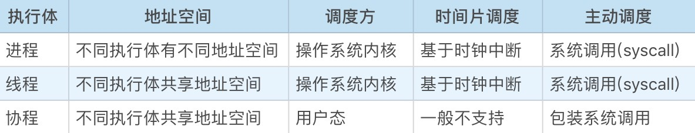
进程是操作系统从安全角度来说的隔离单位，不同进程之间基于最低授权的原则。
在创建一个进程这个事情上，UNIX 偷了一次懒，用的是 fork（分叉）语义。所谓 fork，就是先 clone 然后再分支，父子进程各干各的。
这样创建进程很讨巧，不用传递一堆的参数，使用上非常便利。但我认为从架构设计的角度，这是 UNIX 操作系统设计中最糟糕的 API，没有之一。而更不幸的是 Linux 把这一点继承下来了。
为什么进程 fork 是糟糕的？这是因为：进程是操作系统最基本的隔离单元，我们怕的就是摘不清楚，但是 fork 偏偏要藕断丝连。
这一点 Windows 要清晰很多，哪些文件句柄在子进程中还要用到，一一明确点名，而不是 fork 一下糊里糊涂就继承过去了。
事实上我个人那么多年工程经验表明，除了会接管子进程的标准输入和标准输出，我们几乎从来不会通过向子进程传递文件句柄来通讯。
所以 fork 这种传递进程上下文的方式，是彻头彻尾的一次过度设计。甚至严重一点说，是设计事故。
线程的出现，则是因为操作系统发现同一个软件内还是会有多任务的需求，这些任务处在相同的地址空间，彼此之间相互可以信任。
从线程角度去理解 UNIX 的 fork，能够稍微理解一些设计者们当年的考量。
早期操作系统中没有线程的概念，也不会有人想到要搞两套执行体。所以进程实际上承担了一部分来自线程的需求：我需要父进程的环境。
协程与goroutine
协程并不是操作系统内核提供的，它有时候也被称为用户态线程。这是因为协程是在用户态下实现的。如果你感兴趣，也可以自己实现一个。
但为什么会出现协程呢？看起来它要应对的需求与线程一样，但是功能比线程弱很多？
答案是因为实现高性能的网络服务器的需要。对于常规的桌面程序来说，进程+线程绰绰有余。 但对于一个网络服务器，我们可以用下面这个简单的模型看它：
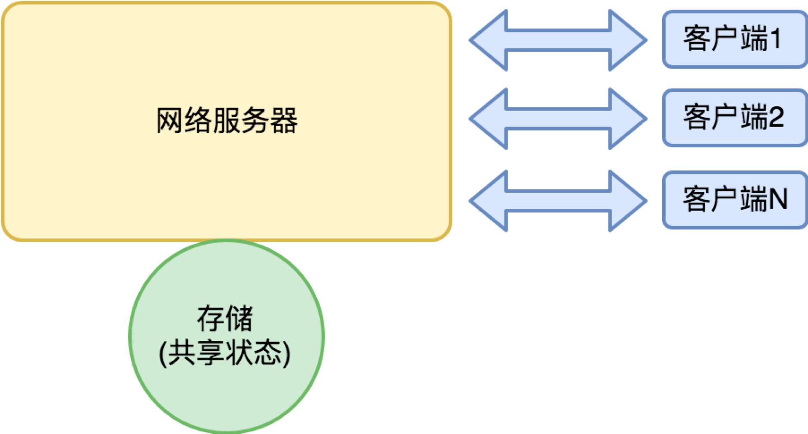
对网络服务器来说，大量的来自客户端的请求包和服务器的返回包，都是网络 IO；在响应请求的过程中，往往需要访问存储来保存和读取自身的状态，这也涉及本地或网络 IO。
如果这个网络服务器有很多客户，那么整个服务器就充斥着大量并行的 IO 请求。
操作系统提供的标准网络 IO 有以下这些成本：
- 系统调用机制产生的开销；
- 数据多次拷贝的开销（数据总是先写到操作系统缓存再到用户传入的内存）；
- 因为没有数据而阻塞，产生调度重新获得执行权，产生的时间成本；
- 线程的空间成本和时间成本（标准 IO 请求都是同步调用，要想 IO 请求并行只能使用更多线程）。
在一些人心目中会有一个误区：操作系统的系统调用很慢。这句话很容易被错误地理解为系统调用机制产生的开销很大。
但这是很大的误解。系统调用虽然比函数调用多做了一点点事情，比如查询了中断向量表（这类似编程语言中的虚函数），比如改变 CPU 的执行权限（从用户态跃迁到内核态再回到用户态）。
但是注意这里并没有发生过调度行为，所以归根结底还是一次函数调用的成本。怎么理解操作系统内核我们示意如下：
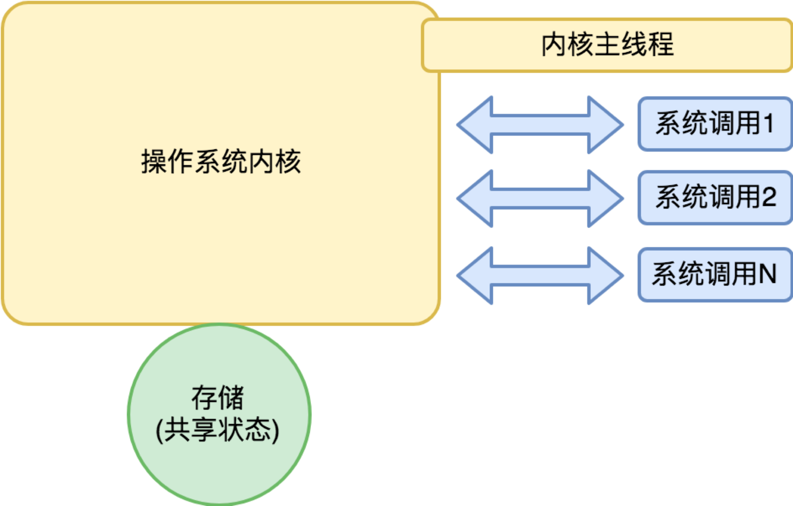
从操作系统内核的主线程来说，内核是独立进程，但是从系统调用的角度来说，操作系统内核更像是一个多线程的程序，每个系统调用是来自某个线程的函数调用。
为了改进网络服务器的吞吐能力，现在主流的做法是用 epoll（Linux）或 IOCP（Windows）机制，这两个机制颇为类似，都是在需要 IO 时登记一个 IO 请求，然后统一在某个线程查询谁的 IO 先完成了，谁先完成了就让谁处理。
从系统调用次数的角度，epoll 或 IOCP 都是产生了更多次数的系统调用。从内存拷贝来说也没有减少。所以真正最有意义的事情是：减少了线程的数量。
既然不希望用太多的线程，网络服务器就不能用标准的同步 IO（read/write）来写程序。知名的异步 IO 网络库 libevent 就是对 epoll 和 IOCP 这些机制包装了一套跨平台的异步 IO 编程模型。
Node.js 一炮而红，也是因为把 JavaScript 的低门槛和 libevent 的高性能结合起来，给了前端程序员一个“我也能搞高性能服务器”的梦想。
但是异步 IO 编程真的很反人类，它让程序逻辑因为 IO 异步回调函数而碎片化。我们开始怀念写同步 IO 的那些日子了。
让我们再回头来看：我们为什么希望减少线程数量？因为线程的成本高？我们分析一下。
首先，我们看下时间成本。它可以拆解为：
- 执行体切换本身的开销，它主要是寄存器保存和恢复的成本，可腾挪的余地非常有限；
- 执行体的调度开销，它主要是如何在大量已准备好的执行体中选出谁获得执行权；
- 执行体之间的同步与互斥成本。
我们再看线程的空间成本。它可以拆解为：
- 执行体的执行状态；
- TLS（线程局部存储）；
- 执行体的堆栈。
空间成本是第一根稻草。默认情况下 Linux 线程在数 MB 左右，其中最大的成本是堆栈（虽然，线程的堆栈大小是可以设置的，但是出于线程执行安全性的考虑，线程的堆栈不能太小）。
我们可以算一下，如果一个线程 1MB，那么有 1000 个线程就已经到 GB 级别了，消耗太快。
执行体的调度开销，以及执行体之间的同步与互斥成本，也是一个不可忽略的成本。虽然单位成本看起来还好，但是盖不住次数实在太多。
我们想象一下：系统中有大量的 IO 请求，大部分的 IO 请求并未命中而发生调度。另外，网络服务器的存储是个共享状态，也必然伴随着大量的同步与互斥操作。
综上，协程就是为了这样两个目的而来：
- 回归到同步 IO 的编程模式；
- 降低执行体的空间成本和时间成本。
但是，大部分你看到的协程（纤程）库只是一个半吊子。它们都只实现了协程的创建和执行权的切换，缺了非常多的内容。包括：
- 协程的调度；
- 协程的同步、互斥与通讯；
- 协程的系统调用包装，尤其是网络 IO 请求的包装。
这包含太多的东西，基本上你看到的服务端操作系统所需的东西都要包装一遍。而且，大部分协程库，连协程的基础功能也是半吊子的。这里面最难搞的是堆栈。
为什么协程的堆栈是个难题？因为，协程的堆栈如果太小则可能不够用；而如果太大则协程的空间成本过高，影响能够处理的网络请求的并发数。理想情况下，堆栈大小需要能够自动适应需要。
所以，一个完备的协程库你可以把它理解为用户态的操作系统，而协程就是用户态操作系统里面的 “进程”。
这世界上有完备的协程库么？有。有两个语言干了这事儿：Erlang 和 Go 语言。Erlang 语言它基于虚拟机，但是道理上是一致的。Go 语言里面的用户态 “进程” 叫 goroutine。它有这样一些重要设计：
- 堆栈开始很小（只有 4K），但可按需自动增长；
- 坚决干掉了 “线程局部存储（TLS）” 特性的支持，让执行体更加精简；
- 提供了同步、互斥和其他常规执行体间的通讯手段，包括大家非常喜欢的 channel；
- 提供了几乎所有重要的系统调用（尤其是 IO 请求）的包装。
架构师的批判性思维
多任务的需求非常复杂。
为了满足需要，人们不只发明了三套执行体：进程、线程和协程，还发明了各种五花八门的执行体间的通讯机制（可以参考 “[08 | 操作系统内核与编程接口]” 中我们给出的表格）。有一些执行体间的通讯机制在逐渐消亡，退出历史舞台。
操作系统内核之中，不乏无数精妙的设计思想。但是，前辈们也并非圣贤，也可能会出现一些决策上失误，留下了诸多后遗症。
这非常正常。操作系统内核是非常庞大而复杂的基础软件。它并不像计算机基础体系结构，简洁优雅。
对 CPU 而言，统一的、接口一致的输入输出设备，到了操作系统这里，它需要依据每一种设备的需求特性，抽象出对应的更加用户友好的使用接口。这个工作既繁重，又需要极强的预见性。
而作为后辈的我们，在体会这些精妙的设计思想的同时，也要批判性去吸收。日常我们天天依赖于这些基础架构，受到它们的影响与约束，这些实在是最佳的学习材料。
结语
今天我们重点介绍了多任务，以及多任务带来的复杂需求，由此介绍了进程、线程和协程等三套执行体的设计。后面我们还会分进程内和进程间来介绍进程的通讯机制。
执行体的设计，有非常多值得反思的地方。UNIX 的 fork API 是否是一个好的设计？线程的设计是否成功？如果线程的设计是优良的，是不是就不再有 Go 语言这种在用户态重造执行体和 IO 子系统的必要性？
如果你对今天的内容有什么思考与解读，欢迎给我留言，我们一起讨论。如果你觉得有所收获，也欢迎把文章分享给你的朋友。感谢你的收听，我们下期再见。
12 进程内协同：同步、互斥与通讯
你好，我是七牛云许式伟。
上一讲开始我们进入了多任务的世界，我们详细介绍了三类执行体：进程、线程和协程，并且介绍了每一种执行体的特点。
既然启动了多个执行体，它们就需要相互协同，今天我们先讨论进程内的执行体协同。
考虑到进程内的执行体有两类：用户态的协程（以 Go 语言的 goroutine 为代表）、操作系统的线程，我们对这两类执行体的协同机制做个概要。如下：
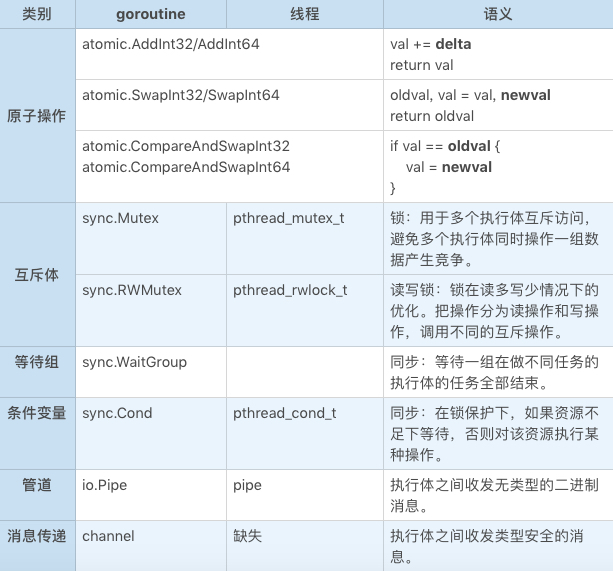
让我们逐一详细分析一下它们。
原子操作
首先让我们看一下原子操作。需要注意的是，原子操作是 CPU 提供的能力，与操作系统无关。这里列上只是为了让你能够看到进程内通讯的全貌。
顾名思义，原子操作的每一个操作都是原子的，不会中途被人打断，这个原子性是 CPU 保证的，与执行体的种类无关，无论 goroutine 还是操作系统线程都适用。
从语义上来说，原子操作可以用互斥体来实现，只不过原子操作要快得多。
例如：
var val int32
...
newval = atomic.AddInt32(&val, delta)
等价于：
var val int32
var mutex sync.Mutex
...
mutex.Lock()
val += delta
newval = val
mutex.Unlock()
执行体的互斥
互斥体也叫锁。锁用于多个执行体之间的互斥访问，避免多个执行体同时操作一组数据产生竞争。其使用界面上大概是这样的：
func (m *Mutex) Lock()
func (m *Mutex) Unlock()
锁的使用范式比较简单：在操作需要互斥的数据前，先调用 Lock，操作完成后就调用 Unlock。但总是存在一些不求甚解的人，对锁存在各种误解。
有的人会说锁很慢。甚至我曾看到有 Go 程序员用 channel 来模拟锁，理由就是锁太慢了，尽量不要用锁。产生“锁慢，channel 快”这种错觉的一个原因，可能是人们经常看到这样的忠告：
不要通过共享内存（锁）来通信，要通过通信（channel）来共享内存。
不明就里的人们看到这话后，可能就有了这样的印象：锁是坏的，锁是性能杀手，channel 是好的，是 Go 发明的先进武器，应该尽可能用 channel，而不要用锁。
快慢是相对而言的。锁的确会导致代码串行执行，所以在某段代码并发度非常高的情况下，串行执行的确会导致性能的显著降低。但平心而论，相比其他的进程内通讯的原语来说，锁并不慢。从进程内通讯来说，比锁快的东西，只有原子操作。
例如 channel，作为进程内执行体间传递数据的设施来说，它本身是共享变量，所以 channel 的每个操作必然是有锁的。事实上，channel 的每个操作都比较耗时。关于这一点，在下文解释 channel 背后的工作机理后，你就会清楚知道。
那么锁的问题在哪里？锁的最大问题在于不容易控制。锁 Lock 了但是忘记 Unlock 后是灾难性的，因为相当于服务器挂了，所有和该锁相关的代码都不能被执行。
比如：
mutex.Lock()
doSth()
mutex.Unlock()
在考虑异常的情况下，这段代码是不安全的，如果 doSth 抛出了异常，那么服务器就会出现问题。
为此 Go 语言还专门发明了一个 defer 语法来保证配对：
mutex.Lock()
defer mutex.Unlock()
doSth()
这样可以保证即使 doSth 发生异常，mutex.Unlock 仍然会被正确地执行。这类在异常情况下也能够正常工作的代码，我们称之为 “对异常安全的代码”。如果语言不支持 defer，而是支持 try .. catch，那么代码可能是这样的：
mutex.Lock()
try {
doSth()
} catch (e Exception) {
mutex.Unlock()
throw e
}
mutex.Unlock()
锁不容易控制的另一个表现是锁粒度的问题。例如上面 doSth 函数里面如果调用了网络 IO 请求，而网络 IO 请求在少数特殊情况下可能会出现慢请求，要好几秒才返回。那么这几秒对服务器来说就好像挂了，无法处理请求。
对服务器来说这是极为致命的。对后端程序员来说，有一句箴言要牢记：
不要在锁里面执行费时操作。
这里 “锁里面” 是指在mutex.Lock和mutex.Unlock之间的代码。
在锁的最佳编程实践中，如果明确一组数据的并发访问符合 “绝大部分情况下是读操作，少量情况有写操作” ，这种 “读多写少” 特征，那么应该用读写锁。
所谓读写锁，是把锁里面的操作分为读操作和写操作两种，对应调用不同的互斥操作。
如果是读操作，代码如下：
mutex.RLock()
defer mutex.RUnlock()
doReadOnlyThings
如果是锁里面是写操作，代码就和普通锁一样，如下：
mutex.Lock()
defer mutex.Unlock()
doWriteThings
为什么在 “读多写少” 的情况下，这样的使用范式能够优化性能？
因为从需求上来说，如果当前我们正在执行某个读操作，那么再来一个新的读操作，是不应该挡在外面的，大家都不修改数据，可以安全地并发执行。但如果来的是写操作，就应该挡在外面，等待读操作执行完。整体来说，读写锁的特性就是：
读操作不阻止读操作，阻止写操作；- 写操作阻止一切，不管读操作还是写操作。
执行体的同步
聊完了执行体的互斥，我们再来看下执行体之间的同步。
同步的一个最常见的场景是：把一个大任务分解为n个小任务，分配给n个执行体并行去做，等待它们一起做完。这种同步机制我们叫 “等待组”。
其使用界面上大概是这样的：
func (wg *WaitGroup) Add(n int)
func (wg *WaitGroup) Done()
func (wg *WaitGroup) Wait()
用法上大概是这样的：
var wg WaitGroup
...
wg.Add(n)
for 循环n次 {
go func() {
defer wg.Done()
doTaski // 执行第i个任务
}()
}
wg.Wait()
简而言之，在每个任务开始的时候调用 wg.Add(1)，结束的时候调用 wg.Done()，然后在主执行体调用 wg.Wait() 等待这些任务结束。
需要注意的是，wg.Add(1) 是要在任务的 goroutine 还没有开始就先调用，否则可能出现某个任务还没有开始执行就被认为结束了。
条件变量（Condition Variable）是一个更通用的同步原语，设计精巧又极为强大。强大到什么程度？像 channel 这样的通讯机制都可以用它来实现。
条件变量的使用界面上大概是这样的：
func NewCond(l Locker) *Cond
func (c *Cond) Broadcast()
func (c *Cond) Signal()
func (c *Cond) Wait()
那么，怎么用条件变量？
我们先看下初始化。条件变量初始化的时候需要传入一个互斥体，它可以是普通锁（Mutex)，也可以是读写锁（RWMutex）。如下：
var mutex sync.Mutex // 也可以是 sync.RWMutex
var cond = sync.NewCond(&mutex)
...
为什么创建条件变量需要传入锁？因为 cond.Wait() 的需要。Wait 内部实现逻辑是：
把自己加入到挂起队列
mutex.Unlock()
等待被唤醒 // 挂起的执行体会被后续的 cond.Broadcast 或 cond.Signal() 唤醒
mutex.Lock()
初始化了条件变量后，我们再来看看它的使用方式。条件变量的用法有一个标准化的模板，看起来大概是这样的：
mutex.Lock()
defer mutex.Unlock()
for conditionNotMetToDo {
cond.Wait()
}
doSomething
if conditionNeedNotify {
cond.Broadcast()
// 有时可以优化为 cond.Signal()
}
看起来有些复杂，让我们来解释一下。加锁后，先用一个 for 循环判断当前是否能够做我们想做的事情，如果做不了就调用 cond.Wait() 进行等待。
这里很重要的一个细节是注意用的是 for 循环，而不是 if 语句。这是因为 cond.Wait() 得到了执行权后不代表我们想做的事情就一定能够干了，所以要再重新判断一次条件是否满足。
确定能够做事情了，于是 doSomething。在做的过程中间，如果我们判断可能挂起队列中的部分执行体满足了重新执行的条件，就用 cond.Broadcast 或 cond.Signal 唤醒它们。
cond.Broadcast 比较粗暴，它唤醒了所有在这个条件变量挂起的执行体，而 cond.Signal 则只唤醒其中的一个。
什么情况下应该用 cond.Broadcast，什么情况下应该用 cond.Signal？最偷懒的方式当然是不管三七二十一，用 cond.Broadcast 一定没问题。但是本着经济的角度，我们还是要交代清楚 cond.Signal 的适用范围：
- 挂起在这个条件变量上的执行体，它们等待的条件是一致的；
- 本次 doSomething 操作完成后，所释放的资源只够一个执行体来做事情。
Cond 原语虽然叫条件变量，但是实际上它既没有明白说变量具体是什么样的，也没有说条件具体是什么样的。变量是指 “一组要在多个执行体之间协同的数据”。条件是指做任务前 Wait 的 “前置条件”，和做任务时需要唤醒其它人的 “唤醒条件”。
这样的介绍相当的抽象。我们拿 Go 语言的 channel 开刀，自己实现一个。代码如下：
type Channel struct {
mutex sync.Mutex
cond *sync.Cond
queue *Queue
n int
}
func NewChannel(n int) *Channel {
if n < 1 {
panic("todo: support unbuffered channel")
}
c := new(Channel)
c.cond = sync.NewCond(&c.mutex)
c.queue = NewQueue()
// 这里 NewQueue 得到一个普通的队列
// 代码从略
c.n = n
return c
}
func (c *Channel) Push(v interface{}) {
c.mutex.Lock()
defer c.mutex.Unlock()
for c.queue.Len() == c.n { // 等待队列不满
c.cond.Wait()
}
if c.queue.Len() == 0 { // 原来队列是空的，可能有人等待数据，通知它们
c.cond.Broadcast()
}
c.queue.Push(v)
}
func (c *Channel) Pop() (v interface{}) {
c.mutex.Lock()
defer c.mutex.Unlock()
for c.queue.Len() == 0 { // 等待队列不空
c.cond.Wait()
}
if c.queue.Len() == c.n { // 原来队列是满的，可能有人等着写数据，通知它们
c.cond.Broadcast()
}
return c.queue.Pop()
}
func (c *Channel) TryPop() (v interface{}, ok bool) {
c.mutex.Lock()
defer c.mutex.Unlock()
if c.queue.Len() == 0 { // 如果队列为空，直接返回
return
}
if c.queue.Len() == c.n { // 原来队列是满的，可能有人等着写数据，通知它们
c.cond.Broadcast()
}
return c.queue.Pop(), true
}
func (c *Channel) TryPush(v interface{}) (ok bool) {
c.mutex.Lock()
defer c.mutex.Unlock()
if c.queue.Len() == c.n { // 如果队列满，直接返回
return
}
if c.queue.Len() == 0 { // 原来队列是空的，可能有人等待数据，通知它们
c.cond.Broadcast()
}
c.queue.Push(v)
return true
}
对着这个 Channel 的实现，你是否对条件变量有感觉很多？顺便提醒一点，这个 Channel 的实现不支持无缓冲 channel，也就是不支持 NewChannel(0) 的情况。如果你感兴趣，可以改改这个问题。
执行体的通讯
聊完同步与互斥，我们接着聊执行体的通讯：怎么在执行体间收发消息。
管道是大家都很熟知的执行体间的通讯机制。规格如下：
func Pipe() (pr *PipeReader, pw PipeWriter)
用法上，先调用pr, pw := io.Pipe()得到管道的写入端和读出端，分别传给两个并行执行的 goroutine（其他语言也类似），然后一个 goroutine 读，一个 goroutine 写就好了。
管道用处很多。一个比较常见的用法是做读写转换，例如，假设我手头有一个算法：
func Foo(w io.Writer) error
这个算法生成的数据流，需要作为另一个函数的输入，但是这个函数的输入是 io.Reader，原型如下：
func Bar(r io.Reader)
那么怎么把它们串起来呢？用管道我们很容易实现这样的变换：
func FooReader() io.ReadCloser {
pr, pw := io.Pipe()
go func() {
err := Foo(pw)
pw.CloseWithError(err)
}()
return pr
}
这个 FooReader 函数几句话就把 Foo 变成了一个符合 io.Reader 接口的对象，它就可以很方便的和 Bar 函数结合了。
其实 Go 语言中引入的 channel 也是管道，只不过它是类型安全的管道。具体用法如下：
c := make(chan Type, n) // 创建一个能够传递 Type 类型数据的管道，缓冲大小为 n
...
go func() {
val := <-c // 从管道读入
}()
...
go func() {
c <- val // 向管道写入
}()
我们后面在 “服务端开发” 一章，我们还会比较详细讨论 channel，今天先了解一个大体的语义。
结语
总结一下，我们今天主要聊了执行体间的协同机制：原子操作、同步、互斥与通讯。我们重点聊了锁和同步原语 “条件变量”。
锁在一些人心中是有误解的，但实际上锁在服务端编程中的比重并不低，我们可能经常需要和它打交道，建议多花精力理解它们。
条件变量是最复杂的同步原语，功能强大。虽然平常我们直接使用条件变量的机会不是太多，大部分常见的场景往往有更高阶的原语（例如 channel）可以取代。但是它的设计精巧而高效，值得细细体会。
你会发现，操作系统课本上的信号量这样的同步原语，我们这里没有交代，这是因为它被更强大而且性能更好的同步原语 “条件变量” 所取代了。
上面我们为了介绍条件变量的用法，我们实作了一个 channel，你也可以考虑用信号量这样的东西来实现一遍，然后分析一下为什么我们说基于 “条件变量” 的版本是更优的。
如果你对今天的内容有什么思考与解读，欢迎给我留言，我们一起讨论。在下期，我们将讨论进程与进程之间的协同：进程间的同步互斥、资源共享与通讯。
如果你觉得有所收获，也欢迎把文章分享给你的朋友。感谢你的收听，我们下期再见。
13 进程间的同步互斥、资源共享与通讯
你好，我是七牛云许式伟。
在上一讲，我们介绍了进程内执行体之间的协同机制。今天我们接着聊进程与进程之间的协同。
这些协同机制大体可分为：互斥、同步、资源共享以及通讯等原语。对于这些协同机制，我们对比了 Linux、Windows、iOS 这三大操作系统的支持情况，整理内容如下：
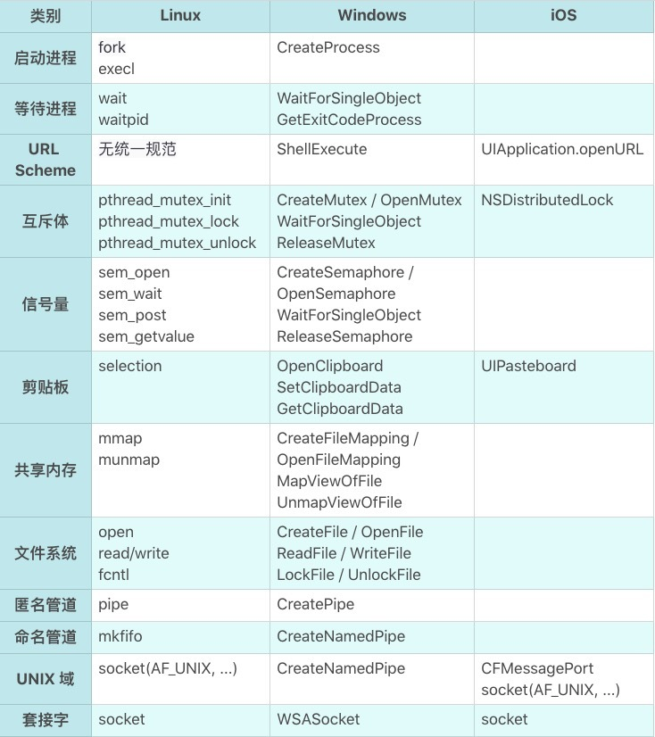
在逐一详细分析它们之前，我们先讨论一个问题：从需求角度来讲，进程内协同与进程间协同有何不同？
在早期，操作系统还只有进程这个唯一的执行体。而今天，进程内的执行体（线程与协程）被发明出来并蓬勃发展，事情发生了怎样的变化？
请先思考一下这个问题。我们在这一讲最后总结的时候一起聊聊。
启动进程
在讨论进程间的协同前，我们先看下怎么在一个进程中启动另一个进程。这通常有两种方法：
- 创建子进程；
- 让Shell配合执行某个动作。
前面在 “[11 | 多任务：进程、线程与协程]” 一讲中我们已经提到过，创建子进程 UNIX 系的操作系统都用了 fork API，它使用上很简洁，但是从架构角度来说是一个糟糕的设计。Windows 中我们用 CreateProcess，这个函数有很多的参数。
iOS 很有意思，它并不支持创建子进程。在进程启动这件事情上，它做了两个很重要的变化：
- 软件不再创建多个进程实例，永远是单例的；
- 一个进程要调用另一个进程的能力，不是去创建它，而是基于 URL Scheme 去打开它。
什么是 URL Scheme ？我们平常看到一个 URL 地址。比如：
这里面的 https 和 ftp 就是 URL Scheme，它代表了某种协议规范。在 iOS 下，一个软件可以声明自己实现了某种 URL Scheme，比如微信可能注册了“weixin”这个 URL Scheme，那么调用
UIApplication.openURL("weixin://...")
都会跳转到微信。通过这个机制，我们实现了支付宝和微信支付能力的对接。
URL Scheme 机制并不是 iOS 的发明，它应该是浏览器出现后形成的一种扩展机制。Windows 和 Linux 的桌面也支持类似的能力，在 Windows 下调用的是 ShellExecute 函数。
同步与互斥
聊完进程的启动，我们正式开始谈进程间的协同。
首先我们来看一下同步和互斥体。从上一讲 “[12 | 进程内协同：同步、互斥与通讯]”看，同步互斥相关的内容有：
- 锁（Mutex）；
- 读写锁（RWMutex）；
- 信号量（Semaphore）；
- 等待组（WaitGroup）；
- 条件变量（Cond）。
进程间协同来说，主流操作系统支持了锁（Mutex）和信号量（Semaphore）。Windows 还额外支持了事件（Event）同步原语，这里我们略过不提。
进程间的锁（Mutex），语义上和进程内没有什么区别，只不过标识互斥资源的方法不同。Windows 最简单，用名称（Name）标识资源，iOS 用路径（Path），Linux 则用共享内存。
从使用接口看，Windows 和 iOS 更为合理，虽然大家背后实现上可能都是基于共享内存（对用户进程来说，操作系统内核对象都是共享的），但是没必要把实现机理暴露给用户。
我们再看信号量。
信号量（Semaphore）概念是 Dijkstra（学过数据结构可能会立刻回忆起图的最短路径算法，对的，就是他发明的）提出来的。信号量本身是一个整型数值，代表着某种共享资源的数量（简记为 S）。信号量的操作界面为 PV 操作。
P 操作意味着请求或等待资源。执行 P 操作 P(S) 时，S 的值减 1，如果 S < 0，说明没有资源可用，等待其他执行体释放资源。
V 操作意味着释放资源并唤醒执行体。执行 V 操作 V(S) 时，S 的值加 1，如果 S <= 0，则意味着有其他执行体在等待中，唤醒其中的一个。
看到这里，你可能敏锐地意识到，条件变量的设计灵感实际上是从信号量的 PV 操作进一步抽象而来，只不过信号量中的变量是确定的，条件也是确定的。
进程间的同步与互斥原语并没有进程内那么丰富（比如没有 WaitGroup，也没有 Cond），甚至没那么牢靠。
为什么？因为进程可能会异常挂掉，这会导致同步和互斥的状态发生异常。比如，进程获得了锁，但是在做任务的时候异常挂掉，这会导致锁没有得到正常的释放，那么另一个等待该锁的进程可能就会永远饥饿。
信号量同样有类似的问题，甚至更麻烦。对锁来说，进程挂掉还可能可以把释放锁的责任交给操作系统内核。但是信号量做不到这一点，操作系统并不清楚信号量的值（S）应该是多少才是合理的。
资源共享
两个进程再怎么被隔离，只要有共同的中间人，就可以相互对话（通讯）。中间人可以是谁？共享资源。进程之间都有哪些共享的存储型资源？比较典型的是：
- 文件系统；
- 剪贴板。
文件系统本身是因存储设备的管理而来。但因为存储设备本身天然是共享资源，某个进程在存储设备上创建一个文件或目录，其他进程自然可以访问到。
因此，文件系统天然是一个进程间通讯的中间人。而且，在很多操作系统里面，文件的概念被抽象化，“一切皆文件”。比如，命名管道就只是一种特殊的 “文件” 而已。
和文件系统相关的进程间协同机制有：
- 文件；
- 文件锁；
- 管道（包括匿名管道和命名管道）；
- 共享内存。
这里我们重点介绍一下共享内存。
共享内存其实是虚拟内存机制的自然结果。关于虚拟内存的详细介绍，可以参阅 “[07 | 软件运行机制及内存管理]” 一讲。虚拟内存本来就需要在内存页与磁盘文件之间进行数据的保存与恢复。
将虚拟内存的内存页和磁盘文件的内容建立映射关系，在虚拟内存管理机制中原本就存在。
只需要让两个进程的内存页关联到同一个文件句柄，即可完成进程间的数据共享。这可能是性能最高的进程间数据通讯手段了。
Linux 的共享内存的使用界面大体是这样的：
func Map(addr unsafe.Pointer, len int64, prot, flags int, fd int, off int64) unsafe.Pointer
func Unmap(addr unsafe.Pointer, len int64)
其中，Map 是将文件 fd 中的[off, off+len)区间的数据，映射到[addr, addr+len) 这段虚拟内存地址上去。
addr 可以传入 nil 表示选择一段空闲的虚拟内存地址空间来进行映射。Unmap 则是将[addr, addr+len)这段虚拟内存地址对应的内存页取消映射，此后如果代码中还对这段内存地址进行访问，就会发生缺页异常。
在 Windows 下共享内存的使用界面和 Linux 略有不同，但语义上大同小异，这里略过不提。
真正值得注意的是 iOS，你会发现基于文件系统的进程间通讯机制，一律不支持。为什么？因为 iOS 操作系统做了一个极大的改变：软件被装到了一个沙箱（Sandbox）里面，不同进程间的存储完全隔离。
存储分为内存和外存。内存通过虚拟内存机制实现跨进程的隔离，这个之前我们已经谈到过。现在 iOS 更进一步，外存的文件系统也相互独立。软件 A 创建的文件，软件 B 默认情况下并不能访问。在一个个软件进程看来，自己在独享着整个外存的文件系统。
文件系统之外，进程间共享的存储型资源，就剩下剪贴板了。
但剪贴板并不是一个常规的进程间通讯方式。从进程间通讯角度来说它有很大的限制：剪贴板只有一个，有人共享数据上去，就会把别人存放的数据覆盖掉。
实践中，剪贴板通常作为一种用户实现跨进程交互的手段，而不太会被用来作为进程间的通讯。相反它更可能被恶意程序所利用。比如，写个木马程序来监听剪贴板，以此来窃取其他程序使用过程中留下的痕迹。
收发消息
那么，不用文件系统和剪贴板这样的共享资源，还有其他的通讯机制么？
有，基于网络。很重要的一个事实是：这些进程同在一台机器上，同在一个局域网中。
套接字作为网络通讯的抽象，本身就是最强大的通讯方式，没有之一。进程间基于套接字来进行通讯，也是极其自然的一个选择。
况且，UNIX 还发明了一个专门用于本地通讯的套接字：UNIX 域。UNIX 域不同于常规套接字的是，它通过一个 name 来作为访问地址，而不是用ip:port来作为访问地址。
Windows 平台并不支持 UNIX 域。但是有趣的是，Windows 的命名管道（NamedPipe）也不是一个常规意义上的管道那么简单，它更像是一个管道服务器（PipeServer），一个客户端连上来可以分配一个独立的管道给服务器和客户端进行通讯。从这个事实看，Windows 的命名管道和 UNIX 域在能力上是等价的。
关于套接字更详细的内容，后文在讨论网络设备管理时我们会进一步介绍。
架构思维上我们学习到什么？
对比不同操作系统的进程间协同机制，差异无疑是非常巨大的。
总结来说，进程间协同的机制真的很多了，五花八门，我们这里不见得就列全了。但是有趣的是，iOS 把其中绝大部分的协同机制给堵死了。
创新性的系统往往有其颠覆性，带着批判吸收的精神而来，做的是大大的减法。
iOS 就是这样的一个操作系统。它告诉我们：
- 软件不需要启动多份实例。一个软件只需启动一个进程实例。
- 大部分进程间的协同机制都是多余的。你只需要能够调用其他软件的能力（URL Scheme）、能够互斥、能够收发消息就够了。
这的确是一个让人五体投地的决策。虽然从进程间协同机制的角度，看起来 iOS 少了很多能力。但这恰恰也给了我们一个启示：这么多的进程通讯机制，是否都是必需的？
至少从桌面操作系统的视角看，进程间协同的机制，大部分都属于过度设计。当然，后面在 “服务端开发” 一章中，我们也会继续站在服务端开发视角来谈论这个话题。
并不是早期操作系统的设计者们喜欢过度设计。实际上这是因为有了线程和协程这样的进程内多任务设施之后，进程的边界已经发生了极大的变化。
前面我们讨论架构思维的时候说过，架构的第一步是做需求分析。那么需求分析之后呢？是概要设计。概要设计做什么？是做子系统的划分。它包括这样一些内容：
- 子系统职责范围的定义；
- 子系统的规格（接口），子系统与子系统之间的边界；
- 需求分解与组合的过程，系统如何满足需求、需求适用性（变化点）的应对策略。
从架构角度来看，进程至少应该是子系统级别的边界。子系统和子系统应该尽可能是规格级别的协同，而不是某种实现框架级别的协同。规格强调的是自然体现需求，所以规格是稳定的，是子系统的契约。而实现框架是技巧，是不稳定的，也许下次重构的时候实现框架就改变了。
所以站在架构视角，站在子系统的边界看进程边界，我们就很清楚，进程间协同只需要有另一个进程能力的调用，而无需有复杂的高频协作、高度耦合的配合需求。
不过，为什么 iOS 会如此大刀阔斧地做出改变，除了这些机制的确多余之外，还有一个极其核心的原因，那就是安全。关于这一点，我们在后面探讨操作系统的安全管理时，会进一步进行分析。
结语
今天我们从进程启动开始入手，介绍了同步与互斥、资源共享、收发消息等进程间的协同机制。通过对比不同操作系统，我们会发现以 “剧烈变动” 来形容进程间协同的需求演进一点也不过分。
我认为 iOS 是对的。大刀阔斧干掉很多惯例要支持的功能后，进程这个执行体，相比线程和协程就有了更为清晰的分工。
如果你对今天的内容有什么思考与解读，欢迎给我留言，我们一起讨论。到这一讲为止，我们单机软件相关的内容就介绍完了。从下一讲开始我们将进入多姿多彩的互联网世界。
如果你觉得有所收获，也欢迎把文章分享给你的朋友。感谢你的收听，我们下期再见。
14 IP 网络：连接世界的桥梁
你好，我是七牛云许式伟。
到目前为止，我们介绍了操作系统的六大子系统中的四项：进程、存储、输入、输出。当你理解了这些东西背后的道理，基本上做一款单机软件就游刃有余了。
但是，如果仅仅局限于单机，一台计算机并不见得比计算器高明太多，网络对整个信息科技的重要性不言而喻。它让计算机连接在了一起，这一连接就发生了巨大的变化。
没有了网络，我们只能用 Office 软件，玩玩扫雷。没有网络，就没有 QQ 和微信，不会有淘宝和支付宝，也不会有 BAT。
网络连接一切。它连接了人（个人和企业）、服务（由软件系统构建的服务接口）和物（大自然产物和智能终端），构建了多姿多彩的互联网。
它让地球上的任何两个人都可以随时随地进行沟通，远程做生意。在互联网出现之前，旧的商业文明我们可以一言以蔽之：一手交钱，一手交货。而建立在互联网之上的新商业文明，我们一手下单付款，一手收钱发货，足不出户，货物就通过便捷的物流服务送到了你手上。
这是多么巨大的效率变革，但这一切是怎么做到的呢？
数据的封包过程
网络和其他所有的输入输出设备一样，只能交换数据。无论你要对方做什么，你首先需要发送对方理解得了的数据给它。所以双方要就沟通的语言达成共识，这就是网络协议。
网络协议是计算机与计算机远程沟通的数据格式。它包含很多信息。这些信息不同部分的内容，有不同的职责，关心它的人也各有不同。
网络是传递数据的，是数字内容的物流。作为类比，我们可以看看实物快递的物流协议是什么样的。下面这张快递面单大家应该都很熟悉：
这个快递面单包含很多内容，其中最重要的当然是寄件人信息和收件人信息。有了收件人信息，物流系统才能够知道怎么把要邮寄的物品进行一站站中转，并最终到达目的地。
有了寄件人信息，收件人收到信息才知道是谁寄过来的，如果回复的话应该邮寄往何方。而在物流过程如果出错的话，物流系统也知道如何与寄件人沟通协调错误的处置方法。
寄件人关心什么？他很可能关心物流订单号。这是他掌握物流状态的唯一凭据。另外，为了传输过程的便捷，物流系统可能还会给我们要邮寄的物品用信封袋或者包装箱进行封装。
所有这些寄件人信息、收件人信息、物流订单号、信封袋、包装箱，都不是寄件人要邮寄的内容，而是物流系统对物流协议所产生的需求。
为了支持整个物流系统的不间断运转，我们会有很多不同的部门。有负责最后一公里的快递员，也有负责骨干线路的航空运输部门，或者火车货运部门等等。
同样的，数字物流系统也有很多不同的部门，有的部门负责局域网（LAN）内最后一公里的，也有人负责广域网（WAN）骨干线路的运输的。网络协议作为数字物流的载体，会收到来自这些不同部门的需求。
我们平常可能经常听人提及，网络协议有 OSI 模型，它把网络协议分成了七层结构，从上到下分别是：应用层、表示层、会话层、传输层、网络层、数据链路层、物理层。但这样描述有点过于抽象，我们不妨用下图来理解网络协议的分层结构。
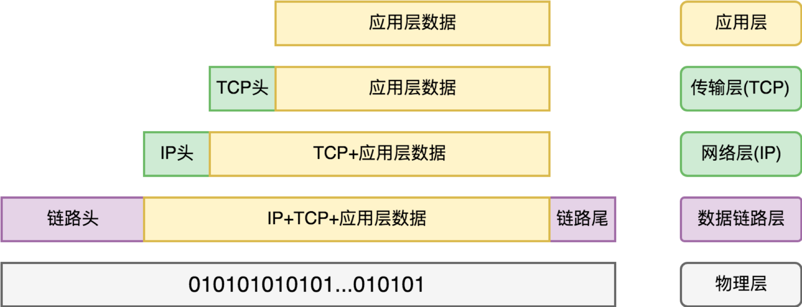
让我们设想：我们要传输一部电影，它就是我们的 “物品”，或者用技术术语叫 “应用层数据”，怎么传？
第一步，分批次。 数字物流系统单次能够传递的数据大小是有限的。如果数据太大，就必须分开多次来传输。从物理网络视角看，数据并不是流（stream），而是一个个大小有明确限制的数据包。
第二步，套上信封，写好寄件单位的部门（源端口号）、收件单位的部门（目标端口号）、批次编号。 为什么要写部门（端口号）？方便知道由谁（哪个应用程序软件）来负责收件。为什么要写批次编号？是为了防止寄丢了，寄丢了就得重新传一份该批次编号的东西。
这层我们叫传输层。它主要是为了解决传输可靠性的问题。当然传输层有两套协议（两种信封），一套是 TCP 协议，另一套是 UDP 协议。UDP 协议不保证对方一定收到，信封上就没写批次编号。
第三步，再套上一层信封，上面写上寄件单位地址（源 IP 地址）、收件单位地址（目标 IP 地址）。 有了地址，这封信在广域网（WAN）上流转，就知道自己应该去往何方了。这一层叫做网络层，它定义的信封格式，叫 IP 协议。
互联网的复杂性是在于，它不是一家数字物流公司的事。信寄到某处，可能就换一家物流公司了。它是所有的数字物流公司通力协作的结果。
所以 IP 协议最核心的意义是标准化，解决跨物流公司传输的问题。为什么我们要这样一层信封套一层信封？因为越往外层的信封，内容越和具体的物流公司相关。但无论你外层套的信封如何各有不同，拆到这一层，信的格式就是标准化的。
第四步，再套上一层信封，这层我们叫它数据链路层。 具体信封上写什么，完全是具体负责这段路程的物流公司说了算。当信件从一个物流公司转到另一个物流公司做交接的时候，这一层信封拆掉，重新换上新的信封。
数据链路层的信封格式（网络协议）非常多样化。局域网（LAN）现在最流行的是以太网（Ethernet）协议，广域网（WAN）现在常见的有 HDLC、PPP、Frame-Relay 等网络协议。
无论如何，写完了特定物流公司所需要的信息，信件就可以进入数字物流系统（物理层）去流转了。
网络协议
上面那一层套一层的信件（网络协议）放的是用户要邮寄的东西，比如一部电影。但为了支持整个邮寄过程的顺利进行，获得更好的用户体验，还会有一些辅助用途的信件（网络协议）在网络上传递，有的是面向用户的，有的是面向数字网络系统内部的。
完整来说，在整个数字物流系统中，与数据传输这件事本身有关的网络协议，我们整理如下：
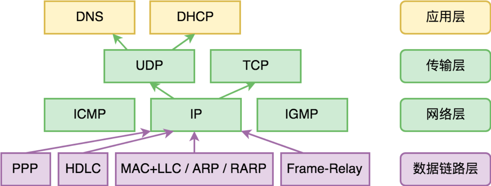
在这个图中，链路层协议最为复杂，MAC+LLC、PPP、HDLC、Frame-Replay，这些是目前最为常见的。未来也必然会出来很多新的网络通讯技术，用的是全新的协议。链路层之上，IP -> TCP/UDP，这些协议我们最为耳熟能详，上面我们也已经介绍过了。
其他都还有些什么？除了 ICMP 和 IGMP 协议，这些协议都和网络地址的解析有关。所以，在谈协议用途前，我们先聊一聊网络地址。
要通讯，首先要有地址。数字物流世界的地址有三层。最底下的是链路层地址。不同链路层协议的地址表示非常不同。
比如，局域网所采纳的以太网（Ethernet）协议用的是 MAC 地址。一台计算机有一个或多个网卡，每个网卡会有自己的唯一标识即 MAC 地址。这个标识跟随网卡设备存在，和网络环境无关。你把计算机从北京搬到上海，MAC 地址保持不变。
链路层的网络地址我们平常接触并不多，常规我们理解的网络地址是位于第二层的 IP 地址。
IP 地址类似于门牌号：你家住在哪个城市哪条路几号。它决定了网络路由怎么走，信息如何到达你的计算机网卡。IP 地址已经发展了两代，分别为 IPv4 和 IPv6。升级的原因是 IPv4 地址空间太小，只有 4G（即40多亿）个地址。
就像我们通常会更喜欢用 “我要去金茂大厦” 而不是 “我要去上海市浦东新区世纪大道88号” 一样，IP地址并不容易记忆，所以就有了第三层的网络地址：域名。
比如，我们会用 www.qiniu.com 这个地址来找到七牛云的官网，而不是记住枯燥的 IP 地址。
理解了这三类网络地址，我们一一介绍下这些协议的用途。
首先是 DNS 协议。 这个协议就像是个地址簿，主要负责 “域名” => “IP地址” 的查询。每次我们要邮寄信件之前都要拿出来查一查。
其次是 DHCP 协议。 DHCP 全称叫动态主机配置协议（Dynamic Host Configuration Protocol），主要负责计算机接入网络时的初始化。计算机刚开始就只有网卡的 MAC 地址，通过 DHCP 可以给它分配 IP 地址，并得到默认网关地址（这很重要，不知道网关就上不了网）和 DNS 服务器的地址。有了这些东西，这台计算机就可以和外界通讯了。
然后是 ARP 协议。 ARP 全称叫地址解析协议（Address Resolution Protocol），它服务于现在局域网中最流行的以太网协议。在以太网中，ARP 协议负责解析远程主机 IP 地址对应的 MAC 地址。之所以需要 ARP 协议，是因为我们平常应用程序连接目标计算机进行网络通讯时，都是提供了域名或 IP 地址。但对以太网来说，要想发信件出去，它要的是对方的 MAC 地址。
然后是 RARP 协议。 RARP 全称叫反向地址转换协议（Reverse Address Resolution Protocol）。顾名思义，它和 ARP 协议相反，负责的是 MAC 地址到 IP 地址的转换。RARP 协议已经被上面的 DHCP 协议所取代，平常用不太到了。
然后是 ICMP 协议。 ICMP 全称叫互联网控制报文协议（Internet Control Message Protocol），它能够检测网路的连线状况，以保证连线的有效性。基于这个协议实现的常见程序有两个：ping 和 traceroute，它们可以用来判断和定位网络问题。
最后是 IGMP 协议。 IGMP 全称叫互联网组管理协议（Internet Group Management Protocol），它负责 IP 组播（Multicast）成员管理。本文略过这块的内容。
数据传输过程
了解了数据包的结构，也了解了数据传输相关的网络协议，接下来我们聊一聊数据传输的过程。为了方便理解，我们画了一幅数据传输的示意图：
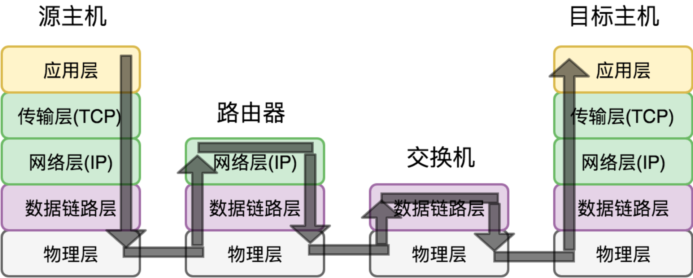
简化理解来说，我们可以认为，在需要传输数据的源主机和目标主机之间，它们通过若干路由器或交换机连接。我们分以下几种情况来分析：
情形一，源主机和目标主机在同一个局域网内，中间通过交换机连接，采用了最常见的以太网协议。
通讯开始的时候，源主机只有目标主机的 IP 地址，并没有 MAC 地址。但以太网通讯要的是 MAC 地址，所以源主机会发起一个 ARP 请求去获得目标 IP 对应的 MAC 地址。
当然，源主机会缓存这个对应关系。第二次继续给相同 IP 发信息的时候，就不需要重新发起 ARP 请求了。
无论是 ARP 请求，还是普通的数据包，都会先到达交换机。ARP 是一个广播请求，所以交换机会转发给所有其他主机，目标主机发现这个 IP 地址是自己的，于是返回自己的 MAC 地址。
有了目标主机的 MAC 地址，源主机就可以发数据了。同样的，所有数据包都发给了交换机。
交换机是性能极高的网络数据交换设备。它通常工作在网络协议的第二层，也就是数据链路层。这一层只认 MAC 地址，不认 IP 地址。MAC 地址本身是个唯一身份标识，就像我们的身份证号，并没有可寻址的作用。那么交换机怎么做到这么高的数据传输的效率？
交换机在工作的过程中，会不断地收集资料去创建一个地址映射表：MAC 地址 => 交换机端口。这个表很简单，它记录了某个MAC 地址是在哪个端口上被发现的。
交换机收到一个数据包后，首先会进行学习，把源 MAC 地址和收到数据包的交换机端口对应起来。然后交换机查看数据包的目标 MAC 地址，并在地址映射表中找，如果找到对应的端口，那么就往这个端口转发数据包。
如果没找到，交换机可能会把这个数据包 “扩散” 出去，就好像收到广播数据包一样。这时如果目标主机收到广播过来的数据包后，回复了这个数据包，那么它的 MAC 地址和交换机端口的映射关系就也会被学习到。
当交换机初次加入网络时，由于地址映射表是空的，所以，所有的数据包将发往局域网内的全部端口，直到交换机 “学习” 到各个MAC 地址为止。这样看来，交换机刚刚启动时与传统的共享式集线器类似，直到地址映射表比较完整地建立起来后，它才真正发挥它的高性能。
我们总结一下，当一台交换机安装配置好之后，其工作过程如下。
- 收到某端口（设为A）MAC 地址为 X 的计算机发给 MAC 地址为 Y 的计算机的数据包。交换机从而记下了 MAC 地址 X 在端口 A。这称为学习（learning）。
- 交换机还不知道 MAC 地址 Y 在哪个端口上，于是向除了 A 以外的所有端口转发该数据包。这称为泛洪（flooding）。
- MAC 地址 Y 的计算机收到该数据包，向 MAC 地址 X 发出确认包。交换机收到该包后，从而记录下 MAC 地址 Y 所在的端口。
- 交换机向 MAC 地址 X 转发确认包。这称为转发（forwarding）。
- 交换机收到一个数据包，查表后发现该数据包的来源地址与目的地址属于同一端口。交换机将不处理该数据包。这称为过滤（filtering）。
- 交换机内部的 “MAC 地址 => 端口” 查询表的每条记录采用时间戳记录最后一次访问的时间。早于某个阈值（用户可配置）的记录被清除。这称为老化（aging）。
情形二，源主机和目标主机都有公网 IP 地址，它们中间经过若干交换机和路由器相连。
路由器和交换机不太一样，交换机因为没有门牌号，通讯基本靠吼。好的一点是，圈子比较小，吼上一段时间后，路都记住了，闭着眼睛都不会走错。
但广域网太大了，靠吼没几个人听得见。所以路由器工作在网络协议的第三层，也就是网络层。网络层看到的是 IP 协议，能够知道数据传输的源 IP 地址和目标 IP 地址。
有了 IP 地址，就相当于有了门牌号，开启导航按图索骥就可以把东西带过去了。这也是路由器为什么叫路由器的原因，它有导航（路由）功能，知道哪些目标 IP 地址的数据包应该往哪条路走的。
路由器可以拥有一部分交换机的能力，比如，如果发现请求是局域网内的话，也可以引入类似交换机那样的基于 MAC 地址的映射表实现高速通讯。但总体来说，路由器要考虑的问题复杂很多，因为涉及 “最佳路由路径” 的问题。
简单说，所谓 “最佳路由路径” 是指，到达目标主机的路有很多种可能性，我应该选择哪一条。大家在大学可能都学过带权的有向图，路由器面临的正是这种情况。而且情况可能更复杂的是，每一小段路径的权重都是动态的，因为网络状况一直在变。
如果你对路由算法感兴趣，可以在维基百科查找 “路由” ，进一步研究。
路由器除了解决路由问题，它往往还要解决异构网络的封包转换问题。作为局域网的接入方，它可能走的是固网或 WiFi 网络。
作为 Internet 的接入方，它可能走的是光纤宽带。所以它需要把局域网的数据链路层的封包解开并重组，以适应广域网数据链路协议的需求。
理解了以上两点，我们回到话题：广域网的两台具备公网 IP 的主机之间如何完成数据传输？
大体来说，整个过程如下。
- 首先，源主机发送的数据包，经由交换机（可选），到达本局域网的公网网关（路由器）。这个过程属于局域网内通讯，同情形一。
- 路由器收到了数据包，发现目标主机是 Internet 上的某个远端的目标主机，于是对数据包进行拆包重组，形成新的数据包。
- 循着自身的路由表，把这个新数据包层层转发，最后到达目标主机对应的公网网关（路由器）上。
- 路由器发现是发给本局域网内的目标主机，于是再拆包重组，形成新的数据包。
- 新数据包转到局域网内，经由交换机（可选），并最终到达目标主机。如此，整个数据传输过程就结束了。
情形三，源主机和目标主机至少有一方在局域网内且只有私有 IP 地址，它们中间经过若干交换机和路由器相连。
解释一下私有 IP 地址。在 IPv4 地址区间中，有一些区段，比如 10.0.0.0 ~ 10.255.255.255、172.16.0.0 ~ 172.31.255.255、192.168.0.0 ~ 192.168.255.255 ，这几个 IP 地址区间都是私有 IP 地址，只用于局域网内通讯。
常规来说，只有私有 IP 而没有公网 IP 的主机只能和局域网内的主机通讯，而无法和 Internet 上的其他主机相互通讯。
但这一点又和我们日常的感受不符：比如家庭用户往往网络结构是一个 WiFi 路由器连接公网，所有的家庭设备如手机、平板、笔记本，都以 WiFi 路由器为网关构成一个局域网。那么我们的这些设备是怎么上网的呢？
答案是 NAT（Network Address Translation，网络地址转换）技术。它的原理比较简单，假设我们现在源主机用的IP+端口为 iAddr:port1，经过 NAT 网关后，NAT 将源主机的 IP 换成自己的公网 IP，比如 eAddr，端口随机分配一个，比如 port2。
也就是从目标主机看来，这个数据包看起来是来自于 eAddr:port2。然后，目标主机把数据包回复到 eAddr:port2，NAT 网关再把它转发给 iAddr:port1。
也就是说，NAT 网关临时建立了一个双向的映射表 iAddr:port1 <=> eAddr:port2，一旦完成映射关系的建立，在映射关系删除前，eAddr:port2 就变成了 iAddr:port1 的 “替身”。这样，内网主机也就能够上网了。
NAT 网关并不一定是公网网关（路由器），它可以由局域网内任何一台有公网 IP 的主机担当。但显然如果公网网关担当 NAT 网关，链路的效率会高一点。
我们家用的 WiFi 路由器，就充当了 NAT 网关的作用，这也是我们能够上网的原因。
那么，最极端的情形，源主机和目标主机在不同的局域网内，且都没有公网 IP，它们是否可以通讯呢？
答案是不确定。
首先，在这种情况下，源主机和目标主机没法直接通讯，需要中间人去帮忙搭建通讯的链路。怎么做呢？找一个有公网 IP 的主机作为中间人服务器，目标主机向它发包，这样，在目标主机的 NAT 网关就形成了一对双向的映射表：
- iDestAddr:portDest1 <=> eDestAddr:portDest2
然后，中间人服务器再把 eDestAddr:portDest2 告诉源主机。这样源主机就可以通过向 eDestAddr:portDest2 发送数据包来和目标主机 iDestAddr:portDest1 通讯了。
我们不少 P2P 软件就利用了这个技术实现 NAT 穿透，让两台不同内网的计算机相互能够直接通讯。
那么，答案为什么是不确定？因为上面这个机制只有在目标主机的 NAT 网关是 Full cone NAT，即一对一（one-to-one）NAT 网关时才成立。
什么是 Full cone NAT？它是指 NAT 网关临时建立了 iAddr:port1 <=> eAddr:port2 双向映射后，任何主机给 eAddr:port2 发送数据包，都会被转给 iAddr:port1，并不局限于构建这个映射时数据包发送的目标主机是谁。
但在其他类型的 NAT 网关下，一般都对回包的主机 IP 地址有约束。也就是说，NAT 网关形成的双向映射表是因为哪个目标主机建立的，那么回包也必须来自哪台主机。
这种情况下，中间人服务器就没办法来搭桥让它们直接通讯了，数据包需要由中间人服务器来中转。
结语
总结一下，今天我们介绍了数据封包过程、与 IP 数据包传输相关的网络协议，并对数据传输过程做了整体的描述。
我们主要介绍的重点是 IP 协议之下的网络工作过程。我们不讨论如何进行数据重传，更不关心数据到达应用层我们收到数据包后，如何去处理它们。
互联网背后的世界，和互联网一样精彩。精妙之处，值得细细体会。
如果你对今天的内容有什么思考与解读，欢迎给我留言，我们一起讨论。下一讲我们将进一步来探讨一下网络世界的编程接口。
如果你觉得有所收获，也欢迎把文章分享给你的朋友。感谢你的收听，我们下期再见。
15 可编程的互联网世界
你好，我是七牛云许式伟。
前面我们讨论架构思维的时候说过，架构的第一步是做需求分析。需求分析之后呢？是概要设计。概要设计做什么？是做子系统的划分。它包括这样一些内容：
- 子系统职责范围的定义；
- 子系统的规格（接口），子系统与子系统之间的边界；
- 需求分解与组合的过程，系统如何满足需求、需求适用性（变化点）的应对策略。
对于我们理解这个精彩的互联网世界来说，理解它的子系统的划分思路是非常非常重要的。
网络应用程序的全视图
在上一讲 “[14 | IP 网络：连接世界的桥梁]” 中我们介绍了 IP 网络的工作原理。我们还画了一幅与数据传输这件事本身有关的网络协议图，如下：
那么，从一个典型的网络应用程序角度来说，它的完整视图又是什么样子的呢？
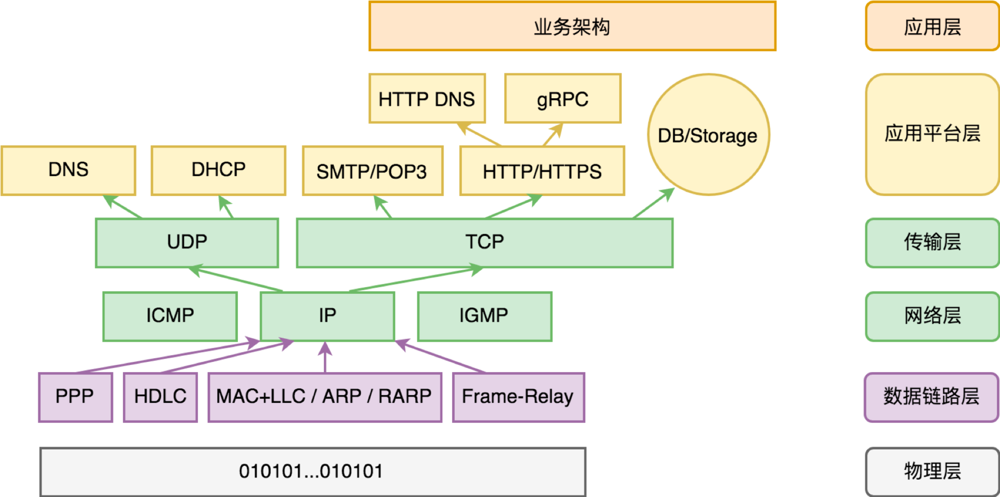
上图是我给出的答案。当然，它并不代表所有的网络应用程序，但这不影响我们借它的结构来解释网络世界是怎么划分子系统的，每个子系统都负责了些什么。
第一层是物理层。 你可以理解为网络设备的原生能力，它定义了硬件层次来看的基础网络协议。
第二层是数据链路层。 它负责解决的是局部网络世界的数据传输能力。网络数据传输技术会层出不穷，今天主流有固网、WiFi、3G/4G，明天有 5G/6G，未来也必然还会出现更快速的网络新技术。
这些网络技术虽然都有自己独特的链路层协议，但都可以很自然融入整个互联网世界。原因在于什么？在于 IP 网络。
所以第三层是 IP 网络层，它负责的是互联网世界的一体化，彼此包容与协作。 如果拿单机的应用程序的全视图来类比的话，IP 网络类似于单机体系中的操作系统。
在单机体系，操作系统是一台计算机真正可编程的开始。同样地，互联网世界的体系中，IP 网络是互联网 “操作系统” 的核心，是互联网世界可编程的开始。
第四层是 TCP/UDP 传输层。 它也是互联网 “操作系统” 的重要组成部分，和 IP 网络一起构成互联网 “操作系统” 的内核。IP 网络解决的是网如何通的问题，而传输层解决的是如何让互联网通讯可信赖的问题，从而大幅降低互联网应用程序开发的负担。
互联网并不是世界上的第一张网。但是只有拥有了 TCP/IP 这一层 “操作系统”，这才真正实现了网络价值的最大化：连接一切。
有了操作系统，应用软件才得以蓬勃发展。上图我们列出的应用层协议，仅仅只是沧海一粟。但是，要说当前最主流的应用层协议，无疑当属 HTTP 协议（超文本传输协议，HyperText Transfer Protocol）和 SMTP/POP3 协议了。
HTTP 协议是因为万维网（World Wide Web，简称 WWW）这个应用场景而诞生，冲着传输静态网页而去的。但是由于设计上的开放性，几经演进到今天，已经俨然成为一个通用传输协议了。
通用到什么程度？DNS 地址簿这样的基础协议，也搞出来一个新的 HTTP DNS。当然今天 HTTP DNS 还只是传统 DNS 协议的补充，使用还并不广泛。但由此可知人们对 HTTP 协议的喜爱。
除了呈现网页之外，HTTP 协议也经常被用来作为业务开放协议 RESTful API 的承载。另外，一些通用 RPC 框架也基于 HTTP 协议，比如 Google 的 gRPC 框架。
SMTP/POP3 协议是电子邮件（Email）应用所采用的，它们没有像 HTTP 协议那么被广泛借用，只是局限于电子邮件应用领域。但 SMTP/POP3 协议使用仍然极为广泛，原因是因为电子邮件是最通用的连接协议，它连接了人和人，连接了企业和企业。
我们都很佩服微信的成功，因为它连接了几乎所有的中国人。但是相比电子邮件，微信仍然只是小巫见大巫，因为电子邮件连接了世界上的每一个人和企业。
这是怎么做到的？因为开放的力量。如果说有谁能够打败微信，那么我个人一个基本的思考是：用微信的方式打败微信恐怕很难，但微信是封闭协议，开放也许是一个打败微信的机会？
还有其他很多应用层协议上图没有列出来，比如 FTP、NFS、Telnet 等等。它们大都应用范围相对小，甚至有一些渐渐有被 HTTP 协议替代的趋势。
对于一个网络应用程序来说，它往往还依赖存储和数据库（DB/Storage）。目前存储和数据库这块使用 HTTP 的还不多，除了对象存储（Object Storage），大部分还是直接基于 TCP 协议为主。
对象存储作为一种最新颖的存储类型，现在主流都是基于 HTTP 协议来提供 RESTful API，比如七牛云的对象存储服务。
所以你可以看到，网络应用程序所基于的基础平台，比单机软件要庞大得多。前面我们介绍的单机软件所依赖的 CPU + 编程语言 + 操作系统就不说了，它一样要依赖。
上图所示的网络世界所构建的庞大基础平台，从物理层 -> 数据链路层 -> 网络层 -> 传输层 -> 应用平台层，也都是我们业务架构的依赖点。选择自定义网络协议，基于 gRPC，还是基于 HTTP 提供 RESTful API ？这是架构师需要做出的决策之一。
应用层协议与网关
上一讲 “[14 | IP 网络：连接世界的桥梁]” 中我们谈到两台主机是如何通讯时，我们介绍了让局域网主机能够上网的 NAT 技术。NAT 网关本质上是一个透明代理（中间人），工作在网络协议的第四层，即传输层，基于 TCP/UDP 协议。
如果我们限定传输的数据包一定是某种应用层协议时，就会出现所谓的应用层网关，工作在网络协议的第七层，所以有时候我们也叫七层网关。
我们熟知的 Nginx、Apache 都可以用作应用层网关。应用层协议通常我们采用的是 HTTP/HTTPS 协议。
为什么 HTTP 协议这么受欢迎，甚至获得了传输层协议才有的待遇，出现专用的网关？
这得益于 HTTP 协议的良好设计。
我们一起来看一看 HTTP 协议长什么样。先看获取资源的 GET 请求（Request）：
GET /abc/example?id=123 HTTP/1.1
Host: api.qiniu.com
User-Agent: curl/7.54.0
Accept: */*
HTTP 协议的请求（Request）分协议头和正文两部分，中间以空行分隔。GET 请求一般正文为空。
协议头的第一行是请求的命令行，具体分为三部分，以空格分隔。第一部分为命令，常见有 GET、HEAD、PUT、POST、DELETE 等。第二部分是请求的资源路径。第三部分为协议版本。
协议头从第二行开始，每行均为请求的上下文环境或参数，我们不妨统一叫字段（Field）。格式为：
字段名: 字段值
HTTP 服务器收到一个请求后，往往会返回这样一个回复（Response）：
HTTP/1.1 200 OK
Content-Type: text/html; charset=utf-8
Content-Length: 68
ETag: W/"fb751fe2cb812eb5d466ed9e3c3cd519"
<html><head><title>Hello</title></head><body>qiniu.com</body></html>
HTTP 请求（Request）和回复（Response）格式上只有第一行不同。回复的第一行也分为三部分，以空格分割。
第一部分为协议版本。
第二部分是状态码（Status Code），用来表征请求的结果，200 表示成功，4xx 通常表示请求（Request）本身不合法，5xx 则通常表示 HTTP 服务器有异常。
第三部分是状态文本（Status Text），方便接收方看到回复后可以立刻判断问题，而不用去查状态码对应的文档。
当协议正文非空的时候，往往还需要用 Content-Type 字段来指示协议正文的格式。例如这里我们用 text/html 表征返回的协议正文是一个 html 文档。Content-Length 字段则用来指示协议正文的长度。
我们再来看一下修改资源的 POST 请求：
POST /abc/example HTTP/1.1
Host: api.qiniu.com
User-Agent: curl/7.54.0
Authorization: Qiniu dXNlcj14dXNoaXdlaSZwYXNzd2Q9MTIzCg
Content-Type: application/x-www-form-urlencoded;charset=utf-8
Content-Length: 18
id=123&title=Hello
和 GET 不一样，修改资源往往需要授权，所以往往会有 Authorization 字段。另外这里我们用 Content-Type 字段表示我们协议正文用了表单（form）格式。
最后我们看下删除资源的 DELETE 请求：
DELETE /abc/example HTTP/1.1
Host: api.qiniu.com
User-Agent: curl/7.54.0
Authorization: Qiniu dXNlcj14dXNoaXdlaSZwYXNzd2Q9MTIzCg
Content-Type: application/json
Content-Length: 11
{"id": 123}
删除和修改完全类似。除了我这里刻意换了一种 Content-Type，协议正文用 json 格式了。实际业务中当然不是这样，通常会选择一致的表达方法。
大致了解了 HTTP 协议的样子，我们一起来分析一下它到底好在哪里？
毫无疑问，最关键的是它的协议头设计。具体表现在如下这些方面。
- 极其开放的协议头设计。虽然 HTTP 定义了很多标准的协议头字段（Field），但是用户还是可以加自己的字段，惯例上以 X- 开头。例如，七牛引入了 X-Reqid 作为请求的内部调用过程的跟踪线索。关于 X-Reqid 本专栏后续我们还会继续谈到。
- 规范了业务的表达范式。虽然业务有千千万万种可能，但是实质上不外乎有什么资源，以及对资源的 CURD（创建-修改-读取-删除）。相对应地，在HTTP 协议中以 “资源路径” 表达资源，以 PUT-POST-GET-DELETE 表达 CURD 操作（也有一些服务以 POST 而不是用 PUT 请求来创建资源）。
- 规范了应用层的路由方式。我们知道，在传输层网络的路由基于 IP 地址，但是对于应用而言，IP 地址是一个无意义的字段，在 HTTP 协议头中，有一个字段是强制的，那就是 Host 字段，它用来表征请求的目标主机。通常，在正式生产环境下它是个域名，比如 api.qiniu.com 。以域名来表征目标主机，无疑更加能够体现业务特性。故而，对应用层而言，“域名+资源路径” 是更好的路由依据，方便进行业务的切分。
正因为 HTTP 协议的这些好处，逐渐地它成为了网络应用层协议的模板。无论业务具体是什么样子的，都可以基于 HTTP 协议表达自己的业务逻辑。
TCP/IP 层编程接口
理解清楚了我们网络应用程序的结构，也理解了我们最主流的应用层协议 HTTP 协议，那么我们就可以考虑去实现一个互联网软件了。
从编程接口来说，网络的可编程性是从网络层 IP 协议开始。这是最底层的网络 “操作系统” 的能力体现。
从基于 IP 协议的网络视角来看，数据并不是源源不断的流（stream），而是一个个大小有明确限制的 IP 数据包。IP 协议是无连接的，它可以在不连接对方的情况下向其发送数据。规格示意如下：
package net
type IPAddr struct {
IP IP
Zone string // IPv6 scoped addressing zone
}
func DialIP(network string, laddr, raddr *IPAddr) (*IPConn, error)
func ListenIP(network string, laddr *IPAddr) (*IPConn, error)
func (c *IPConn) Read(b []byte) (int, error)
func (c *IPConn) ReadFrom(b []byte) (int, Addr, error)
func (c *IPConn) ReadFromIP(b []byte) (int, *IPAddr, error)
func (c *IPConn) Write(b []byte) (int, error)
func (c *IPConn) WriteTo(b []byte, addr Addr) (int, error)
func (c *IPConn) WriteToIP(b []byte, addr *IPAddr) (int, error)
func (c *IPConn) Close() error
IP 协议本身只定义了数据的目标 IP，那么这个 IP 地址对应的计算机收到数据后，究竟应该交给哪个软件应用程序来处理收到的数据呢？
为了解决这个问题，在 IP 协议的基础上定义了两套传输层的协议：UDP 和 TCP 协议。它们都引入了端口（port）的概念。
端口很好地解决了软件间的冲突问题。一个IP地址+端口，我们通常记为 ip:port，代表了软件层面上来说唯一定位的通讯地址。每个软件只处理自己所使用的 ip:port 的数据。
当然，既然 IP 和端口被传输层一起作为唯一地址，端口上一定程度上缓解了 IPv4 地址空间紧张的问题。
虽然从设计者的角度来说，最初端口的设计意图，更多是作为应用层协议的区分。例如 port = 80 表示 HTTP 协议，port = 25 表示 SMTP 协议。
应用协议的多样化很容易理解，这是应用的多样化决定的。尽管从架构的角度，我们并不太建议轻易去选择创造新的协议，我们会优先选择 HTTP 这样成熟的应用层协议。但是随着时间的沉淀，还是会不断诞生新的优秀的应用层协议。
但是，为什么需要有多套传输层的协议（TCP 和 UDP）呢？
还是因为应用需求是多样的。底层的 IP 协议不保证数据是否到达目标，也不保证数据到达的次序。出于编程便捷性的考虑，TCP 协议就产生了。
TCP 协议包含了 IP 数据包的序号、重传次数等信息，它可以解决丢包重传，纠正乱序，确保了数据传输的可靠性。
但是 TCP 协议对传输协议的可靠性保证，对某些应用场景来说并不是一个好特性。最典型的就是音视频的传输。在网络比较差的情况下，我们往往希望丢掉一些帧，但是由于 TCP 重传机制的存在，可能会反而加剧了网络拥塞的情况。
这种情况下，UDP 协议就比较理想，它在 IP 协议基础上的额外开销非常小，基本上可以认为除了引入端口（port）外并没有额外做什么，非常适合音视频的传输需求。
编程接口来说，TCP 的编程接口看起来是这样的：
package net
type TCPAddr struct {
IP IP
Port int
Zone string // IPv6 scoped addressing zone
}
func DialTCP(network string, laddr, raddr *TCPAddr) (*TCPConn, error)
func ListenTCP(network string, laddr *TCPAddr) (*TCPListener, error)
func (c *TCPConn) Read(b []byte) (int, error)
func (c *TCPConn) Write(b []byte) (int, error)
func (c *TCPConn) Close() error
func (l *TCPListener) Accept() (Conn, error)
func (l *TCPListener) AcceptTCP() (*TCPConn, error)
func (l *TCPListener) Close() error
UDP 的编程接口看起来是这样的：
package net
type UDPAddr struct {
IP IP
Port int
Zone string // IPv6 scoped addressing zone
}
func DialUDP(network string, laddr, raddr *UDPAddr) (*UDPConn, error)
func ListenUDP(network string, laddr *UDPAddr) (*UDPConn, error)
func (c *UDPConn) Read(b []byte) (int, error)
func (c *UDPConn) ReadFrom(b []byte) (int, Addr, error)
func (c *UDPConn) ReadFromUDP(b []byte) (int, *UDPAddr, error)
func (c *UDPConn) Write(b []byte) (int, error)
func (c *UDPConn) WriteTo(b []byte, addr Addr) (int, error)
func (c *UDPConn) WriteToUDP(b []byte, addr *UDPAddr) (int, error)
func (c *UDPConn) Close() error
对比看，IP 和 UDP 的区别非常小，都是无连接的协议，唯一差别就是 UDPAddr 在 IPAddr 基础上增加了一个端口。也正因为如此，我们很少有应用程序会直接基于 IP 协议来编程。
客户端来说，无论 TCP 还是 UDP，使用方式都很像，其示意代码如下：
c, err := net.Dial("tcp", addrServer)
c.Write(...)
c.Read(...)
c.Close()
net.Dial 背后会根据 network 字段选择调用 DialTCP 还是 DialUDP。然后我们就像操作一个文件一样来操作就行，理解上非常简单，只是 UDP 的读写在应用层面需要考虑可能会丢包。
但是服务端不太一样。服务端并不知道谁会给自己发信息，它只能监听自己的 “邮箱”，不时看看是不是有人来信了。
对于 TCP 协议，服务端示意代码如下：
l, err := net.Listen("tcp", addrServer)
for {
c, err := l.Accept()
if err != nil {
错误处理
continue
}
go handleConnection(c)
}
对于 UDP 协议，服务端示意代码如下：
c, err := net.ListenUDP("udp", addrServer)
for {
n, srcAddr, err := c.ReadFromUDP(...)
if err != nil {
错误处理
continue
}
// 根据 srcAddr.IP+port 确定是谁发过来的包，怎么处理
}
由于 TCP 基于连接（connection），所以每 Accept 一个连接后，我们可以有一个独立的执行体（goroutine）去处理它。但是 UDP 是无连接的，需要我们手工根据请求的来源 IP+port 来判断如何分派。
HTTP 层编程接口
尽管基于 TCP/IP 层编程是一个选择，但是在当前如果没有特殊的理由，架构师做业务架构的时候，往往还是优先选择基于 HTTP 协议。
我们简单来看一下 HTTP 层的编程接口：
package http
func Get(url string) (*Response, error)
func Post(url, contentType string, body io.Reader) (*Response, error)
func PostForm(url string, data url.Values) (*Response, error)
func NewRequest(method, url string, body io.Reader) (*Request, error)
var DefaultClient = new(Client)
func (c *Client) Do(req *Request) (*Response, error)
func NewServeMux() *ServeMux
func (mux *ServeMux) Handle(pattern string, handler Handler)
func (mux *ServeMux) HandleFunc(pattern string, handler func(ResponseWriter, *Request))
func ListenAndServe(addr string, handler Handler) error
func ListenAndServeTLS(addr, certFile, keyFile string, handler Handler) error
对于 HTTP 客户端，使用上要比 TCP/UDP 简单得多，常见情况下直接调用 Get、Post 这些函数调用就满足业务需求。
在需要在 HTTP 协议头写一些额外字段的，会略微麻烦一点，需要先 NewRequest 生成一个请求，并添加一些字段（Field），然后再调用 Client.Do 去发起请求。整体上比调用 Read/Write 这样的基础 IO 函数要简便得多。
对于 HTTP 服务端，使用上的示意代码如下：
mux := http.NewServeMux()
mux.HandleFunc("/abc/example", handleAbcExampe)
mux.HandleFunc("/abc/hello/", handleAbcHello)
http.ListenAndServe(addServer, mux)
简单解释一下，一个 HTTP 服务器最基础的就是需要有根据 “资源路径” 的路由能力，这依赖 ServeMux 对象来完成。
简单对比可以看出，基于 HTTP 协议的编程接口，和基于 TCP/IP 协议裸写业务，其复杂程度完全不可同日而语。前者一个程序的架子已经呈现，基本上只需要填写业务逻辑就好。这也是采纳通用的应用层协议的威力所在。
结语
这一讲我们希望给大家呈现的是应用程序的全貌。当然，我们现在看到的仍然是非常高维的样子，后面在 “服务端开发” 一章，我们将进一步展开所有的细节。
在应用层协议介绍上，我们很难有全面的介绍，因而我们把侧重点放在 HTTP 协议的概要介绍上。同样，后面我们在 “服务端开发” 一章会进一步介绍 HTTP 协议。
最后，我们整理了基于 TCP/UDP 协议编程和基于 HTTP 协议编程的主体逻辑。虽然介绍非常简要，但通过对比我们仍然可以感受到业务架构基于成熟的应用层协议的优势所在。
如果你对今天的内容有什么思考与解读，欢迎给我留言，我们一起讨论。网络编程本章就到此结束，后面我们有专门的章节来进一步展开。下一讲，我们将探讨操作系统的最后一个子系统：安全管理。
如果你觉得有所收获，也欢迎把文章分享给你的朋友。感谢你的收听，我们下期再见。
16 安全管理：数字世界的守护
你好，我是七牛云许式伟。今天我们要聊的话题是操作系统的最后一个子系统：安全管理。
数字世界是高效的，但数字世界也是脆弱的。在越来越多的日常生活被数字化的今天，安全问题也越来越凸显出了它的重要性。
有经验的安全工程师都知道，做好安全的基本逻辑是：不要开太多的门和窗，最好所有人都在同一道门进出，安全检查工作就可以非常便利地进行。
要想构建一个安全可靠的环境，从最底层就开始设计显然是最好的。所以安全管理是一个基础架构问题。现代操作系统必然会越来越关注安全性相关的问题。因为一旦安全问题严重到触及人们的心里防线，整个数字世界都有可能随之崩塌。
让我们从头回顾一下操作系统安全能力的演进。
病毒与木马
首先是实模式的操作系统，以微软的 DOS 系统为代表。实模式的操作系统进程都运行在物理地址空间下。
这意味着，每个软件进程都可以访问到其它软件进程（包括操作系统）的内存数据，也可以随意地修改它。所以这个时期的计算机是非常脆弱的，它选择的是信任模式：我相信你不会搞破坏。
不过，好在这个时期网络还并不发达，所以一个单机版本的恶意软件，能够干的真正恶意的事情也很有限。这一时期恶意软件以计算机病毒为主，其特征主要是繁衍自己（复制自己），对计算机系统本身做某种程度的破坏。
现代操作系统基本上都是保护模式的操作系统。保护模式就是让软件运行的内存地址空间隔离，进程之间相互不能访问（除非基于共享内存技术，那也是进程自己主动选择，与被动无感知的情况下被人窥视不同）。
这从安全角度来说，是很重要的进步。不管怎么说，内存数据是最为敏感的，因为它无所不包。况且，从 Windows 开始，互联网逐步进入人们的视野。计算机的联网，一下子让安全问题变得严峻起来。
恶意软件目的开始变得不单纯。它不再只是黑客的技术炫耀，而是切切实实的黑色产业链的关键依赖。
这一时期恶意软件开始以木马为主。木马和病毒一样会去繁衍自己（复制自己），但是它较少以破坏计算机的运行为目的，相反它默默隐藏起来，窃取着你的隐私。然后，它再通过互联网把窃取的信息默默地传递出去（比如通过电子邮件）。
哪些信息是木马感兴趣的？有很多。比如以下这些信息：
- 键盘按键；
- 剪贴板的内容；
- 内存数据；
- 文件系统中关键文件的内容；
- ……
你可能奇怪，前面不是说保护模式已经把内存数据隔离了么，为什么木马还是能够取到内存数据？
其实这一点不难想明白，虽然跨进程已经无法取得数据了，但是木马本来就是靠复制自己，把自己伪装成正常软件的一部分。这样，木马程序和正常的软件代码同属于一个进程内，所有信息对其仍然一览无余。
为了彻底阻止木马程序篡改正常的应用程序，聪明的操作系统创造者们想到了好方法：数字签名。
这本质上是白名单技术。所有正常发布的软件都到操作系统厂商那里登记一下。这样，一旦木马去修改软件，把自己附加上去，这个软件的签名验证就通不过，也就直接暴露了。
其实 Windows 操作系统已经引入了数字签名的概念，可以用以鉴别软件的可信度。但是考虑到从开放转向封闭有极大的历史负担，所以无论是 Windows 还是 macOS，都没有完全杜绝无签名的软件，最多当你运行无数字签名的软件时，会给个不可信的警告。
第一个大规模把软件发布变成一个封闭环境的是苹果的 iOS 操作系统。 苹果通过引入 App Store，要求所有应用发布都必须通过 App Store 进行。今天无论是 Android 还是 iOS 操作系统都基于应用市场这样的封闭软件发布的形态。
这样一来，软件无法被非法修改，木马基本上就无所遁形了。当然，这并不代表木马在这些平台上就消失了。虽然不容易，但是通过感染开发人员的软件开发环境，还是可以在软件编译或其它环节中把木马注入到要发布的软件中。
要发现这种异常，iOS 和 Android 系统的厂商对软件进行数字签名前，往往会对其进行安全扫描，以发现各种潜在的安全风险。一旦某个软件被鉴定为恶意软件，就无法通过数字签名，也无法发布到应用市场上。
通过这些机制，木马很难再有机会得到传播。
软件的信息安全
但是，这意味着我们没有安全风险了么？当然不是。在移动设备上，安全问题的大环境发生了巨大的变化。
首先，移动时代随着我们数字世界对现实生活影响的加深，我们越来越多的敏感信息更加容易被软件触及。有很多新增的敏感信息是PC时代所不具备的，例如：
- 通讯录和通话记录；
- 短信；
- 个人照片和视频；
- 个人地理位置（GPS）信息；
- 移动支付的支付密码、支付验证码；
- 录像和录音权限；
- 通话权限；
- .……
正因为如此，尽管操作系统正变得越来越安全，但我们面临的安全威胁却也在日趋严重。
其实， iOS 操作系统在安全管理上的考虑不可谓不周全。
首先，在软件隔离机制上，除了基于 CPU 的保护模式，确保软件之间的内存隔离外，iOS 还引入了沙盒系统（Sandbox），确保软件之间文件系统隔离，相互之间不能访问对方保存在磁盘上的文件。
其次，通过上面我们已经提及的数字签名机制，防止了软件被恶意篡改，让病毒和木马无法传播繁衍。
最后，对涉及敏感信息的系统权限进行管控。各类敏感信息的授予均是在应用程序使用的过程中进行提示，提醒用户注意潜在的安全风险。
在这一点上，Android 操作系统往往则是在安装软件时索要权限。这两者看似只是时机不同，但是从安全管理角度来说， iOS 强很多。
还没有见到软件真身就让用户判断要不要给权限，用户往往只能无脑选择接受。而如果是在软件运行到特定场景时再索要权限，那么权限给不给就有合理的场景支持决策。
但是，在利益面前，软件厂商们是很难抵御住诱惑的。所以不仅仅是恶意软件会去过度索要系统权限，很多我们耳熟能详的常规软件也会索要运行该软件所不需要的权限。
移动时代，恶意软件的形态已经再一次发生变化。它既不是病毒也不是木马，而是“具备实用功能，但背地却通过获取用户的敏感信息来获利”的应用软件。
它通过诱导用户下载，然后在软件安装或者使用时索要敏感信息的获取权限。
一个软件到底是正常的还是恶意的？边界已经越来越模糊了。
以前病毒和木马都有复制和繁衍自己这样一个显著的特征，但如今它们的复制繁衍能力已经被操作系统的安全机制所阻止，所以恶意软件和普通软件一样，都是通过某种手段吸引用户下载安装。
怎么保护好用户的隐私信息？道高一尺，魔高一丈。攻防之间的斗争仍将继续下去。
网络环境的信息安全
如果我们不轻易尝试不可信的软件，就可以一切安全无虞？并不然，我们还要考虑我们的计算机所处的网络环境安全问题。
我们上网过程需要经过一系列的中间节点，有交换机，有路由器。我们的上网产生的所有数据包，都经由这些中间节点，这意味着我们有以下三个级别的安全风险。
- 被窃听的风险。可能会有人在这些节点上监听你访问和提交的内容。
- 被篡改的风险。可能会有人在这些节点上截获并修改你访问的内容。
- 被钓鱼的风险。可能会有人冒充你要访问的服务提供方和你通讯。
虽然大部分的中间节点由网络运营商提供，我们刨除这些节点被黑客所黑的情形，基本上认为可信。但这并不绝对，至少在中国，运营商修改中转的数据包这样的事情是干得出来的，常见的手法有：
- 在正常的 HTML 页面插入广告；
- 修改用户下载的 apk 文件，替换成自己想分发的 apk 文件；
- 修改 404 类型的 HTML 页面，替换成自己的搜索引擎的搜索页；
- .……
其次是 WiFi 路由器。WiFi 路由器因为其提供方鱼龙混杂，天生是安全问题的大户。运营商能够干的事情它全都可以干，甚至可以更加肆无忌惮，以李鬼替换李逵，钓鱼的风险并不低。
比如你以为登录的是交通银行官网，它可能给你一个一模一样外观的网站，但是一旦你输入用户名和密码就会被它偷偷记录下来。
怎么解决中间人问题？
首先是怎么防篡改。应用场景是电子合同/公章、网络请求授权（例如你要用七牛的云服务，需要确认这个请求的确是你，而不是别人发出的）等。这类场景的特征是不在乎内容是否有人看到，在乎的是内容是不是真的是某个人写的。
解决方法是数字签名技术。一般来说，一个受数字签名保护的文档可示意如下：
其中，“要防篡改的内容” 是信息原文。“密钥提示” 是在数字签名的 “密钥” 有多个的情况下，通过 “密钥提示” 找到对应的 “密钥”。如果用于保护信息的 “密钥” 只有一个，那么可以没有 “密钥提示”。“指纹” 则是对信息使用特定 “密钥” 和信息摘要算法生成的信息摘要。
大部分情况下，数字签名的信息摘要算法会选择 HMAC MD5 或者 HMAC SHA1。在 Go 语言中，使用上示意如下：
import "crypto/hmac"
import "crypto/sha1"
import "encoding/base64"
textToProtected := "要防篡改的内容"
keyHint := "123"
key := findKey(keyHint) // 根据 keyHint 查找到 key []byte
h := hmac.New(sha1.New, key) // 这里用sha1，也可以改成别的
h.Write([]byte(textToProtected))
textDigest := base64.URLEncoding.EncodeToString(h.Sum(nil))
textResult := textToProtected + ":" + keyHint + ":" + textDigest
得到的 textResult 就是我们期望的不可篡改信息。验证信息是否被篡改和以上这个过程相反。
首先根据 textResult 分解得到 textToProtected、keyHint、textDigest，然后根据 keyHint 查找到 key；再根据 textToProtected 和 key 算一次我们期望的信息摘要 textDigestExp。
如果 textDigestExp 和 textDigest 相同，表示没被篡改，否则则表示信息不可信，应丢弃。
如果我们希望更彻底的隐私保护，避免被窃听、被篡改、被钓鱼，那么数字签名就不顶用了，而需要对内容进行加密。
加密算法上，一般分为对称加密和非对称加密。对称加密是指用什么样的密钥（key）加密，就用什么样的密钥解密，这比较符合大家惯常的思维。
非对称加密非常有趣。它有一对钥匙，分私钥（private key）和公钥（public key）。私钥自己拿着，永远不要给别人知道。公钥顾名思义是可以公开的，任何人都允许拿。
那么公私钥怎么配合？首先，通过公钥加密的文本，只有私钥才能解得开。这就解决了定向发送的问题。网络中间人看到加密后的信息是没有用的，因为没有私钥解不开。
另外，私钥拥有人可以用私钥对信息进行数字签名（防止篡改），所有有公钥的人都可以验证签名，以确认信息的确来自私钥的拥有者，这就解决了请求来源验证的问题。
那么 A、B 两个人怎么才能进行安全通讯呢？首先A、B两人都要有自己的公私钥，并把公钥发给对方。这样 A 就有 A-private-key、B-public-key，B 就有 B-private-key、A-public-key。通讯过程如下所示。
- A 向 B 发信息 R。具体来说，A 首先用 A-private-key 对 R 进行签名，得到（R，R-digest）；然后用 B-public-key 对（R，R-digest）加密，得到 encoded（R，R-digest）；然后把最终的加密信息发出去。
- B 收到 encoded（R，R-digest），用 B-private-key 解密得到（R，R-digest），然后再用 A-public-key 验证信息的确来自 A。
- B 理解了 R 后，回复信息给 A。这时两人的角色互换，其他同上。
非对称加密机制非常有效地解决了在不可信的网络环境下的安全通讯问题。但是它也有一个缺点，那就是慢。相比之下，它的速度比对称加密慢很多。
所以，一个改善思路是结合两者。非对称加密仅用于传输关键信息，比如对称加密所需的密码。完整的通讯过程如下所示。
- A 生成一个临时用的随机密码 random-key。
- A 向 B 发送 random-key，机制用的就是上面的非对称加密，基于 B-public-key。
- B 收到 A 发送的 random-key，把它记录下来，并回复 A 成功。回复的信息可以基于 random-key 做对称加密。
- 此后，A 向 B 发、B 向 A 发信息，都用 random-key 作对称加密，直到本次会话结束。
你可能发现，整个过程中 A 自己已经不再需要非对称的公私钥对了。只要 A 事先有 B 的公钥（B-public-key）就可以。
当然，上面我们的讨论，没有涉及 B 如何把自己的 B-public-key 交给对方的。在假设网络不可信的前提下，这似乎是个难题。
我觉得有两个可能性。一个是 A 和 B 很熟悉，平常都经常一起玩。那么他们交换 public-key 完全可以不依赖任何现代通讯设备，包括电话和互联网，而是写在一张纸上，某天聚会的时候交换给对方。
另一个是更为常见的互联网世界场景：我要访问一个网站。我怎么才能避免被窃听、被篡改、被钓鱼？
通常我们用 HTTPS 协议。
在 HTTPS 协议中，第一步是 A 作为客户端（Client）去获取 B 作为网站的公钥（B-public-key）。
怎么获取？如果我们认为网络不可信，那么我们就需要找一个可信的中间人，第三方权威机构 G，由它来证明，我们网站 B 返回客户端 A 的公钥（B-public-key），的确来自于 B，中间没有被其他人篡改。
这意味着网站 B 不能直接返回自己的公钥（B-public-key）给客户端 A，而是需要返回由权威机构 G 做了数字签名的公证书（简称数字证书），里面记录了网站 B 的域名（domain），和对应的公钥（B-public-key），还有证书的颁发人 G 的代号。
这张数字证书的作用是什么？最重要的并不是它怎么在网络上传递的。而是它记录了这样一个事实：域名 domain 对应的公钥是 B-public-key，它是由权威机构 G 做出的公证，因为上面有 G 的数字签名。
所以这张数字证书并不需要临时生成，而是提前在网站部署时就已经生成好了，而且也可以随意传递给任何人，因为它是完全公开的信息。
当然这里还有一个前提，我们客户端 A 已经提前拥有第三方权威机构 G 的公钥（G-public-key）了。整个过程如下：
- 客户端 A 向网站 B 请求网站的数字证书。
- 网站 B 返回它的数字证书。
- 客户端 A 收到数字证书，用 G-public-key 验证该数字证书的确由权威机构 G 认证，于是选择相信证书里面的 (domain, public-key) 信息。
- 客户端 A 检查证书中的 domain，和我们要访问的网站 B 域名是否一致。如果不一致，那么说明数字证书虽然是真的，但是是别人找权威机构 G 认证的其他域名的证书，于是结束会话；如果一致，于是相信证书中的 public-key 就是网站 B 的公钥（B-public-key）。
有了 B-public-key，客户端 A 就可以愉快地上网，不必担心网络通讯的安全了。
但是，HTTPS 并不能完全解决钓鱼问题。它假设用户对要访问的网站域名（domain）可靠性有自己的判断力。
这当然并不全是事实。所以，高级一点的浏览器（例如 Google Chrome），它会建立不靠谱网站域名的数据库，在用户访问这些网站时进行风险提示。
更多的信息安全话题
上面我们更多从服务终端用户角度，操作系统和浏览器以及我们的应用程序需要考虑的是信息安全问题。有以下这些信息安全问题没有涉及：
- 服务器的安全问题（DDOS 攻击、漏洞与入侵）；
- 企业信息安全；
- 社会工程学的安全问题；
- ……
结语
总结一下，我们今天聊了软件安全态势的演变过程，从最早的病毒和木马，演化到今天敏感信息如通讯录等内容的窃取，正常软件与恶意软件的判断边界越来越模糊。
我们也聊了网络环境带来的安全问题。今天主流的假设是网络链路是不可信的，在不可信的网络之上如何去做安全的通讯，可以做到防窃听、防篡改、防钓鱼。这也是苹果前几年强制要求 iOS App 必须走 HTTPS 协议的原因。
如果你对今天的内容有什么思考与解读，欢迎给我留言，我们一起讨论。本章关于操作系统的话题到此就结束了。下一讲我们结合前面的内容，讨论并实战架构第一步，怎么做需求分析。
如果你觉得有所收获，也欢迎把文章分享给你的朋友。感谢你的收听，我们下期再见。
17 架构：需求分析 (上)
你好，我是七牛云许式伟。
前面我们多次提到过，架构的第一步是需求分析。那么，为什么要做需求分析？如何做好需求分析？
今天让我们一起聊一聊需求分析这个话题。
关于需求分析的那些事
为何要做需求分析？
首先，当然是因为我们做软件本身就是为了满足用户需求。那么，用户需求到底为何，我们需要清楚定义。
其次，需求边界定义的需要。用户需求理清楚了，不代表产品理清楚了。用户需求的满足一定会有行业分工，我们做什么，合作伙伴做什么，需要厘清大家的边界。
最后，架构设计的需要。架构需要切分子系统，需要我们梳理并对用户需求进行归纳与抽象。架构还需要防止过度设计，把简单的事情复杂化。
但什么是过度设计？不会发生的事情你考虑了并且为它做足了准备，就是过度设计。所以判断是不是过度设计是很困难的，需要对需求未来演化有很强的判断力。
从这几个维度来看，需求分析过程必然会涉及以下这些内容。
- 我们要面向的核心用户人群是谁？
- 用户原始需求是什么？最核心问题是哪几个？
- 已经有哪些玩家在里面？上下游有哪些类型的公司，在我们之前，用户是怎么解决他们的问题的？我们的替换方案又是怎样的？
- 进而，我们的产品创造的价值点是什么？用户最关注的核心指标是什么？
- 用户需求潜在的变化在哪些地方？区分出需求的变化点和稳定点。
当然，我并不是说，我们应该在需求分析的文档中完整地回答这些问题。需求分析文档目的并不是回答这些问题。但是在我们梳理需求的过程中，我们无法回避对这些问题的思考。
可能有人会认为，这些问题是 CEO 或产品经理这样的角色需要回答的，而不是架构师需要回答的。
某种意义上来说这句话没错。回答这些问题的首要责任方是 CEO 或产品经理。他们有责任让团队中的每一个人理解我们的产品逻辑。
但是，如果架构师只是被动地接受产品需求，以按图索骥的方式来做架构设计，是不足以成为顶级架构师的。原因在于两点。
一方面，用户需求的深层理解是很难传递的。 你看到的产品文档，是产品经理和用户沟通交流后的二次理解，是需求的提炼和二次加工，很难原汁原味地传递用户的述求。
所以架构师自己亲身近距离地接触用户，和用户沟通，去体会用户的述求是非常有必要的。
况且，大部分人并不会那么仔仔细细地阅读别人写的文档。当然这不完全是看文档的人单方面的原因，如果团队文档平均质量不高的话，也会影响到阅读者的心态。
另一方面，产品设计过程需要架构师的深度参与，而不是单向的信息传递。 产品经理非常需要来自架构师的建设性意见。
为什么我会有这样的看法呢？这涉及我对产品的理解。产品本身是运用先进的技术来满足用户需求过程的产物。
用户需求的变化是缓慢的，真正改变的是需求的满足方式。而需求满足方式的变化，深层次来说，其背后往往由技术迭代所驱动。
从这个角度来说，产品是桥，它一端连接了用户需求，一端连接了先进的技术。 产品经理是需要有技术高度的，他不一定要深刻了解技术的原理，但是一定要深刻理解新技术的边界。
某项技术能够做什么，不能做到什么，顶级产品经理甚至比实现这项技术的开发人员还要清楚。
认为产品经理不需要理解技术，这可能是我们普遍存在的社会现象，但很可能并不符合这个岗位的内在诉求。
回到架构师这个角色。
我经常说一个观点，产品经理和架构师其实是一体两面。两者都需要关心用户需求与产品定义。
只不过产品经理更多从用户需求出发，而架构师更多从技术实现出发，两者是在产品这座桥的两端相向而行，最终必然殊途同归。
这也是我为什么说架构师需要深度参与产品设计的原因。产品经理很可能会缺乏他应该有的技术广度，这就需要架构师去补位。产品定义过程需要反复推敲琢磨，并最终成型。
需求分析并不是纯技术的东西，和编程这件事情无关。它关乎的是用户需求的梳理、产品的清晰定义、可能的演变方向。
需求分析的重要性怎么形容都不过分。准确的需求分析是做出良好架构设计的基础。
前面我也说过，我个人认为架构师在整个架构设计的过程中，至少应该花费三分之一的精力在需求分析上。
这也是为什么很多非常优秀的架构师换到一个新领域后，一上来并不能保证一定能够设计出良好的架构，而是往往需要经过几次迭代才趋于稳定。
原因就在于：领域的需求理解是需要一个过程的，对客户需求的理解不可能一蹴而就。
怎么做需求分析
那么怎么才能做好需求分析？
首先，心态第一，心里得装着用户。 除了需要 “在心里对需求反复推敲” 的严谨态度外，对用户反馈的尊重之心也至关重要。
其次，对问题刨根究底，找到根源需求。 有很多用户反馈需求的时候，往往已经带着他自己给出的解决方案。
这种需求反馈已经属于二次加工的需求，而非原始需求。这个时候我们要多问多推敲，把它还原到不带任何技术实现假设的根源需求。
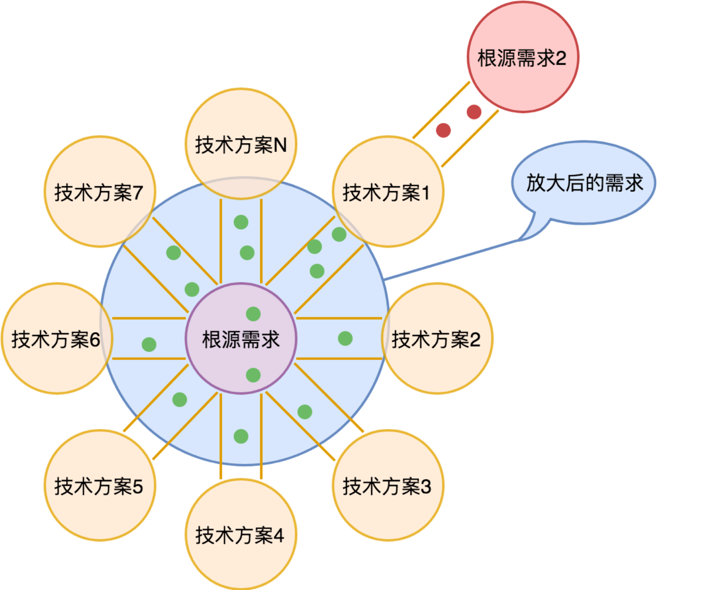
如上图所示，根源需求可能会有非常非常多的技术方案可以满足它。我们上面示意图中的小圆点是一个个用户反馈的需求。在用户提这些需求的时候，往往可能会带着他熟悉的技术方案的烙印。
对于那些我们明显不关心的需求，如上图的小红点，相对容易排除在外。毕竟产品的边界意识大家还是会有的，产品不可能无限制膨胀下去。
但是对于上面的小绿点，决策上就比较难了。不做？可能会丢了这个客户。做？如果我们手放宽一点，最后产品需求就会被放大（如上图中蓝色的圆圈），做出一个四不像的产品。
最后，在理清楚需求后，要对需求进行归纳整理。 一方面，将需求分别归类到不同的子类别中。另一方面，形成需求的变化点和稳定点的基本判断。
前面我们也强调过：在需求分析时，要区分需求的变化点和稳定点。稳定点往往是系统的核心能力，而变化点则需要对应地去考虑扩展性上的设计。
要注意的是，在讨论需求的变化点和稳定点的时候，我们需要有明确参考的坐标系。在不同视角下，稳定点和变化点的判断是完全不同的。
所以需要明确的一点是，当我们说需求的变化点和稳定点时，这是站在我们要设计的产品角度来说的。
比如我们要设计一台计算机，那么多样化的外部设备是一个变化点。但是如果我们今天是在设计一台显示器，问题域就完全变了，需求的变化点和稳定点也就完全发生了变化。
本质上来说，对变化点的梳理，是一次产品边界的确立过程。所谓的开放性设计，就是说我把这个功能交给了合作伙伴，但是我得考虑怎么和合作伙伴配合的问题。
开放性设计并不是一个纯粹的用户需求问题，它通常涉及技术方案的探讨。因此，产品边界的确立不是一个纯需求，也不是一个纯技术，而是两者合而为一的过程。
对变化点的梳理至关重要。产品功能必须是收敛的，必须是可完成的。
如果某个子类别的需求呈现出发散而无法收敛的趋势，这个事情，团队一定要坐下来一起去反复推敲。不断拷问，不断明确响应需求的正确姿势到底为何。
产品定义
需求分析的目标和最终结果，都是要最终形成清晰的产品定义。产品定义并不是简单的产品需求的归类。
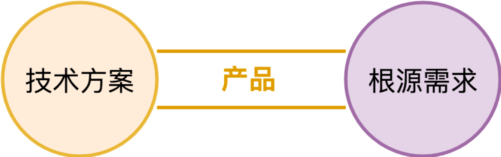
上面我也说过，产品是桥，它一端连接了用户需求，一端连接了先进的技术。所以产品定义不可能做到和技术方案完全没关系。
首先，需要明确产品中有哪些元素，或者叫资源，以及这些资源的各类操作方式。 如果我们从技术的视角来理解，这就是定义对象和方法。当然这仅仅是这么理解，实际上一个我们技术上的对象方法，从产品需求角度会有多条路径的操作方式来达到相同的目的。
其次，需要对产品如何满足用户需求进行确认。 用户的使用场景未必全部是我们的产品所能直接满足的，面向特定的行业，有可能需要相应的行业解决方案，把我们的产品整合进去。- 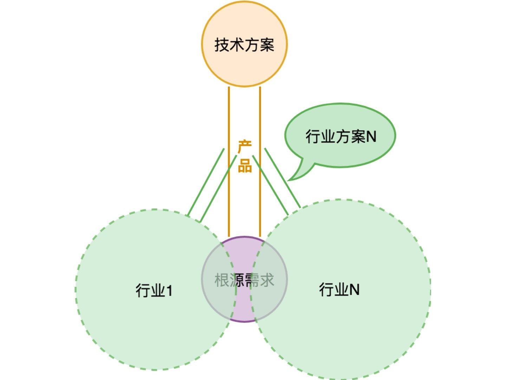- 我们要避免把行业方案视作产品的一部分。更多的情况下，需要我们更加开放的心态来看待这件事情，优先寻找合作伙伴来一起完成这类行业的需求覆盖。
最后，产品定义还需要考虑市场策略，我们的产品如何进入市场，和既有市场格局中的其他主流解决方案的关系是什么样的。
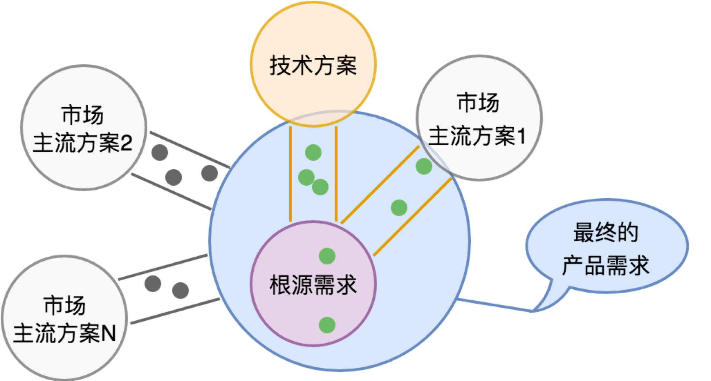
我们希望获取的用户，可能大部分都已经有一个既有的产品和技术方案，在满足他的需求。在考虑如何让客户从既有方案迁移到我们的产品后，我们确定产品的边界时又会复杂很多。
在一些极其关键的市场，我们有可能会把迁移需求视作产品需求的一部分。但更多的情况下，我们产品上只为这些市场上的主流方案提供迁移路径，而不是完整的迁移方案。
为何架构课从基础平台开始？
很抱歉我说得很抽象，但是总结需求分析的方法论的确是一件很难的事情。
为什么我们谈架构会从 “基础平台” 讲起？为什么从硬件架构，到编程语言，再到操作系统，我们似乎绕了一大圈，还没有谈到架构？
有两个原因。
最直接的原因是 “基础平台” 是我们所依赖的环境，是我们应用的业务架构的一部分。越了解我们所处的环境，我们就越能够运用自如。
但还有一个重要的原因是架构的探讨容易过度抽象。 所以我并没有先长篇大论谈架构方法论，谈需求应该怎么怎么去分析，而是围绕着基础平台的演进过程来谈需求分析。
信息世界的构建过程，本身就是一个最宏大的架构实践。我们通过对信息世界的骨架构成的参悟，自然能够感悟到架构思维的要点。
学内功需要悟心，学架构也需要悟心。怎么准确研判需求，对需求演进进行预测，这并不是靠技术技能，而是靠谦和求取的心态。
所以我们第一章 “基础平台” 篇整体来说，内容介绍以产品的需求分析为主、核心技术原理为辅。我们尝试把整个基础平台融为一个整体，宏观上不留任何疑惑。
实际上这一章的内容很难做到只看一遍就可以，可能要时时看，反复看。还需要查阅一些资料，也可以与人一起探讨。当然，我们也欢迎留言一起交流。
这一章我们介绍的内容，大部分内容都有一些对应的经典书籍，在后面 “基础平台篇: 回顾与总结” 一讲中，我也会给大家推荐一些经典的图书。
但我们并不是要重复这些书籍中的内容。** 我们的关注点在于：一是构建信息世界的宏观骨架，二是需求演进。**
经典书籍虽然好，但是它们写作时候的历史背景和今天有很大不同。从架构视角来说，结合我们今天的现实情况来看，一方面我们可以总结今天区别于当初的所有变化，另一方面主动去思考为什么发生了这样的变化。以这样的视角去读经典书籍，会别有一番滋味。
结语
在我们介绍完第一章 “基础平台” 篇的所有内容后，今天我们终于正式开始谈架构思维。我们探讨的是架构的第一步：需求分析。
需求分析并不是纯技术的东西，和编程这件事情无关。它关乎的是用户需求的梳理、产品的清晰定义、可能的演变方向。
怎么提升需求分析能力，尤其是预判能力？
首先，心态第一，心里得装着用户。除了需要 “在心里对需求反复推敲” 的严谨态度外，对用户反馈的尊重之心也至关重要。
其次，对问题刨根究底，找到根源需求。
最后，对需求进行归纳整理。一方面，将需求分别归类到不同的子类别中。另一方面，形成需求的变化点和稳定点的基本判断。
需求分析的目标和最终结果，都是要最终形成清晰的产品定义。产品定义将明确产品的元素，明确产品的边界，与产业上下游、合作伙伴的分工。
为什么我们的架构课从日常最平常之处，我们日日接触的基础平台讲起？
你真了解它们吗？你真感悟到它们的不凡之处了吗？
学习架构，关键在于匠心与悟心。
用思考的方式去记忆，而不是用记忆的方式去思考。
如果你对今天的内容有什么思考与解读，欢迎给我留言，我们一起讨论。下一讲将是 “架构: 需求分析（下）· 实战案例”。
如果你觉得有所收获，也欢迎把文章分享给你的朋友。感谢你的收听，我们下期再见。
18 架构：需求分析 (下) · 实战案例
你好，我是七牛云许式伟。
今天，我们继续上一讲关于架构第一步 “需求分析” 的讨论。为了能够获得更加具体的观感，我们选了两个实战的案例，如下：
- 打造 “互联网”；
- 存储新兵 “对象存储”。
案例: 打造 “互联网”
从对信息科技的影响面来说，最为标志性的两个事件，一个是计算机的诞生，另一个是互联网的诞生。
我们前面在 “[05 | 思考题解读: 如何实现可自我迭代的计算机？]”这一讲中，已经剖析过一个 MVP 版本的计算机是什么样的。
今天，我们就以 “互联网” 这个产品为题，看看应该怎么去做需求分析。
我们想象一下，把我们自己置身于互联网诞生之前。互联网并不是第一张网。在此之前的信息世界中，更多的是某个企业专用的局域网。不同的企业会选择不同公司所提供的网络方案。这些网络方案缺乏统一的规划，彼此并不兼容。
那么，怎么才能打造一个连接人与人、企业与企业，甚至是物与物，能够 “连接一切” 的 “互联网”？
首先，从根源需求来说，我们期望这不是某个巨头公司的网，也不是政府的网。这是需求的原点，这一点上的不同，产生的结果可能就很不一样。
如果我们忽略这一点，就有可能会把它做成微信网（WechatNet），或者中国网（ChinaNet）。它们可能会是一张巨大的网，但都不是 “互联网”。
所谓 “互联网” 首先应该是一张开放的网。它应该可以让很多国家很多公司参与其中，形成合力。它不应该存在 “造物主”，一个可以在这张网络中主宰一切的人。
开放，最基础的层次来说，意味着需要定义网络协议标准，尤其是跨网的数据交换标准。这里的跨网，指的是跨不同的网络设备，不同的网络运营商。
开放，从另一个角度来说，是对应用程序软件的开放。想要 “互联网” 真正能够连接一切，只是把物理的网络连接在一起是不够的，还要有能够丰富的 “连接一切” 的应用。
为了能够让更多应用可以更便捷地连接网络，我们需要提供方便应用接入的高层协议。这个协议需要屏蔽掉网络连接的复杂性（丢包重传等）。
但这还不够。“互联网” 这样的基础设施，启动阶段没有应用去吸引用户是不行的。所以我们需要 “吃自己的狗粮”，开发若干互联网应用的典型代表。
有一些需求可能非常非常重要，但是我们需要阶段性放弃，例如安全。加密传输并没有作为互联网的内建特性，这极大降低了互联网的实施难度。
从另一个角度考虑，为什么不把安全放在最底层，也要考虑方案的可持续性。一个安全方案是否能够长期有效，这非常存疑。
但是物理网络一旦存在，就很难做出改变（想想我们从 IPv4 过渡到 IPv6 需要多少年吧）。所以从这个角度来说，我们也不希望安全是一个网络的底层设施。
这并不意味着安全问题可以不解决，只是把这事儿留给了软件层，留给操作系统和应用程序。这是一个极其明智的选择。相比物理网络而言，软件层更加能够经受得起变更。
总结来说，要想把 “互联网” 这个项目做成，需要考虑这样一些事情。
- 一个能够连接所有既有网络的协议标准，我们不妨叫它互联网协议（Internet Protocol），简称 IP 协议。
- 一张连接城市的骨干网络，至少有两个城市互联的试点。
- 打通骨干网络和主流企业专用网络的路由器。
- 一套方便应用开发的高阶网络协议，工作在 IP 协议之上。
- 一份支撑互联网应用程序的基础网络协议栈源代码或包（package），方便主流操作系统厂商、网络设备厂商集成。
- 若干典型互联网应用，如电子邮件（Email）、万维网（WWW）等。
- 一份安全传输的网络协议方案（远期），及其源代码或包（package）。
让我们先来看下物理网络的构建。
首先，构建骨干网络。不同城市可以由若干个骨干网路由器相连。骨干路由器可以看做是由一个负责路由算法的计算机，和若干网络端口构成，如下图所示。
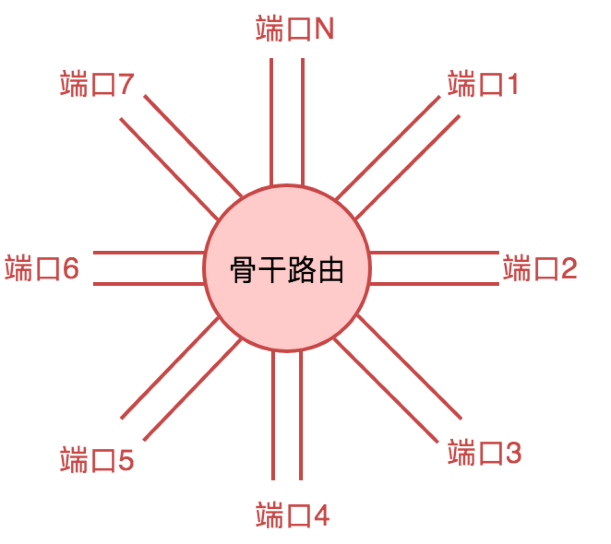
每个端口可能和其他城市相连，也可能和该城市内的某些大型局域网相连。一个局域网和城际网络从抽象视角看，没有非常本质的不同，只不过是采用的网络技术有异，使用的网络协议有异。
一个局域网可以简化理解为由若干台交换机连接所有的计算机设备。而交换机同样也可以看做是由一个负责路由算法的计算机，和若干网络端口构成，如下图所示：
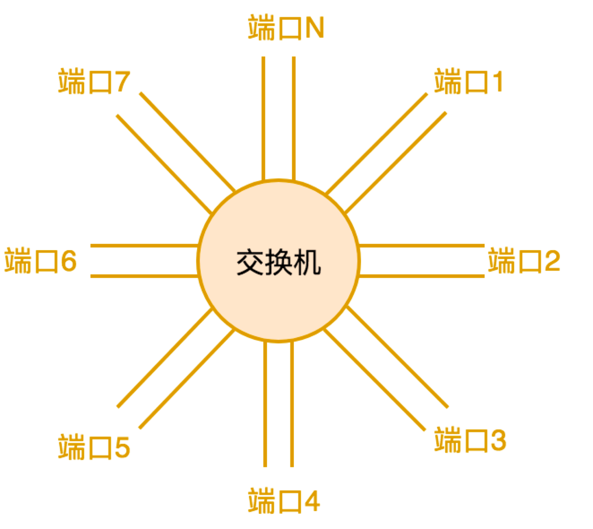
剩下的问题是怎么对接骨干网络和局域网。这需要有人负责进行网络协议转换，它就是路由器。一台路由器上有两类端口，一类端口为本地端口，连接局域网内的设备，比如交换机，或者直接连普通的计算机。另一类端口为远程端口，负责接入互联网。
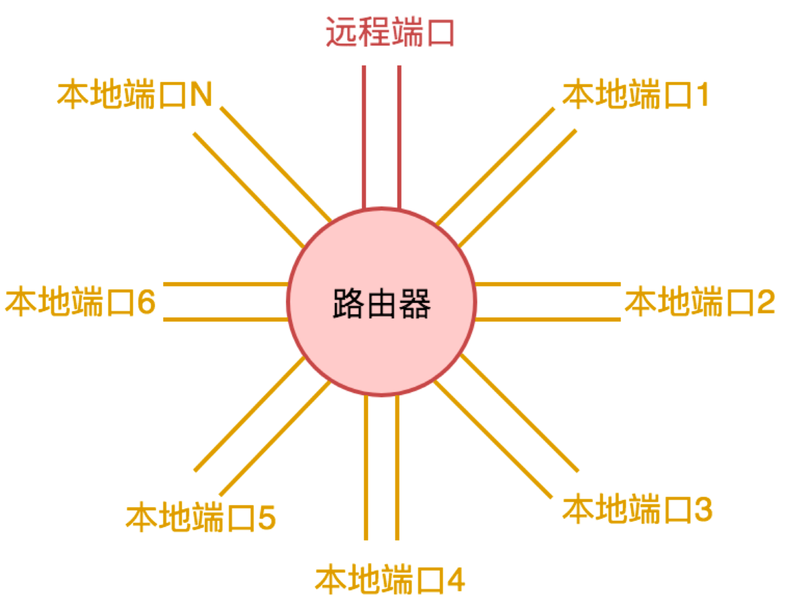
理清楚了物理网络后，我们再来看应用构建。我们打算打造两个杀手级应用（Killer Application）：电子邮件（Email）和万维网（WWW）。
在考虑应用的用户交互体验时，我们发现，物理网络能够处理的 IP 地址，和人类方便记忆的地址非常不同，故而我们决定引入域名（domain）作为人与人交流用途的地址。为此，我们引入了 DNS 地址簿协议，用于将域名解析为物理网络可理解的 IP 地址。
综上分析，最终我们得到 MVP 版本的 Internet 项目的各子系统如下：
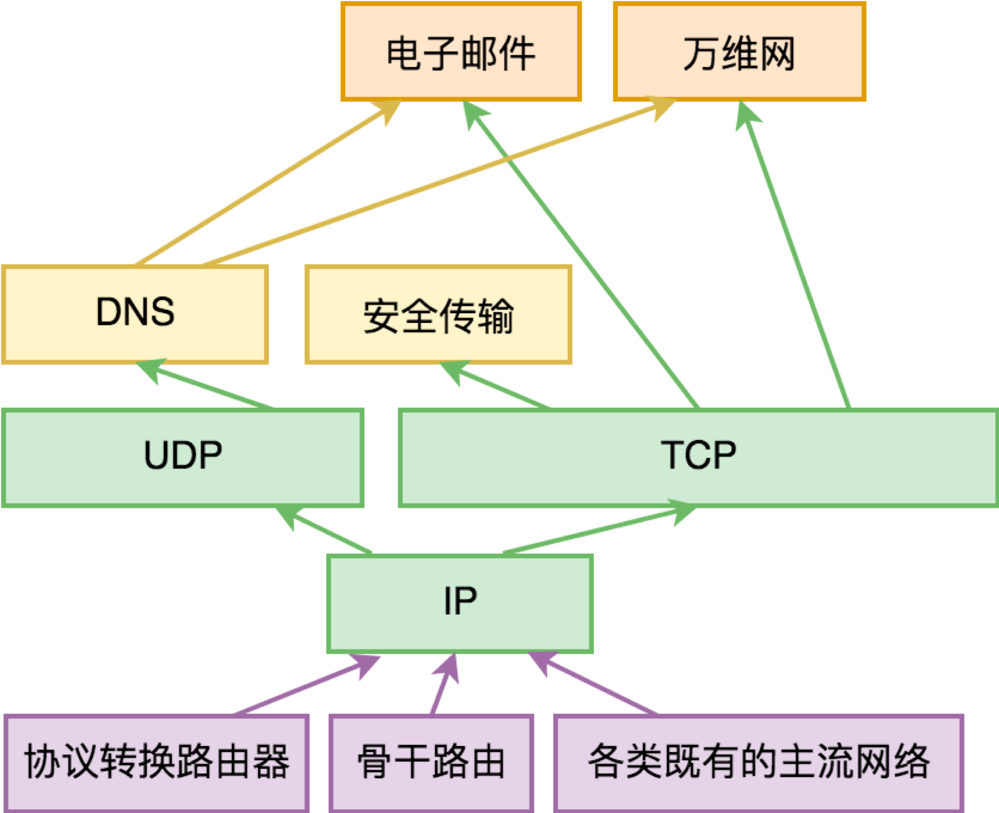
案例: 存储新兵 “对象存储”
对象存储是非常新兴的一种存储系统。是什么样的需求满足方式的变化，导致人们要创造一种新的存储呢？
对象存储是伴随互联网的兴起，尤其是移动互联网的兴起而产生的。
首先，互联网应用兴起，软件不再是单机软件，用户在使用应用软件的过程中产生的数据，并不是跟随设备，而是跟随账号。 这样，用户可以随心所欲地切换设备，不必考虑数据要在设备间倒来倒去的问题。
数据跟随账号，这是互联网应用的第一大特征，区别于单机软件的关键所在。
其次，用户交互方式的变化。 用户不再打字用纯文本沟通，而是用照片、视频、语音等多媒体内容来表达自己的想法。
移动化加剧了这一趋势，在手机上打字是非常痛苦的事情。拍拍照、拍拍视频、说说话（语音输入）更加符合人的天性，尤其是手机用户覆盖面越来越宽，大部分用户属于没有经过专业培训的普通用户，这些手段是最低准入门槛的交互方式。
最后，用户体验诉求的提升。 计算机显示器早年是黑白的，后来有了256色，有了真彩色（TrueColor）；显示器的屏幕分辨率，也从320x240，到640x480，到今天我们再也不关心具体分辨率是多大。随之发生变化的，是一张照片从100K，到几兆，到几十兆。
这些趋势，对存储系统带来的挑战是什么？
其一，规模。 那么多用户的数据，一台机器显然放不下了，要很多很多台机器一起来保存。
其二，可靠。 用户单机对存储的要求并不高，机器硬盘出问题了，不会想着找操作系统厂商或者软件应用厂商去投诉。但是，用户数据在服务端，数据丢了那就是软件厂商的责任，要投诉。
其三，成本。 从软件厂商来说，那么多的用户数据，怎么做才能让成本更低一些。
其四，并发吞吐能力。 大量的用户同时操作，有读有写，怎么保证系统是高效的。
另外，从存储系统的操作接口来说，我们分为关系型存储（数据库，结构化数据）和文件型存储（非结构化数据）。我们今天的关注点在文件型存储上。
对于文件型存储来说，相关的备选解决方案有很多，我们简单罗列如下。
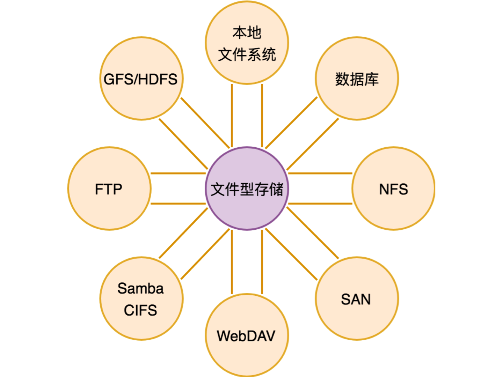- 第一类是大家最熟悉的、最古老的存储系统：本地文件系统。 虽然有很多种具体的实现方案，但是它们的使用接口大同小异，实现方案也只是在有限的几种选择中平衡。我们在 “[09 | 外存管理与文件系统]” 这一讲中已经有过详细的介绍，这里不提。
第二类是网络文件系统，可以统称为 NAS，如上面的 NFS、FTP、Samba（CIFS）、WebDAV，都只是 NAS 存储不同的访问接口。
第三类是数据库，它通常用于存储结构化数据，比较少作为文件型存储。但也有人在这么做，如果单个文件太大，会切成多个块放到多行。
第四类是 SAN，它是块存储。块存储和关系型存储、文件型存储都不同，它模拟的是硬盘，是非常底层的存储接口。很少会有应用直接基于块存储，更多的是 mount 到虚拟机或物理机上，然后供应用软件需要的存储系统使用。
第五类是分布式文件系统 GFS/HDFS。GFS 最早是为搜索引擎网页库的存储而设计，通常单个文件比较大，非常适合用于日志类数据的存储。这也是为什么 Hadoop最后从大数据领域跑出来，原因就是因为大数据处理的就是日志。
你可以看到，除了数据库和 SAN，我们不用细分析就知道它们不是文件型存储的最佳选择，其他几类包括本地文件系统、NAS、GFS/HDFS 有一个共同特征，就是它们的使用接口都是文件系统（FileSystem）。
那么，我们就来看下文件系统（FileSystem）对于大规模的文件型存储来说有什么问题。
最大的问题是，文件系统是一棵树（Tree）。除了对单个文件的操作只需要锁住该文件外，所有对树节点的修改操作，比如把 A 节点移到 B 处，都是一次事务操作，需要锁住整棵树。
这对规模和并发吞吐能力都是伤害。从规模来说，分布式事务是很难的（这也是为什么分布式数据库很难做的原因），做出来性能也往往好不到哪里去。从并发吞吐能力来说，如果系统存在大锁，即在锁里面执行费时的操作，就会大幅降低系统的并发吞吐能力。
传统的 NAS 出现比较早，所以它没有考虑“大规模条件下存储会有什么样的挑战”是非常正常的。
GFS/HDFS 为什么没有考虑大规模问题？这是 Google 设计 GFS 的背景导致的，网页库存储，或者日志型存储的共同特征是单个文件很大，可以到几个 G 级别，这样的话文件系统的元数据就会减少到单台机器就可以存储的级别。
所以对象存储出现了。它打破了文件型存储访问接口一定是文件系统（FileSystem）的惯例。它用的是键值存储（Key-Value Storage）。
从使用接口来说，首先选择文件所在的桶（Bucket），它类似于数据库的表（Table），只是一个逻辑划分的手段；然后选择文件的键（Key），就可以存取文件了。
这意味着文件之间并不存在关联（树型结构是文件之间的一种关联），可以通过某种算法将文件元信息分散到不同的机器上。
那么为什么文件型存储，不必考虑文件之间的关联？因为关系都在数据库里面，文件型存储只需要负责文件内容的存储，有个键（Key）能够找到文件内容即可。
从本质上来说，这是因为服务端和桌面软件面临的用户场景是完全不同的。文件系统是在桌面软件下的产物，桌面系统是单用户使用的，没有那么高的并发访问需求。
服务端一上来就面临着并发访问的问题，所以很早就出现了数据库这样的存储中间件。数据库的出现，其实已经证明文件系统并不适合服务端。只不过因为文件型存储在早期的服务端开发的比重并不大，所以没有被重视。
但是，互联网的发展极大地加速了文件型存储的发展。互联网增加的 90% 以上的数据，都是非结构化数据，包括图片、音频、视频、日志。
对象存储能够支撑的文件数量规模上非常非常大。比如七牛云存储，我们已经支持万亿级别的文件。
这在传统 NAS 这种基于文件系统访问接口的存储是难以想象的，我们看到的 NAS 存储 POC 测试要求，基本上都是要能够支持 1-2 亿级别的文件存储规模。
另外，对象存储的高速发展，很大程度上会逐步侵蚀 Hadoop 生态的市场。因为 HDFS 这种日志型存储，其实只是对象存储里面的一个特例。在人们习惯了对象存储后，他们并不希望需要学习太多的存储系统；所以大数据的整个生态会逐步过渡到以对象存储为基石。
这已经发生了。这两年你可能也能够听到，Hadoop 生态的公司活得挺不好的，几家公司合并了也没有解决掉没落的问题。这和大数据生态向对象存储迁徙是分不开的，只不过这方面我们国内还处在相对比较落后的阶段。
案例分析
通过对打造“互联网”和存储新兵“对象存储”这两个案例的分析，我们可以看出不同市场差异还是很大的。“互联网” 这个产品它并不是替换某种既有的方案，而是把既有的方案连接在一起。所以 “互联网” 的历史包袱很少，基本上不太需要考虑历史问题。
“对象存储” 产品则不同。在对象存储之前，存储已经经历了很长时间的发展。只不过因为文件型的数据爆发式的增长，带来了存储系统的新挑战，从而给对象存储这样的新技术一个市场机会。
当然，另外一个原因是云服务的诞生，让存储有了新的交付形态。我们不再需要拿着硬件往用户家里搬，这就出现了一个新的空白市场。
但是解决了空白市场的需求后，对象存储还是要面临 “既有市场中用户采用的老存储方案怎么搬迁” 的问题。所以存储网关这样的产品就出现了。存储网关做什么？简单说，就是把对象存储包装成 NAS，提供 NFS、FTP、Samba（CIFS）、WebDAV 这些访问接口给用户使用。
结语
需求分析相关的讨论就到此结束了。不同市场差异非常大，并不存在大一统的产品定义和市场策略，需要具体问题具体分析。
如果你对今天的内容有什么思考与解读，欢迎给我留言，我们一起讨论。下一讲将是我们第一章的回顾与总结。
如果你觉得有所收获，也欢迎把文章分享给你的朋友。感谢你的收听，我们下期再见。
19 基础平台篇：回顾与总结
你好，我是七牛云许式伟。
到今天为止，我们第一章 “基础平台篇” 就要结束了。今天，让我们对整章的内容做一个回顾与总结。
抽象信息世界的骨架
基础平台篇主要涉及的内容如下。
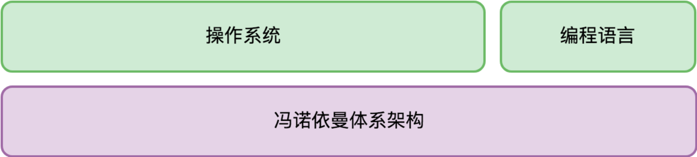
这些内容如果展开来讲，每一系统（或模块）都会是很厚的一本书。我们的目的，当然不是为了取代这里每一个领域知识相关的专业书籍。
我们的核心目标是以架构为导向，抽象出系统的骨架，融会贯通，把这些领域知识串起来，拼出完整的信息世界的版图。
抽象出系统骨架的过程时信息必然是有损的，怎么才能做到忽略掉众多的实现细节，把系统以简洁易于理解的方式呈现出来？
这很大程度取决于你对系统的理解程度和抽象能力。如果我们把系统想象成一个人，大部分情况下我们比较容易对其进行详尽而具体的描述，好比下图。
这相对容易。因为你只需要陈述你看到的事实，而不必拷问背后的原因。但实际上为了在最短的时间里让别人理解你的想法，你也许应该这样来描述它，见下图。
当你不是在描述这个系统本身，而是描述它与其他系统的相互关系时，你可能需要进一步简化它，变成如下图这样。
抽象有助于记忆，因为骨架需要逻辑的自洽。
这种抽象能力之所以重要，是因为它是融会贯通、疏通整个信息世界的知识脉络的关键。当你做到对世界的认知可宏观、可微观，自然一切皆在掌握。
比如，本章我们首先介绍的是冯·诺依曼体系结构，我们把它抽象为“中央处理器（CPU）+ 存储 + 一系列的输入输出设备”，并给出了系统的示意图如下。
这个图相当笼统，并没有涉及中央处理器（CPU）指令设计的真正细节。比如，我们没有介绍栈（stack）这个概念，虽然它实际上也非常关键。
为什么需要引入栈？它在中央处理器中起到了什么样的作用？
要了解这个问题，你就需要深入到中央处理器的架构设计中去。如果你对梳理中央处理器的架构设计感兴趣，可以尝试写一篇介绍它的文字。
做这样的事情会对你非常的锻炼。** “你自己理解一个事物”和“把你的理解表述成文，去引导其他人也能够理解它”**，是完全不同难度的事情。
如果你对中央处理器的设计细节感兴趣，可以进一步查阅相关的参考资料。也欢迎与我分享你的心得体会。
基础平台篇的内容回顾
这一章前面我们讲了些什么？为了让大家对第一章内容有个宏观的了解，我画了一幅图，如下。
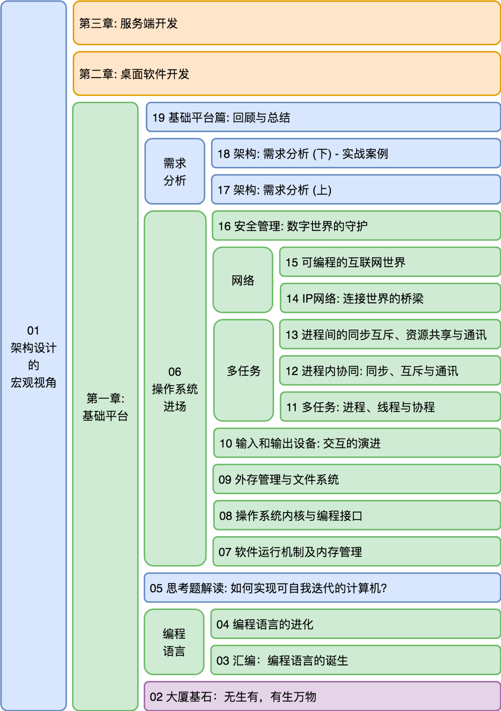
首先，我们介绍了冯·诺依曼体系结构。 从需求演进角度看，虽然我们信息科技发展日新月异，但是底层设计并没有发生过变化，非常稳定。从这一点来说，我们不能不佩服他们的远见。
随后，我们介绍了编程语言的演进。 从汇编语言的诞生，出现了程序员这个新职业开始，此后编程语言的演进便进入高速发展期。
然而，尽管语言很多，但是编程范式的演进却并不剧烈。大家熟知的过程式、函数式、面向对象基本上能够把几乎所有的语言都囊括其中。Go 语言独树一帜地宣称自己是面向连接的语言，我们着重对比了面向对象与面向连接思想上的差异。
编程语言本身与业务架构的设计关联性不大，虽然模块规格的描述会借助语言的文法。** 但是语言长期演进所沉淀下来的社区资源，是我们架构设计所依赖的重要基础。** 充分利用好这些资源可以大大降低系统的研发成本。
最后，我们开始聊操作系统。 从 UNIX => DOS => Windows/Mac/Linux => iOS/Android，从用户交互、进程管理、安全管理等角度看，操作系统的需求演变非常剧烈。
传统操作系统主要包含五个子系统：设备管理（包括存储设备、输入/输出设备、网络设备）、进程管理和安全管理。
输入/输出设备主要和交互有关，我们概要描述，基本上一笔带过。我会在后面 “桌面软件开发” 这一章再详加讨论。而服务端的交互比较简单，命令行基本上就满足需求，所以 “服务端开发” 一章我们不会再特意去展开。
另外，操作系统的商业模式也发生了剧烈的变化。
早期操作系统的营收模式以软件销售收入为主。但是从苹果的 iOS 开始，操作系统都无一例外地增加了以下三个模块：
- 账号（Account）；
- 支付（Pay）；
- 应用市场（AppStore）。
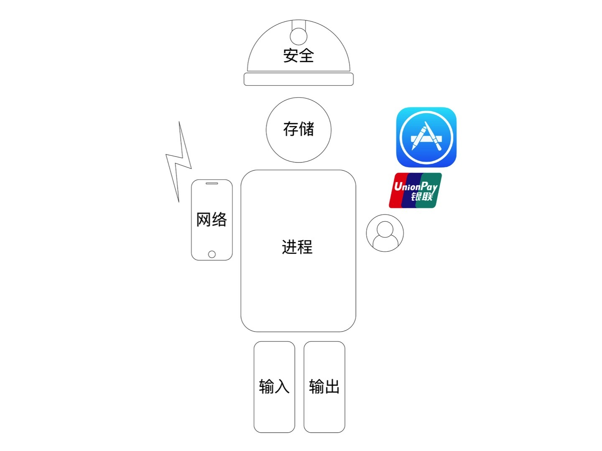
注意，这里我们说的账号是指互联网账号。传统操作系统虽然也有账号概念，但是，它是本地账号，属于多用户权限隔离所需。
而互联网账号的价值完全不同，它是支付和应用商店的基础。没有账号，就没有支付系统，也没有办法判断用户是否在应用市场上购买过软件。
实现了“帐号-支付-应用市场”这样的商业闭环，意味着操作系统的商业模式，从软件销售转向了收税模式。这类操作系统，我们称之为现代操作系统。所有现代操作系统，所凭借的都是自己拥有巨大的流量红利。
基础平台篇的参考资料
概要回顾了我们 “基础平台篇” 的内容后，我们这里补充一下有助于理解我们内容的相关资料，如下。
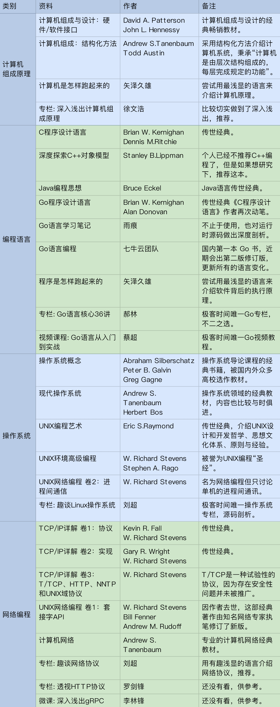
有了本专栏梳理的骨架，相信对你学习和理解以上这些材料会一定的指引意义。
如果你有什么推荐的优秀参考资料，也欢迎在留言区分享，我补充到这个表格中来，我们一起来完善它。
架构之美在于悟
信息世界是无中生有创造出来的，我们不需要去记忆，而是要找到创造背后的骨架和逻辑。
架构即创造。
学架构在于匠心和悟心。它靠的是悟，不是记忆。** 用思考的方式去记忆，而不是用记忆的方式去思考。**
我们日常所依赖的基础平台，随处可见的架构之美，看到了，悟到了，就学到了。 如果你只能从你自己写业务代码中感受架构之道，那么你可能就要多留些心思了。
比如，如果你日常用的是 Go 语言，那么你可以做一个作业：“谈谈 Go 语言之美”。你从Go语言的设计中感悟到了什么样的架构思维？当然如果你不常接触 Go 语言，可以给自己换一个题目，比如 “Java 语言之美”。
作为架构师，如何构建需求分析能力，尤其是需求的预判能力？
首先，归纳总结能力很重要。 分析现象背后的原因，并对未来可能性进行推测。判断错了并不要紧，分析一下你的推测哪些地方漏判了，哪些重要信息没有考虑到。
另外，批判精神也同样至关重要。 批判不是无中生有的批评，而是切实找到技术中存在的效率瓶颈和心智负担。尤其在你看经典书籍的时候，要善于找出现状与书的历史背景差异，总结技术演进的螺旋上升之路，培养科学的批判方法论。
结语
今天我们对本章内容做了概要的回顾，并借此对整个基础平台的骨架进行了一次梳理。
我们最为依赖，也最为强调的，是抽象能力。它对于构建信息世界的骨架至关重要。为此我们需要不断改造自己的抽象体系。例如，前面 “[02 | 大厦基石：无生有，有生万物]” 这一讲中提到过：
引入了输入输出设备的电脑，不再只能做狭义上的“计算”（也就是数学意义上的计算），如果我们把交互能力也看做一种计算能力的话，电脑理论上能够解决的“计算”问题变得无所不包。
有同学留言问：输入/输出设备提供的明明是一种 IO 能力，怎么能够算得上是“计算”？
但是实际上，我们人类其实就是在这种“否定自己，不断延展自己的抽象体系”，补全自己的想象力。我们以数学中最为基础的 “数” 为例子。数的演化大概经历了：
自然数 => 整数 => 有理数 => 实数 => 复数
输入/输出能力算不算是“计算”？我们不妨以广义的“计算”角度来看。
输入（Input），无非是采集物理世界的信息，将其数字化，所以一个输入设备其实可以看作是一个模数转换的“算子”。只不过这个算子非 CPU 的指令可以表达。
输出（Output），无非是将数字内容反作用于物理世界，一个输出设备其实可以看作是一个数模转换的“算子”。同样，这个算子非 CPU 的指令可以表达。
计算机 CPU 自身只能做数数转换，输入是比特信息，输出还是比特信息。结合了输入/输出设备提供的数模和模数转换的 “算子”，连接了数字世界和物理世界的计算机，在数学上也就完备了。
如果你对今天的内容有什么思考与解读，欢迎给我留言，我们一起讨论。本章到此结束，我们将开始第二章：桌面开发的宏观视角。
如果你觉得有所收获，也欢迎把文章分享给你的朋友。感谢你的收听，我们下期再见。
20 桌面开发的宏观视角
你好，我是七牛云许式伟。今天开始，我们进入第二章，谈谈桌面软件开发。
从架构的角度，无论你在什么样的终端设备（比如：PC、手机、手表、手机等等），也无论你在做 Native 应用，还是基于 Web 和小程序，我们都可以统一称之为桌面程序。
如前文所述，一个桌面程序完整的架构体系如下：
对于桌面程序，最核心的话题是交互。为了把关注点收敛到交互上，我们下面重点讨论操作系统对交互范式的设计。
从需求角度看，桌面程序的交互方式并不稳定，它的交互范式经历了很多次的迭代。
命令行交互
最早出现的交互范式是命令行交互程序。使用的交互设备为键盘+显示器。
输入被抽象为一段以回车（Enter键）为结束的文本（通常是单行文本，要输入多行文本，需要在行末输入“ \ ”对回车进行转义）。
输入方式有二：一是命令行，二是标准输入（stdin）。 输出也是文本，但输出目标可能是标准输出（stdout），也可能是标准错误（stderr）。
正常情况下，标准输出（stdout）和标准错误（stderr）都是向屏幕输出。这种情况下，肉眼并不能区分输出的内容是标准输出，还是标准错误。
命令行交互程序的输入输出可以被重定向。一个程序的输出，可以被重定向写入到文件（标准输出和标准错误可以输出到不同的文件以进行区分），也可以通过管道功能重定向为另一个程序的输入。
总结一下，命令行交互程序的结构可示意如下：
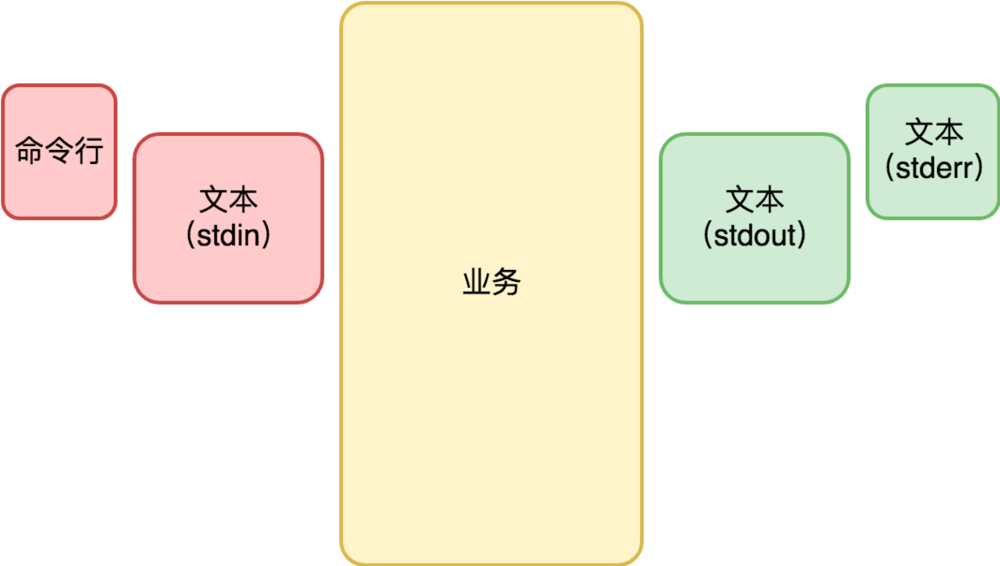
但命令行程序的限制过大了，人们很容易发现，在很多需求场景下这是非常反人类的，最典型的就是编辑器。稍微想象一下，你就会为怎么做好交互设计而头疼不已。
字符界面
于是，字符界面程序出现了。使用的交互设备仍然是键盘+显示器，但是输入不再是一段文本，而是键盘按键事件（KeyDown 和 KeyUp）。
输出也不是一段文本，而是可以修改屏幕任何位置显示的字符（屏幕被分割成M*N的格子，每个格子可以显示一个字符）。
这个时候，键盘的功用在需求上分化为两个：一是输入文本，二是输入命令（通常通过扩展键比如方向键，或者组合键比如Ctrl-A、Alt-X）。从输入文本的角度，需要有当前输入的光标（Caret）位置。
字符界面程序保留命令行输入的方式，但一般不太使用标准输入。其结构示意如下：
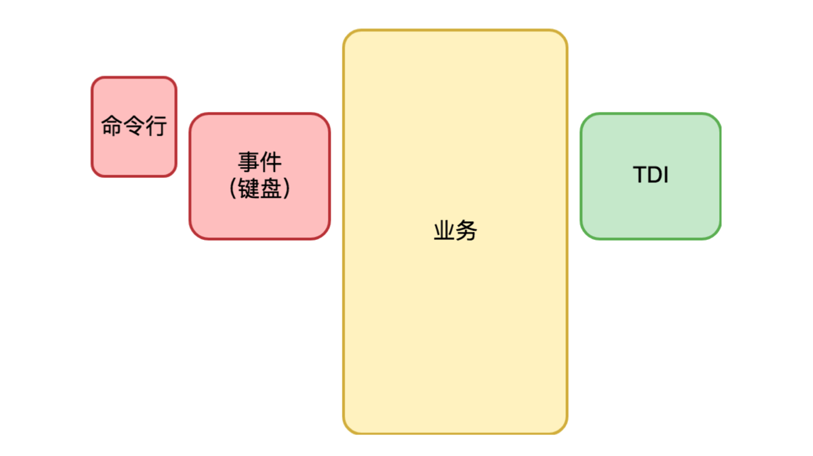- 上图的 TDI 含义是字符设备接口（Text Device Interface），它指的是一组向屏幕绘制文本的方法集合。大体看起来是这样的：
func ClearScreen()
func DrawText(x, y int, text string)
...
但是，字符界面程序也有很大的局限。最典型的需求场景是游戏。一些简单的游戏比如俄罗斯方块是可以基于字符界面做出来的，但大部分情况下，字符界面对于游戏类场景能够做的事情非常有限。
图形界面
于是，图形界面程序出现了。使用的交互设备是键盘+鼠标+显示器+音箱。从交互演进角度，这是一个划时代的变化。
与字符界面时期相比，图形界面时代变化的根源是输出的变化：从字符变成像素。屏幕被分割为精度更高的M * N的格子，每个格子显示的是一个很小很小的像素，每个像素可以有不同的颜色。
为什么会出现鼠标？因为屏幕精度太高，用键盘的方向键改变当前位置，不只是看起来非常笨拙，而且操作上也很不自然。
为什么出现音箱的原因则比较平凡，它只不过是声音设备演进的自然结果。事实上在字符交互时期声音设备就已经有了，计算机主板上有内置的喇叭。
这个喇叭最大的用途是出现重大错误（比如计算机启动失败）的时候会响几声给予提示。
开发人员可以通过向标准输出（stdout）或标准错误（stderr）输出一个特殊的字符让喇叭响一声。
前面我们说过，输出到标准输出和标准错误对肉眼来说不可区分，所以如果我们向标准错误输出文本前让喇叭响一声，也是一个不错的一种交互范式。
与字符界面程序相比，图形界面程序还有一个重大变化，是多窗口（当然，部分复杂的字符界面程序也是多窗口的，比如 Turbo C++ 3.0，它用的是 Turbo Vision 这个知名的字符界面库）。
窗口（Window），也有人会把它叫视图（View），是一个独立可复用的界面元素。复杂的窗口可以切分出多个逻辑独立的子窗口，以降低单个窗口的程序复杂性。
窗口有了父子和兄弟关系，就有了窗口系统。一旦界面涉及复杂的窗口系统，交互变得更为复杂。例如，键盘和鼠标事件的目标窗口的确定，需要一系列复杂的逻辑。
为了降低编程的负担，窗口系统往往接管了桌面程序的主逻辑，提供了一套基于事件驱动的编程框架，业务代码由窗口系统提供的界面框架所驱动。整个程序的结构如下所示。
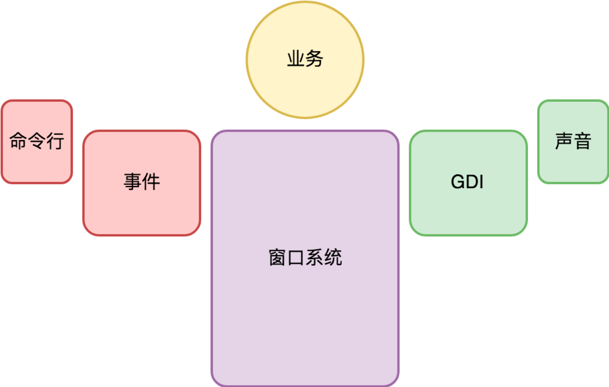
上图的 GDI 含义是图形设备接口（Graphic Device Interface），它指的是一组向指定窗口（注意不是屏幕）绘制图形的方法集合。绘制的对象包括有几何图形、图像、文本等。
此后，到了移动时代，手机成了最主流的计算机。使用的交互设备发生了变化，变成了触摸屏+麦克风+内置扬声器。
鼠标交互方式被淘汰，变成了多点触摸。** 键盘+鼠标+显示器**的能力被融合到触摸屏上。
音箱也被内置到手机中，变成内置扬声器。这些变化都因移动设备便携性的述求引起。从架构的角度，它们并没有引起实质性的变化，只是鼠标事件变成了触摸事件。
智能交互
麦克风让计算机多了一个输入：语音。 有三种典型的用法。
一是在应用内把语音录下来，直接作为类似照片视频的媒体消息，或者识别为文本去应用（比如语音搜索）。
二是作为语音输入法输入文本（逻辑上可以认为是第一种情况的特例，只不过输入法在操作系统中往往有其特殊的地位）。
三是基于类似 Siri 语音助手来交互。
语音助手是被寄予厚望的新的交互范式。它可能开启了新的交互时代，我们不妨把它叫智能交互时代。但当前它与图形界面程序结构并不相容，而是完全自成体系，如下：
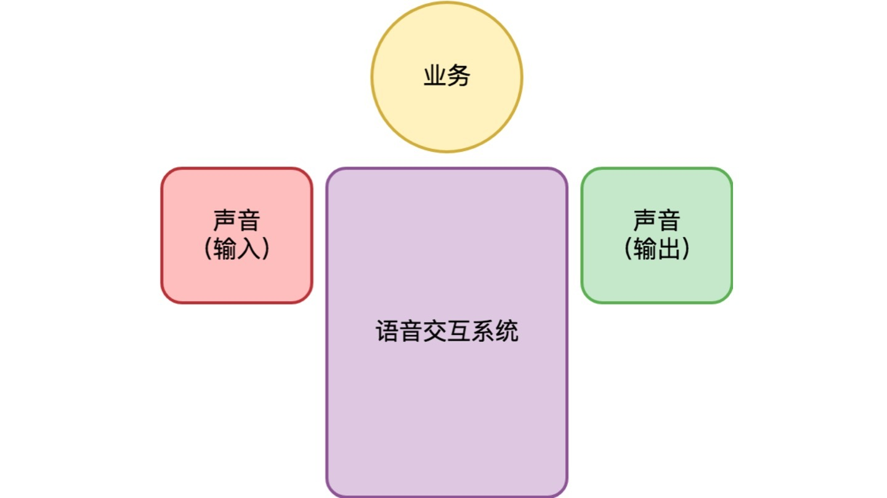
为什么语音交互和图形界面交互没法很好地融合在一起？我认为有两个原因。
一是语音交互有很强的上下文，所以语音交互程序通常其业务代码也由语音交互系统提供的框架所驱动。 框架的特点是侵入性强，框架与框架之间很难融合。
二是语音交互还不成熟，所以独立发展更简单，如果有一天成熟了，完全可以重写框架，把语音和触摸屏结合起来，形成全新的交互范式。
未来交互会怎样？智能交互很可能不会止步于语音，而是视频（同是兼顾视觉和听觉），且与触摸屏完美融合。使用的交互设备有触摸屏+摄像头+麦克风+内置扬声器。整个程序的结构如下所示。
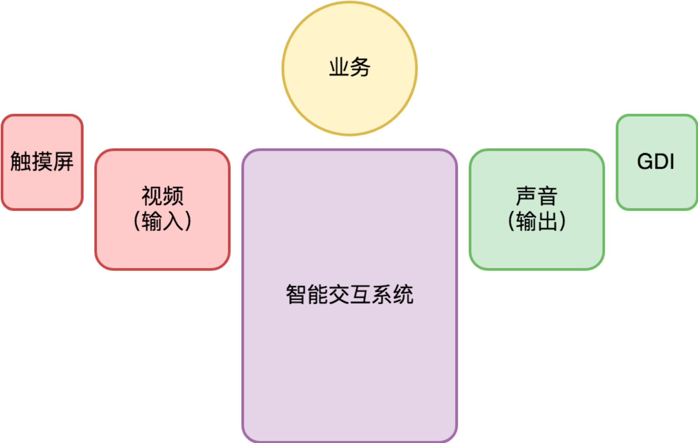
结语
通过以上对交互演化历程的回顾，我们看到交互范式的演进是非常剧烈的。交互体验越来越自然，但从编程的角度来说，如果没有操作系统支持，实现难度也将越来越高。
这也说明了一点，桌面操作系统和服务端操作系统的演进方向非常不一样。桌面操作系统的演进方向主要是交互范式的迭代，在向着越来越自然、越来越智能的交互前进。
如果你对今天的内容有什么思考与解读，欢迎给我留言，我们一起讨论。下一讲我们将介绍：“图形界面程序的框架”。
如果你觉得有所收获，也欢迎把文章分享给你的朋友。感谢你的收听，我们下期再见。
21 图形界面程序的框架
你好，我是七牛云许式伟。
上一讲我们回顾了交互的演化历程。今天，我们将关注点收敛到现在仍然占主流地位的图形界面程序。它的结构如下图所示。
实现一个图形界面程序，最大的复杂性在于不同操作系统的使用接口完全不同，差异非常巨大。这给开发一个跨平台的图形界面程序带来巨大挑战。
好在，尽管操作系统的使用接口有异，但基本的大逻辑差不多。今天我们从统一的视角来看待，谈谈图形界面程序的框架。
事件
无论是什么桌面操作系统，每个进程都有一个全局的事件队列（Event Queue）。当我们在键盘上按了一个键、移动或者点击鼠标、触摸屏幕等等，都会产生一个事件（Event），并由操作系统负责将它扔到进程的事件队列。整个过程大体如下。
- 键盘、鼠标、触摸屏等硬件产生了一个硬件中断；
- 操作系统的硬件中断处理程序收到对应的事件（Event）；
- 确定该事件的目标进程；
- 将事件放入目标进程的事件队列（Event Queue）。
窗口与事件响应
窗口（Window），也有人会把它叫视图（View），是一个独立可复用的界面元素（UI Element）。一个窗口响应发送给它的事件（Event），修改内部的状态，然后调用 GDI 绘制子系统更新界面显示。
响应事件的常见机制有两种。
一种是事件处理类（EventHandler，在 iOS 中叫 Responder）。通常，我们自定义的窗口类会直接或间接从事件处理类继承。Windows 平台有些特殊，为了让窗口类可复用，且与语言无关，它将事件处理做成了回调函数，术语叫窗口过程（WindowProc）。这只是形式上的不同，并无本质差异。
另一种是用委托（delegate）。顾名思义，用委托的意思是事件处理不是收到事件的人自己来做，而是把它委托给了别人。这只是一种编程的手法。比如，在 Web 编程中我们给一个界面元素（UI Element）实现 onclick 方法，这可以理解为是一种委托（delegate）。
有一个事件比较特殊，它往往被叫做 onPaint 或 onDraw。为什么会有这样的事件？我们想象一下，当一个窗口在另一个窗口的上面，并且我们移动其中一个窗口时，部分被遮挡的窗口内容会显露出来。
这个过程我们可能觉得很自然，但实际上，操作系统并不会帮我们保存被遮挡的窗口内容，而是发送 onPaint 事件给对应的窗口让它重新绘制。
另外，不只是窗口可以响应事件，应用程序（Application）也可以。因为有一些事件并不是发送给窗口的，而是发给应用程序的，比如：本进程即将被杀死、手机低电量告警等等。
当然如果我们约定一定存在一个主窗口（Main Window），那么把应用程序级别的事件理解为是发给主窗口的也可以。
事件分派
事件是怎么从全局的事件队列（Event Queue）到窗口的呢？
这就是事件分派（Event Dispatch）过程，它通常由一个事件分派循环（Event Dispatch Loop）来完成。一些平台把这个过程隐藏起来，直接提供一个类似 RunLoop 这样的函数。也有一些平台则让你自己实现。
例如，对于 Windows 平台，它把事件叫消息（Message），事件分派循环的代码看起来是这样的：
func RunLoop() {
for {
msg, ok := winapi.GetMessage() // 从事件队列中取出一个消息
if !ok {
break
}
winapi.TranslateMessage(msg)
winapi.DispatchMessage(msg)
}
}
大体来说，就是一个简单的取消息（GetMessage）然后对消息进行分派（DispatchMessage）的过程。其中 TranslateMessage 函数你可能比较陌生，它负责的是将键盘按键事件（onKeyDown、onKeyUp）转化为字符事件（onChar）。
窗口有了父子和兄弟关系，就有了窗口系统。一旦界面涉及复杂的窗口系统，交互变得更为复杂。事件分派过程怎么知道应该由哪个窗口响应事件呢？
这就是事件处理链（EventHandler Chain）。
不同事件的分派过程并不一样。
对于鼠标或者触摸屏的触摸事件，事件的响应方理应是事件发生处所在的窗口。但也会有一些例外的场景，比如拖放。为了支持拖放，Windows 系统引入了鼠标捕获（Mouse Capture）的概念，一旦鼠标被某个窗口捕获，哪怕鼠标已经移出该窗口，事件仍然会继续发往该窗口。
对于键盘事件（onKeyDown/onKeyUp/onChar），则通常焦点窗口先响应，如果它不感兴趣再逐层上升，直到最顶层的窗口。
键盘从功能上来说，有两个不同的能力：其一是输入文本，其二是触发命令。 从输入文本的角度来说，要有一个输入光标（在Windows里面叫Caret）来指示输入的目的窗口。目的窗口也必然是焦点窗口，否则就会显得很不自然。
但是从触发命令的角度来说，命令的响应并不一定是在焦点窗口，甚至不一定在活跃窗口。比如Windows下就有热键（HotKey）的概念，能够让非活跃窗口（Inactive Window）也获得响应键盘命令的机会。一个常见的例子是截屏软件，它往往需要一个热键来触发截屏。
到了移动时代，键盘不再是交互主体，但是，键盘作为输入文本的能力很难被替代（虽然有语音输入法），于是它便自然而然地保留下来。
不过在移动设备里，不太会有人会基于键盘来触发命令，只有常见的热键需求比如截屏、调大/调小音量、拍照等等，被设计为系统功能（对应的，这些功能的热键也被设计为系统按键）保留下来。
窗口内容绘制
在收到 onPaint 或 onDraw 消息时，我们就要绘制我们的窗口内容了，这时就需要操作系统的 GDI 子系统。
从大分类来说，我们首先要确定要绘制的内容是 2D 还是 3D 的。对于 2D 内容，操作系统 GDI 子系统往往有较好的支持，但是不同平台终究还是会有较大的差异。而对于 3D 内容来说，OpenGL 这样的跨平台方案占据了今天的主流市场，而 Vulkan 号称是 NextGL（下一代的 OpenGL），其潜力同样不容小觑。
从跨平台的难易程度来说，不同平台的 GDI 子系统往往概念上大同小异，相比整个桌面应用程序框架而言，更加容易抽象出跨平台的编程接口。
从另一个角度来说，GDI 是操作系统性能要求最高、最耗电的子系统。所以 GDI 优化往往通过硬件加速来完成，真正的关键角色是在硬件厂商这里。由此观之，由硬件厂商来推跨平台的 GDI 硬件加速方案可能会成为趋势。
通用控件
有了以上这些内容，窗口系统本身已经完备，我们就可以实现一个任意复杂的桌面应用程序了。
但是，为了进一步简化开发过程，操作系统往往还提供了一些通用的界面元素，通常我们称之为控件(Control)。常见的控件有如下这些：
- 静态文本 (Label)；
- 按钮 (Button)；
- 单选框 (RadioBox)；
- 复选框 (CheckBox)；
- 输入框 (Input，也叫EditBox/EditText)；
- 进度条 (ProgressBar)；
- 等等。
不同操作系统提供的基础控件大同小异。不过一些处理细节上的差异往往会成为跨平台开发的坑，如果你希望一份代码多平台使用，在这方面就需要谨慎处理。
结语
总结来说，桌面应用程序通常由用户交互所驱动。我们身处在由操作系统约定的编程框架中，这是桌面编程的特点。
在操作系统的所有子系统中，交互相关的子系统是毫无疑问的差异性最大的子系统。我们这里列了一个简单的对比表格：
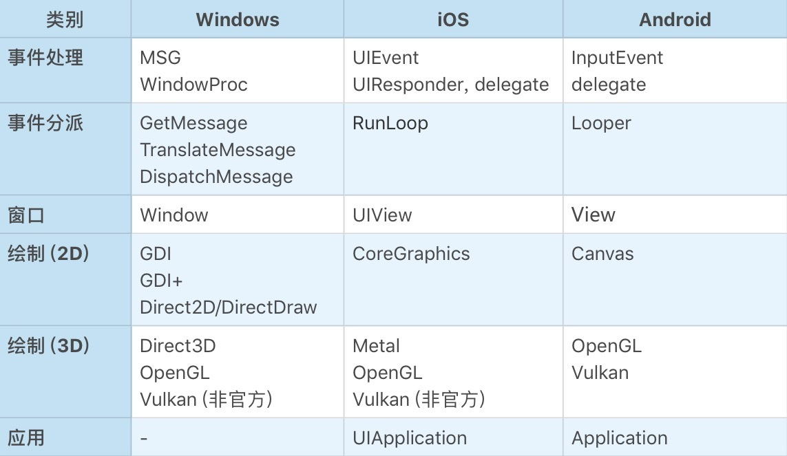
这还不是差异的全部。要做一个跨平台的桌面应用程序并不容易。我们需要面对的平台太多，简单罗列，如下所示。
- PC：Windows、MacOS、Linux 等；
- PC 浏览器：Chrome、Safri、Firefox 等；
- 手机/平板/手表：Android（不同手机厂商也会有细节差异）、iOS 等；
- 小程序：微信、支付宝、快应用等。
怎么安排不同平台的优先级？怎么规划未来版本的迭代计划？选择什么样的跨平台方案？这些问题在业务架构之外，但极其考验架构师的决策能力。
如果你对今天的内容有什么思考与解读，欢迎给我留言，我们一起讨论。下一讲我们将聊聊 “桌面程序的架构建议”。
如果你觉得有所收获，也欢迎把文章分享给你的朋友。感谢你的收听，我们下期再见。
22 桌面程序的架构建议
你好，我是七牛云许式伟。
上一讲我们介绍了图形界面程序的框架。站在操作系统交互子系统的角度来看，我们桌面应用程序的结构是下面这样的。
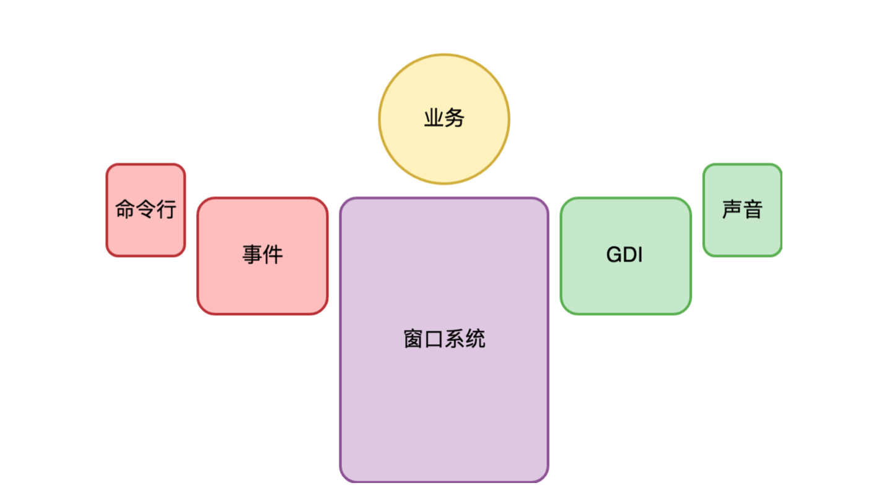
今天我们换一个角度，站在应用架构的角度，来聊聊如何设计一个桌面应用程序。
从 MVC 说起
关于桌面程序，我想你听得最多的莫过于 MVC 这个架构范式。MVC 全称是 “模型(Model)-视图(View)-控制器(Controller)”。
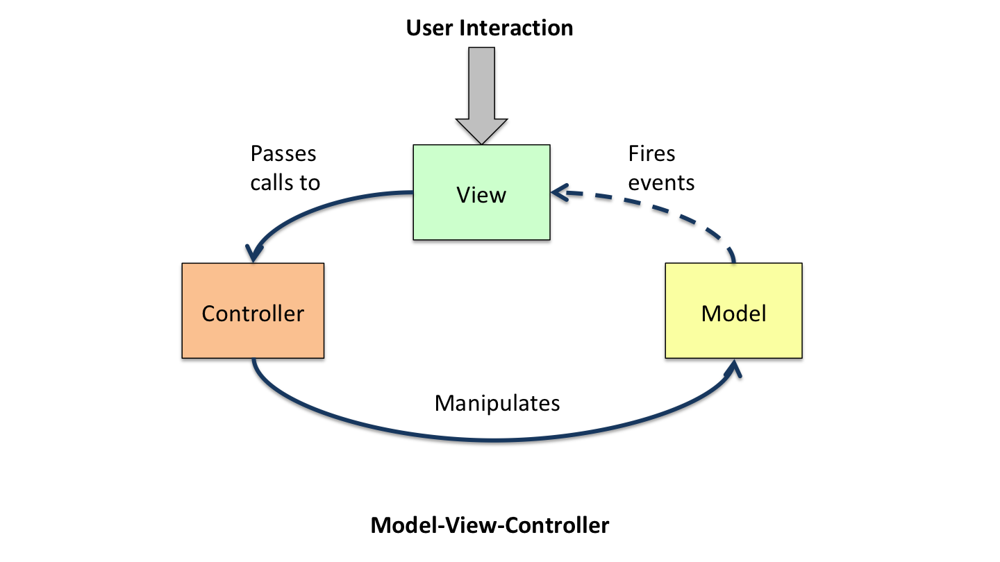- 怎么理解 MVC 呢？一种理解是，Model 是 Input，View 是 Output，Controller 是 Process，认为 MVC 与计算机的 Input-Process-Ouput 这个基础模型暗合。
但更准确的解释是：Model 是数据，View 是数据的显示结果，同时也接受用户的交互动作，也就是事件。从这个意义来说，说 Model 是 Input 并不严谨，View 接受的用户交互，也是 Input 的一部分。
Controller 负责 Process（处理），它接受 “Model + 由 View 转发的事件” 作为 Input，处理的结果（Output）仍然是 Model，它更新了 Model 的数据。
View 之所以被理解为 Output，是因为 Model 的数据更新后，会发送 DataChanged（数据更新）事件，View 会在监听并收到 DataChanged 事件后，更新 View。所以把 View 理解为 Output 也并不算错，它从数据角度看其实是 Model 的镜像。
对 MVC 模式做些细微的调整，就会产生一些变种。比如，Model 的数据更新发出 DataChanged 事件后，由 Controller 负责监听并 Update View，这样就变成了 MVP 架构。MVP 全称是 “模型(Model)-视图(View)-表现(Presenter)”。
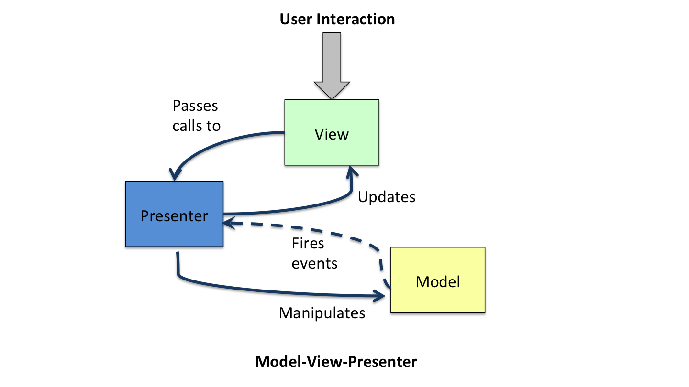
那么，我们究竟应该选择哪一种架构范式比较好？
要想判断我们写的程序架构是否优良，那么我们心中就要有架构优劣的评判标准。比较知名且重要的一些基本原则如下。
- 最低耦合原则：不同子系统（或模块）之间有最少的交互频率，最简洁且自然的接口。
- 单一职责原则：不要让一个子系统（或模块）干多件事情，也不要让它不干事情。
如果在我们心中以遵循架构法则为导向，回过头再来看 MVC，又会有不同的理解。
理解 Model 层
我们先看 Model。如果你真正理解 Model 层的价值，那么可以认为你的架构水平已经达到了较高层次的水准。因为 Model 层太重要了。
我上面说 Model 层是数据，这其实还不是太准确。更准确来说，Model 层是承载业务逻辑的 DOM，即 “文档对象模型（Document Object Model）”。直白理解，DOM 是 “面向对象” 意义上的数据。它不只是有数据结构，也有访问接口。
为了便于理解，假设我们基于数据库来实现 Model 层。** 这种情况下会有两种常见的架构误区。**
一种是直接让 Controller 层直接操作数据库，也就是拿数据库的读写接口作为 Model 层的接口。
另一种看起来高级一些，用所谓的 ORM 技术来实现 Model 层，让 Controller 直接操作 ORM。
为什么我们说这两种做法都有问题呢？原因就在于对 Model 层的价值不明。Model 层的使用接口最重要的是要自然体现业务的需求。
只有这样，Model 层的边界才是稳定的，与你基于的技术无关。是用了 MySQL，还是用了 NoSQL？是直接裸写 SQL 语句，还是基于 ORM？这都没关系，未来喜欢了还可以改。
另外，从界面编程角度看，Model 层越厚越好。为什么这么说？因为这是和操作系统的界面程序框架最为无关的部分，是最容易测试的部分，也同时是跨平台最容易的部分。
我们把逻辑更多向 Model 层倾斜，那么 Controller 层就简洁很多，这对跨平台开发将极其有利。
这样来看，直接让 Controller 层直接操作数据库，或者基于 ORM 操作数据库，都是让 Model 层啥事不干，这非常非常浪费，同样也违背了 “单一职责原则”。
我们需要强调，单一职责不只是要求不要让一个子系统（或模块）干多件事情，同时也要求不要让它不干事情。
如果我们用一句话来描述 Model 层的职责，那么应该是 “负责业务需求的内核逻辑”，我们以前经常叫它 “DataCore”。
那么 Model 层为何要发出 DataChanged 事件？
这是从 Model 层的独立性考虑。Model 层作为架构的最底层，它不需要知道其他层的存在，不需要知道到底是 MVC 还是 MVP，或者是其他的架构范式。
有了 DataChanged 事件，上层就能够感知到 Model 层的变化，从而作出自己的反应。
如果还记得第一章我们反复强调的稳定点与变化点，那么显然，DataChanged 事件就是 Model 层面对需求变化点的对策。大部分 Model 层的接口会自然体现业务需求，这是核心价值点，是稳定的。
但是业务的用户交互可能会变化多端，与 PC 还是手机，与屏幕尺寸，甚至可能与地区人文都有关系，是多变的。
用事件回调来解决需求的变化点，这一点 CPU 干过，操作系统也干过，今天你做业务架构也这么干，这就很赞。
理解 View 层
View 层首要的责任，是负责界面呈现。界面呈现只有两个选择，要么自己直接调用 GDI 接口自己画，要么创建子 View 让别人画。
View 层另一个责任是被自然带来的，那就是：它是响应用户交互事件的入口，这是操作系统的界面编程框架决定的。比较理想的情况下，View 应该把自己所有的事件都委托（delegate）出去，不要自己干。
但在 View 的设计细节中，也有很多问题需要考虑。
其一，View 层不一定会负责生成所有用户看到的 View。 有的 View 是 Controller 在做某个逻辑的过程中临时生成的，那么这样的 View 就应该是 Controller 的一部分，而不应该是 MVC 里面的 View 层的一部分。
其二，View 层可能需要非常友好的委托（delegate）机制的支持。 例如，支持一组界面元素的交互事件共同做委托（delegate）。
其三，负责界面呈现，意味着 View 层和 Model 层的关系非常紧密，紧密到需要知道数据结构的细节，这可能会导致 Model 层要为 View 层提供一些专享的只读访问接口。 这合乎情理，只是要确保这些访问接口不要扩散使用。
其四，负责界面呈现，看似只是根据数据绘制界面，似乎很简单，但实则不简单。 原因在于：为了效率，我们往往需要做局部更新的优化。如果我们收到 onPaint 消息，永远是不管三七二十一，直接重新绘制，那么事情就很好办。但是在大部分情况下，只要业务稍微复杂一点，这样的做法都会遇到性能挑战。
在局部更新这个优化足够复杂时，我们往往不得不在 Model 和 View 之间，再额外引入一层 ViewModel 层来做这个事情。
ViewModel 层顾名思义，是为 View 的界面呈现而设计的 Model 层，它的数据组织更接近于 View 的表达，和 View 自身的数据呈一一对应关系（Bidi-data-binding）。- 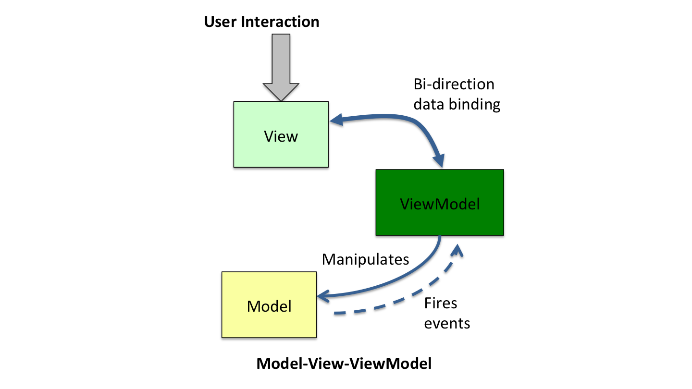- 一个极端但又很典型的例子是 Word。它是数据流式的文档，但是界面显示人们用得最多的却是页面视图，内容是分页显示的。
这种情况下就需要有一个 ViewModel 层是按分页显示的结构来组织数据。其中负责维持 Model 与 ViewModel 层的数据一致性的模块，我们叫排版引擎。
从理解上来讲，我个人会倾向于认为 ViewModel 是 View 层的一部分，只不过是 View 层太复杂而进行了再次拆分的结果。也就是说，我并不倾向于认为存在所谓的 “Model-View-ViewModel” 这样的模式。
理解 Controller 层
Controller 层是负责用户交互的。可以有很多个 Controller，分别负责不同的用户交互需求。
这和 Model 层、View 层不太一样。我们会倾向于认为 Model 层是一个整体。虽然这一个层会有很多类，但是它们共同构成了一个完整的逻辑：DOM。而 View 层也是如此，它是 DOM 的界面呈现，是 DOM 的镜像，同样是一个整体。
但负责用户交互的 Controller 层，是可以被正交分解的，而且应该作正交分解，彼此完全没有耦合关系。
一个 Controller 模块，可能包含一些属于自己的辅助 View，也会接受 View 层委托的一些事件，由事件驱动自己状态，并最终通过调用 Model 层的使用接口来完成一项业务。
Controller 模块的辅助 View 可能是持续可见的，比如菜单和工具条；也可能是一些临时性的，比如 Office 软件中旋转图形的控制点。
对于后者，如果存在 ViewModel 层的话，也有可能会被归到 ViewModel + View 来解决，因为 ViewModel 层可以有 Selection 这样的东西来表示 View 里面被选中的对象。
Controller 层最应该思考的问题是代码的内聚性。哪些代码是相关的，是应该放在一起的，需要一一理清。这也是我上面说的正交分解的含义。
如果我们做得恰当，Controller 之间应该是完全无关的。而且要干掉某一个交互特别容易，都不需要删除该 Controller 本身相关的代码，只需要把创建该 Controller 的一行代码注释掉就可以了。
从分层角度，我们会倾向于认为 Model 层在最底层；View 层在中间，它持有 Model 层的 DOM 指针；Controller 层在最上方，它知道 Model 和 View 层，它通过 DOM 接口操作 Model 层，但它并不操作 View 去改变数据，而只是监听自己感兴趣的事件。
如果 View 层提供了抽象得当的事件绑定接口，你会发现，其实 Controller 层大部分的逻辑都与操作系统提供的界面编程框架无关（除了少量辅助 View），是跨平台的。
谁负责把 MVC 各个模块串起来呢？当然是应用程序（Application）了。 在应用开始的时候，它就把 Model 层、View 层，我们感兴趣的若干 Controller 模块都创建好，建立了彼此的关联，一切就如我们期望的那样工作起来了。
兼顾 API 与交互
MVC 是很好的模型来支持用户交互。但这不是桌面程序面临的全部。另一个很重要的需求是提供应用程序的二次开发接口（API，全称为 Application Programming Interface）。
提供了 API 的应用程序，意味着它身处一个应用生态之中，可以与其他应用程序完美协作。
通过哪一层提供 API 接口？我个人会倾向于认为最佳的选择是在 ViewModel 层。Model 层也很容易提供 API，但是它可能会缺少一些重要的东西，比如 Selection。
结语
这一讲我们探讨了一个桌面应用程序的业务架构设计。我们探讨了大家耳熟能详的 MVC 架构范式。一千个人眼中有一千个哈姆雷特，虽然都在谈 MVC，但是大家眼中的 MVC 各有不同。
我们站在什么样的架构是好架构的角度，剖析了 MVC 的每一层应该怎样去正确理解与设计，有哪些切实的问题需要去面对。
如果你对今天的内容有什么思考与解读，欢迎给我留言，我们一起讨论。下一讲我们将聊聊基于浏览器的开发。
如果你觉得有所收获，也欢迎把文章分享给你的朋友。感谢你的收听，我们下期再见。
23 Web开发：浏览器、小程序与PWA
你好，我是七牛云许式伟。
前面几讲我们聊到桌面软件开发，是从原生应用（Native App）角度来讲的，我们的讨论范围还只是单机软件，没有涉及网络相关的部分。
虽然介绍 Model 层的时候，我拿基于数据库实现 Model 层来谈常见的两个误区，但这只是因为这种问题经常能够见到，比较典型。实际纯单机软件很少会基于数据库来做，通常是自己设计的内存中的数据结构。
浏览器
今天开始我们聊聊浏览器。从商业价值看，浏览器带来的最为重大的进步是如下这三点。
其一，软件服务化。 当产品交付从单机软件转向云服务后，社会分工就发生了巨大变化。
互联网让 “24 小时不间断服务”成为可能。任何一个环节的力量都得到百倍乃至千倍的放大，都有可能成长出一个超级节点，进而吞噬上下游，让服务链条更短。
其二，随时发布。 这极大改进了软件迭代的效率。人们快速试验自己的想法，不必过度因为顾虑软件质量召回而束手束脚。
其三，跨平台。 浏览器消除了不同操作系统平台的差异性，让一份代码到处运行成为可能。
不过我们今天把重心放到界面开发这个视角。** 从作为界面开发框架的角度看，浏览器带来的最重大变化又是哪些？**
其一，操作系统的窗口系统被颠覆。 一个网页只是一个窗口，不再有父子窗口。所有网页中的界面元素，都是一个虚拟视图（Virtual View），无论是大家耳熟能详的通用控件（比如 input，image，div 等等），还是自绘窗口（canvas）都一样。
这一点非常关键。哪些元素是子 View，哪些元素是图形（Shape） 已经完全淡化了，更多的是通过一种统一机制来完成事件分派（Event Dispatch）。
其二，窗口的绘制机制变了。 之前是调用操作系统的 GDI 生成界面，现在换成了 HTML+CSS。当然如果我们非要把 HTML+CSS 看作是另一种 GDI 语言，某种程度来看好像也可以。
但是实际上 GDI 与 HTML+CSS 有非常本质的差别。它们一个是在绘制界面，一个是在声明界面。这两者的本质差别，在视图更新（Update View）的时候一下子就显现出来。
上一讲我们在介绍 View 层的时候，介绍过 View 层的一大难点是做局部更新的优化。在 View 局部优化比较复杂的时候，我们甚至会引入 ViewModel 层来做视图局部更新的支持。
站在这个角度看 HTML+CSS，其实我们不能把它理解为 View 层，它其实是 ViewModel 层。View 层由谁干掉了？浏览器。在我们修改 HTML DOM 时，浏览器自动就更新了 View。怎么做到局部更新优化的？你不必关心，浏览器已经干完这件事情了。
这事的真正价值超过你的想象。它大幅提升了桌面应用开发的效率。
其三，语言限制。 浏览器的确大幅改善了界面开发的效率，但是从语言支持的角度，大部分操作系统都支持各种语言作为开发工具，而浏览器长期以来只支持 JavaScript 一门语言。
这当然是一个不小的制约。所以有很多人在试图突破这个限制。Google 曾经想要把 Dart 语言打造为下一代的 JavaScript，但最终以失败告终。
今天主流的方案还是以代码转换器为主。也就是说，我可以用自己期望的语言（比如 Go 语言）来做开发。但是在发布前通过代码转换器转为 JavaScript。
今天还有一个重要的尝试是 WebAssembly。它的目标是打通各类语言与 Web 之间的桥梁。
其四，B/S 架构。 无论是 B/S 还是 C/S，本质上还是软件服务化。这对软件架构产生了巨大影响。
一方面，从 Server 端的逻辑看，系统从单用户变成了多用户。另一方面，从 Browser 端（或 Client 端）看，仍然是单用户，但是没有了数据，数据都在 Server 端。这对应用架构提出了新的挑战。
应该怎么设计 Web 程序的架构？我们在下一讲中接着聊这个话题。
小程序
2016年9月，微信小程序（最初叫“应用号”）开始内测。下面是当天七牛云团队的一番内部对话。
许式伟：看下这篇，微信应用号来了。-
Gina：这个理念应该不是去构建一个Store，它的理念是用完即走，是场景通过扫码或者搜索触发的，并且应该打的是实体或者服务售卖群体，不会针对微信内消费，是订阅号的升级展现方式。-
许式伟：关于微信小程序（应用号），我能透露的几个细节，这一篇更详细一些。-
微信没有必要在微信App内放Appstore，可以只有Web版本的Appstore，App不需要安装，甚至可能以消息的方式发给别人，以服务号的形式存在，这是迭代式开发。-
以后终极形态还可以变，当前重心应该在runtime的稳定。通过上面的介绍，微信实际上升级了浏览器内核的标准，符合我之前说的新一代浏览器的定义。-
Gina：小程序是一种不需要下载安装即可使用的应用，它实现了应用“触手可及”的梦想，用户扫一扫或者搜一下即可打开应用。也体现了“用完即走”的理念，用户不用关心是否安装太多应用的问题。应用将无处不在，随时可用，但又无需安装卸载。-
徐倒立：WebApp 这个技术和 idea最早来自 Google 浏览器 ，微信是商业化的最佳实践。Google浏览器在支持开发者开发App时就提出Intents，并且和Android是可以互动的。-
Gina：没有好的土壤有好的功能也是没意义的。-
许式伟：是，微信小程序在别的App不是做不到，是做了意义太小。苹果和腾讯不约而同在IM里面做App是有道理的。-
Gina：IM比搜索和浏览器的封闭性更强。用户不容易跳转出去。封闭性强的土壤才能构建App生态。-
许式伟：所以移动时代最佳的浏览器是IM，不再是以前传统浏览器。-
杜江华：我们应该多讨论to B巨头们怎么玩、怎么思考的，对我们现阶段才更有意义，支付宝、微信等都是to C的。-
许式伟：不是这样的。to C 的生态变化，会影响 to B。to C 是根源，我们是帮用户做App的，如果不知道以后App是怎么玩的，怎么可能做好。-
杜江华：理解了，那应该是客户群之一互联网部分，还有不少大B 需要有其他不同的思考方式。-
Gina：大B的趋势我挺想听的。这周聚会，阿杜能否把最近大项目和大传统客户的一些动作详细聊一下。你这边离业务最近。-
许式伟：其实比你想象得还要恐怖，不管你是什么大B，你都得拥抱微信，只有微信和QQ让整个7亿中国网民在里面安家了，这就是一个虚拟的国家。所以我的判断是没有大B不开发微信小程序，这只是个眼光和时间问题。-
吕桂华：这个微信应用号我们是应该关注的，相当于市场上多了一个操作系统。-
许式伟：微信应用号不只是一个新OS，而且是下一代OS，苹果和谷歌不会坐视不理。当然还有一个痛点是跨平台。-
Gina：这个东西可能对营销生态有大的影响。我们也要开发些营销工具。
在这段对话之后的一个月内，我们做出了七牛的第一笔对外投资：“即速应用”，它致力于帮助企业开始快速构建自己的小程序。
为什么微信小程序必然会成功？
因为，有 7 亿人同时使用的操作系统，很少。如果我们把不同 Android 厂商归为不同的主体的话，微信小程序是当时世界上最大的单一来源的操作系统。
随后，支付宝发布了支付宝小程序，国内手机厂商联合发布了 “快应用”，今日头条也发布了自己的小程序。
一下子，小程序变成了一支巨大的新兴力量，成为真正意义上的国产操作系统，对抗着 Android 和 iOS 两大移动操作系统生态。
但是，目前来说，小程序生态仍然存在有诸多问题。
最为关键的，是标准不统一。虽然都叫小程序，但是它们的接口各自都在快速迭代，很难去建立统一的标准，更谈不上让开发者一次开发，到处可用。
这和 Android 不同。虽然 Android 厂商很多，但是不同 Android 的开发接口是一致的，开发工具链是一致的。
小程序的厂商们会好好坐下来谈一谈标准一致的事情吗？应该做，但可能他们现在没空管开发者们的体验，他们的关注点是怎么快速抢地盘。
聊了那么多，我们话题回到技术本身。小程序和传统的 Web 开发有何不同？
其实有很大不同。小程序更像是 Native 程序在线化，而不是 PC Web 移动化。
为什么我们这么说？因为小程序是一个应用，而不是由一个个 Web 页面构成。
我们需要提交应用给微信或支付宝，他们也会像苹果审核 AppStore 上的应用一样，掌控着 App 的生杀大权。
而且理论上可以比苹果更牛的是，他们可以下线一个已经有千万甚至上亿级别用户的 App，让他们一无所有。苹果可以掐掉一个 App 的新增，他们可以掐掉一个 App 的全部。
这会带来新的社会问题：操作系统厂商的权限边界究竟在哪里。这不是一个简单的技术问题，而是一个伦理与法律的问题。
正因为这个风险如此之高，所以所有的厂商在拥抱微信的同时，必然时时刻刻想着如何逃离微信。
刀刃，永远是两面的。
这也是我个人非常佩服Facebook扎克伯格的地方。他看到了终局，所以在发布 Libra 的时候，他选择的是让一步，放弃 Control。
我还是那句话，他会成功。
让一步，其实就是进一百步。
PWA
国内大厂们纷纷布局小程序的时候，Google 也在发力自己的移动浏览器方案，叫 PWA，全称 “Progressive Web App”。
其实 Google 想要让浏览器获得 Native 应用同等体验之心是路人皆知的事实。
在 PC 时期，Google 就搞了 Google Native Client (NaCl)，后来转向了 WebAssembly。移动应用的在线化，Google 也同样在探索。
PWA 开始于 2015 年，比微信小程序早很多，并得到了苹果和微软的支持。从这个角度来说，PWA 的潜力不容小觑。
怎么理解 PWA？你可以理解为海外版的小程序。
那么它和小程序的差别在哪？
其一，演进思路不同。PWA 基本上以兼容并对 Web 进行逐步改造升级为导向。而小程序和 Web 还是有较大程度的差异。
其二，关注焦点不同。PWA 更技术化，它很大的精力重心放在如何让 PWA 在断网情况下和本地应用有更一致的体验。而小程序关注点在如何撬动这么庞大的用户市场，小程序之后专门出现小游戏，更加能够证明这一点。
其三，PWA 并没有中心化的 AppStore，它更像是一项技术标准，而不是一个封闭的操作系统。支持 PWA 的厂商们不用担心被人掐脖子，怎么更新你的应用自己说了算。
虽然技术上相似，但是如果以操作系统角度看，两者有代差。PWA 如果我们看作操作系统的话，相比小程序来说太传统。
为什么这么讲？因为小程序符合我前面介绍现代操作系统的 “账号(Account)-支付(Pay)-应用市场(AppStore)” 的商业闭环，但是 PWA 并没有账号，也没有支付。
怎么看待 PWA 的未来？
最终把 PWA 发扬光大的，很可能是 Facebook（当然 Facebook 也非常大概率选择放弃包袱，和小程序一样重新出发）。加上 Libra，秒杀微信小程序。
结语
今天我们聊了浏览器，结合浏览器的发展趋势，谈了现在仍然在高速迭代中的移动浏览器之争。有中国特色的小程序，和海外版小程序 PWA。
如果你对今天的内容有什么思考与解读，欢迎给我留言，我们一起讨论。下一讲我们将聊聊 “跨平台与 Web 开发的建议”。
如果你觉得有所收获，也欢迎把文章分享给你的朋友。感谢你的收听，我们下期再见。
24 跨平台与 Web 开发的建议
你好，我是七牛云许式伟。
上一讲我们聊了浏览器，以及移动浏览器之争：小程序与 PWA。
当我们思考浏览器从技术上带来了什么的时候，我们可以把它分为两点。
- 跨平台桌面程序开发；
- Web 开发（B/S 架构的新型应用）。
今天我们分别就跨平台桌面程序和 Web 开发展开来聊一聊。
跨平台桌面程序开发
跨平台的桌面程序开发是一个超级难题。无数人前仆后继，各种方案层出不穷，但至今为止，仍然没有称得上真正深入人心的解决方案。
原因很简单，因为桌面程序本身的范畴在变。有两个关键的因素会导致桌面开发产生巨大的差异性。
一个因素自然是操作系统。不同的操作系统抽象的界面程序框架并不一致。这些不一致必然导致开发工作量的增加。
放弃某个操作系统，就意味着放弃某个流量入口，也就意味着放弃这些用户。所以虽然很麻烦，我们还是不得不支持着每一个主流的操作系统。
另一个因素是屏幕尺寸。就算相同的操作系统，在不同尺寸的屏幕上，交互的范式也会存在很大的差异性，这也会导致不低的跨平台工作量。
首先我们看下操作系统。
- PC 本地：Windows，macOS，Linux 等等；
- PC Web：Chrome，Safari，FireFox 等等；
- Mobile 本地：Android，iOS 等等；
- Mobile Web：小程序，PWA 等等。
我们再看下屏幕尺寸。
- 大屏：PC、笔记本，Pad 等等；
- 中屏：手机；
- 小屏：手表。
如此繁复多样的终端类型，无怪跨平台如此之难。我们来总结一下当前都有哪些跨平台的解决方案。
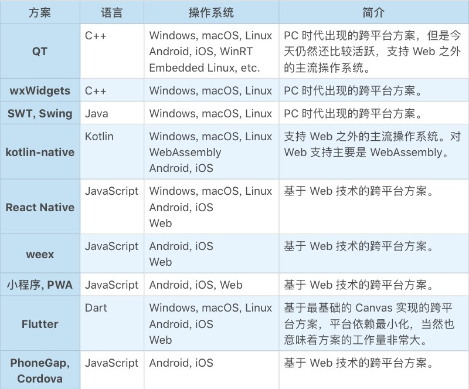
这个列表只是沧海一粟。之所以没有列那么多，也是因为大部分的跨平台框架都已经不怎么活跃，已经无疾而终了。
目前来说，还很难说哪个方案会胜出。
关于跨平台开发，我觉得有一句话特别深刻：“每一次统一的努力，都最终变成新的分裂”。当然，这样的事情在很多领域都会发生，只是跨平台开发更加如此。
但是无论如何，跨平台的梦还会继续。
Web 开发
聊完了跨平台，我们来聊聊浏览器带来的另一面：Web 开发。
Web 的 B/S 架构意味着编写软件有了更高的复杂性。这主要表现在以下几个方面。
其一，多用户。 有了 Server 端，意味着用户的数据不再是保存在 Client（Browser）端，而是存储在 Server 端。
其二，更高的数据可靠性要求。 数据在 Client 端，客户自己对数据的可靠性负责。硬盘坏了，数据丢了，用户会后悔没有对数据进行备份。
但是一旦数据在 Server 端，数据可靠性的责任方就到了软件厂商这边。如果厂商不小心把数据搞丢了，用户就会跳起来。
其三，更多可能的分工安排。 详细来说，Web 应用从流派来说，分为两大类：胖前端与胖后端。
所谓胖前端，是指把尽可能多的业务逻辑放在前端。极端情况下，整个网站就是一个单页的应用。胖前端无论开发体验还是用户体验，都更接近于本地应用（Native App）。
所谓胖后端，是指主要逻辑都在后端，包括界面交互的事件响应，也通过网络调用交给了后端来实现。
我们先看客户端（Client），也就是浏览器端（Browser）。上一讲我们提到，浏览器的界面框架并没有窗口系统，它通过 HTML+CSS 来描述界面。
HTML+CSS 与其理解为 View 层，不如理解为 ViewModel 层，因为 HTML DOM 从数据角度完整描述了界面的样子。而 View 层已经被浏览器自己实现了。
这极大简化了界面开发的复杂性，因为界面的局部更新是一个复杂的话题，今天浏览器通过引入 HTML+CSS 这样的 ViewModel 层把它解决了。
这个时候我们重新看 MVC 框架在浏览器下的样子，你会发现它变成了 MVMP 模式，全称为 “Model-ViewModel-Presenter”。
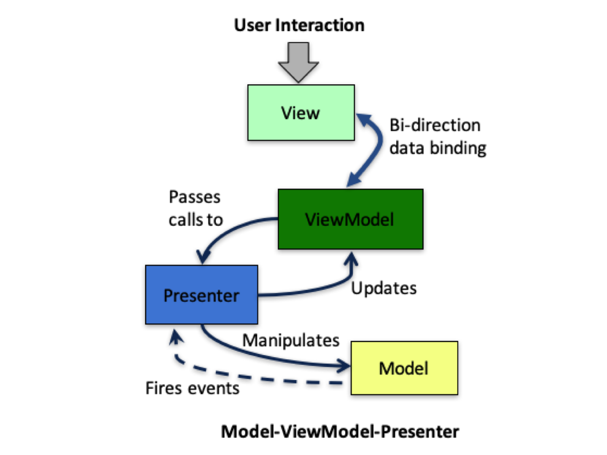
首先，我们看事件响应过程。 浏览器的 View 收到了用户的交互事件，它把这些事件委托（delegate）给了 ViewModel 层，并且通过 HTML DOM 暴露出来。通过修改 HTML 元素的事件响应属性，一般名字叫 onXXX（比如 onclick），可以获得事件的响应机会。
然后我们看 Model 层的数据变化（DataChanged）事件。 在标准的 MVC 模式中，Model 层的数据变化是通知到 View 层，但是在浏览器下 View 是由浏览器实现的，要想让它接受 DataChanged 事件并且去处理是不太可能了。
所以解决思路自然是让 Controlller 层来做，这样就变成了 MVP 模式。 但是我们又不是标准的 MVP，因为 Presenter 层更新界面（Update View）并不是操作 View，而是 ViewModel。
综上，浏览器下的 MVC，最终实际上是 MVMP（Model-ViewModel-Presenter）。
聊完了浏览器端，我们在来看下服务端（Server）。虽然这一章我们的重点不是聊服务端，但是为了有个完整的认识，我们还是要概要地梳理一下 Server 端的架构。
前面我们在 “[22 | 桌面程序的架构建议]” 中，曾提到桌面软件除了要支持用户交互外，另一个很重要的需求是提供应用程序的二次开发接口（API）。
到了 Web 开发，我们同样需要二次开发接口，只不过这个二次开发接口不再是在 Client 端完成的，而是在 Server 端完成。Server 端支持直接的 API 调用，以支持自动化（Automation）方面的需求。
所以，对 Server 端来说，最底层的是一个多租户的 Model 层（Multi-User Model），它实现了自动化（Automation）所需的 API。
在 Multi-User Model 层之上，有一个 Web 层。Web 层和 Model 层的假设不同，Web 层是基于会话的（Session-based），因为它负责用户的接入，每个用户登录后，会形成一个个会话（Session）。
如果我们对Web 层细究的话，又分为 Model 层和 ViewModel 层。为了区分，Web 这边的 Model 层我们叫它 Session-based Model。相应地，ViewModel 层我们叫它 Session-based ViewModel。
在服务端，Session-based Model 和 Session-based ViewModel 并不发生直接关联，它们通过自己网络遥控浏览器这一侧的 Model 和 ViewModel，从而响应用户的交互。
Session-based Model 是什么样的呢？它其实是 Multi-User Model 层的转译。把多租户的 API 转译成单租户的场景。所以这一层并不需要太多的代码，甚至理论上自动实现也是有可能的。
Session-based ViewModel 是一些 HTML+JavaScript+CSS 文件。它是真正的 Web 业务入口。它通过互联网把自己的数据返回给浏览器，浏览器基于 ViewModel 渲染出 View，这样整个系统就运转起来了。
结语
今天我们聊了 Web 带来的两个重要改变。一个是跨平台，一个是 Web 开发，即 B/S 架构下的新型应用到底应该怎么实现。
从跨平台来说，这个话题是桌面程序员（也叫“大前端”）永远的痛。计划赶不上变化，用来形容大前端程序员面临的窘境是一点都不过分的。一个玩意还没搞熟悉了，另一个东西又出来了，变化太快，要跟上实属不易。
从 Web 开发来说，MVC 变成了 MVMP（Model-ViewModel-Presenter）。我们和单机的桌面软件一样的建议，认真对待 Model 层，认真思考它的使用接口是什么样的，把 Model 层做厚。
如果你对今天的内容有什么思考与解读，欢迎给我留言，我们一起讨论。下一讲我们将结合一个实际的案例，来讲解一下桌面开发（含单机软件和 Web）到底是什么样的。
如果你觉得有所收获，也欢迎把文章分享给你的朋友。感谢你的收听，我们下期再见。
25 桌面开发的未来
你好，我是七牛云许式伟。
今天，我原本想结合一个实战例子，来回顾一下 “桌面软件开发” 一章到今天为止的内容，但是由于要准备的内容比较多，会延后一下。
所以，今天我还是会按原来大纲的内容，谈谈我个人对桌面开发未来趋势的判断。
桌面平台的演进与未来
谈未来，我们要先看过去。
在 PC 时期，本地桌面操作系统主流的有 Windows、MacOS、Linux。为了消除不同平台的差异，于是就出现了 QT、wxWidgets 这样的跨平台解决方案。
但是它们都败了，败给了一个它们并没有意想得到的对手：PC 浏览器。
浏览器并不是为跨平台而来，但是除了干成了软件服务化外，也干成了跨平台这件事情。
虽然浏览器厂商很多，但是它们遵循相同的规范。** 这意味着支持了浏览器，就支持了所有的 PC 用户。**
这太诱人了。
于是在软件服务化和跨平台开发的双重优势下，软件厂商们趋之若鹜，QT、wxWidgets 这些方案就变成小众需求。
QT 有机会反抗么？其实是有的。关于这一点我们后面再说。
然后，移动大潮来了。我记得 2006 年有一次我和雷军雷总吃饭，聊起对移动操作系统未来趋势的判断，我们俩各持己见。
雷总认为 WinCE 会赢，因为 Windows 已经培育了最大的开发者群体。而我认为 Symbian 会赢，因为它占据了最大的终端用户群。
结局大家已经知道了，最后赢的是谁都没有预料到的玩家：Android 和 iOS。
如果我们从事后看，实际上这个事情并不是完全没有迹象可循。iOS（诞生于2007年）固然当时还没有诞生，但是 Android 诞生于 2003 年，并于 2005 年被 Google 收购。作为搜索引擎厂商，Google 收购一个手机操作系统，显然不是随意为之的，而是公司发展战略上的考量。
Android 和 iOS 的诞生，一下子让操作系统的生态变得更为复杂。
操作系统不同，输入方式不同（鼠标 vs 触摸屏），屏幕大小不同，想要一套代码横跨 PC 和移动多个平台？太难。
这还不算。虽然还不像手机那么普遍，但是今天手表、电视机、汽车，以及各式各样的 IoT 传感设备，都需要操作系统的支持。
从操作系统发展来说，我个人会倾向于按交互方式来分。 未来桌面操作系统和服务端操作系统会渐行渐远，差异越来越大。** 从交互来说，服务端会维持简约，经典的命令行交互会长期占据主流。**
而桌面操作系统，笔记本市场，鼠标+键盘仍然会占据主流。虽然鼠标形态已经变了，变成了触控板，但是鼠标指针这种基于精确位置交互的方式会得到保留。多点触摸的交互，也会得到部分机型的支持。
移动市场，多点触摸+键盘会占据主流。但是语音助手也会得到一定程度的渗透。
IoT 市场，语音助手会占据交互的主流。 但也会有一些设备引入多点触摸这种交互方式来补充。在这个市场，目前看技术上的 Amazon 和 Google 占据了领先地位。虽然苹果入场较早，但是 Siri 的表现还是和前两者有较大的差距。
IoT 设备会两极分化。** 一类 IoT 设备是专用设备，它的应用场景非常固定，它对操作系统最大诉求是裁剪能力：最好不要给我太多的东西，匹配场景就好。** 能不能提供AppStore？不是重点，有也只有很少的一些应用，其实直接找合作伙伴就好。
一类 IoT 设备则有较大的通用性。 但受限于语音助手技术的限制，IoT 操作系统的开放性要比移动系统差很多。所以在有任何可能的时候，这些设备就会带上触摸屏变成一台由移动系统支持的设备。
长远来说，要看智能语音技术的发展。关于这一点，我个人抱谨慎乐观的态度。但显然，在很长一段时间里，我们面对的还是移动操作系统。
这么多操作系统怎么搞呢？
于是 React-Native 出现了。理论上，React-Native 可以横跨 PC 和移动。因为 React 本身基于 Web 技术，可以支持 PC 浏览器，而 React-Native 又支持 iOS 和 Android，从而做到 “Learn once，write anywhere”。
平台差异不能完全消除，只能尽可能地减少。
手机操作系统这场仗刚有了眉目，移动浏览器之争又起来了。
国内涌现了大量的小程序厂商，国外 Google 也在推 PWA。还有 Facebook 意见不明，不知道会去支持 PWA，还是基于自己的 React-Native 技术搞一套新的移动浏览器标准。
这下好了，统一的 Web 分裂成多个技术阵营。
移动浏览器，国内外不统一已经是既成事实。海外巨头们除了 Facebook，已经用明确的行动支持 PWA。小程序在海外要想有市场，要看头条腾讯阿里们的海外市场占有率。
移动 WebApp 技术的分裂是否会最终得到纠正？这仍然是未知之数。
但由此观之，终端操作系统的多元化已经是既成现实。这对开发者生态将产生重要的影响。
我们可能有人留意到，QT 今天基本上支持了所有的桌面操作系统，不管是 PC 还是移动。但是这还不太够，因为还差 Web、小程序和 PWA。
今天的跨平台，重点是要跨 Android、iOS、Web、小程序和 PWA。如果精力顾不上，PC 桌面操作系统的优先级反而可以缓一缓，毕竟 Web 也能够顶一下。
QT 的机会在这里。但是很明显它并没有意识到兼容 Web 开发对于一个跨平台工具的重要性。
就算在 PC 时期，一个同时支持 Web 和本地操作系统的跨平台工具也能够受到欢迎。今天随着桌面平台的多元化，跨平台工具的需求达到了历史最高点。
当然还有一种跨平台的思路，是垂直发展，比如专做游戏开发的跨平台。不过单就游戏开发这个领域而言，已经有强大的玩家，比如 Unity 在里面。
那么，通用的跨平台怎么做到？
Google Flutter 给了一条路，它把对操作系统的要求最小化，整个界面系统完全自己在用户态构建。
这个思路和 Go 语言有点像。Go 语言其实是在用户态完全重写了操作系统的进程管理和 IO 子系统。
那么 Flutter 会像 Go 语言一样成功么？
我个人持谨慎态度。不同操作系统的用户是有自己独特的交互范式的。比如 Android 和 iOS 用户的习惯就有一定的差异。而这可能恰恰是跨平台更难的一点。
另一个是软件体积问题。Android 是 Google 自己的，可以通过让 Android 预装基础库来减少体积。但是更多的系统有可能需要一个体积不小的跨平台层。
这会制约 Flutter 的发展。客户端软件的尺寸，对新用户的转化率有着至关重要的影响。何况像微信小程序这样的平台，还限制了小程序的尺寸，最早限制为 4M，后来放宽到 8M。
这和 Go 语言面临的环境不太一样。Go 语言因为面向的是服务端，用户对软件的尺寸不敏感，反倒是部署的便捷性更敏感。
我个人更倾向于尺寸更轻盈的跨平台工具。
其次是编程手法上的问题。大趋势是要用 Web 这种声明式的界面描述方式。至于是否需要在语法上进行一次重新梳理，我个人觉得是有必要的。React-Native 在这个方向的探索是个不错的尝试。
在这一点上，苹果的 SwiftUI 或许更值得关注。苹果以极简体验著称，SwiftUI 某种程度上来说代表了关于跨平台开发的可能方向。
儿童编程教育
在我们谈论桌面开发的时候，我认为其实还有一个重要但又很容易被忽视的趋势，是儿童编程教育的走向。
说到儿童编程教育，我们大多数人可能都知道 Scratch 语言。但是要说儿童编程的鼻祖，毫无疑问应该算 Logo 语言，海龟作图。
Scratch 语言由美国麻省理工大学（MIT）于 2007 年发布，到现在已经发展到了 3.0 版本，项目正变得越来越活跃。
在 Scratch 之后，Google 也曾经发布了 Blockly 语言进军儿童编程教育。但是由于缺乏社区基础，Blockly 语言一直不温不火。
但有两件有趣的事情。
其一，Scratch 3.0 是基于 Blockly 的源代码改造而成的，为此据说 Google 也投入了大量的技术人员进行协助，双方协同开发。
其二，Google 基于 Blockly 语言搞出了一个 App Inventor，用于教育儿童学习 Android 开发。
无独有偶的是，苹果推出的 Swift 语言启蒙教程也是针对儿童的，在 AppStore 上可以下载到，叫 “Swift Playgrounds”。
这意味着，我们原本以为两件风马牛不相及的事情，其实是密切相关的。
桌面开发的未来是什么？
从终局的视角来看，桌面开发的终极目标，是让儿童可以轻松编写出生产级的应用。
这不是痴人说梦。
在 iOS 出来之前，如果有人说他要开发一个让三岁小孩都会使用的电脑，可能会有很多人觉得绝无可能。
但是苹果的确做到了。虽然可能还不能完全识别电脑上常见的文字，但是一个三岁的儿童使用起 iPhone 或者 iPad 却毫不困难。
那么，让一个八岁刚刚上学没多久的小学生去做生产级的应用，这事也不是遥不可及的梦想。
桌面开发技术的演进，和儿童编程教育相向而行，有一天必然汇聚于一点上。
结语
今天我们结合桌面开发和儿童编程教育，聊了个人对桌面的未来演进趋势的判断。
如果你对今天的内容有什么思考与解读，欢迎给我留言，我们一起讨论。下一讲我们将结合一个实际的案例，来讲解一下桌面开发（含单机软件和 Web）到底是什么样的。
如果你觉得有所收获，也欢迎把文章分享给你的朋友。感谢你的收听，我们下期再见。
26 实战（一）：怎么设计一个“画图”程序？
你好，我是七牛云许式伟。
到上一讲为止，桌面程序架构设计的基本结构就讲完了。直到现在为止，我们没有讨论任何与具体的应用业务逻辑本身相关的内容。这是因为探讨的内容是普适有效的设计理念，整个讨论会显得很抽象。
今天我们结合一个实际的应用案例，来回顾一下前面我们介绍的内容。
我们选择了做一个 “画图” 程序。选它主要的原因是画图程序比较常见，需求上不需要花费过多的时间来陈述。
我们前面说过，一个 B/S 结构的 Web 程序，基本上分下面几块内容。
- Model 层：一个多用户（Multi-User）的 Model 层，和单租户的 Session-based Model。从服务端来说，Session-based Model 是一个很简单的转译层。但是从浏览器端来说，Session-based Model 是一个完整的单租户 DOM 模型。
- View 层：实际是 ViewModel 层，真正的 View 层被浏览器实现了。ViewModel 只有 View 层的数据和可被委托的事件。
- Controller 层：由多个相互解耦的 Controller 构成。切记不要让 Controller 之间相互知道对方，更不要让 View 知道某个具体的 Controller 存在。
画图程序的源代码可以在 Github 上下载，地址如下：
今天我们讨论浏览器端的 Model，View 和 Controller。
Model 层
我们先看 Model 层。浏览器端的 Model 层，代码就是一个 dom.js 文件。它是一棵 DOM 树，根节点为 QPaintDoc 类。整个 DOM 树的规格如下：
class QLineStyle {
properties:
width: number
color: string
methods:
constructor(width: number, color: string)
}
class QLine {
properties:
pt1, pt2: Points
lineStyle: QLineStyle
methods:
constructor(pt1, pt2: Point, lineStyle: QLineStyle)
onpaint(ctx: CanvasRenderingContext2D): void
}
class QRect {
properties:
x, y, width, height: number
lineStyle: QLineStyle
methods:
constructor(r: Rect, lineStyle: QLineStyle)
onpaint(ctx: CanvasRenderingContext2D): void
}
class QEllipse {
properties:
x, y, radiusX, radiusY: number
lineStyle: QLineStyle
methods:
constructor(x, y, radiusX, radiusY: number, lineStyle: QLineStyle)
onpaint(ctx: CanvasRenderingContext2D): void
}
class QPath {
properties:
points: []Point
close: bool
lineStyle: QLineStyle
methods:
constructor(points: []Point, close: bool, lineStyle: QLineStyle)
onpaint(ctx: CanvasRenderingContext2D): void
}
interface Shape {
onpaint(ctx: CanvasRenderingContext2D): void
}
class QPaintDoc {
methods:
addShape(shape: Shape): void
onpaint(ctx: CanvasRenderingContext2D): void
}
目前这个 DOM 还是单机版本的，没有和服务端的 Session-based Model 连起来。关于怎么连，我们下一讲再讨论。
这个 Model 层的使用是非常容易理解的，也非常直观体现了业务。主要支持的能力有以下两个方面。
其一，添加图形（Shape），可以是 QLine，QRect，QEllipse，QPath 等等。
其二，绘制（onpaint）。前面我们介绍 MVC 的时候，我曾提到为了 View 层能够绘制，需要让 DOM 层把自己的数据暴露给 View 层。
但是从简洁的方式来说，是让 Model 层自己来绘制，这样就避免暴露 DOM 层的实现细节。虽然这样让 Model 层变得有那么一点点不纯粹，因为和 GDI 耦合了。但是我个人认为耦合 GDI 比暴露 DOM 的数据细节要好，因为 GDI 的接口通常来说更稳定。
依赖选择是考虑耦合的一个关键因素。在依赖选择上，我们会更倾向于依赖接口更为稳定的组件，因为这意味着我们的接口也更稳定。
ViewModel 层
我们再看 ViewModel 层。它的代码主要是一个 index.htm 文件和一个 view.js 文件。index.htm 是总控文件，主要包含两个东西：
- 界面布局（Layout）；
- 应用初始化（InitApplication），比如加载哪些 Controllers。
而 view.js 是我们 ViewModel 层的核心，实现了 QPaintView 类。它的规格如下：
interface Controller {
stop(): void
onpaint(ctx: CanvasRenderingContext2D): void
}
class QPaintView {
properties:
doc: QPaintDoc
properties: {
lineWidth: number
lineColor: string
}
drawing: DOMElement
controllers: map[string]Controller
methods:
get currentKey: string
get lineStyle: QLineStyle
onpaint(ctx: CanvasRenderingContext2D): void
invalidateRect(rect: Rect): void
registerController(name: string, controller: Controller): void
invokeController(name: string): void
stopController(): void
getMousePos(event: DOMEvent): Point
events:
onmousedown: (event: DOMEvent):void
onmousemove: (event: DOMEvent):void
onmouseup: (event: DOMEvent):void
ondblclick: (event: DOMEvent):void
onkeydown: (event: DOMEvent):void
}
var qview = new QPaintView()
看起来 QPaintView 的内容有点多，我们归类一下：
和 Model 层相关的，就只有 doc: QPaintDoc 这个成员。有了它就可以操作 Model 层了。
属于 ViewModel 层自身的，数据上只有 properties 和 drawing。 其中 properties 是典型的 ViewModel 数据，用来表示当前用户选择的 lineWidth 和 lineColor 等。drawing 则是浏览器对 HTML 元素的抽象，通过它以及 JavaScript 全局的 document 对象就可以操作 HTML DOM 了。
当然 ViewModel 层一个很重要的责任是绘制。onpaint 和 invalidRect 都是绘制相关。invalidRect 是让界面的某个区域重新绘制。当前为了实现简单，我们总是整个 View 全部重新绘制。
前面我说过， Web 开发一个很重要的优势是不用自己处理局部更新问题，为什么这里我们却又要自己处理呢？原因是我们没有用浏览器的 Virtual View，整个 DOM 的数据组织完全自己管理，这样我们面临的问题就和传统桌面开发完全一致。
剩下来的就是 Controller 相关的了。主要功能有：
- registerController（登记一个 Controller），invokeController（激活一个 Controller 成为当前 Controller），stopController（停止当前 Controller），View 层并不关心具体的 Controller 都有些什么，但是会对它们的行为规则进行定义；
- 事件委托（delegate），允许 Controller 选择自己感兴趣的事件进行响应；
- getMousePos 只是一个辅助方法，用来获取鼠标事件中的鼠标位置。
View 层在 MVC 里面是承上启下的桥梁作用。所以 View 层的边界设定非常关键。
如果我们把实际绘制（onpaint）的工作交给 Model 层，那么 View 基本上就只是胶水层了。但是就算如此，View 层仍然承担了一些极其重要的责任。
- 屏蔽平台的差异。Model 层很容易做到平台无关，除了 GDI 会略微费劲一点；Controller 层除了有少量的界面需要处理平台差异外，大部分代码都是响应事件处理业务逻辑，只要 View 对事件的抽象得当，也是跨平台的。
- 定义界面布局。不同尺寸的设备，界面交互也会不太一样，在 View 层来控制不同设备的整体界面布局比较妥当。
Controller 层
最后我们看下 Controller 层。Controller 层的文件有很多，这还是一些 Controller 因为实现相近被合并到一个文件。详细信息如下。
- Menu, PropSelectors, MousePosTracker： accel/menu.js
- Create Path：creator/path.js
- Create FreePath：creator/freepath.js
- Create Line, Rect, Ellipse, Circle： creator/rect.js
其中，menu.js 主要涉及各种命令菜单和状态显示用途的界面元素。用于创建各类图形（Shape），选择当前 lineWidth、lineColor，以及显示鼠标当前位置。
在创建图形这些菜单项上，有两点需要注意。
其一，菜单并不直接和各类创建图形的 Controller 打交道，而是调用 qview.invokeController 来激活对应的 Controller，这就避免了两类 Controller 相互耦合。
其二，虽然前面 Model 层支持的图形只有 QLine、QRect、QEllipse、QPath 等四种，但是界面表现有六种：Line、Rect、Ellipse、Circle、Path、FreePath 等等。这是非常正常的现象。同一个 DOM API 在 Controller 层往往会有多条实现路径。
选择当前 lineWidth、lineColor 操作的对象是 ViewModel 的数据，不是 Model。这一点前面几讲我们也有过交代。我们当时举的例子是 Selection。其实你把当前 lineWith、lineColor 看作是某种意义上的 Selection ，也是完全正确的认知。
鼠标位置跟踪（MousePosTracker）是一个极其简单，但也是一个很特殊的 Controller，它并不操作任何正统意义的数据（Model 或 ViewModel），而是操作输入的事件。
剩下来的几个 JavaScript 文件都是创建某种图形。它们的工作机理非常相似，我们可以随意选一个看一下。比如 QRectCreator 类，它的规格如下：
class QRectCreator {
methods:
constructor(shapeType: string)
stop(): void
onpaint(ctx: CanvasRenderingContext2D): void
onmousedown: (event: DOMEvent):void
onmousemove: (event: DOMEvent):void
onmouseup: (event: DOMEvent):void
onkeydown: (event: DOMEvent):void
}
在初始化（构造）时，QRectCreator 要求传入一个 shapeType。这是因为 QRectCreator 实际上并不只是用于创建 Rect 图形，还支持 Line、Ellipse、Circle。只要通过选择两个 points 来构建的图形，都可以用 QRectCreator 这个 Controlller 来做。
QRectCreator 接管了 View 委托的 mousedown、mousemove、mouseup、keydown 事件。
其中，mousedown 事件记录下第一个 point，并由此开启了图形所需数据的收集过程，mouseup 收集第二个 point，随后后创建相应的 Shape 并加入到 DOM 中。keydown 做什么？它用来支持按 ESC 放弃创建图形的过程。
架构思维上我们学习到什么？
通过分析这个 “画图” 程序，你对此最大的收获是什么？欢迎留言就此问题进行交流。这里我也说说我自己想强调的点。
首先，这个程序没有依赖任何第三方库，是裸写的 JavaScript 代码。关于这一点，我想强调的是：
第一，这并不是去鼓励裸写 JavaScript 代码，这只是为了消除不同人的喜好差异，避免因为不熟悉某个库而导致难以理解代码的逻辑；
第二，大家写代码的时候，不要被框架绑架，框架不应该增加代码的耦合，否则这样的框架就应该丢了；更真实的情况是，你很可能是在用一个好框架，但是是不是真用好了，还是取决于你自己的思维。
从架构设计角度来说，在完成需求分析之后，我们就进入了架构的第二步：概要设计（或者也可以叫系统设计）。这个阶段的核心话题是分解子系统，我们关心的问题是下面这些。
- 每个子系统负责什么事情？
- 它依赖哪些子系统？它能够少知道一些子系统的存在么？
- 它们是通过什么接口耦合的？这个接口是否自然体现了两者的业务关系？它们之间的接口是否足够稳定？
MVC 是一个分解子系统的基本框架，它对于桌面程序尤为适用。通过今天对 “画图” 程序的解剖，我们基本能够建立桌面程序框架上非常一致的套路：
- Model 层接口要自然体现业务逻辑；
- View 层连接 Model 与 Controller，它提供事件委托（delegate）方便 Controller 接收感兴趣的事件，但它不应该知道任何具体的 Controller；
- Controller 层中，每个 Controller 都彼此独立，一个 Controller 的职责基本上就是响应事件，然后调用 Model 或 ViewModel 的接口修改数据。
当然，这里没有讨论特定应用领域本身相关的架构问题。对于桌面程序而言，这件事通常发生在 Model 层。但对于我们今天的例子 “画图” 程序而言，Model 层比较简单，基本上还不太需要讨论。在后面，我们也可能会尝试把这个 “画图” 程序需求变复杂，看架构上应该怎么进行应对。
结语
今天我们结合一个大家非常熟悉的例子 “画图” 程序来介绍 MVC 架构。虽然我们基于 Web 开发，但是我们当前给出的画图程序本质上还是单机版的。
如果你对今天的内容有什么思考与解读，欢迎给我留言，我们一起讨论。下一讲我们将继续实战一个联网版本的画图程序。
如果你觉得有所收获，也欢迎把文章分享给你的朋友。感谢你的收听，我们下期再见。
27 实战（二）：怎么设计一个“画图”程序？
你好，我是七牛云许式伟。
上一讲开始，我们进入了实战模式。从目前看到的反馈看，我的预期目标并没有达到。
我复盘了一下，虽然这个程序看起来比较简单，但是实际上仍然有很多需要交代而没有交代清楚的东西。
我个人对这个例子的期望是比较高的。因为我认为 “画图” 程序非常适合作为架构实战的第一课。“画图” 程序需求的可伸缩性非常大，完完全全是一个迷你小 Office 程序，很适合由浅及深去谈架构的演进。
所以我今天微调了一下计划，把服务端对接往后延后一讲，增加一篇 “实战（中）” 篇。这个“中”篇一方面把前面 “实战（上）” 篇没有交代清楚的补一下，另一方面对 “画图” 程序做一次需求的迭代。
MVP 版画图程序
先回到 “实战（上）” 篇。这个版本对画图程序来说，基本上是一个 MVP 版本：只能增加新图形，没法删除，也没法修改。
怎么做？我们先看 Model 层，它的代码就是一个 dom.js 文件。从数据结构来说，它是一棵以 QPaintDoc 为根的 DOM 树。这个 DOM 树只有三级：Document -> Shape -> LineStyle。具体细节可以参阅下表：
这个表列出的是 Model 和 View、Controllers 的耦合关系：Model 都为它们提供了什么？可以看出，View 层当前对 Model 层除了绘制（onpaint），没有其他任何需求。而各个 Controller，对 Model 的需求看起来似乎方法数量不少，但是实质上目的也只有一个，那就是创建图形（addShape）。
我们再看 View 层。它的代码主要是一个 index.htm 文件和一个 view.js 文件。View 层只依赖 Model 层，并且只依赖一个 doc.onpaint 函数。所以我们把关注点放在 View 自身的功能。
View 层只有一个 QPaintView 类。我们将其功能分为了三类：属于 Model 层职责相关的，属于 View 自身职责相关的，以及为 Controller 层服务的，得到下表。
最后，我们来看 Controller 层。Controller 层的文件有很多，这还是一些 Controller 因为实现相近被合并到一个文件，如下所示。
- Menu, PropSelectors, MousePosTracker： accel/menu.js
- Create Path：creator/path.js
- Create FreePath：creator/freepath.js
- Create Line, Rect, Ellipse, Circle： creator/rect.js
Controller 位于 MVC 的最上层，我们对它的关注点就不再是它的规格本身，也没人去调用它的方法。所以我们把关注点放在了每个 Controller 都怎么用 Model 和 View 的。
我们列了个表，如下。注意 Controller 对事件（Event）的使用从 View 中单独列出来了。
通过以上三张表对照着看，可以清晰看出 Model、View、Controllers 是怎么关联起来的。
改进版的画图程序
MVP 版本的画图程序，用着就会发现不好用，毕竟图形创建完就没法改了。所以我们打算做一个新版本出来，功能上有这样一些改进。
- 选择一个图形，允许删除、移动或者对其样式进行修改。
- 图形样式增加 fillColor（填充色）。
- 更加现代的交互范式：默认处于 ShapeSelector 状态，创建完图形后自动回到此状态。
- 选择图形后，界面上的当前样式自动更新为被选图形的样式。
怎么改我们的程序？
完整的差异对比，请参见：
下面，我们将详细讲解这些修改背后的思考。
我们先看 Model 层，新的规格见下表。
为了方便大家理解，我们做了一个 Model 的 ChangeNotes 表格，如下：
大部分是新功能的增加，不提。我们重点关注一个点：QLineStyle 改名为 QShapeStyle，且其属性 width、color 被改名为 lineWidth、lineColor。这些属于不兼容修改，相当于做了一次小重构。
重构关键是要及时处理，把控质量。尤其对 JavaScript 这种弱类型语言，重构的心智负担较大。为了保证质量仍然可控，最好辅以足够多的单元测试。
这也是我个人会更喜欢静态类型语言的原因，重构有任何遗漏，编译器会告诉你哪里漏改了。当然，这并不意味着单元测试可以省略，对每一门语言来说，自动化的测试永远是质量保障的重要手段。
话题回到图形样式。最初我们 new QLine、QRect、QEllipse、QPath 的时候，传入的最后一个参数是 QLineStyle，从设计上这是一次失误，这意味着后面这些构造还是都需要增加更多参数如 QFillStyle 之类。
把最后一个参数改为 QShapeStyle，这从设计上就完备了。后面图形样式就算有更多的演进，也会集中到 QShapeStyle 这一个类上。
当前 QShapeStyle 的数据结构是这样的：
class QShapeStyle {
lineWidth: number
lineColor: string
fillColor: string
}
那么，这是合理的么？未来潜在的演进是什么？
对需求演进的推演，关键是眼光看多远。当前各类 GDI 对 LineStyle、FillStyle 支持都非常丰富。所以如果作为一个实实在在要去迭代的画图程序来说，上面这个 QShapeStyle 必然还会面临一次重构。变成如下这个样子：
class QLineStyle {
width: number
color: string
}
class QFillStyle {
color: string
}
class QShapeStyle {
line: any
fill: any
}
为什么 QShapeStyle 里面的 line 不是 QLineStyle，fill 不是 QFillStyle，而是 any 类型？因为它们都只是简单版本的线型样式和填充样式。
举个例子，在 GDI 系统中，FillStyle 往往还可以是一张图片平铺，也可以是多个颜色渐变填充，这些都无法用 QFillStyle 来表示。所以这里的 QFillStyle 更好的叫法也许是 QSimpleFillStyle。
聊完了 Model 层，我们再来看 View 层。
View 层的变化不大。为了给大家更直观的感觉，我这里也列了一个 ChangeNotes 表格，如下：
其中，properties 改名为 style，以及删除了 get lineStyle()，和 properties 统一为 style。这个和我上面说的 Model 层的小重构相关，并不是本次新版本的功能引起的。
所以 View 层真正的变化是两个：
- 引入了 selection，当前只能单选一个 shape；在 selection 变化时会发出 onSelectionChanged 事件；
- 引入了 onControllerReset 事件，它在 Controller 完成或放弃图形的创建时发出。
引入 selection 比较常规。View 变复杂了通常都会有 selection，唯一需要考虑的是 selection 会有什么样的变化，对于 Office 类程序，如果 selection 只允许是单 shape 这不太合理，但我们这里略过，不进行展开。
我们重点谈 onControllerReset 事件。
onControllerReset 事件是创建图形的 Controller（例如 QPathCreator、QRectCreator 等）发出，并由 Menu 这个 Controller 接收。
这就涉及了一个问题：类似情况还会有多少？以后是不是还会有更多的事件需要在 Controller 之间传递，需要 View 来中转的？
这个问题就涉及了 View 层事件机制的设计问题。和这个问题相关的有：
- 要不要支持任意的事件；
- 监听事件是支持单播还是多播？
从最通用的角度，肯定是支持任意事件、支持多播。比如我们定义一个 QEventManager 类，规格如下。
class QEventManager {
fire(eventName: string, params: ...any): void
addListener(eventName: string, handler: Handler): void
removeListener(eventName: string, handler: Handler): void
}
但是，View 的事件机制设定，需要在通用性与架构的可控性之平衡。一旦 View 聚合了这个 QEventManager，通用是通用了，但是 Controller 之间会有什么样的事件飞来飞去，就比较难去从机制上把控了。
代码即文档。如果能够用代码约束的事情，最好不要在文档中来约束。
所以，就算是我们底层实现 QEventManager 类，我个人也不倾向于在 View 的接口中直接将它暴露出去，而是定义更具体的 fireControllerReset、 onControllerReset/offControllerReset 方法，让架构的依赖直观化。
具体代码看起来是这样的：
class QPaintView {
constructor() {
this._eventManager = new QEventManager()
}
onControllerReset(handler) {
this._eventManager.addListener("onControllerReset", handler)
}
offControllerReset(handler) {
this._eventManager.removeListener("onControllerReset", handler)
}
fireControllerReset() {
this._eventManager.fire("onControllerReset")
}
}
聊完了 View 层，我们接着聊 Controller 层。我们也把每个 Controller 怎么用 Model 和 View 列了个表，如下。
- Menu, PropSelectors, MousePosTracker： accel/menu.js
- ShapeSelector：accel/select.js
- Create Path：creator/path.js
- Create FreePath：creator/freepath.js
- Create Line, Rect, Ellipse, Circle： creator/rect.js
内容有点多。为了更清楚地看到差异，我们做了 ChangeNotes 表格，如下：
首先，Menu、QPathCreator、QFreePathCreator、QRectCreator 的变更，主要因为引入了新的交互范式导致，我们为此引入了 onControllerReset 事件。还有一个变化是 QLineStyle 变 QShapeStyle，这一点前面已经详细讨论，不提。
所以 Controller 层的变化其实主要是两个。
其一，PropSelectors。这个 Controller 要比上一版本的复杂很多：之前只是修改 View 的 properties (现在是 style) 属性，以便于创建图形时引用。现在是改变它时还会作用于 selection (被选中的图形)，改变它的样式；而且，在 selection 改变时，会自动更新界面以反映被选图形的样式。
其二，QShapSelector。这是新增加的 Controller，支持选择图形，支持删除、移动被选择的图形。
通过这次的需求迭代我们可以看出，目前 Model、View、Controller 的分工，可以使需求的分解非常正交。
Model 只需要考虑需求导致的数据结构演进，并抽象出足够自然的业务接口。View 层非常稳定，主要起到各类角色之间的桥接作用。Controller 层每个 Controller 各司其职，彼此之间不会受到对方需求的干扰。
结语
今天我们结合“画图” 程序重新梳理了一遍 MVC 架构。并且我们更进一步，通过对画图程序进行一次需求演进，来观察 MVC 架构各个角色对需求变更的敏感性。需要再次强调的是，虽然我们基于 Web 开发，但是我们当前给出的画图程序本质上还是单机版的。
如果你对今天的内容有什么思考与解读，欢迎给我留言，我们一起讨论。下一讲我们将继续实战一个联网版本的画图程序。
如果你觉得有所收获，也欢迎把文章分享给你的朋友。感谢你的收听，我们下期再见。
28 实战（三）：怎么设计一个“画图”程序？
你好，我是七牛云许式伟。
前面的两节课结束后，我们的画图程序已经基本实用。它有如下功能：
- 可以选择全局的图形样式（lineWidth、lineColor、fillColor）；
- 可以以全局的图形样式来创建各类图形（Path、FreePath、Line、Rect、Ellipse、Circle）；
- 可以选择已经创建的图形，并修改其图形样式；
- 可以删除选择的图形；
- 可以移动选择的图形。
前面有一些同学的反馈，我这里想回答一下。
有一个反馈是对 JavaScript 的使用，我为什么会用 class 关键字。
这是因为我不太希望这是一篇某个语言的教程，我选择的是如何用最接近大家思维的表达方式来表达程序逻辑，你就算没有系统学过 JavaScript，也应该能够理解这段程序想要做什么。
另外有一个反馈，是希望我不要一上来就从 MVC 这种模式讲起，而是如果没有 MVC，我们用最基础的裸写代码，会写出一个什么样的程序来，里面有哪些弊端，从而引入 MVC 来让程序架构变得更加清晰，功能之间解耦。
这个意见我觉得是比较中肯的，后面我们会补充一讲来裸写 MVP 版本的画图程序。
今天我们开始进入“实战：怎么设计一个‘画图’程序”的第三讲，怎么和服务端连接。
考虑到大家普遍反馈内容有点深，我们把服务端连接分为两节课去聊。今天这一讲我们谈的是在浏览器端进行持久化。
为什么需要在浏览器端进行持久化？
因为我们需要有更好的用户体验。在用户断网的情况下，这个画图程序还可以正常编辑，并且在恢复联网的情况下，需要能够把所有离线编辑的内容自动同步到服务端。
结合前面几讲的介绍，你可能立刻想到 Google 推的 PWA，它非常关注浏览器应用的离线体验。
但是当我们做一个技术选型的时候，显然首先要考虑的是这个技术的兼容性如何。我们今天并不基于 PWA 来干这件事情，而是基于更传统的 localStorage 技术来干。
具体我们改的代码如下：
最核心的变化是 Model 层。完整的离线支持的 Model 层代码如下：
对象 ID
为了支持持久化，我们给每一个 Model 层 DOM 树的根 —— QPaintDoc 类引入了两个 ID，如下：
- localID: string
- displayID: string
其中 displayID 顾名思义，是用户可见的ID。我们的画图程序之前本地调试的行为是打开 http://localhost:8888/ 来编辑一篇文档（QPaintDoc），但是现在会自动跳转到 http://localhost:8888/#t10001 或类似的 URL。这里 t10001 就是文档的 displayID。
其中，displayID 前面带 t 开头，表示这篇文档从它被创建开始，从未与服务器同步过，是一篇临时的文档。一旦它完成与服务端的同步后，就会改用服务端返回的文档 ID。
那么，localID 是什么？顾名思义，是这篇文档的本地 ID。在文档还没有和服务端同步时，它和 displayID 是有关系的，如果 displayID 是 t10001，那么 localID 就是 10001。但是文档第一次保存到服务端后，它的 displayID 会变化，而 localID 则并不改变。
这有什么好处？
好处在于，我们在 localStorage 存储 DOM 树的时候，并不是把整篇文档 JSON 化后保存，而是分层的，QPaintDoc 里面的 shapes 数组保存的只是 shapeID。
是的，每个 Shape（图形）也引入了一个 ID。这样，当 Shape 发生变化，比如修改图形样式、移动，我们修改 shapeID => shapeJsonData。
请注意，在浏览器的 localStorage 里面，shapeID 是要全局唯一的，我们实际存储的是 QPaintDoc.localID + “:” + shape.id。
看到这里我们回过头来看，为什么 QPaintDoc 有 displayID 和 localID 就可以理解了。如果只有一个 ID 并且这个 ID 是会发生变化的，那么在 ID 变化时，所有保存在 localStorage 中的这篇文档的图形对象 shapeID => shapeJsonData 数据都需要跟着变化。
引入 localID 就是让 QPaintDoc 一旦初始化（QPaintDoc.init 方法）后 ，ID 就固定下来了，只需要保证在同一个浏览器下是唯一就行。
所以，我们第一次访问 http://localhost:8888/ 自动跳转的是 http://localhost:8888/#t10001 ，第二次访问自动跳转的就是 http://localhost:8888/#t10002 了。这是因为在同一个浏览器下，我们不会让两个 QPaintDoc.localID 相同。
数据变更
我们把数据变更分为了两级：
- shapeChanged
- documentChanged
什么情况下叫 shapeChanged？有这样三种：
- 增加一个图形（addShape），这个新增的 shape 发生了 shapeChanged；
- 修改一个 shape 的图形样式（setProp），这个被修改的 shape 发生了 shapeChanged；
- 移动一个 shape 的位置（move），这个位置改变的 shape 发生了 shapeChanged。
什么情况下发生 documentChanged？有这样两种：
- 增加一个图形（addShape），它会导致文档的图形数量增加一个，发生 documentChanged；
- 删除一个图形（deleteShape），它会导致文档的图形数量减少一个，发生 documentChanged。
当然，可以预见的未来，我们支持不同 shape 交换次序（改变 Z-Order），这时文档虽然图形的数目不变，但是 shapes 数组的内容还是发生了改变，发生 documentChanged。
发生数据变更做什么？
在 shapeChanged 时，更新 localStorage 中的 shapeID => shapeJsonData 数据。在 documentChanged 时，更新 localID => documentJsonData 数据。
从未来的预期来说，数据变更不只是发生在用户交互。考虑多人同时编辑一篇文档的场景。数据变更消息，也会来自其他浏览器端的变更。具体的过程是：
- Client B 操作 => Client B 的 DOM 变更 => 服务端数据变更 => Client A 收到数据变更 => Client A 的 DOM 变更 => Client A 的 View 更新
在前面 26 讲、27 讲中，我们并没有引入数据变更事件，而是 Controller 变更完数据后，就自己主动调用 qview.invalidateRect 来通知 View 层重新绘制。这样做比较简单，虽然它并不符合标准的 MVC 架构。因为从 MVC 架构来说，界面更新并不是由 Controller 触发，而应该由 Model 层的数据变更（DataChanged）事件触发。
存储的容量限制与安全
localStorage 的存储容量是有限制的，不同的浏览器并不一样，大部分在 5-10M 这个级别。在同一个浏览器下，会有多个 QPaintDoc 的数据同时被保存在 localStorage 中。
这意味着，随着时间的推移，localStorage 的存储空间占用会越来越大，所以我们需要考虑数据清理的机制。
目前，我们通过 localStorage_setItem 函数来统一接管 localStorage.setItem 调用，一旦 setItem 发生 QuotaExceededError 异常，说明 localStorage 空间满，我们就淘汰掉最远创建的一篇文档。
这样，我们就不会因为 localStorage 太满而没法保存。只要我们及时联网同步文档，数据也就不会丢失了。
最后一个话题是安全。
既然我们把数据保存在了 localStorage 中，只要用户打开浏览器，就能够去通过特定手段来查看 localStorage 的数据。
这意味着如果文档中存在敏感数据的话，是可以被人感知的。尤其是我们画图程序如果未来支持多租户的话，在同一个浏览器下多个用户帐号登录登出时，就会发生多个用户的文档都在同一个 localStorage 中可见。
这意味着你登出帐号之后，其他人用这个浏览器，其实还是可以看到你的数据。这样就有隐私泄漏的风险。
解决这个问题最简单的方法是在用户帐号登出的时候，清空所有的 localStorage 中的文档。
结语
今天我们开始考虑 “画图” 程序的服务端连接。今天这一讲我们先做画图程序的本地浏览器存储的持久化，以便拥有更好的离线。
支持离线持久化存储的程序会很不一样。我们今天结合画图程序聊了 DOM 树在 JavaScript 内存和在 localStorage 存储上的差别。为了支持更新数据的粒度不是整个文档每次都保存一遍，存储分成 shape、document 两个级别。相应的，我们数据更新事件也分了 shapeChanged、documentChanged 两个级别。
如果你对今天的内容有什么思考与解读，欢迎给我留言，我们一起讨论。下一讲我们将继续实战一个联网版本的画图程序。
如果你觉得有所收获，也欢迎把文章分享给你的朋友。感谢你的收听，我们下期再见。
29 实战（四）：怎么设计一个“画图”程序？
你好，我是七牛云许式伟。
今天继续我们的画图程序。上一讲完成后，我们的画图程序不只是功能实用，并且还支持了离线编辑与存储。
今天我们开始考虑服务端。
我们从哪里开始？
第一步，我们要考虑的是网络协议。
网络协议
为了简化，我们暂时不考虑多租户带授权的场景。后面我们在下一章服务端开发篇会继续实战这个画图程序，将其改造为多租户。
在浏览器中，一个浏览器的页面编辑的是一个文档，不同页面编辑不同的文档。所以在我们的浏览器端的 dom.js 里面，大家可以看到，我们的 DOM 模型是单文档的设计。
但显然，服务端和浏览器端这一点是不同的，就算没有多租户，但是多文档是跑不了的。我们不妨把 QPaint 的文档叫drawing，如此服务端的功能基本上是以下这些：
- 创建新 drawing 文档；
- 获取 drawing 文档；
- 删除 drawing 文档；
- 在 drawing 文档中创建一个新 shape；
- 取 drawing 文档中的一个 shape；
- 修改 drawing 文档中的一个 shape，包括移动位置、修改图形样式；
- 修改 drawing 文档中的一个 shape 的 zorder 次序（浏览器端未实现）；
- 删除 drawing 文档的一个 shape。
完整的网络协议见下表：
其中<Shape>是这样的：
"path": {
"points": [
{"x": <X>, "y": <Y>},
...
],
"close": <Boolean>,
"style": <ShapeStyle>
}
或:
"line": {
"pt1": {"x": <X>, "y": <Y>},
"pt2": {"x": <X>, "y": <Y>},
"style": <ShapeStyle>
}
或：
"rect": {
"x": <X>,
"y": <Y>,
"width": <Width>,
"height": <Height>,
"style": <ShapeStyle>
}
或：
"ellipse": {
"x": <X>,
"y": <Y>,
"radiusX": <RadiusX>,
"radiusY": <RadiusY>,
"style": <ShapeStyle>
}
其中<ShapeStyle>是这样的：
{
"lineWidth": <Width>, // 线宽
"lineColor": <Color>, // 线型颜色
"fillColor": <Color> // 填充色
}
其中<ZorderOperation>可能的值为：
- “top”: 到最顶
- “bottom”: 到最底
- “front”: 往前一层
- “back”: 往后一层
整体来说，这套网络协议比较直白体现了其对应的功能含义。我们遵循这样一套网络协议定义的范式：
- 创建对象：POST /objects
- 修改对象：POST /objects/
<ObjectID> - 删除对象：DELETE /objects/
<ObjectID> - 查询对象：GET /objects/
<ObjectID>
其实还有一个列出对象，只不过我们这里没有用到：
- 列出所有对象：GET /objects
- 列出符合条件的对象：GET /objects?key=value
另外，有一个在网络设计时需要特别注意的点是：对重试的友好性。
为什么我们必须要充分考虑重试的友好性？因为网络是不稳定的。这意味着，在发生一次网络请求失败时，在一些场景下你不一定能确定请求的真实状态。
在小概率的情况下，有可能服务端已经执行了预期的操作，只不过返还给客户端的时候网络出现了问题。在重试时你以为只是重试，但实际上是同一个操作执行了两遍。
所谓重试的友好性，是指同一个操作执行两遍，其执行结果和只执行一遍一致。
只读操作，比如查询对象或列出对象，毫无疑问显然是重试友好的。
创建对象（POST /objects）往往容易被实现为重试不友好的，执行两遍会创建出两个对象来。我们对比一下这里创建新drawing和创建新shape的差别：
POST /drawings
POST /drawings/<DrawingID>/shapes
Content-Type: application/json
{
"id": <ShapeID>,
<Shape>
}
可以看到，创建新 shape 时传入了 ShapeID，也就是说是由客户（浏览器端）分配 ShapeID。这样做的好处是如果上一次服务端已经执行过该对象的创建，可以返回对象已经存在的错误（我们用 status = 409 冲突来表示）。
而创建新 drawing 并没有传入什么参数，所以不会发生什么冲突，重复调用就会创建两个新 drawing 出来。
通过以上分析，我们可以认为：创建新 shape 是重试友好的，而创建 drawing 不是重试友好的。那么怎么解决这个问题？有这么几种可能：
- 客户端传 id（和上面创建新 shape 一样）；
- 客户端传 name；
- 客户端传 uuid。
当然这三种方式本质上的差别并不大。比如客户端传 name，如果后面其他操作引用时用的也是 name，那么本质上这个 name 就是 id。
传 uuid 可以认为是一种常规重试友好的改造手法。这里 uuid 并没有实际含义，你可以理解为它是 drawing 的唯一序列号，也可以理解为网络请求的唯一序列号。当然这两种不同理解的网络协议表现上会略有不同，如下：
POST /drawings
Content-Type: application/json
{
"uuid": <DrawingUUID>
}
POST /drawings
Content-Type: application/json
X-Req-Uuid: <RequestUUID>
修改对象和删除对象，往往是比较容易做到重试友好。但这并不绝对，比如我们这个例子中 “修改shape的顺序”，它的网络协议是这样的：
POST /drawings/<DrawingID>/shapes/<ShapeID>
Content-Type: application/json
{
"zorder": <ZorderOperation>
}
其中<ZorderOperation>可能的值为：
- “top”: 到最顶
- “bottom”: 到最底
- “front”: 往前一层
- “back”: 往后一层
在 ZorderOperation 为 “front” 或 “back” 时，重复执行两遍就会导致 shape 往前（或往后）移动 2 层。
怎么调整？
有两个办法。一个方法是把修改操作用绝对值表示，而不是相对值。比如 ZorderOperation 为 “front” 或 “back” 是相对值，但是 Zorder = 5 是绝对值。
另一个方法是通用的，就是用请求的序列号（RequestUUID），这个方法在上面创建新 drawing 已经用过了，这里还可以用：
POST /drawings/<DrawingID>/shapes/<ShapeID>
Content-Type: application/json
X-Req-Uuid: <RequestUUID>
{
"zorder": <ZorderOperation>
}
当然用请求序列号是有额外代价的，因为这意味着服务端要把最近执行成功的所有的请求序列号（RequestUUID）记录下来，在收到带请求序列号的请求时，检查该序列号的请求是否已经成功执行，已经执行过就报冲突。
在网络协议的设计上，还有一个业务相关的细节值得一提。
细心的你可能留意到，我们 Shape 的 json 表示，在网络协议和 localStorage 存储的格式并不同。在网络协议中是：
{
"id": <ShapeID>,
"path": {
"points": [
{"x": <X>, "y": <Y>},
...
],
"close": <Boolean>,
"style": <ShapeStyle>
}
}
而在 localStorage 中的是：
{
"type": "path",
"id": <ShapeID>,
"points": [
{"x": <X>, "y": <Y>},
...
],
"close": <Boolean>,
"style": <ShapeStyle>
}
从结构化数据的 Schema 设计角度，localStorage 中的实现是无 Schema 模式，过于随意。这是因为 localStorage 只是本地自己用的缓存，影响范围比较小，故而我们选择了怎么方便怎么来的模式。而网络协议未来有可能作为业务的开放 API ，需要严谨对待。
版本升级
另外，这个画图程序毕竟只是一个 DEMO 程序，所以还有一些常见网络协议的问题并没有在考虑范围之内。
比如从更长远的角度，网络协议往往还涉及协议的版本管理问题。网络协议是一组开放 API 接口，一旦放出去了就很难收回，需要考虑协议的兼容。
为了便于未来协议升级的边界，很多网络协议都会带上版本号。比如：
POST /v1/objects
POST /v1/objects/<ObjectID>
DELETE /v1/objects/<ObjectID>
GET /v1/objects/<ObjectID>
GET /v1/objects?key=value
在协议发生了不兼容的变更时，我们会倾向于升级版本，比如升为 v2 版本：
POST /v2/objects
POST /v2/objects/<ObjectID>
DELETE /v2/objects/<ObjectID>
GET /v2/objects/<ObjectID>
GET /v2/objects?key=value
这样做有这么一些好处：
- 可以逐步下线旧版本的流量，一段时间内让两个版本的协议并存；
- 可以新老版本的业务服务器相互独立，前端由 nginx 或其他的应用网关来分派。
第一个实现版本
聊完了网络协议，我们就要开始考虑服务端的实现。在选择第一个实现版本怎么做时，有这样几种可能性。
第一种，当然是常规的憋大招模式。直接做业务架构设计、架构评审、编码、测试，并最后上线。
第二种，是做一个 Mock 版本的服务端程序。
两者有什么区别？
区别在于，服务端程序从架构设计角度，就算是非业务相关的通用型问题也是很多的，比如高可靠和高可用。
高可靠是指数据不能丢。就算服务器的硬盘坏了，数据也不能丢。这还没什么，很多服务甚至要求，在机房层面出现大面积事故比如地震，也不能出现数据丢失。
高可用是指服务不能存在单点故障。任何一台甚至几台服务器停机了，用户还要能够正常访问。一些服务比如支付宝，甚至要求做到跨机房的异地双活。在一个机房故障时，整个业务不能出现中断。
在没有好的基础设施下，要做好一个好的服务端程序并不那么容易。所以另一个选择是先做一个 Mock 版本的服务端程序。
这不是增加了工作量？有什么意义？
其一，是让团队工作并行。不同团队协作的基础就是网络协议。一个快速被打造的 Mock 的最小化版本服务端，可以让前端不用等待后端。而后端则可以非常便捷地自主针对网络协议进行单元测试，做很高的测试覆盖率以保证质量，进度不受前端影响。
其二 ，是让业务逻辑最快被串联，快速验证网络协议的有效性。中途如果发现网络协议不满足业务需求，可以及时调整过来。
所以我们第一版的服务端程序，是 Mock 的版本。Mock 版本不必考虑太多服务端领域的问题，它的核心价值就是串联业务。所以 Mock 版本的服务器甚至不需要依赖数据库，直接所有的业务逻辑基于内存中的数据结构就行。
代码如下：
正式版画图程序的服务端，我们会在后面服务端开发一章的实战中继续去完成。
从架构角度来说，这个 paintdom 程序分为两层：Model 层和 Controller 层。
我们首先看一下 Model 层。它的源代码是：
Model 层与网络无关，有的只是纯纯粹粹的业务核心逻辑。它实现了一个多文档版本的画图程序，逻辑结构也是一棵 DOM 树，只不过比浏览器端多了一层：
- Document => Drawing => Shape => ShapeStyle
浏览器端的 QPaintDoc，对应的是这里的 Drawing，而不是这里的 Document。
我们再来看一下 Controller 层。它的源代码是：
Controller 层实现的是网络协议。你可能觉得奇怪，我为什么会把网络协议层看作 Controller 层，那么 MVC 中 View 层去了哪里。
首先服务端程序大部分情况下并不需要显示模块，所以不存在 View 层。网络协议层为什么可以看作 Controller 层，是因为它负责接受用户输入。只不过用户输入不是我们日常理解的用户交互，而是来自某个自动化控制（Automation）程序的 API 请求。
虽然这个 paintdom 程序的实现，有一些 Go 语言相关的知识点是挺值得讲的，尤其是网络协议实现相关的部分。不过我这里就不做展开了，感兴趣的同学可以自行学习一下 Go 语言。
总体来说，业务逻辑相关的部分理解起来相对容易，我们这里不再赘述。
结语
今天我们重点讨论了 “画图” 程序的网络协议，给出了常规网络协议设计上的一些考量点。网络协议的地位非常关键，它是一个 B/S 或 C/S 程序前后端耦合的使用界面，因而也是影响团队开发效率的关键点。
如何及早稳定网络协议？如何及早让前端程序员可以与服务端联调？这些都是我们应该重点关注的地方。
定义清楚网络协议后，我们给出了满足我们定义的网络协议的第一个服务端实现版本 paintdom 程序，用于串联业务逻辑。这个实现版本是 Mock 程序，它只关注业务逻辑，不关心服务端程序的固有的高可靠、高可用等需求。后续在下一章服务端开发中，我们会继续迭代它。
如果你对今天的内容有什么思考与解读，欢迎给我留言，我们一起讨论。下一讲我们会把这个 paintdom 服务端程序，和我们的 paintweb 画图程序串联起来。
如果你觉得有所收获，也欢迎把文章分享给你的朋友。感谢你的收听，我们下期再见。
30 实战（五）：怎么设计一个“画图”程序？
30 实战（五）：怎么设计一个“画图”程序？你好，我是七牛云许式伟。
我们继续聊我们的话题。这是画图程序的最后一讲了。当然我们后续还会结合这个实战程序展开讨论有关于架构的方方面面。
宏观的系统架构
上一讲开始，我们的画图程序有了跨团队协作：因为我们开始有了 paintdom 和 paintweb 两大软件。paintdom 监听的地址是 localhost:9999，而 paintweb 监听的地址是 localhost:8888。
应当注意，在实际业务中它们是不同的软件，事实上我们 paintweb 程序也完全是以进程间协作的方式，通过反向代理机制来调用 paintdom 的功能。但是在我们这个画图 DEMO 程序中，它们同属一个进程，paintdom 作为 paintweb 的一个 goroutine 在跑。这纯粹是因为我们想让这两个程序 “同生共死”，方便调试的时候起停进程。
paintdom 和 paintweb 之间相互协作的基础，是它们之间所采用的网络协议。
当我们说起网络协议，它其实通常包含两个层面的意思：其一是我们网络协议的载体，也就是协议栈（我们这里采纳的是 HTTP 协议，而 HTTP 协议又基于 TCP/IP 协议）；其二是我们网络协议承载的业务逻辑。
当我们谈架构的时候，也会同时聊这两个层面，只是它们在不同的维度。我们会关心网络协议的协议栈选择什么，是基于 HTTP 还是基于自定义的二进制协议，这个是属于基础架构的维度。我们也会关心网络协议的业务逻辑，判断它是否自然体现业务需求，这是属于应用架构的维度。
明确了网络协议后，我们实现了 Mock 版本的服务端程序 paintdom。在实际项目中，Mock 程序往往会大幅提速团队的开发效率。这是因为它能够达到如下两个大的核心目标：
- 让团队的研发迭代并行，彼此可以独立演进。
- 及早验证网络协议的合理性，在实战中达到用最短时间稳定协议的目的。
上一讲我们的 paintdom 和 paintweb 之间虽然定义了网络协议，并且实现了第一版，但是并没有去做两者的对接。
今天我们就来对接它们。
虽然 paintweb 没有对接服务端，但从文档编辑的角度来说，它的功能是非常完整的。我们对接 paintdom 和 paintweb 的目的不是加编辑功能，而是让文档可以存储到服务端，以便于人们在世界任何可以联网的角落都可以打开它。
当然严谨来说，说 paintweb 没有服务端是不正确的，paintweb 本身是一个 B/S 结构，它有它自己的服务端。如下：
var wwwServer = http.FileServer(http.Dir("www"))
func handleDefault(w http.ResponseWriter, req *http.Request) {
if req.URL.Path == "/" {
http.ServeFile(w, req, "www/index.htm")
return
}
req.URL.RawQuery = "" // skip "?params"
wwwServer.ServeHTTP(w, req)
}
func main() {
http.HandleFunc("/", handleDefault)
http.ListenAndServe(":8888", nil)
}
可以看出，paintweb 自己的服务端基本上没干什么事情，就是一个非常普通的静态文件下载服务器，提供给浏览器端下载 HTML + CSS + JavaScript 等内容。
所以 paintweb 的服务端完全是“平庸”的，与业务无关。具体的业务，都是通过 www 目录里面的文件来做到的。这些文件都是前端的浏览器端所依赖的，只不过被 “托管” 到 paintweb 服务端而已。
那么 paintweb 怎么对接 paintdom 呢？
物理上的对接比较简单，只是个反向代理服务器而已，代码如下：
func newReverseProxy(baseURL string) *httputil.ReverseProxy {
rpURL, _ := url.Parse(baseURL)
return httputil.NewSingleHostReverseProxy(rpURL)
}
var apiReverseProxy = newReverseProxy("http://localhost:9999")
func main() {
http.Handle("/api/", http.StripPrefix("/api/", apiReverseProxy))
}
可以看出，paintweb 的服务端干的事情仍然是 “平庸” 的，只是把发往 http://localhost:8888/api/xxx 的请求，原封不动地发往 http://localhost:9999/xxx 而已。
在现实中，paintweb 的服务端干的事情稍微复杂一些。它背后不只是有业务服务器 paintdom，还有必不可少的帐号服务器（Account Service），用来支持用户登录/登出。
帐号服务器是一个基础架构类的服务，与业务无关。公司很可能不只有 QPaint 这样一个业务，还会有别的，但这些业务可以共享相同的帐号服务。更准确地说，是必须共享相同的帐号服务，否则一个公司弄出好多套独立的帐号体系来，用户也会有所诟病。
在需要对接帐号服务器的情况下，实际上 paintweb 的服务端并不是原封不动地转发业务请求，而是会对协议进行转义。
在 “24 | 跨平台与 Web 开发的建议”这一讲中我们提到过：
到了 Web 开发，我们同样需要二次开发接口，只不过这个二次开发接口不再是在 Client 端完成的，而是在 Server 端完成。Server 端支持直接的 API 调用，以支持自动化（Automation）方面的需求。
所以，对 Server 端来说，最底层的是一个多租户的 Model 层（Multi-User Model），它实现了自动化（Automation）所需的 API。
在 Multi-User Model 层之上，有一个 Web 层。Web 层和 Model 层的假设不同，Web 层是基于会话的（Session-based），因为它负责用户的接入，每个用户登录后，会形成一个个会话（Session）。
如果我们对Web 层细究的话，又分为 Model 层和 ViewModel 层。为了区分，Web 这边的 Model 层我们叫它 Session-based Model。相应地，ViewModel 层我们叫它 Session-based ViewModel。
在服务端，Session-based Model 和 Session-based ViewModel 并不发生直接关联，它们通过自己网络遥控浏览器这一侧的 Model 和 ViewModel，从而响应用户的交互。
Session-based Model 是什么样的呢？它其实是 Multi-User Model 层的转译。把多租户的 API 转译成单租户的场景。所以这一层并不需要太多的代码，甚至理论上自动实现也是有可能的。
Session-based ViewModel 是一些 HTML+JavaScript+CSS 文件。它是真正的 Web 业务入口。它通过互联网把自己的数据返回给浏览器，浏览器基于 ViewModel 渲染出View，这样整个系统就运转起来了。
这段话说的比较抽象，但结合 QPaint 这个实际的例子，就非常明朗了：
- paintdom 就是这里说的 Multi-User Model 层，负责多租户的业务服务器。
- paintweb 服务端实现 Session-based Model 层，负责 Session-based 到 Multi-User 的转译。由于我们当前这个例子还不支持多租户，转译就变成了简单的转发。后面我们在 “服务端开发” 一节中会给大家看实际的转译层是怎么做的。
所以你可以看到，其实 paintweb 自身的服务端是业务无关的。它做这样一些事情：
- Web 前端文件的托管（作为静态文件下载服务器）；
- 支持帐号服务，实现 Web 的用户登录；
- 做业务协议的转译，将 Session-based 的 API 请求转为 Multi-User 的 API 请求。
当然，我们这里假设 Web 自身的业务逻辑都是通过 JavaScript 来实现的。这意味着我们是基于 “胖前端” 模式的。
但这并不一定符合事实，有些公司会基于 “胖后端” 模式。这意味着大部分的前端用户行为，都是由后端支持的，比如我们用 PHP 来实现 Web 后端的业务代码。
胖后端模式的好处是 Web 代码比较安全。这里的 “安全” 是指 IT 资产保全方面的安全，不是指业务存在安全问题，因为别人看不到完整的 Web 业务逻辑代码。
但是胖后端模式的缺点是没办法支持离线。大部分的用户交互都需要 Web 后端来响应，一旦断了网就什么都干不了了。
在 “胖后端” 模式下，我个人会倾向于基于类似 PHP 这种胶水语言来实现 Web 后端的业务代码。而一旦我们这么做，paintweb 的业务逻辑就被剥离了，paintweb 自身的后端仍然是业务无关的，只是多了一个职责：支持 PHP 脚本语言。
真正 Web 后端业务逻辑，还是放在了 www 目录中，以 PHP 文件存在，这些文件就不是简单的静态资源，而是 “胖后端” 的业务代码。
既然 paintweb 后端是 “平庸” 的，与业务无关，那么整个业务逻辑的串联，靠的就是 www 里面的 js 文件，和 paintdom 提供的 API 接口。
上面我们说过，在连接 paintdom 之前，paintweb 程序独立看是完整的，它支持离线创建、编辑以及存储文档到浏览器本地的 localStorage 上。
对接 paintdom 与 paintweb 后我们并不会放弃离线编辑的能力，而是要能够做到：
- 在断网情况下，表现为上一讲我们达到的效果，可以继续离线编辑和保存；
- 一旦联网，所有离线编辑的内容可以自动保存到 paintdom 服务器。
计算变更
听起来挺简单一件事情？
其实很复杂。第一件要做的事情是：怎么知道断网后离线编辑过的内容有哪些？
思路一是不管三七二十一，每次都完整保存整篇文档。这很浪费，因为不单单刚恢复联网的时候我们需要保存文档，平常每一次编辑操作我们也都会自动保存修改的内容。
思路二是记录完整的编辑操作历史，每做一个编辑操作都将其记录到 localStorage。这个思路看似会更节约，但是实际上在很多情况下会更浪费。原因在于：
- 一个对象编辑多次，会有很多条编辑操作的指令要保存；
- 断网久了，编辑操作累计下来，其存储空间甚至可能超过文档大小。
所以这种方案缺乏很好的鲁棒性，在 badcase 情况下让人难以接受。
思路三是给对象增加版本号。通过对比整个文档的基版本（baseVer，即上一次同步完成时的版本），与某个对象的版本 ver。如果 ver > baseVer，说明上一次同步完成后，该对象发生了变更。完整的变更信息的计算逻辑如下：
prepareSync(baseVer) {
let shapeIDs = []
let changes = []
let shapes = this._shapes
for (let i in shapes) {
let shape = shapes[i]
if (shape.ver > baseVer) {
changes.push(shape)
}
shapeIDs.push(shape.id)
}
let result = {
shapes: shapeIDs,
changes: changes,
ver: this.ver
}
this.ver++
return result
}
同步变更
有了变更的信息，怎么同步给服务端？
一个可能的思路是把变更还原为一条条编辑操作发给服务端。但是，这样做问题会很复杂，因为这些编辑操作一部分发送成功，一部分发送失败怎么办？
这种部分成功的中间态是最挑战我们程序员的编程水平的，很烧脑。
我个人一贯坚持的架构准则是不要烧脑。尤其对大部分非性能敏感的业务代码，简单易于实施为第一原则。
所以我们选择了修改网络协议。增加了同步接口：
这很有趣。在我们讨论相互配合的接口时，我们非常尊重业务逻辑，按照我们对业务的理解，定义了一系列的编辑操作。但是，到最后我们却发现，它们统统不管用，我们要的是一个同步协议。
是最初我们错了吗？
也不能这么说。最初我们定义协议的逻辑并没有错，只是没有考虑到支持离线编辑这样的需求而已。
复盘这件事情，我们可以这么说：
- 需求的预见性非常重要。如果我们没有充分预见到需求，大部分情况下就会因为我们缺乏市场洞察而买单；
- 进一步说明，及早推出 Mock，让前端可以快速迭代，进而及早去发现原先定义网络协议的不足是很有必要的。越晚做出协议调整，事情就越难，也越低效。
有了同步协议，我们就可以把变更信息同步给服务端了。这个事情我们交给了 QSynchronizer 类来完成（详细请看 dom.js#L204）。
加载文档
把变更详细推送给服务端后，理论上我们就可以在世界各地看到这篇文档。
怎么做到？
我们接下来就谈谈怎么来加载文档。这个过程的难点在于怎么根据服务端返回的 json 数据重建整个文档。
上一讲我们已经说过，我们图形（Shape）的网络协议中的数据格式，和 localStorage 中是不同的。这意味着我们需要做两套图形数据的加载工作。
这挺没有必要。
而且，从预测变更的角度，我们很容易预期的一个变化，就是画图程序支持的图形（Shape）的种类会越来越多。
这两个事情我们一起看。为此我们做了一次重构。重构目标是：
- 统一 localStorage 和网络协议中的图形表示；
- 增加新的图形种类要很容易，代码非常内聚，不必到处修改代码。
为此我们增加 qshapes: QSerializer 全局变量，允许各种图形类型注册自己的创建方法（creator）进去。示意代码如下：
qshapes.register("rect", function(json) {
return new QRect(json)
})
为了支持 QSerializer 类（代码参见 dom.js#L89），每个图形需要增加两个方法：
interface Shape {
constructor(json: Object)
toJSON(): Object
}
这样我们就可以调用 qshapes.create(json) 来创建一个图形实例。
有了这个能力，我们加载文档就水到渠成了，具体代码请参考 QPaintDoc 类的 _loadRemote(displayID) 方法（参见 dom.js#L690）。
完整来说，加载文档的场景分为这样三类：
- _loadBlank，即加载新文档。在联网情况下，会在服务端创建一个新 drawing。在非联网情况下，会本地创建一个临时文档（displayID 以 t 开头）。
- _loadTempDoc，即加载一个临时文档。即该文档从创建之初到目前，一直都处于离线编辑的状态。同样它也分两个情况，如果当前处于联网状态下，会在服务端创建一个新 drawing，并把当前的离线编辑的数据同步过去。如果在非联网的情况下，会加载离线编辑的数据，并可继续离线编辑。
- _loadRemote，即加载一个远程文档。该文档在本地有可能编辑过，那么会先加载本地缓存的离线编辑的数据。如果当前处于联网状态，会异步加载远程文档，成功后本地离线编辑的内容会被放弃。
另外，加载文档结束后，QPaintDoc 会发出 onload 消息。这个消息当前会被 QPaintView 响应，用来刷新界面，代码如下：
class QPaintView {
constructor() {
...
let view = this
this.doc.onload = function() {
view.invalidateRect(null)
}
...
}
}
之所以会有 onload 消息，是因为向服务器的 ajax 请求，什么时候完成是比较难预期的，我们加载文档是在异步 ajax 完成之后。这样来看，完成文档加载后发出 onload 事件，就可以避免 Model 层需要去理解 View 层的业务逻辑。
Model 层的厚度
介绍到这里，我们基本上把本次迭代的主体内容介绍清楚了。其他有些小细节的变动，我们不再赘述。详细的代码变更请参阅：
下面我想聊的话题是关于 Model 层的厚度问题。我们在 “22 | 桌面程序的架构建议” 中提到：
从界面编程角度看，Model 层越厚越好。为什么这么说？因为这是和操作系统的界面程序框架最为无关的部分，是最容易测试的部分，也同时是跨平台最容易的部分。我们把逻辑更多向 Model 层倾斜，那么 Controller 层就简洁很多，这对跨平台开发将极其有利。
我们秉承的理念是 Model 层越厚越好。事实上在这次 “画图” 程序实战中，我们在一直坚持这一点。让我们来观测两组数据。
其一，不同版本（v26..v30）的 Model 层（dom.js）对比：
Model 层的代码行翻了多少倍？7.x 倍。
其二，不同版本（v26..v30）的变更历史：
v27：https://github.com/qiniu/qpaint/compare/v26…v27
v28：https://github.com/qiniu/qpaint/compare/v27…v28
v29：https://github.com/qiniu/qpaint/compare/v28…v29
v30：https://github.com/qiniu/qpaint/compare/v29…v30
不知道你看出什么来了吗？
一个有趣的事实是，多个版本的迭代，基本上都是以变更 Model 层为多。v29 版本的变更看似比较例外，没有修改 dom.js。但是实际上 v29 整个变更都是 Model 层的变更，因为是增加了服务端的 Model（我们前面把它叫做 Multi-User Model）。
我们深刻思考这个问题的话，我们会有这样一个推论：
- 如果我们不是让 Model 层代码以内聚的方式放在一起，而是让它自由的散落于各处，那么我们的代码变更质量会非常不受控。
为什么？Model 层总体来说是最容易测试的，因为它的环境依赖最小。如果这些代码被分散到 View、Controller 层中，代码的阅读难度、维护难度、测试的难度都会大幅增加。
通过几轮的功能迭代，我们对 Model 层的认知在不断的加深。我们总结一下它的职责，如下：
- 业务逻辑，对外暴露业务接口。它也是 Model 的最本职的工作。
- 实现 View 层委托的 onpaint 事件，完成绘制功能。
- 实现 Controller 层的 hitTest 接口，用来实现 selection 支持。
- 实现与服务端 Multi-User Model 层的通讯，View、Controllers 组件都不需要感知服务端。
- 实现离线编辑 localStorage 的存取。
除了少量 View（onpaint）、Controllers（hitTest）的需求，大部分都是 Model 层的正常业务范畴。
这些职责已经很多，所以 Model 层自然会胖。
结语
今天我们完成了画图程序前后端 paintdom、paintweb 的对接。由于考虑支持离线编辑，对接工作有较大的复杂性，你如果不能理解，建议仔细对代码进行研读。当然后面我们还会掰开来细谈这个案例。
这是最新版本的源代码：
到这里我们的实战过程就先告一段落了。
如果你对今天的内容有什么思考与解读，欢迎给我留言，我们一起讨论。到现在为止，我们探讨的都是一个完整的桌面应用程序（可能是单机的，也可能是 B/S 结构的）的业务架构。
下一讲我们会谈谈辅助界面元素（自定义控件）的架构设计，它和应用程序的业务架构考虑的问题颇有不同。
话外：按照大纲，当前进度还只有 1⁄3 的内容。看起来我们最终会比原计划的 58 讲超出不少，可能要往 90 讲去了。关于这一点，我总体还是以说清楚事情为目标，在聊的过程会根据反馈作出适当的调整。
如果你觉得有所收获，也欢迎把文章分享给你的朋友。感谢你的收听，我们下期再见。
31 辅助界面元素的架构设计
你好，我是七牛云许式伟。
我们第二章 “桌面软件开发” 今天开始进入尾声。前面我们主要围绕一个完整的桌面应用程序，从单机到 B/S 结构，我们的系统架构应该如何考虑。并且，我们通过五讲的 “画图” 程序实战，来验证我们的架构设计思路。
这个实战有点复杂。对于编码量不多的初学者，理解起来还是有点复杂性的。为了减轻理解的难度，我们从原计划的上下两讲，扩大到了五讲。尽管如此，理解上的难度仍然还是有的，后面我们做总结时，会给出一个不基于 MVC 架构的实现代码。
今天我们不谈桌面应用的架构，而是来谈谈辅助界面元素的架构设计。
辅助界面元素非常常见，它其实就是通用控件，或者我们自定义的控件。例如在我们画图程序中使用了线型选择控件（menu.js#L105），如下：
<select id="lineWidth" onchange="onIntPropChanged('lineWidth')">
<option value="1">1</option>
<option value="3">3</option>
<option value="5">5</option>
<option value="7">7</option>
<option value="9">9</option>
<option value="11">11</option>
</select>
还有颜色选择控件（menu.js#L115），如下：
<select id="lineColor" onchange="onPropChanged('lineColor')">
<option value="black">black</option>
<option value="red">red</option>
<option value="blue">blue</option>
<option value="green">green</option>
<option value="yellow">yellow</option>
<option value="gray">gray</option>
</select>
<select id="fillColor" onchange="onPropChanged('fillColor')">
<option value="white">white</option>
<option value="null">transparent</option>
<option value="black">black</option>
<option value="red">red</option>
<option value="blue">blue</option>
<option value="green">green</option>
<option value="yellow">yellow</option>
<option value="gray">gray</option>
</select>
我们统一用通用的 select 控件实现了一个线型选择器、两个颜色选择器的实例。虽然这种方式实现的颜色选择器不够美观，但是它们的确可以正常工作。
不过，产品经理很快就提出反对意见，说我们需要更加用户友好的界面。赶紧换一个更加可视化的颜色选择器吧？比如像下图这样的：
辅助界面元素的框架
怎么做到？
我们不妨把上面基础版本的线型选择器、颜色选择器叫做 BaseLineWidthPicker、BaseColorPicker，我们总结它们在画图程序中的使用接口如下：
我们解释一下这个表格中的各项内容。
id 是控件的 id，通过它可以获取到辅助界面元素的顶层结点。
value 是界面元素的值，其实也就是辅助界面元素的 Model 层的数据。从 MVC 架构角度来说，Model 层的数据一般是一棵 DOM 树。但是对很多辅助界面元素来说，它的 DOM 树比较简单，只是一个数值。比如线型选择器是一个 number，颜色选择器是一个 Color 值。
palette 是颜色选择器的调色板，用来指示颜色选择器可以选择哪些颜色。
blur() 方法是主动让一个界面元素失去焦点。
onchange 事件是在该界面元素的值（value）通过用户界面交互进行改变时发送的事件。需要注意的是，这个事件只在用户交互时发送。直接调用 element.value = xxx 这样的方式来修改界面元素的值是不会触发 onchange 事件的。
为了便于修改辅助界面元素，我们计划引入统一的辅助界面元素的框架。
这个框架长什么样？
首先，每个界面元素使用的时候，统一以 <div type="xxx">来表示。比如上面的一个线型选择器、两个颜色选择器的实例可以这样来表示：
<div type="BaseLineWidthPicker" id="lineWidth" onchange="onIntPropChanged('lineWidth')"></div>
<div type="BaseColorPicker" id="lineColor" onchange="onPropChanged('lineColor')" palette="black,red,blue,green,yellow,gray"></div>
<div type="BaseColorPicker" id="fillColor" onchange="onPropChanged('fillColor')" palette="white,null(transparent),black,red,blue,green,yellow,gray"></div>
那么它是怎么被替换成前面的界面元素的？
我们引入一个全局的 qcontrols: QControls 实例，所有我们定义的控件都向它注册（register）自己。注册的代码如下：
class QControls {
constructor() {
this.data = {}
}
register(type, control) {
this.data[type] = control
}
}
可以看出，注册的逻辑基本上没做什么，只是建立了类型（type）和控件的构建函数（control）的关联。有了这个关联表，我们就可以在适当的时候，把所有的 <div type="xxx">的div 替换为实际的控件。替换过程如下：
class QControls {
init() {
let divs = document.getElementsByTagName("div")
let n = divs.length
for (let i = n-1; i >= 0; i--) {
let div = divs[i]
let type = div.getAttribute("type")
if (type != null) {
let control = this.data[type]
if (control) {
control(div)
}
}
}
}
}
这段代码逻辑很简单，遍历文档中所有的 div，如果带 type 属性，就去查这个 type 有没有注册过，注册过就用注册时指定的构建函数去构建控件实例。
完整的辅助界面元素框架代码如下：
具体构建控件的代码是怎么样的？源代码请参考这两个文件：
我们拿 BaseColorPicker 作为例子看下吧：
function BaseColorPicker(div) {
let id = div.id
let onchange = div.onchange
let palette = div.getAttribute("palette")
let colors = palette.split(",")
let options = []
for (let i in colors) {
let color = colors[i]
let n = color.length
if (color.charAt(n-1) == ")") {
let offset = color.indexOf("(")
options.push(`<option value="` + color.substring(0, offset) + `">` + color.substring(offset+1, n-1) + `</option>`)
} else {
options.push(`<option value="` + color + `">` + color + `</option>`)
}
}
div.outerHTML = `<select id="` + id + `">` + options.join("") + `</select>`
let elem = document.getElementById(id)
if (onchange) {
elem.onchange = onchange
}
}
qcontrols.register("BaseColorPicker", BaseColorPicker)
可以看到，构建函数的代码大体分为如下三步。
第一步，从占位的 div 元素中读入所有的输入参数。这里是 id, onchange, palette。
第二步，把占位的 div 元素替换为实际的界面。也就是 div.outerHTML = xxx 这段代码。
第三步，如果用户对 onchange 事件感兴趣，把 onchange 响应函数安装到实际界面的 onchange 事件中。
jQuery 颜色选择器
接下来我们就开始考虑替换颜色选择器的实现了。新版本的颜色选择器，我们不妨命名为 ColorPicker。这个新版本的使用姿势必须和 BaseColorPicker 一样，也就是：
从使用的角度来说，我们只需要把之前的 BaseColorPicker 换成 ColorPicker。如下：
<div type="BaseLineWidthPicker" id="lineWidth" onchange="onIntPropChanged('lineWidth')"></div>
<div type="ColorPicker" id="lineColor" onchange="onPropChanged('lineColor')" palette="black,red,blue,green,yellow,gray"></div>
<div type="ColorPicker" id="fillColor" onchange="onPropChanged('fillColor')" palette="white,null(transparent),black,red,blue,green,yellow,gray"></div>
那么实现方面呢？
我们决定基于 jQuery 社区的 spectrum 颜色选择器。
我们的画图程序的主体并没有引用任何现成的框架代码。jQuery 是第一个被引入的。
对待 jQuery，我们可以有两种态度。一种是认为 jQuery 设计非常优良，我们很喜欢，决定将其作为团队的编程用的基础框架。
在这种态度下，我们允许 jQuery 风格的代码蔓延得到处都是，典型表现就是满屏皆是 $ 符号。
当然这种选择的风险是不低的。有一天我们不想再基于 jQuery 开发了，这意味着大量的模块需要进行调整，尤其是那些活跃的项目。
另一种态度是，认为 jQuery 并不是我们的主体框架，只是因为我们有些模块用了社区的成果，比如 spectrum 颜色选择器，它是基于 jQuery 实现的。这意味着我们要用 spectrum，就需要引入 jQuery。
这种团队下，我们会尽可能限制 jQuery 的使用范围，尽量不要让它的代码蔓延，而只是限制在颜色选择器等少量场景中。
我们这一讲假设我们的态度是后者。我们有自己的基础开发框架（虽然我们其实基本上接近裸写 JavaScript 的状态），所以不会大面积使用 jQuery。
这样我们需要包装 jQuery 组件。代码如下（参阅 controls/ColorPicker.js）：
function ColorPicker(div) {
let id = div.id
let onchange = div.onchange
let palette = div.getAttribute("palette")
let colors = palette.split(",")
let value = colors[0]
div.outerHTML = `<input type="button" id="` + id + `" value="` + value + `">`
let elem = $("#" + id)
elem.spectrum({
showInitial: true,
showInput: true,
showButtons: true,
preferredFormat: "hex6"
})
if (onchange) {
elem.change(onchange)
}
Object.defineProperty(document.getElementById(id), "value", {
get() {
return value
},
set(x) {
if (this.busy) {
return
}
value = x
this.busy = true
elem.spectrum("set", value)
this.busy = false
}
})
}
qcontrols.register("ColorPicker", ColorPicker)
这里大部分代码比较常规，只有 Object.defineProperty 这一段看起来比较古怪一些。这段代码是在改写 document.getElementById(id) 这个界面元素的 value 属性的读写（get/set）函数。
为什么需要改写？
因为我们希望感知到使用者对 value 的改写。正常我们可能认为接管 onchange 就可以了，但是实际上 element.value = xxx 这样的属性改写是不会触发 onchange 事件的。所以我们只能从改写 value 属性的 set 函数来做。
set 函数收到 value 被改写后，会调用 elem.spectrum(“set”, value) 来改变 spectrum 颜色控件的当前值。
但这里又有个细节问题：elem.spectrum(“set”, value) 内部又会调用 element.value = value 来修改 document.getElementById(id) 这个界面元素的 value 属性，这样就出现了死循环。怎么办？我们通过引入一个 busy 标志来解决：如果当前已经处于 value 属性的 set 函数，就直接返回。
辅助界面元素的架构设计
到目前为止，我们实现了三个符合我们定义的控件规范的辅助界面元素。如下：
观察这些辅助界面元素的代码，你会发现它们都没有基于 MVC 架构。
是因为辅助界面元素不适合用 MVC 架构来编写么？
当然不是。
更本质的原因是因为它们规模太小了。这些界面元素的特点是 DOM 都是一个 value，并不是一棵树，这样 Model 层就没什么代码了。同样的逻辑，View 层、Control 层代码量都过于短小，就没必要有那么清楚的模块划分。View 负责界面呈现，Control 负责事件响应，只是在心里有谱就好了。
但并不是所有辅助界面元素都这么简单。
举一个简单的例子。让我们给自己设定一个新目标：把我们前面实战的 “画图” 程序，改造成一个标准的辅助界面元素，这可行么？
答案当然是肯定的。
但是这意味着我们有一些假设需要修正。这些假设通常都和唯一性有关。
比如，全局有唯一的 View 对象实例 qview: QPaintView。如果我们是辅助界面元素，意味着我们可能在同一个界面出现多个实例。在多实例的情况下，View 对象显然就应该有多个。
再比如，我们画图程序的辅助界面元素（参见 accel/menu.js）都是单例，具体表现为这些界面元素的 id 都是固定的。
当然，辅助界面元素的改造方案有多种可能性。一种方案是将辅助界面元素也改造为多例，使得每个 QPaint 实例都有自己的辅助界面元素。
另一种方案是继续保持单例，这意味着多个 QPaint 实例会有一个当前实例的概念。辅助界面元素根据场景，可以是操作全部实例，也可以是操作当前实例。
我们选择继续保持单例。这意味着 qview: QPaintView 这个全局变量可以继续存在，但是和之前的含义有了很大不同。之前 qview 代表的是单例，现在 qview 代表的是当前实例。
有了当前实例当然就有切换。这样就需要增加焦点相关的事件响应。
在画图程序中，很多 Controller 都是 View 实例相关的。比如：PathCreator、ShapeSelector 等。在 View 存在多例的情况下，这些 Controller 之前的 registerController 动作就需要重新考虑。
为了支持多例，我们引入了 onViewAdded、onCurrentViewChanged 事件。当一个新的 View 实例被创建时，会发送 onViewAdded 事件。Controller 可以响应该事件去完成 registerController 动作。如下：
onViewAdded(function(view) {
view.registerController("PathCreator", function() {
return new QPathCreator(view, false)
})
})
原先，当前图形样式是放在 View 中的，通过 qview.style 可以访问到。这会导致多个 View 实例的当前图形样式不一样，但是我们辅助界面元素又是单例的，这就非常让人混淆。最后我们决定把 qview.style 挪到全局，改名叫 defaultStyle（参阅 accel/menu.js#L42）。
做完这些改造，我们的画图程序就有了成为一个标准控件的基础。具体代码如下（参阅 PaintView.js）：
function newPaintView(drawingID) {
let view = new QPaintView(drawingID)
fireViewAdded(view)
return view
}
function initPaintView(drawingID) {
let view = newPaintView(drawingID)
setCurrentView(view)
}
function PaintView(div) {
let id = div.id
let width = div.getAttribute("width")
let height = div.getAttribute("height")
div.outerHTML = `<canvas id="` + id + `" width="` + width + `" height="` + height + `">你的浏览器不支持Canvas！</canvas>`
initPaintView(id)
}
qcontrols.register("PaintView", PaintView)
有了这个 PaintView 控件，我们就可以到处引用它了。我们做了一个 PaintView 控件的 DEMO 程序，它效果看起来是这样的（代码参阅 PaintDemo.htm）：
从这个截图看，细心的你可能会留意到，还有一个问题是没有被修改的，那就是 URL 地址。我们的 QPaintView 在 load 文档后会修改 URL，这作为应用程序并没有问题。但是如果是一个控件，整个界面有好多个 PaintView，URL 中应该显示哪个文档的 ID？
显然谁都不合适。如果非要显示，可能要在 PaintView 实例附近放一个辅助界面元素来显示它。
怎么修改？
这个问题暂且留给大家。
结语
今天探讨了辅助界面元素，或者叫控件的架构设计。从大的实现逻辑来说，它和应用程序不应该有本质的不同。但控件总是要考虑支持多实例，这会带来一些细节上的差异。
支持多实例听起来是一项简单的工作，但是从我的观察看，对很多工程师来说实际上并不简单。不少初级工程师写代码往往容易全局变量满天飞，模块之间相互传递信息不假思索地基于全局变量来完成。这些不良习惯会导致代码极难控件化。
当然我们不见得什么桌面应用程序都要考虑把它控件化。但是我们花一些精力去思考控件化的话，会有助于你对架构设计中的一些决策提供帮助。
当然更重要的，其实是让你有机会形成更好的架构设计规范。
这一讲我们作出的修改如下：
这是最新版本的源代码：
如果你对今天的内容有什么思考与解读，欢迎给我留言，我们一起讨论。下一讲我们会谈谈架构设计的第二步：如何做好系统架构。
如果你觉得有所收获，也欢迎把文章分享给你的朋友。感谢你的收听，我们下期再见。
32 架构：系统的概要设计
你好，我是七牛云许式伟。
我们第二章 “桌面开发篇” 就快要结束了。今天我们把话题重新回到架构上。
基础架构与业务架构
桌面开发篇我们主要涉及的内容如下。
对于一位架构师而言，其架构工作的内容可以大体分为两块，一块是基础架构，一块是业务架构。
基础架构，简单来说就是做技术选型。选择要支持的操作系统、选择编程语言、选择技术框架、选择第三方库，这些都可以归结为基础架构方面的工作。
基础架构的能力，考验的是选择能力。背后靠的是技术前瞻性和判断力。这并不简单。大部分架构师往往更容易把关注点放到业务架构上，但实际上基础架构的影响面更广，选错产生的代价更高。
架构师之间的差距，更大的是体现在其对待基础架构的态度和能力构建上。真正牛的架构师，一定会无比重视团队的技术选型，无比重视基础平台的建设。阿里提倡的 “大中台、小前台”，本质上也是在提倡基础平台建设，以此不断降低业务开发的成本，提升企业的创新能力。
业务架构，简单来说就是业务系统的分解能力。基础架构其实也是对业务系统的分解，只不过分解出了与业务属性几乎无关的部分，形成领域无关的基础设施。而业务架构更多的是分解领域问题 。
一旦我们谈业务架构，就避不开领域问题的理解。所谓领域问题，谈的是这个领域的用户群面临的普遍需求。所以我们需要对用户的需求进行分析。
在第一章，我们已经聊了需求分析：
- [17 | 架构：需求分析（上）]
- [18 | 架构：需求分析（下）- 实战案例]
这是我们开始业务架构的第一步。没有需求分析，就没有业务架构。在业务架构过程中，需求分析至少应该花费三分之一以上的精力。
今天，我们聊一聊架构的第二步：系统的概要设计，简称系统设计。
系统设计，简单来说就是 “对系统进行分解” 的能力。这个阶段核心要干的事情，就是明确子系统的职责边界和接口协议，把整个系统的大框架搭起来。
那么怎么分解系统？
首先我们需要明确的是分解系统优劣的评判标准。也就是说，我们需要知道什么样的系统分解方式是好的，什么样的分解方式是糟糕的。
最朴素的评判依据，是这样两个核心的点：
- 功能的使用界面（或者叫接口），应尽可能符合业务需求对它的自然预期；
- 功能的实现要高内聚，功能与功能之间的耦合尽可能低。
在软件系统中有多个层次的组织单元：子系统、模块、类、方法/函数。子系统如何分解模块？模块如何分解到更具体的类或函数？每一层的分解方式，都遵循相同的套路。也就是分解系统的方法论。
接口要自然体现业务需求
我们先看功能的使用界面（或者叫接口）。
什么是使用界面？
对于函数，它的使用界面就是函数原型。
package packageName
func FuncName(
arg1 ArgType1, ..., argN ArgTypeN
) (ret1 RetType1, ..., retM RetTypeM)
它包含三部分信息。
- 函数名。严谨来说是包含该函数所在的名字空间的函数名全称，比如上例是 packageName.FuncName。
- 输入参数列表。每个参数包含参数名和参数类型。
- 输出结果列表。每个输出结果包含结果名和结果类型。当然，很多语言的函数是单返回值的，也就是输出结果只有一个。这种情况下输出结果没有名称，只有一个结果类型，也叫返回值类型。
对于类，它的使用界面是类的公开属性和方法。
package packageName
type ClassName struct {
Prop1 PropType1
...
PropK PropTypeK
}
func (receiver *ClassName) MethodName1(
arg11 ArgType11, ..., arg1N1 ArgType1N1
) (ret11 RetType11, ..., ret1M1 RetType1M1)
...
func (receiver *ClassName) MethodNameL(
argL1 ArgTypeL1, ..., argLNL ArgTypeLNL
) (retL1 RetTypeL1, ..., retLML RetTypeLML)
它包含以下内容。
- 类型名。严谨来说是包含该类型所在的名字空间的类型名全称，比如上例是 packageName.ClassName。
- 公开属性列表。每个属性包含属性名和属性类型。Go 语言对属性的支持比较有限，直接基于类型的成员变量来表达。而一些语言，比如 JavaScript，对属性的支持比较高级，允许给某个属性设定 get/set 方法。这样就能够做到只读、只写、可读写三种属性。
- 公开方法列表。
方法和函数本质上是一样的，有的只是细节不同。这表现在下面几点。
名字空间不同。普通函数的函数名全称是 packageName.FuncName，而方法的方法名全称是 packageName.(*ClassName).MethodName 这种形式。
方法相比函数多了一个概念叫 receiver（接受者），也就是方法所作用的对象。在 Go 语言中 receiver 是显式表达的。但大部分语言中 receiver 是隐藏的，通常名字叫 this 或 self。
对于模块，它的使用界面比较多样，需要看模块类型。典型的模块类型有这样一些：
- 包（package）。一些语言中也叫静态库（static library）。
- 动态库（dynamic library）。在 Go 语言中有个特殊的名称叫插件（plugin）。
- 可执行程序（application）。
对于包（package）和动态库（dynamic library），这两者都是代码的一种发布形态，只是标准的制定方不同。包（package）一般是由编程语言定义的，对开发者比较友好。而动态库（dynamic library）一般是操作系统定义的，可以做到跨语言，但是对开发者往往不太友好。为什么不友好？因为它要定义跨语言的符号定义和类型定义的标准。这意味着它只能取多个编程语言之间的共性部分。
对于可执行程序（application），又要分多种情况。最常见的可执行程序有这么几类：
- 网络服务程序（service）；
- 命令行程序（command line application）；
- 桌面程序（GUI application）
对于网络服务程序（service），它的使用界面是网络协议。前面我们在 [“画图” 程序实战（四）]这一讲中也有定义过画图服务端的网络协议。如下：
对于命令行程序（command line application），它的使用界面包括：
- 命令行，包括：命令名称、开关列表、参数列表。例如：CommandName -Switch1 … -SwitchN Arg1 … ArgM。
- 标准输入（stdin）。
- 标准输出（stdout）。
对于桌面程序（GUI application），它的使用界面就是用户的操作方式。桌面程序的界面外观当然是重要的，但不是最重要的。最重要的是交互范式，即用户如何完成功能的业务流程的定义。为什么我们需要专门引入产品经理这样的角色来定义产品，正是因为使用界面的重要性。
以上这些组织单元都物理上存在，最后我们还剩一个概念：子系统。在实际开发中，并不存在物理的实体与子系统这个概念对应，它只存在于架构设计的文档中。
那么怎么理解子系统？
子系统是一个逻辑的概念，物理上可能对应一个模块（Module），也可能是多个模块。你可以把子系统理解为一个逻辑上的大模块（Big Module），这个大模块我们同样会去定义它的使用接口。
子系统与模块的对应方式有两种常见的情况。
一种情况，也是最常见的情况，子系统由一个根模块（总控模块）和若干子模块构成。子系统的使用接口，就是根模块的使用接口。
另一种情况，是子系统由多个相似的模块构成。例如对于 Office 程序来说，IO 子系统由很多相似模块构成，例如 Word 文档读写、HTML 文档读写、TXT 文档读写、PDF 文档读写等等，这些模块往往有统一的使用界面。
通过上面对子系统、模块、类、函数的使用界面的解释，你会发现其实它们是有共性的。它们都是在定义完成业务需求的方法，只不过需求满足方式的层次不一样。类和函数是从语言级的函数调用来完成业务，网络服务程序是通过网络 RPC 请求来完成业务，桌面程序是通过用户交互来完成业务。
理解了这一点，你就很容易明白，“功能的使用界面应尽可能符合业务需求对它的自然预期” 这句话背后的含义。
一个程序员的系统分解能力强不强，其实一眼就可以看出来。你都不需要看实现细节，只需要看他定义的模块、类和函数的使用接口。如果存在大量说不清业务意图的函数，或者存在大量职责不清的模块和类，就知道他基本上还处在搬砖阶段。
无论是子系统、模块、类还是函数，都有自己的业务边界。它的职责是否足够单一足够清晰，使用接口是否足够简单明了，是否自然体现业务需求（甚至无需配备额外的说明文档），这些都体现了架构功力。
功能实现准则：高内聚低耦合
系统分解的套路中，除了功能自身的使用界面之外，我们还关注功能与功能之间是如何被连接起来的。当然这就涉及了功能的实现。
功能实现的基本准则是：功能自身代码要高内聚，功能与功能之间要低耦合。
什么叫高内聚？简单来说，就是一个功能的代码应该尽可能写在一起，而不是散落在各处。我个人在高内聚这个方向上养成的习惯是：
- 一个功能的代码尽可能单独一个文件，不要和其他功能混在一起；
- 一些小功能的代码可能放在一起放在同一个文件中，但是中间也会用“// —————— ”这样的注释行分割成很多逻辑上的 “小文件”，代表这是一段独立的小功能。
代码高内聚的好处是，多大的团队协作都会很顺畅，代码提交基本上不怎么发生冲突。
那么什么叫低耦合？简单来说就是实现某个功能所依赖的外部环境少，易于构建。
功能实现的外部依赖分两种。一种是对业务无关的基础组件依赖，一种是对底层业务模块的依赖。
基础组件可能是开源项目，当然也可能来自公司的基础平台部。关于基础组件的依赖，我们核心的关注点是稳定。稳定体现在如下两个方面。
一方面是组件的成熟度。这个组件已经诞生多久了，使用接口是不是已经不怎么会调整了，功能缺陷（issue）是不是已经比较少了。
另一方面是组件的持久性。组件的维护者是谁，是不是有足够良好的社区信用（credit），这个项目是不是还很活跃，有多少人在参与其中，为其贡献代码。
当然从架构角度，我们关注的重点不是基础组件的依赖，而是对其他业务模块的依赖。它更符合业务系统分解的本来含义。
对底层业务模块的依赖少、耦合低的表现为：
- 对底层业务的依赖是 “通用” 的，尽量不要出现让底层业务模块专门为我定制接口；
- 依赖的业务接口的个数少，调用频次低。
怎么做系统分解？
有了系统分解的优劣评判标准，那么我们具体怎么去做呢？
总体来说，系统分解是一个领域性的问题，它依赖你对用户需求的理解，并不存在放之四海皆可用的办法。
系统分解首先要从需求归纳出发。用户需求分析清楚很重要。把需求功能点涉及的数据（对象）、操作接口理清楚，并归纳整理，把每个功能都归于某一类。然后把类与类的关系理清楚，做到逻辑上自洽，那么一个基本的系统框架就形成了。
在系统的概要设计阶段，我们一般以子系统为维度来阐述系统各个角色之间的关系。
对于关键的子系统，我们还会进一步分解它，甚至详细到把该子系统的所有模块的职责和接口都确定下来。但这个阶段我们的核心意图并不是确定系统完整的模块列表，我们的焦点是整个系统如何被有效地串联起来。如果某个子系统不作进一步的分解也不会在项目上有什么风险，那么我们并不需要在这个阶段对其细化。
为了降低风险，系统的概要设计阶段也应该有代码产出。
这个阶段的代码用意是什么？
有两个方面的目的。** 其一，系统的初始框架代码。也就是说，系统的大体架子已经搭建起来了。其二，原型性的代码来验证。一些核心子系统在这个阶段提供了 mock 的系统。**
这样做的好处是，一上来我们就关注了全局系统性风险的消除，并且给了每个子系统或模块的负责人一个更具象且确定性的认知。
代码即文档。代码是理解一致性更强的文档。
再谈 MVC
本章我们主要探讨的是桌面程序开发。虽然不同桌面应用的业务千差万别，但是桌面本身是一个很确定性的领域，因此会形成自己固有的系统分解的套路。
大家已经知道了，桌面程序系统分解的套路就是 MVC 架构。
虽然不同历史时期的桌面程序的交互方式不太一样，有基于键盘+鼠标的、有基于触摸屏的，但是它们的框架结构是非常一致的，都是基于事件分派做输入，GDI 做界面呈现。
那么为什么会形成 Model-View-Controller（简称 MVC）架构？
我们第一章探讨需求分析时，我们反复强调一点：要分清需求的稳定点和变化点。稳定点是系统的核心能力，而变化点则需要做好开放性设计。
从这个角度来看，我们可以认为，业务的核心逻辑是稳定的，除非出现了新的技术革命导致产品的内在逻辑发生了质的变化。所以我们最底层一般以类和函数的形态来组织业务的核心逻辑，这就是 Model 层。
但用户交互是一个变化点。大家都是一个 “画图” 程序，无论是在 PC 桌面和手机上，Model 层是一样的，但是用户交互方式并不一样，View、Controllers 就有不小的差别。
当然 Model 层也有自己的变化点。它的变化点在于存储和网络。Model 层要考虑持久化，就会和存储打交道，就有自己的 IO 子系统。Model 层要考虑互联网化，就要考虑 B/S 架构，考虑网络协议。
不过无论是存储还是网络，从架构视角来说变化都是可预期的。存储介质会变，网络技术会变，但是变的只是实现，它们的使用接口并没变化。这意味着 Model 层不只是核心逻辑稳定，IO 和网络子系统也都很稳定。当然这也是把它们归于 Model 层的原因。如果它们是易变的，可能就被从 Model 层独立出去了。
用户交互这个变化点，主要体现在两个方面。一方面是屏幕尺寸导致的变化。更小的屏幕意味着界面上的信息需要被更高效地组织起来。另一方面则是交互的变化，鼠标交互和触摸屏的多点触摸交互是完全不同的。
View 层主要承担了界面呈现的工作。当然这也意味着它也承担了屏幕尺寸这个变化点。
Controller 层主要承担的是交互。具体来说就是响应用户的输入事件，把用户的操作转化为对 Model 层的业务请求。
Controller 层有很多 Controller。这些 Controller 通常各自负责不同的业务功能点。
也就是说，Model 层是一个整体，负责的是业务的核心逻辑。View 层也是一个整体，但在不同的屏幕尺寸和平台可能有不同的实现，但数量不会太多。而且现在流行所谓的响应式布局，也是鼓励尽可能在不同屏幕尺寸不同平台下共享同一个 View 的实现。Controller 层并不是一个整体，它是以插件化的形式存在，不同 Controlller 非常独立。
这样做的好处是可以快速适应交互的变化。比如以创建矩形这样一个功能为例，在 PC 鼠标+键盘的交互方式下有一个 RectCreator Controller，在触摸屏的交互方式可以是一个全新的 RectCreator Controller。在不同平台下，我们可以初始化不同的 Controller 实例来适应该平台的交互方式。
当然前面在 “[22 | 桌面程序的架构建议]” 一讲中，我们也介绍过 MVC 结构的一些变种，比如 MVP（Model-View-Presenter），主要是 Model 的数据更新发出 DataChanged 事件后，由 Controller 负责监听并 Update View，而不是由 View 层响应 DataChanged 事件并 Update View。
这些不同模型的差异其实只是细节的权衡、取舍，并不改变实质。
怎么看待实战？
第一章 “基础平台篇”，从架构的角度，我们主要是在学习基础架构。我们总体是从学历史的角度在聊，大家也是以听故事的方式为主。
但是第二章开始，我们话题逐步过渡到业务架构，同时也开始引入实战案例：“画图” 程序。
为什么实战是很重要的？
学架构，我个人强调的理念是 “做中学”。
首先还是要勤动手。然后配合本专栏去思考和梳理背后的道理，如此方能快速进步。
我们不能把架构课学成理论课。计算机科学本身是一门实践科学，架构经验更是一线实战经验的积累和总结。
为了方便大家进一步看清楚架构演变过程，我给画图程序实现了一个所有代码都揉在一起的非 MVC 版本（分支 v01）：
它的功能对应我们 “[26 | 实战(一)：怎么设计一个“画图”程序？]” 这一讲中的最小化的画图程序。这是当时给出的源代码（分支 v26）：
可以看到，v01 版本所有代码，包括 HTML+JavaScript，总共也就 470 行左右。所以这是一个非常小的架构实战案例。如果我们进一步减少案例的代码规模的话，可能就不太需要架构思想了。
我们不妨对比一下两个版本的差异。
一个最基础的对比是代码规模。v26 版本我们分拆了多个文件：
Model：dom.js（100 行）
View：view.js（112 行）
Controllers：
- accel/menu.js（86 行）
- creator/path.js（90 行）
- creator/freepath.js（71 行）
- creator/rect.js（108 行）
总控：index.htm（18 行）
这些文件加起来的代码量大概在 580 行，比 v01 版本多了 110 行。
这说明 MVC 架构的价值并不是给我们降低总代码行数。实际上，它关注的重点是如何让我们团队协同作战，让工作并行。
怎么让工作并行？这就要求我们实现功能的时候，做到功能自身代码要高内聚，功能间的依赖要低耦合。v26 版本我们把功能分拆为 6 个文件（除了总控 index.htm 不算），可以交给 6 个团队成员来做，平均每个人写 100 行左右的代码。
当然，对于总体代码量 500 行不到的一个程序来说，这多多少少显得有点小题大做。但我们在此之后演进迭代了多个版本，功能越来越复杂，分工的必要性也就越来越大。
除了代码规模外，对比 v01 和 v26 版本，我们不妨从这样一些点来看。
- 功能的高内聚。某个功能代码被分散在多少地方。
- 功能间的低耦合。当然 v01 版本所有代码都揉在了一起，我们不妨从如何做系统分解的视角来推演 v26 版本用 MVC 架构的意义。
- 怎么减少全局变量，为控件化做好准备。
结语
在我们介绍完第二章 “桌面开发” 篇的所有内容后，今天我们介绍了架构的第二步：系统的概要设计。
在概要设计阶段，我们一般以子系统为维度来阐述系统各个角色之间的关系。对于关键的子系统，我们还会进一步分解它，甚至详细到把该子系统的所有模块的职责和接口都确定下来。
这个阶段我们的核心意图并不是确定系统完整的模块列表，我们的焦点是整个系统如何被有效地串联起来。如果某个子系统不作进一步的分解也不会在项目上有什么风险，那么我们并不需要在这个阶段对其细化。
为了降低风险，概要设计阶段也应该有代码产出。
这样做的好处是，一上来我们就关注了全局系统性风险的消除，并且给了每个子系统或模块的负责人一个更具象且确定性的认知。
代码即文档。代码是理解一致性更强的文档。
如果你对今天的内容有什么思考与解读，欢迎给我留言，我们一起讨论。下一讲我们会回顾和总结第二章的内容。
如果你觉得有所收获，也欢迎把文章分享给你的朋友。感谢你的收听，我们下期再见。
33 桌面开发篇：回顾与总结
你好，我是七牛云许式伟。
到今天为止，我们第二章 “桌面开发篇” 就要结束了。今天，让我们对整章的内容做一个回顾与总结。本章我们主要涉及的内容如下。
这一章的内容主要分为三类。
一类是基础平台，也就是上图中的浅绿色背景部分，谈的是 Native 桌面操作系统和浏览器的演变过程。
一类是业务架构，也就是上图中的浅棕色背景部分，谈得是如何开发一个桌面软件。
最后一类是实战，也就是上图浅黄色背景部分，我们以画图程序作为例子谈业务架构，并对需求进行了多次的迭代。
通过本章的内容，我们总结一下桌面开发的特点。
首先从基础平台看。它的特点是：种类多、迭代快、知识有效期短。 让桌面开发工程师（大前端）痛苦的是，时不时就有各种新平台、新语言、新框架冒出来，让人应接不暇。
其次从要开发的产品本身看。它的特点是：需求多、迭代快。 桌面开发（大前端）负责的是和活生生的个体打交道，我们的开发人员需要为了功能丰富，体验便捷做各种努力。
为了让产品有竞争力，很多团队的发布周期都是至少一个月迭代一个版本，有的甚至是一周发布一个版本。而Web 前端就更夸张了，一些公司甚至没有统一的发版概念，只要某个功能产品经理验收了，测试验收了，就可以发。
最后我们从对程序员的技能要求看。它的特点是门槛极低，但天花板又极高。
桌面开发（大前端）的代码量大，代码变更又很频繁，所以它对程序员的第一要求，不是质量，而是数量上的需求极大。为什么 GitHub 的语言排行榜总是 JavaScript 排名第一？这不是别的原因，是市场需求所致。
与之相对的，服务端开发则非常不同。服务端开发并不是一上来就有的，是互联网出现后产生的新分工。它并不负责用户交互，所以在需求提炼时可以做到极强的可预测性。因而服务端的第一挑战往往不是快速响应，而是性能和稳定性等质量需求。
桌面开发的客观需求量大，这决定了它的门槛要求必须极低。我在描述桌面开发的未来也提到过，桌面开发技术的演进方向，是 7-8 岁的儿童也可以开发生产级的应用。这是门槛低的极致状态。
但是为什么我又说桌面开发的天花板又极高呢？因为桌面开发的团队人数多、人员质量参差不齐、代码量大、迭代变更频繁，这意味着桌面软件工程项目的管理难度极高。所以桌面开发对架构师能力、软件工程的水平要求之高，要远高于服务端开发。
当然，从国内的现状来说，凡是堆人和加班可以解决的，最终都是用堆人和加班解决。架构师能力培养和软件工程能力提升？对大部分公司来说，他们的想法可能是：这太慢了，等不起。
桌面开发篇的内容回顾
这一章前面我们讲了些什么？为了让你对第二章内容有个宏观的了解，我画了一幅图，如下。
我们首先从单机软件开发讲起。我们开篇第一讲首先回顾了桌面开发关于交互方式的变更。从最早命令行程序，到 2D/3D GUI 图形界面程序，到智能交互程序的萌芽。
为什么我们从交互变更谈起？因为这是桌面系统迭代的根源。每一次桌面系统大的变更周期，都是由一场新的交互革命所驱动。
随后，我们介绍了今天仍然处于主流地位的图形界面操作系统提供的编程框架。尽管使用接口各不相同，但是今天主流桌面操作系统的框架本质大同小异，都是基于事件分派做输入，GDI 做界面呈现。
互联网的出现，衍生出了浏览器，它支持了一种新的应用形态：Web 应用。这意味着在操作系统之上，产生了一个新操作系统。Web 应用也在演变，从静态页，到以 Gmail 为代表的 AJAX 应用，到 PWA，到小程序。
PC 浏览器之争已经结束，但移动浏览器的竞争才刚开始。
怎么做一个桌面程序？标准的套路是 MVC 架构。无论是单机还是 Web 应用，它都是适用的，只是 Web 程序需要考虑客户端与服务端的分工，需要引入网络协议。
跨平台开发，是桌面程序开发绕不过去的问题。几年前也许不明显，这得益于 Android 和 iOS 的垄断。但是现在又回到了群雄逐鹿的时期。Native 手机操作系统、传统 Web、众多的小程序种类、国际市场的 PWA 等等，需要综合考虑进行取舍。
聊完单机软件和 Web 应用，我们也探讨了桌面开发的未来趋势。桌面开发技术的演进，目标是越来越低的门槛，它和儿童编程教育相向而行，有一天必然汇聚于一点上。
为了让你更好地理解桌面开发的架构逻辑，我们引入了一个长达 5 讲的实战案例。这个案例建议深度消化。
为什么实战是很重要的？
学架构，我个人强调的理念是 “做中学”。
首先还是要勤动手。然后配合本专栏去思考和梳理背后的道理，如此方能快速进步。
我们不能把架构课学成理论课。计算机科学本身是一门实践科学，架构经验更是一线实战经验的积累和总结。
通过这个实战案例，我们也探讨了辅助界面元素，也就是控件的架构。控件架构没有什么特别的地方，唯一需要注意的是支持多实例。用多实例去思考你的应用程序架构的合理性，会有助于你对架构设计中的一些决策提供帮助。
当然更重要的，其实是让你有机会形成更好的架构设计规范。
作为最后收官，我们聊了架构第二步：系统的概要设计，简称系统设计。我们这个阶段关注的是全局性的风险，怎么保证项目可以按时、按质、高度并行化地被执行。
系统架构打的是地基。
这个阶段需要选择操作系统、选择语言、选择主框架，选择项目所依赖的最核心的基础设施。这就是我说的有关于基础架构的工作。
这个阶段也需要分解业务系统。我们一般以子系统为维度来阐述系统各个角色之间的关系。对于关键的子系统，我们还会进一步分解它，甚至详细到把该子系统的所有模块的职责和接口都确定下来。
这个阶段我们的核心意图并不是确定系统完整的模块列表，我们的焦点是整个系统如何被有效地串联起来。如果某个子系统不作进一步的分解也不会在项目上有什么风险，那么我们并不需要在这个阶段对其细化。
为了降低风险，概要设计阶段也应该有代码产出。
这样做的好处是，一上来我们就关注了全局系统性风险的消除，并且给了每个子系统或模块的负责人一个更具象且确定性的认知。
代码即文档。代码是理解一致性更强的文档。
桌面开发篇的参考资料
桌面开发的知识迭代更新非常快，所以很难去列经典书籍。
这里我列一下我认为值得重点关注的技术：
- JavaScript。毫无疑问，这是当前桌面开发的第一大语言，务必要精通。这方面我推荐程劭非（winter）的极客时间专栏“重学前端”。
- 微信小程序。这方面资料比较少，我推荐高磊的极客时间视频课“9小时搞定微信小程序开发”。
- React 和 Vue。这应该当前比较知名的两大前端框架，可以学习一下。前者可以看下王沛的“React实战进阶45讲”，后者可以看下唐金州的“Vue开发实战”。
- Flutter 和 SwiftUI。这两个技术很新，其中 Flutter 已经有一些资料，比如陈航的“Flutter核心技术与实战”。SwiftUI 与 Swift 语言关联很紧，在张杰的“[Swift核心技术与实战]”中有所涉略。
- PWA 和 WebAssembly。这方面图书还比较少，不妨看官方材料结合实战来学习。
当然，经典的 Android、iOS 方面的开发资料，也值得看看。这方面资料非常多，我就不再去提名了。
结语
今天我们对本章内容做了概要的回顾，并借此对整个桌面开发的骨架进行了一次梳理。
这一章我们开始聊业务架构。学业务架构最好的方式是：“做中学”。做是最重要的，然后要有做后的反思，去思考并完善自己的理论体系。
如果你对今天的内容有什么思考与解读，欢迎给我留言，我们一起讨论。下一讲我们开始进入第三章：服务端开发篇。
如果你觉得有所收获，也欢迎把文章分享给你的朋友。感谢你的收听，我们下期再见。
34 服务端开发的宏观视角
你好，我是七牛云许式伟。
今天开始，我们进入第三章，谈谈服务端开发。
服务端的发展史
服务端开发这个分工，出现的历史极短。短得让人难以想象。
1946 年，第一台电子计算机问世。1954 年，第一门高级语言 Fortran 发布。整个信息科技发展到今天，大约也就 60~70 年的历史。
1974 年，Internet 诞生。1989 年，万维网（WWW）诞生，但刚开始只限于政府和学术研究用途，1993 年才开始进入民用市场。
从这个角度来说，服务端开发这个分工，从互联网诞生算起也就 40 多年的历史。真正活跃的时段，其实只有 20 多年。
但其发展速度是非常惊人的。我们简单罗列下这些年来的标志性事件。
- 1971 年，电子邮件诞生。
- 1974 年，Internet 诞生。
- 1974 年，第一个数据库系统 IBM System R 诞生。SQL 语言诞生。
- 1989 年，万维网（WWW）诞生。
- 1993 年，世界上第一个 Web 服务器 NCSA HTTPd 诞生，它也是大名鼎鼎的 Apache 开源 Web 服务器的前身。
- 1998 年，Akamai 诞生，提供内容分发网络（CDN）服务。这应该算全球第一个企业云服务，虽然当时还没有云计算这样的概念。
- 2006 年，Amazon 发布弹性计算云（Elastic Compute Cloud），简称 EC2。这被看作云计算诞生的标志性事件。
- 2007 年，Amazon 发布简单存储服务（Simple Storage Service），简称 S3。这是全球第一个对象存储服务。
- 2008 年，Google 发布 GAE（Google App Engine）。
- 2009 年，Go 语言诞生。Derek Collison 曾预言 Go 语言将制霸云计算领域。
- 2011 年，七牛云诞生，发布了 “对象存储+CDN+多媒体处理” 融合的 PaaS 型云存储，为企业提供一站式的图片、音视频等多媒体内容的托管服务。
- 2013 年，Docker 诞生。
- 2013 年，CoreOS 诞生。这是第一个专门面向服务端的操作系统。
- 2014 年，Kubernetes 诞生。当前被认为是数据中心操作系统（DCOS）的事实标准。
通过回顾服务端的发展历史，我们可以发现，它和桌面开发技术迭代的背后驱动力是完全不同的。
桌面开发技术的迭代，是交互的迭代，是人机交互的革命。而服务端开发技术的迭代，虽然一开始沿用了桌面操作系统的整套体系框架，但它正逐步和桌面操作系统分道而行，转向数据中心操作系统（DCOS）之路。
服务端程序的需求
这些演进趋势的根源是什么？
其一是规模。
桌面程序是为单个用户服务的，所以它关注点是用户交互体验的不断升级。
服务端程序是被所有用户所共享，为所有用户服务的。一台物理的机器资源总归是有限的，能够服务的用户数必然存在上限，所以一个服务端程序在用户规模到达一定程度后，需要分布式化，跑在多台机器上以服务用户。
其二是连续服务时长。
桌面程序是为单个用户服务的，用户在单个桌面程序的连续使用时长通常不会太长。
但是服务端程序不同，它通常都是 7x24 小时不间断服务的。当用户规模达到一定基数后，每一秒都会有用户在使用它，不存在关闭程序这样的概念。
其三是质量要求。
每个桌面程序的实例都是为单个用户服务的，有一亿的用户就有一亿个桌面程序的实例。
但是服务端程序不同，不可能有一亿个用户就跑一亿个，每个用户单独用一个，而是很多用户共享使用一个程序实例。
这意味着两者对程序运行崩溃的容忍度不同。
一个桌面程序实例运行崩溃，它只影响一个用户。
但一个服务端程序实例崩溃，可能影响几十万甚至几百万的用户。
这是不可接受的。
一个服务端程序的实例可以崩溃，但是它的工作必须立刻转交给其他的实例重新做，否则损失太大了。
所以服务端程序必须能够实现用户的自动转移。一个实例崩溃了，或者因为需要功能升级而重启了，它正在服务的用户需要转给其他实例来服务。
所以，服务端程序必须是多实例的。单个程序实例的临时不可用状态，要做到用户无感知。
从用户视角看，服务端程序 7x24 小时持续服务，任何时刻都不应该崩溃。就如同水电煤一样。
服务端开发的体系架构
在 “[01 | 架构设计的宏观视角]” 这一讲中，我们将一个服务端程序完整的体系架构归纳如下：
这个架构体系，是为了方便你和桌面开发的体系架构建立自然的对应关系而画的。
它当然是对的，但它只是从服务端程序的单个实例看的，不是服务端程序体系架构的全部。
在 “[15 | 可编程的互联网世界]” 这一讲中，我们把 TCP/IP 层比作网络的操作系统，一个网络程序的体系架构如下：
一个服务端程序当然也是一个网络程序，它符合网络程序的体系架构。
但它也不是服务端程序体系架构的全部。
从宏观视角看，一个服务端程序应该首先是一个多实例的分布式程序。其宏观体系架构示意如下：
相比桌面程序而言，服务端程序依赖的基础软件不只是操作系统和编程语言，还多了两类：
- 负载均衡（Load Balance）；
- 数据库或其他形式的存储（DB/Storage）。
为什么会需要负载均衡（Load Balance）？为什么会需要数据库或其他形式的存储？你可以留言探讨一下。我们在接下来的几讲将聊聊负载均衡和存储。
结语
今天我们从服务端的发展历程、服务端开发的需求谈起，以此方便你理解服务端开发的生态会怎么演化，技术迭代会走向何方。
我们这里探讨的需求和具体业务无关，它属于服务端本身的领域特征。就像桌面的领域特征是强交互，以事件为输入，GDI 为输出一样，服务端的领域特征是大规模的用户请求，以及 24 小时不间断的服务。
这些领域特征直接导致了服务端开发的体系架构和桌面必然是如此的不同。
如果你对今天的内容有什么思考与解读，欢迎给我留言，我们一起讨论。下一讲我们将聊聊负载均衡（Load Balance）。
如果你觉得有所收获，也欢迎把文章分享给你的朋友。感谢你的收听，我们下期再见。
35 流量调度与负载均衡
你好，我是七牛云许式伟。
相比桌面程序而言，服务端程序依赖的基础软件不只是操作系统和编程语言，还多了两类：
- 负载均衡（Load Balance）；
- 数据库或其他形式的存储（DB/Storage）。
为什么会需要负载均衡（Load Balance）？今天我们就聊一下有关于流量调度与负载均衡的那些事情。
上一讲我们画了服务端程序的体系架构图，如下：
什么是 “流量调度”？我们首先要了解这样几个常见的服务端程序运行实例（进程）相关的概念：
- 连接数；
- IOPS；
- 流量，入向流量和出向流量。
我们知道，一个基本的服务端程序的服务请求，通常是由一个请求包（Request）和一个应答包（Response）构成。这样一问一答就是一次完整的服务。
连接数，有时候也会被称为并发数，指的是同时在服务中的请求数。也就是那些已经发送请求（Request），但是还没有收完应答（Response）的请求数量。
IOPS，指的是平均每秒完成的请求（一问一答）的数量。它可以用来判断服务端程序的做事效率。
流量分入向流量和出向流量。入向流量可以这么估算：
- 平均每秒收到的请求包（Request）数量
*请求包平均大小。
同样的，出向流量可以这么估算：
- 平均每秒返回的应答包（Response）数量
*应答包平均大小。
不考虑存在无效的请求包，也就是存在有问无答的情况（但实际生产环境下肯定是有的）的话，那么平均每秒收到的请求包（Request）数量、平均每秒返回的应答包（Response）数量就是 IOPS。故此：
- 入向流量 ≈ IOPS
*请求包平均大小 - 出向流量 ≈ IOPS
*应答包平均大小
所谓流量调度，就是把海量客户并发的请求包按特定策略分派到不同的服务端程序实例的过程。
有很多手段可以做流量调度。
DNS 流量调度
最基础的方式，是通过 DNS，如下图所示。
一个域名通过 DNS 解析到多个 IP，每个 IP 对应不同的服务端程序实例。这样就完成了流量调度。这里我们没有用到常规意义的负载均衡（Load Balance）软件，但是我们的确完成了流量调度。
那么这种做法有什么不足？
第一个问题，是升级不便。
要想升级 IP1 对应的服务端程序实例，必须先把 IP1 从 DNS 解析中去除，等 IP1 这个实例没有流量了，然后我们升级该实例，最后把 IP1 加回 DNS 解析中。
看起来还好，但是我们不要忘记，DNS 解析是有层层缓冲的。我们把 IP1 从 DNS 解析中去除，就算我们写明 TTL 是 15 分钟，但是过了一天可能都还稀稀拉拉有一些用户请求被发送到 IP1 这个实例。
所以通过调整 DNS 解析来实现升级，有极大的不确定性，完成一个实例的升级周期特别长。
假如一个实例升级需要 1 天，我们总共有 10 个实例，那么就需要 10 天。这太夸张了。
第二个问题，是流量调度不均衡。
DNS 服务器是有能力做一定的流量均衡的。比如第一次域名解析返回 IP1 优先，第二次域名解析让 IP2 优先，以此类推，它可以根据域名解析来均衡地返回 IP 列表。
但是域名解析均衡，并不代表真正的流量均衡。
一方面，不是每次用户请求都会对应一次 DNS 解析，客户端自己有缓存。另一方面，DNS 解析本身也有层层缓存，到 DNS 服务器的比例已经很少了。
所以在这样情况下，按域名解析做流量调度均衡，是非常粗糙的，实际结果并不可控。
那么，怎么让流量调度能够做到真正均衡？
网络层负载均衡
第一种做法，是在网络层（IP 层）做负载均衡。
章文嵩博士发起的负载均衡软件 LVS（Linux Virtual Server）就工作在这一层。我们以 LVS 为代表介绍一下工作原理。
LVS 支持三种调度模式。
- VS/NAT：通过网络地址转换（NAT）技术做调度。请求和响应都会经过调度器中转，性能最差。
- VS/TUN：把请求报文通过 IP 隧道转发至真实服务器，而真实服务器将响应直接返回给客户，所以调度器只处理请求报文。这种做法性能比 VS/NAT 好很多。
- VS/DR：通过改写请求报文的MAC地址，将请求发送到真实服务器，真实服务器将响应直接返回给客户。这种做法相比 VS/TUN 少了 IP 隧道的开销，性能最好。
我们重点介绍下 VS/DR 技术。
如上图所示。设客户端的 IP 和 MAC 为 CIP、CMAC。
第 1 步，客户端发起请求，其 IP 报文中，源 IP 为用户的 CIP ，目标 IP 是 VIP；源 MAC 地址为 CMAC ，目标 MAC 地址为 DMAC。
第 2 步，请求包到达 LVS 调度器（Director Server）。我们保持源 IP 和目标 IP 不变，仅仅修改目标 MAC 地址为 RMAC，将请求转发到真实的业务服务器实例 RS（Real Server）。
第 3 步，RS 收到数据包并经过处理，直接响应发送给客户端。
这里面的关键技巧，是 VIP 绑定在多台机器上，所以我们把它叫做虚拟 IP（Virtual IP）。它既绑定在 LVS 调度器（Director Server）上，也绑定在所有的业务服务器实例 RS（Real Server）上。
当然这里有一个很重要的细节是，ARP 广播查询 VIP 对应的 MAC 地址得到什么？答案当然是 LVS 调度器（Director Server）。在真实的业务服务器实例 RS（Real Server）上，我们把 VIP 绑定在 lo 接口上，并对 ARP 请求作了抑制，这样就避免了 IP 冲突。
LVS 这种在网络层底层来做负载均衡，相比其他负载均衡技术来说，其特点是通用性强、性能优势高。
但它也有一些缺点。假如某个业务服务器实例 RS 挂掉，但 LVS 调度器（Director Server）还没有感知到，在这个短周期内转发到该实例的请求都会失败。这样的失败只能依赖客户端重试来解决。
应用层负载均衡
有办法避免出现这种请求失败的情况吗？
可以。答案是：服务端重试。
怎么做服务端重试？应用层负载均衡。有时候我们也把它叫做应用网关。
HTTP 协议是应用最为广泛的应用层协议。当前应用网关，绝大多数都是 HTTP 应用网关。
Nginx 和 Apache 都是大家最为耳熟能详的 HTTP 应用网关。因为知道应用层协议的细节，所以 HTTP 应用网关的能力通常非常强大。这一点我们后面还会进一步进行探讨，今天我们先聊负载均衡（Load Balance）相关的内容。
HTTP 网关收到一个 HTTP 请求（Request）后，根据一定调度算法把请求转发给后端真实的业务服务器实例 RS（Real Server），收到 RS 的应答（Response）后，再把它转发给客户端。
整个过程的逻辑非常简单，而且重试也非常好做。
在发现某个 RS 实例挂了后，HTTP 网关可以将同一个 HTTP 请求（Request）重新发给其他 RS 实例。
当然一个重要的细节是为了能够支持重试，HTTP 请求（Request）需要被保存起来。不保存 HTTP 请求做重试是有可能的，但是只能支持业务实例完全挂掉 HTTP 请求一个字节都没发过去的场景。但在断电或异常崩溃等情况，显然会有很多进行中的请求是不符合这个前提的，它们就没法做重试。
大部分 HTTP 请求不大，直接在内存中存储即可，保存代价不高。但是文件上传型的请求，由于请求包中包含文件内容，可能就需要依赖临时文件或其他手段来保存 HTTP 请求。
优雅升级
有了负载均衡，不只是可以实现了流量的均衡调度，连带业务服务器的升级也会方便多了。
对于前端是 LVS 这种网络层负载均衡的场景，升级的核心步骤为：
- 升级系统通知 LVS 调度器（Director Server）下线要升级的业务服务器（Real Server）实例。
- LVS 调度器（Director Server）将该实例从 RS 集合中去除，这样就不再调度新流量到它。
- 升级系统通知要升级的 RS 实例退出。
- 要升级的 RS 实例处理完所有处理中的请求，然后主动退出。
- 升级系统更新 RS 实例到新版本，并重启。
- 升级系统将 RS 实例重新加回 RS 集合参与调度。
对于前端是 HTTP 应用网关这种负载均衡的场景，升级的过程可以更加简单：
- 升级系统通知升级的业务服务器（Real Server）实例退出。
- 要升级的 RS 实例进入退出状态，这时新请求进来直接拒绝（返回一个特殊的 Status Code）；处理完所有处理中的请求后，RS 实例主动退出。
- 升级系统更新 RS 实例到新版本，并重启。
可以看出，因 HTTP 应用网关支持重试，业务服务器的升级过程就变得简单很多。
结语
今天我们从流量调度谈起，聊了几种典型的调度手段和负载均衡的方式。
从流量调度角度来说，负载均衡的最大价值是让多个业务服务器的压力均衡。这里面隐含的一个前提是负载均衡软件的抗压能力往往比业务服务器强很多（为什么？欢迎留言讨论）。
这表现在：其一，负载均衡的实例数/业务服务器的实例数往往大大小于1；其二，DNS 的调度不均衡，所以负载均衡的不同实例的压力不均衡，有的实例可能压力很大。
当然，负载均衡的价值并不只是做流量的均衡调度，它也让我们的业务服务器优雅升级成为可能。
如果你对今天的内容有什么思考与解读，欢迎给我留言，我们一起讨论。下一讲我们将聊聊存储中间件。
如果你觉得有所收获，也欢迎把文章分享给你的朋友。感谢你的收听，我们下期再见。
36 业务状态与存储中间件
你好，我是七牛云许式伟。
相比桌面程序而言，服务端程序依赖的基础软件不只是操作系统和编程语言，还多了两类：
- 负载均衡（Load Balance）；
- 数据库或其他形式的存储（DB/Storage）。
存储在服务端开发中是什么样的一个地位？今天我们就聊一下有关于存储中间件的那些事情。
业务状态
让我们从头开始。
首先我们思考一个问题：桌面程序和服务端程序的相似之处在哪里，不同之处又在哪里？对于这样一个开放性的问题，我们不同人可能有非常不同的答案。
今天让我们从数据的视角来看这个问题。
我们知道，一个桌面程序基本上是由一系列的 “用户交互事件” 所驱动。你可以把它理解为一个状态机：假设在 i 时刻，该桌面程序的状态为业务状态i ，它收到**用户交互事件i 后，状态变化为业务状态i+1** 。这个过程示意如下：
业务状态i+1 = F( 用户交互事件i ，业务状态i )
用状态转换图表示如下：
那么，服务端呢？
仔细考虑你会发现，其实服务端程序可以用一模一样的模型来看待。只不过它不是由 “用户交互事件” 来驱动，而是由 “网络API请求” 所驱动。
你同样可以把它理解为一个状态机：假设在 i 时刻，该服务端程序的状态为业务状态i ，它收到**网络API请求i 后，状态变化为业务状态i+1** 。这个过程示意如下：
业务状态i+1 = F( 网络API请求i ，业务状态i )
用状态转换图表示如下：
那么，桌面程序和服务端程序的差别在哪？
它们最大的差别是业务状态的表示不同。
桌面程序的业务状态是如何表示的？内存中的数据结构。我们在上一章中提到，桌面程序的 Model 层是一棵 DOM 树，根结点通常叫 Document。这棵 DOM 树其实就是桌面程序的业务状态。
服务端程序的业务状态如何表示？用内存中的数据结构可以吗？
答案当然是不能。如果业务状态在内存中，服务端程序一挂，数据就丢了。
前面我们在 “[34 | 服务端开发的宏观视角]” 提到过：
服务端的领域特征是大规模的用户请求，以及 24 小时不间断的服务。
这句话是理解服务端体系架构的核心，至关重要。但某种意义上来说更重要的原则是：
坚决不能丢失用户的数据，即他认为已经完成的业务状态。
服务端对用户来说是个黑盒，既然用户收到某个 “网络API请求” 成功的反馈，那么他会认为这个成功是确认的。
所以，服务端必须保证其业务状态的可靠性。这与桌面程序不同，桌面程序往往需要明确的用户交互事件，比如 Ctrl+S 命令，来完成数据的存盘操作，这时业务状态才持久化写入到外存。而且对于大部分桌面程序来说，它并不需要支持持久化。
存储中间件与容灾级别
在没有存储中间件的情况下，服务端需要自己在响应完每一个网络 API 请求之后，对业务状态进行持久化。
听起来这好像不复杂？
其实不然，服务端程序的业务状态持久化难度，比桌面程序要高很多。还是同样的原因，桌面程序是单用户使用的，持久化的时候什么别的事情也不干，看起来用户体验也可以接受。
但是对服务端程序而言，如果我们在某个 API 请求完成并持久化的时候，其他 API 请求如果只能排队等着的话，往轻了说服务的吞吐能力太差了；往严重里说，在持久化执行的那个时段，服务端在用户眼里就停止服务了。所以持久化的时间必须要足够短，短到让人感知不到服务停顿。
服务端程序的业务状态并不简单。这是一个多租户的持久化状态。就算一个用户的业务状态数据只有 100K，有个 100 万用户，那么需要持久化的数据也有 100G。这显然不能用“常规桌面程序每次完全重新生成一个新文件”的持久化思路做到，它需要被设计为一种增量式的存储系统。
如果每一个做服务端程序的开发人员需要自己考虑如何持久化业务状态，这个代价显然过高了。
于是，存储中间件就应运而生了。
从历史上来看，第一个存储中间件是数据库，出现在 1974 年，它就是 IBM System R。
这一年 Internet 刚刚被发明出来。所以数据库的诞生背景，很可能是为工作站服务的，也算网络服务的范畴。
桌面程序很少用数据库。只有一些需要增量持久化业务状态的场景会被采用，比较典型的是微信。微信的本地聊天纪录应该是基于数据库存储的，只不过用的是嵌入式数据库，比如 SQLite。
最早期人们对存储中间件的容灾级别要求并不高。数据库都是单机版本，没有主从。人们对存储中间件的诉求是高性能的、稳定的、经过验证的。数据的可靠性如何保证？晚上选个服务的低峰时期对数据库做个离线备份就完事了。
对服务端开发来说，数据库的出现是革命性的，它大大提升了开发效率。
但在容灾级别这个事情上，随着互联网的普及，我们对它的要求越来越高。
首先，单机数据库是不够的，需要多机相互热备，这就是数据库主从结构的来由。这样我们就不需要担心数据库单机故障会导致服务临时不可访问，甚至出现更严重的数据丢失。
其次，单机数据库是不够的，单机存储量终归有上限，这样我们服务的用户数就有上限。在分布式数据库出现之前，人们的解决方案是手工的分库分表。总之，业务上我们需要做到规模可伸缩，不必担心单机物理存储容量的限制。
最后，单机房的可靠性也是不够的，机房可能会出现网络中断，极端情况下还可能因为自然灾害，比如地震，导致整个机房的数据丢失。于是就出现了“两地三中心”，跨机房容灾的数据灾备方案。
存储即数据结构
那么问题来了，数据库能够解决所有服务端程序的业务状态持久化需求吗？
答案当然是不能。
对比桌面程序我们能够知道，业务状态其实就是数据结构。虽然数据库这个数据结构的确通用性很强，但是它不是银弹，在很多场合下它并不适用。
存储即数据结构。
存储中间件是什么？存储中间件就是 “元数据结构”。
这个结论的逻辑在于下面几个方面。
首先，和桌面开发不同，桌面端的数据结构基本上都是基于内存的，实现难度较低。但是在服务端不同。我们每一次的业务状态改变都需要考虑持久化，所以服务端的核心数据结构都是基于外存的。
其次，服务端的数据结构对稳定性要求、并发性能（IOPS）要求极高。简单分析就可以知道，服务端程序的伸缩能力完全取决于存储的伸缩能力。
业务服务器往往是无状态的，压力大了新增加一台业务服务器非常容易。但是存储压力大了，并不能简单加一台机器了事，可能涉及数据的重新划分和搬迁工作。
这意味着，在服务端实现一个数据结构是非常困难的。我们举一个很简单的例子，在内存中我们实现一个 KV 存储非常容易，很多语言都有 Dictionary 或者 Map 这样的数据结构来做这事。就算不用库，我们自己花上几十分钟或一个小时来实现，也是非常轻松的一件事情。
但是，一个服务端的 KV 存储非常非常复杂，绝非一个人花上一天两天就可以干出来。就算干出来了，也没人敢立刻投入使用，需要经过非常庞大的测试案例进行方方面面的验证，才敢投入生产环境。并且，即使敢投入生产环境了，为了以策万全，刚开始往往也是采用“双写”的方式：同时使用一个成熟存储系统和我们新上线的存储。
存储系统的品控，至关重要。
正因为服务端的数据结构实现如此之难，所以对于服务端来说，所有业务需要涉及的数据结构都需要抽象出来，成为一个存储中间件。
存储中间件会有多少？
这与服务端开发的模型抽象有关。今天没有比较系统性的理论告诉大家，有了这样一些数据结构就完备了。但是从更长远发展的角度来看，我们很可能需要回答这个问题。
所以，存储中间件是 “元数据结构”。
这里说的 “元数据结构”，是我自己发明的一个词。它表达的含义是，数据结构的种类是非常有限的，并且最好理论可被证明，有了这样一些基本的数据结构，所有的业务需求都可以高效地实现。这些基本的数据结构，就是我说的 “元数据结构”。
今天我们接触的存储中间件有哪些？不完整的列表如下：
- 键值存储（KV-Storage）；
- 对象存储（Object Storage）；
- 数据库（Database）；
- 消息队列（MQ）；
- 倒排索引（SearchEngine）；
- 等等。
目前看，存储中间件的种类是不可枚举的。但它很可能只是受限于我自己的认知，也许有一天我们能够在这个问题上找到更加完美的答案。
结语
今天我们从桌面端程序和服务端程序的业务状态开始，探讨了存储中间件的由来。
前面我们在 “[34 | 服务端开发的宏观视角]” 提到过：
服务端的领域特征是大规模的用户请求，以及 24 小时不间断的服务。
这句话是理解服务端体系架构的核心，至关重要。但某种意义上来说更重要的原则是：
坚决不能丢失用户的数据，即他认为已经完成的业务状态。
存储即数据结构。存储中间件就是 “元数据结构”。
对于服务端来说，存储中间件至关重要。它不只是极大地解放了生产效率，也是服务端的性能瓶颈所在。几乎所有服务端程序扛不住压力，往往都是因为存储没有扛住压力。
如果你对今天的内容有什么思考与解读，欢迎给我留言，我们一起讨论。下一讲我们将聊聊数据库。
如果你觉得有所收获，也欢迎把文章分享给你的朋友。感谢你的收听，我们下期再见。
37 键值存储与数据库
你好，我是七牛云许式伟。
上一讲我们介绍了存储中间件的由来。今天我们就聊一下应用最为广泛的存储中间件：数据库。
数据库的种类
从使用界面（接口）的角度来说，通常我们接触的数据库有以下这些。
使用最为广泛的，是关系型数据库（Relational Database），以 MySQL、Oracle、SQLSever 为代表。
这类数据库把数据每个条目（row）的数据分成多个项目（column），如果某个项目比较复杂，从数据结构角度来说是一个结构体，那么就搞一个新的表（table）来存储它，在主表只存储一个 ID 来引用。
这类数据库的特点是强 schema，每个项目（column）有明确的数据类型。从业务状态的角度看，可以把一个表（table）理解为一个结构体，当遇到结构体里面套结构体，那么就定义一个子表。
第二类是文档型数据库（Document Database），以 MongoDB 为代表。这类数据库把数据每个条目（row）称为文档（document），每个文档用 JSON或其他文档描述格式表示。
当前文档型数据库大部分是无 schema 的，也就是在插入文档时并不对文档的数据格式的有效性进行检查。
这有好有坏。好处是使用门槛低，升级数据格式方便。不好之处在于，质量保障体系弱化，数据可能被弄脏而不自知。可以预见的是，未来也会诞生强 schema 的文档型数据库。
第三类是键值存储（KV Storage），以 Cassandra 为代表。
键值存储从使用的角度来说，可以认为是数据库的特例。数据库往往是允许设定多个索引字段的，而键值存储明确只有唯一索引。
从实现角度来说，键值存储是数据库的基础。每一组数据库的索引，往往背后就是一组键值存储。
事务
无论是何种数据库，都面临一个重大选择：是否支持事务。这是一个艰难选择。从需求角度来说，事务功能非常强大，没道理不去支持。从实现角度来说，事务支持带来极大的负担，尤其是在分布式数据库的场景。
什么是事务？简单来说，事务就是把一系列数据库操作变成原子操作的能力。展开来说，事务的特性我们往往简称为 ACID，详细如下。
- 原子性（Atomicity）：在整个事务中的所有操作，要么全部完成，要么全部不做，没有中间状态。对于事务在执行中发生错误，所有的操作都会被回滚，整个事务就像从没被执行过一样。
- 一致性（Consistency）：事务的执行必须保证系统的一致性。这一点拿转账为例最容易理解。假设 A 有 500 元，B 有 300 元，如果在一个事务里 A 成功转给 B 50元，那么不管并行发生了其他什么事，A 账户一定得是 450 元，B 账户一定得是 350 元。
- 隔离性（Isolation）：事务与事务之间不会互相影响，一个事务的中间状态不会被其他事务感知。
- 持久性（Durability）：一旦事务完成了，那么事务对数据所做的变更就完全保存在了数据库中，即使发生停电，系统宕机也是如此。
如果我们忽略性能要求，事务是很好实现的，只需要用一把能够 Lock/Unlock 整个数据库的大锁就够了。
但这显然不现实，一把大锁下来，整个数据库就废了。从 IOPS（IO 吞吐能力）角度来说，为什么分布式数据库很讨厌事务是很容易理解的：如果没有事务，一次数据库操作很容易根据数据的分区特征快速将操作落到某个分区实例，剩下来的事情就纯粹是一个单机数据库的操作了。
一种常见的事务实现方式是乐观锁。
什么是乐观锁？
常规的锁是先互斥，再修改数据。不管是不是发生了冲突，我们都会先做互斥。
但乐观锁不同，它是先计算出所有修改的数据，然后最后一步统一提交修改。提交时会进行冲突检查，如果没有冲突，也就是说，在我之前没有人提交过新版本，或者虽然有人提交过新版本，但是修改的数据和我所依赖的数据并不相关，那么提交会成功。否则就是发生了冲突，会放弃本次修改。
这意味着，每个数据有可能有多个值。如下：
- KEYi -> [(VER0, VAL0), (VER1, VAL1), …]
其中，VER0 对应当前已经提交的值 VAL0，VER1 对应事务1 中修改后的值 VAL1，以此类推。
除了修改后的值外，每个事务还需要记录自己读过哪些数据。不幸的是，它并不是记录读过的 KEY 列表那么简单，而是要记录所有的读条件。
例如，对于 SELECT name, age, address WHERE age>17 这样一个查询，我们不是要记录读过哪些 name、age、address，而是认为我们读过所有 age>17 的条目（row）。
在事务提交的时候，锁住整个数据库（前面修改过程事务间不冲突，所以不需要锁数据库），检查所有记录的读条件，如果这些读条件对应的条目（row）的已提交版本都<=基版本（VER0），那么说明不冲突，于是提交该事务所有的修改并释放锁。
如果事务提交的时候发现和其他已提交事务冲突，则放弃该事务，对所有修改进行回滚（其实是删除该事务产生的版本修改记录）。
到这里我们就可以理解为什么要用乐观锁了：至少它让锁数据库的粒度降到最低，判断冲突的逻辑也都是可预期的行为，这就避免了出现死锁的可能。
我们很容易可以推理得知，在所有并行执行的事务中，必然有一个事务的提交会成功。这样就避免了饥饿（永远都没人可以成功）。
主从结构
一旦我们考虑数据库的业务可用性和数据持久性，我们就需要考虑多副本存储数据。可用性（Availability）关注的是业务是否正常工作，而持久性（Durability）关注的是数据是否会被异常丢失。
当我们数据存在多个副本时，就有数据一致性的问题。因为不同副本的数据可能值不一样，我们到底应该听谁的。
我们的服务同时存在很多并发的请求，这就可能存在客户端 A 希望值是 VALa ，客户端 B 希望值是 VALb 的情况。
解决这个问题的方法之一是采用主从（Master-Slave）结构。主从结构采用的是一主多从模式，所有写操作都发往主（Master），所有从（Slave）都从主这边同步数据修改的操作。
这样，从（Slave）的数据版本只可能因为同步还没有完成，导致版本会比较旧，而不会出现比主（Master）还新的情况。
从（Slave）可以帮主（Master）分担一定的读压力。但是不是所有的读操作都可以被分担。大部分场景的读操作必须要读到最新的数据，否则就可能会出现逻辑错乱。只有那些纯粹用于界面呈现用途，而不是用于逻辑计算的场景，非敏感场景（比如财务场景是敏感场景）下能够接受读的旧版本数据，可以从从节点读。
从（Slave）最重要的是和主（Master）形成了互备关系。在主挂掉的时候，某个从节点可以替代成为新的主节点。这会发生一次选举行为，系统中超过一半的节点需要同意某个节点成为主，那么选举就会通过。
考虑选举的话，意味着集群的节点数为奇数比较好。比如，假设集群有 2 个节点，只有一主一从，那么在主挂掉后，因为只剩下一个节点参与选举，没有超过半数，选举不出新的主节点。
选择谁成为新的主是有讲究的，因为从的数据有可能不是最新的。一旦我们选择没有最新数据的从作为新的主节点，就意味着版本回退，也就意味着发生了数据丢失。
这是不能接受的事情。为了避免版本回退，写操作应该确保至少有一个从节点收到了最新的数据。这样在主挂掉后才可以确保能够选到一个拥有最新数据的节点成为新的主节点。
分布式
多副本让数据库的可用性和持久性有了保障，但是仍然有这样一些问题需要解决：
- 数据规模大到一定程度后，单个物理节点存放不了那么大的数据量；
- 主承受的读写压力太大，单台主节点承受不了这样高的 IOPS（吞吐能力）。
从目前存储技术的发展看，单台设备的存储量已经可以非常高，所以上面的第二种情况也会很常见。
怎么解决？
分布式。简单说，就是把数据分片存储到多台设备上的分片服务器一起构成一个单副本的数据库。分片的方式常见的有两种：
- 哈希分片（Hash based sharding）；
- 范围分片（Range based sharding）。
无论哪个分片方式，都会面临因为扩容缩容导致的重新分片过程。重新分片意味着需要做数据的搬迁。
数据迁移阶段对数据访问的持续有不低的挑战，因为这时候对正在迁移的分片来说，有一部分数据在源节点，一部分数据在目标节点。
在分布式存储领域，有一个著名（CAP）理论。其中，C、A、P 分别代表一个我们要追求的目标。
- 数据一致性(Consistency)：如果系统对一个写操作返回成功，那么之后的读请求都必须读到这个新数据；如果返回失败，那么所有读操作都不能读到这个数据。
- 服务可用性(Availability)：所有读写请求在一定时间内得到响应，可终止、不会一直等待。
- 分区容错性(Partition-tolerance)：在网络分区的情况下，被分隔的节点仍能正常对外服务。
那么 CAP 理论说的是什么？简单说，就是 C、A、P 三个目标不能兼得，我们只能取其二。
假设我们不会放弃服务的可用性，那么我们决策一个分布式存储基本上在数据一致性（C）和分区容错性（P）之间权衡。
数据一致性（C）的选择基本上是业务特性决定的，业务要求是强一致，我们就不可能用最终一致性模型，相应的，我们只能在分区容错性（P）上去取舍。
结语
今天我们概要讨论了数据库相关的核心话题。我们第一关心的，当然还是使用界面（接口）。从使用界面角度，我们要考虑选择关系型数据库还是文档型数据库，以及是否需要事务特性。
确定了我们要使用什么样的数据库后，接着我们从实现角度，考虑主从结构和分布式方面的特性。
数据库是非常专业并且复杂的领域，限于篇幅我们这里不能展开太多，你如果有兴趣可以参考相关的资料。
如果你对今天的内容有什么思考与解读，欢迎给我留言，我们一起讨论。下一讲我们将聊聊对象存储。
如果你觉得有所收获，也欢迎把文章分享给你的朋友。感谢你的收听，我们下期再见。
38 文件系统与对象存储
38 文件系统与对象存储你好，我是七牛云许式伟。
存储系统从其与生俱来的使命来说，就难以摆脱复杂系统的魔咒。无论是从单机时代的文件系统，还是后来 C/S 或 B/S 结构下数据库这样的存储中间件兴起，还是如今炙手可热的云存储服务来说，存储都很复杂，而且是越来越复杂。
异常处理才是存储的业务逻辑
存储为什么会复杂，要从什么是存储谈起。
让我们简单回顾一下 “[36 | 业务状态与存储中间件]” 的核心逻辑。
存储这个词非常平凡，存储 + 计算（操作）就构成了一个朴素的计算机模型。简单来说，存储就是负责维持计算系统的状态的单元。从维持状态的角度，我们会有最朴素的可靠性要求。
比如单机时代的文件系统，机器断电、程序故障、系统重启等常规的异常，文件系统必须可以正确地应对，甚至对于磁盘扇区损坏，文件系统也需要考虑尽量将损失降到最低。
到了互联网时代，有了 C/S 或 B/S 结构，存储系统又有了新指标：可用性。为了保证服务质量，那些用户看不见的服务器程序必须时时保持在线，最好做到逻辑上是不宕机的（可用性100%）。
服务器程序怎么才能做到高可靠、高可用？
答案是存储中间件。没有存储中间件，意味着所有的业务程序，都必须考虑每做一步就对状态进行持久化，以便自己挂掉后另一台服务器（或者自己重启后），知道之前工作到哪里了，接下去应该做些什么。
但是对状态持久化工作（也就是存储）非常繁琐，如果每个业务都自己实现，负担无疑非常沉重。但如果有了高可用的存储中间件，服务器端的业务程序就只需操作存储中间件来更新状态，通过同时启动多份业务程序的实例做互备和负载均衡，很容易实现业务逻辑上不宕机。
对于大部分的业务程序而言，你只需要重点关注业务的正常分支流程就行，对于出乎意料的情况，通常只需抛出一个错误，告诉用户你不该这么玩。
但是，存储系统你需要花费绝大部分精力在各种异常情况的处理上，甚至你应该认为，这些庞杂的、多样的错误分支处理，才是存储系统的 “正常业务逻辑”。
所以，数据库这样的存储中间件出现基本上是历史必然。
从文件系统谈起
但尽管数据库很通用，它决不会是唯一的存储中间件。
比如，在服务端开发中，我们业务用到的多媒体（图片、音视频、Office文档等），我们很少会去存储到数据库中，更多的时候我们会把它们放在文件系统里。
但是单机时代诞生的文件系统，真的是最适合存储这些多媒体数据的吗？
不，文件系统需要改变，因为：
第一，伸缩性问题。单机文件系统的第一个问题是单机容量有限，在存储规模超过一台机器可管理的时候，应该怎么办的问题。
第二，性能瓶颈。单机文件系统通常在文件数目达到临界点后，性能快速下降。在 10TB 的大容量磁盘越来越普及的今天，这个临界点相当容易到达。
第三，可靠性，更严谨来说是持久性（Durability）问题。单机文件系统通常只是单副本的方案。但是，今天单副本的存储早已经无法满足业务的持久性要求。
数据需要有冗余（比较经典的做法是3副本），以便在磁盘损坏时及早修复丢失的数据，以避免所有的副本损坏造成数据丢失。
第四，可用性要求。单机文件系统通常只是单副本的方案，在该机器宕机后，数据就不可读取，也不可写入。
在分布式存储系统出现前，有一些基于单机文件系统的改良版本被一些应用采纳。比如在单机文件系统上加 RAID5 做数据冗余，来解决单机文件系统的可靠性问题。
假设 RAID5 的数据修复时间是 1 天（实际上往往做不到，尤其是业务系统本身压力比较大的情况下，留给 RAID 修复用的磁盘读写带宽很有限），这种方案单机的可靠性大概是 100 年丢失一次数据（即可靠性是2个9）。
看起来尚可？但是我们得考虑两个问题。
第一，你的集群规模会变大。如果你仍然沿用这个土方法，比如你现在有 100 台这样的机器，那么它就会变成 1 年就丢失一次数据。
第二，你采购的磁盘容量会变大。如果实际数据修复时间没那么理想，比如变成 3 天，那么单机的可靠性就直降至 4 年丢失一次数据。100 台这样的机器就会是 15 天就丢失一次数据。
这个数字显然无法让人接受。
所以服务端存储只要规模够大，就会使得很多看起来是小概率的事件，变成必然事件。
什么样的数据会有最大的存储规模？
答案是非结构化数据。这类数据的组织形式通常以用户体验友好为目标，而不是机器友好为目标。所以数据本身也自然不是以机器易于理解的结构化形式来组织。
图片、音视频、Office 文档等多媒体文件，就是比较典型的非结构化数据。互联网上 90% 以上传输的数据量都是非结构化数据。
移动互联网、人工智能与物联网技术的发展，进一步加快了非结构化数据的产生。从读图时代，到视频与实时互动，以及未来的 AR/VR 技术，人们正在一步步把物理世界映射到数字世界，通过数字世界实现更随时随地的、更自然的沟通体验，通过数字世界更好地理解和治理我们的物理世界。
Google GFS 是很多人阅读的第一份分布式存储的论文，这篇论文奠定了 3 副本在分布式存储系统里的地位。随后 Hadoop 参考此论文实现了开源版的 GFS —— HDFS。
但关于 Hadoop 的 HDFS 实际上业界有不少误区。GFS 的设计有很强的业务背景特征，本身是用来做搜索引擎的。HDFS 更适合做日志存储和日志分析（数据挖掘），而不是存储海量的富媒体文件。因为：
第一，HDFS 的 block 大小为 64M，如果文件不足 64M 也会占用 64M。而富媒体文件大部分仍然很小，比如图片常规尺寸在几百 K 左右。有人可能会说我可以调小 block 的尺寸来适应。但这是不正确的做法，HDFS 的架构为大文件而设计的，不可能简单通过调整 block 大小就可以满足海量小文件存储的需求。
第二，HDFS 是单 Master 结构，这决定了它能够存储的元数据条目数有限，伸缩性存在问题。当然作为大文件日志型存储（一般单个日志文件大小在 1GB 级别），这个瓶颈会非常晚才遇到；但是如果作为海量小文件的存储，这个瓶颈很快就会碰上。
第三，HDFS 仍然沿用文件系统的 API 形式，比如它有目录这样的概念。在分布式系统中维护文件系统的目录树结构，会遭遇诸多难题。所以 HDFS 想把 Master 扩展为分布式的元数据集群并不容易。
对象存储
非结构化数据的存储方式，最理想的绝对不是分布式文件系统。
文件系统只是桌面操作系统为了方便用户手工管理数据而设计的产物。服务端操作系统发展的初期，人们简单沿用了桌面操作系统的整套体系框架。
但从非结构化数据的存储开始，出现了分叉路口。对服务端体系架构来说，文件系统其实是一个过时的东西。
非结构化数据最佳的存储方式，还是键值存储（KV Storage）。用于存储非结构化数据的键值存储，有一个特殊的名字，叫对象存储（Object Storage）。它和结构化数据的键值存储，实现机制上往往有极大的差异。
对象存储的 Key，看起来也像一个文件系统的路径（Path），但仅仅是像而已。对于对象存储来说，Key 中出现的 “/” 字符，只是一个普通字符。
在对象存储中，并不存在目录（Directory）这样的概念。
既然对象存储是一个键值存储，就意味着我们可以通过对 Key 做 Hash，或者对 Key 按 Key Range 做分区，都能够让请求快速定位到特定某一台存储机器上，从而转化为单机问题。
这也是为什么在数据库之后，会冒出来那么多 NoSQL 数据库。因为数据库和文件系统一样，最早都是单机的，在伸缩性、性能瓶颈（在单机数据量太大时）、可靠性、可用性上遇到了相同的麻烦。
NoSQL 数据库的名字其实并不恰当，它们更多的不是去 SQL，而是去关系（我们知道数据库更完整的称呼是关系型数据库）。有关系意味着有多个索引，也就是有多个 Key，而这对数据库转为分布式存储系统来说非常不利。
七牛云存储的设计目标是针对海量小文件的存储，所以它对文件系统的第一个改变也是去关系，也就是去目录结构（有目录意味着有父子关系）。
所以七牛云存储不是文件系统（File System），而是对象存储（Object Storage）。蛮多七牛云的新手会问，为什么我在七牛的 API 中找不到创建目录这样的 API，根本原因还是受文件系统这个经典存储系统的影响。
第一个大家公认的对象存储是 AWS S3，你可以把它理解为一个非常简单的非结构化数据存储，它最基本的访问接口如下：
func PutObject(bucket, key string, object io.Reader) (err error)
func GetObject(bucket, key string) (object io.ReadCloser, err error)
七牛云存储并不仅仅是简单的分布式存储，它需要额外考虑以下这些问题。
第一，网络问题，也就是文件的上传下载问题。
文件上传方面，我们得考虑在相对比较差的网络条件下（比如 2G 网络），如何确保文件能够上传成功，大文件（七牛云存储的单文件大小理论极限是几个TB）如何能够上传成功，如何能够更快上传。
文件下载加速方面，考虑到 CDN 已经发展了 10 多年的历史，非常成熟，我们决定基于 CDN 技术来做下载加速。
第二，多媒体处理。当用户文件托管到了七牛，那么针对文件内容的数据处理需求也会自然衍生。比如我们第一个客户就给我们提了图片缩略图相关的需求。在音视频内容越来越多的时候，自然就有了音视频转码的需求。
所以从用户使用的角度来看，七牛云存储是这样的：
七牛云存储 = 对象存储 + 上传下载加速 + 多媒体处理
存储成本与持久性
既然对象存储的存储规模最大，占据了 90% 以上存储需求，那么毫无疑问，它最关心的就是单位存储成本问题。通常我们用每 GB 每月花费多少钱来表示单位存储成本。
前面我们说了，GFS 这个经典的分布式文件系统，采用的是 3 副本的方式。这样做的好处是可靠，不容易发生数据丢失。
但是它的问题也很明显，就是存储成本非常高。如果我们排除不同公司的采购能力差异外，存储成本最大的关联因素是以下两个东西。
其一是存储密度。存储密度越高，单台机器的存储量越大，单位成本越低。存储密度取决于：单台机器能够插的硬盘数量、单块磁盘的容量。
其二是冗余度。GFS 采用的是 3 副本，也就是冗余度为 3。当前降低冗余度，通常采用的是纠删码（EC）这样的算术冗余方案。
比如，假设 EC 采用的是 28 + 4，也就是把文件切分为 28 份，然后再根据这 28 份数据计算出 4 份冗余数据，最后把这 32 份数据存储在 32 台不同的机器上。
这样做的好处是既便宜，又提升了持久性和可用性。从成本角度，同样是要存储 1PB 的数据，要买的存储服务器只需 3 副本存储的 38%（32/28=1.14，1.14⁄3=38%），经济效益相当好。
从持久性方面，以前 3 副本只能允许同时损坏 2 块盘，现在能够允许同时损坏 4 块盘，直观来说这大大改善了持久性。
从可用性角度，以前能够接受 2 台服务器下线，现在能够同时允许 4 台服务器下线。
通过上面的分析可以看出，冗余度降低不一定会伤害集群的持久性和可用性，它们和冗余度不是正相关，而和集群的容错能力相关。
但是存储密度对系统的可用性和可靠性都会有一定的伤害。我们定性分析一下这里面的关系是什么样的。
我们重点考虑存储的核心指标：持久性（Durability）。它取决于以下两个关键指标。
一是单位修复时长，也就是一块磁盘损毁后，需要多久修复回来，假设这个修复时长为 T0。
二是容错能力，也就是集群允许同时有几块硬盘损坏，假设我们采用的纠删码是 N + M 方案，那么我们的容错能力是可以接受同时损坏 M 块硬盘。
我们定性来看，T0 时间内同时坏 M 块盘的概率，就是我们丢失数据的概率。因此，持久性（Durability）和 T0、M 这两个参数相关。
存储密度对持久性的影响是什么？
假设集群总的容量规模不变，我们把单台机器的磁盘数量增加一倍，那么我们需要的机器数量减少一半。但由于集群的磁盘数量不变，我们的修复时长 T0 也不变（假设网络和 CPU 计算力都不是瓶颈）。假设原本丢失数据的概率是 p，那么现在丢失数据的概率还是 p。
也就是说，在保证有足够的网络和计算力前提下，增加单台机器的磁盘数量，可能会降低可用性，但是对持久性几乎不会造成影响。
假设集群总的容量规模不变，但我们不是增加单台机器的磁盘数量，而是增加磁盘的密度。比如，我们把单盘容量增加一倍，那么我们集群的磁盘数也减少一半。这样我们的修复时长 T0 会变成 4T0（修复时间和要修复的数据量成正比，和集群可用的磁盘数成反比）。
从这个角度看，提高磁盘密度对持久性的伤害还是比较大的。但是如果我们假设单块磁盘的坏盘概率和磁盘容量无关的话，由于磁盘数量减少了一半，这对集群整体的坏盘率又是一个正向的影响。
综合来说，假设原本丢失数据的概率是 p，那么现在丢失数据的概率是：
1 - [(1-p)^0.5]^4 ≈ 2p
即约等于 2p。
我们再来看一下集群的容量规模对持久性的影响。
假如我们将集群扩容一倍。那么我们的修复速度会快一倍，修复时长 T0 会变成 0.5T0，这是一个很正面的影响。但是由于磁盘数量增加了一倍，所以坏盘概率会增加，这又是一个负面的影响。
综合来说，一正一反两相抵消，集群规模对集群整体的持久性大体可以忽略。不过这只是一种非常粗略的估计方法。更严谨的演算表明，集群规模增加整体上对集群的持久性（Durability）是正向的影响。
也就是说，集群规模越大，存储的可靠性越高。当然，这一点的前提是前面我们的假设，修复速度和集群规模成正比成立。
结语
今天我们讨论了对象存储相关的核心话题。我们从文件系统谈起，介绍了非结构化数据的存储系统的演进历史。
对象存储的出现，是服务端体系架构和桌面操作系统分道扬镳的开始。后续两者的演进方向变得越来越大不相同。
由于承载了最大体量的数据规模，对象存储对单位存储成本极其敏感。我们定性探讨了成本与持久性（Durability）之间的平衡关系。
如果你对今天的内容有什么思考与解读，欢迎给我留言，我们一起讨论。下一讲我们将聊聊内存缓存。
如果你觉得有所收获，也欢迎把文章分享给你的朋友。感谢你的收听，我们下期再见。
39 存储与缓存
39 存储与缓存你好，我是七牛云许式伟。
前面接连三讲我们介绍了存储中间件的由来，以及最为常见的存储中间件，如：键值存储（KV Storage）、数据库（Database）、对象存储（Object Storage）。
当然，它们并不是全部。常见的存储中间件还有很多，比如消息队列（MQ）、搜索引擎（Search Engine）等等。
限于篇幅，我们不能一一对它们进行分析。今天，我们聊一聊缓存（Cache）。
memcached
缓存（Cache）是什么？
简单说，缓存是存储（Storage）的加速器。加速的原理通常是这样几种方法：
最常见的是用更高速的硬件来加速。比如，用 SSD 缓存加速 SATA 存储，用内存缓存加速基于外存的存储。
还有一种常见的方法是用更短的路径。比如，假设某个计算 y = F(x) 非常复杂，中间涉及很多步骤，发生了一系列的存储访问请求，但是这个计算经常会被用到，那么我们就可以用一个 x => y 的内存缓存来加速。
可见，缓存的数据结构从实现上来讲只需要是一个键值存储。所以它的接口可以非常简单：
type Cache {
...
}
func (cache *Cache) Get(key []byte) (val []byte, err error)
func (cache *Cache) Set(key, val []byte) (err error)
func (cache *Cache) Delete(key []byte) (err error)
第一个被广泛应用的内存缓存是 memcached。通常，我们会使用多个 memcached 实例构成一个集群，通过 Hash 分片或者 Range 分片将缓存数据分布到这些实例上。
一个典型的 memcached 的使用方式如下：
func FastF(x TypeX) (y TypeY) {
key := toBytes(x)
hash := hashOf(key)
i := hash % countOf(memcaches)
val, err := memcaches[i].Get(key)
if err != nil {
y = F(x)
val = toBytes(y)
memcaches[i].Set(key, val)
} else {
y = fromBytes(val)
}
return
}
类似的缓存逻辑大家应该比较经常见到。
这个示例我们采用的是简单 Hash 分片的方法，它的好处是非常容易理解。当然不太好的地方在于，一旦我们要对 memcached 集群扩容，countOf(memcaches) 就会变化，导致大量的 key 原先落在某个分片，现在就落到一个新的分片。
这会导致大量的缓存未命中（Cache Miss），也就是 cache.Get(key) 返回失败。在缓存未命中的情况下，FastF(x) 不只是没有加速 F(x)，还增加了两次网络请求：cache.Get 和 cache.Set。
所以缓存系统的一个核心指标是缓存命中率（Cache Hit Rate），即在一段时间内，FastF 缓存命中的次数 / 所有 FastF 的调用次数。
为了避免 memcached 集群扩容导致缓存命中率大幅降低，一般我们不会用简单哈希分片，而是用一致性哈希。
什么情况下需要扩容？一旦缓存命中率趋势下降，且下降到某个阈值，就要考虑给缓存集群扩容。
缓存 vs 存储
通过以上的介绍可以看出，缓存的基础逻辑是非常简单的。问题是：
缓存（Cache）和存储（Storage）是什么关系？它也是一种存储中间件么？
既是也不是。
首先，缓存和一般的存储中间件一样，也在维持着业务状态。从这个角度看，缓存的确是一类存储。
但是，缓存允许数据发生丢失，所以缓存通常是单副本的。一个内存缓存的集群挂了一个实例，或者一个外存缓存的集群坏了一块硬盘，单就缓存集群本身而言，就出现数据丢失。
缓存数据丢失，这事可大可小。只要不是发生大片大片的缓存数据丢失的情形，通常只是会造成后端存储（Storage）的短时压力变大。
但在极端的情况下，可能会出现雪崩的情况。
雪崩怎么形成？首先是部分缓存实例宕机，导致缓存命中率（Cache Hit Rate）下降，大量的请求落到后端存储上，导致后端存储过载，也出现宕机。
这时就会出现连锁反应，形成雪崩现象。后端存储就算重新启动起来，又会继续被巨大的用户请求压垮，整个系统怎么启动也启动不了。
应该怎么应对雪崩？最简单的办法，是后端存储自己要有过载保护能力。一旦并发的请求超过预期，就要丢弃部分请求，以减少压力。
我们在本章开篇第一讲 “[34 | 服务端开发的宏观视角]” 中，总结服务端开发的体系架构如下：
- 在这个图中，我们并没有把缓存（Cache）画出来。但结合上面介绍的缓存典型使用方式，我们很容易脑补它在图中处于什么样的位置。
回到前面的问题，缓存（Cache）和存储（Storage）到底是什么关系？
我个人认为，缓存其实应该被认为是存储的补丁，而且是理论上来说不太完美的补丁。
为什么说它是补丁？
因为如果存储本身非常匹配业务场景的话，它不应该需要缓存在它前面挡一道，内部自己就有缓存。至于把一个复杂的 F(x) 缓存起来，更根本的原因还是存储和业务场景不那么直接匹配所致。
但是实现一个存储很难，所以存储的业务场景匹配性很难做到处处都很好。
出现事务（Transaction），是为了改善存储的业务场景“写操作”的匹配性，把一个复杂操作包装成一个原子操作。
出现缓存（Cache），则是为了改善存储的业务场景“读操作”的匹配性，提升高频读操作的效率。
所以我们说，缓存是一个存储的补丁。
那么为什么我们说这是一个不太完美的补丁呢？
因为上面的 FastF(x) 并没有被包装成一个原子的读操作。从严谨的角度来说，这段代码逻辑是有问题的，它会破坏数据的一致性。
对于一个确定的 x 值，如果 F(x) 永远不变，这就没问题。但如果 F(x) 值会发生变化，会有多个版本的值，那就有可能会出现并发的两个 F(x) 请求得到的结果不同，从而导致缓存中的值和存储中的值不一致。
这种情况后果有可能会比较严重。尤其是如果我们有一些业务逻辑是基于 FastF(x) 得到的值，就有可能会出现逻辑错乱。
groupcache
为了避免发生这类一致性问题，memcached 的作者 Brad Fitzpatrick（bradfitz）搞了一个新的内存缓存系统，叫 groupcache。
groupcache 基于 Go 语言实现，其 Github 主页为：
从业务角度，groupcache 主要做了两大变化：
其一，引入 group 的概念。这是一个重要改动，也是 groupcache 这个名字的来由。
在同一个缓存集群，可能会需要缓存多个复杂操作，比如 F(x)、G(x)。如果没有 group，那么我们就不能只是记录 x => y 这样的键值对，而是要记录 F#x => y，G#x => y 这样的键值对。中间的 # 只是一个分隔符，换其他的也可以。
看起来好像也还可以？
其实不然，因为 F(x)、G(x) 在同一个内存缓存集群就意味着它们相互之间会淘汰对方，这里面的淘汰规则不是我们能够控制的，很难保证结果符合我们的预期。
那么有 group 会变成什么样？首先你可以创建 F、G 两个独立的 group，每个 group 可以设定独立的内存占用上限（cacheBytes）。
这样，每个 group 就只淘汰自己这个 group 内的数据，相当于有多个逻辑上独立的内存缓存集群。
另外，在 group 中只需要记录 x => y 这样的键值对，不再需要用 F#x、G#x 这种手工连接字符串的方式来模拟出名字空间。
其二，值不可修改。一旦某个 x 值 Get 到的值为 y，那么就一直为 y。它的使用方式大体如下：
var groupF = groupcache.NewGroup("F", cacheBytes, groupcache.GetterFunc(func(ctx groupcache.Context, key string, dest groupcache.Sink) error {
x := fromString(key)
y := F(x)
return dest.SetBytes(toBytes(y))
}))
func FastF(x TypeX) (y TypeY) {
key := toString(x)
var val []byte
groupF.Get(ctx, key, groupcache.AllocatingByteSliceSink(&val))
y = fromBytes(val)
return
}
这当然也就意味着它也不需要引入 memcached 中的缓存失效时间这样的概念。因为值是不会过时的，它只会因为内存不足而被淘汰。
一致性问题也被解决了。既然值不可修改，那么自然就不存在一致性问题。
当然，groupcache 是一个理论完美的内存缓存系统，它解决了 memcached存在的一致性缺陷。但是 groupcache 对使用者来说是有挑战的，某种意义上来说，它鼓励我们用函数式编程的方式来实现业务逻辑。
但是你也知道，函数式编程是比较小众的。所以怎么用好 groupcache，挑战并不低。
Redis
谈到存储与缓存的关系，不能不提 Redis。
Redis 在定位上特别奇怪，以至于不同的人对它的认知并不相同。有的人会认为它是内存缓存，有的人会认为它是存储。
Redis 的确可以当作缓存来用，我们可以设置内存上限，当内存使用达到上限后，Redis 就会执行缓存淘汰算法。只不过，如果我们把它当作内存缓存，那么其实它只需要是一个简单的键值存储（KV Storage）就行。
但是 Redis 实际上是 key => document，它的值可以是各类数据结构，比如：字符串，哈希表，列表，集合，有序集合（支持 Range 查询），等等。
不仅如此，Redis 还支持执行 Lua 脚本来做存储过程。
这些都让 Redis 看起来更像一个数据库类的存储中间件。
但当我们把 Redis 看作存储，我们有这样一些重要的问题需要考虑。这些问题非常非常重要，存储系统可不是闹着玩的。
问题一，是持久性（Durability）。Redis 毕竟是基于内存的存储，虽然它也支持定期写到外存中，但是定期持久化的策略对于一个服务端的存储系统来说是不合格的。因为如果发生宕机，上一次持久化之后的新数据就丢了。
所以 Redis 需要其他的提升持久性的方案，比如多副本。
Redis 的确支持多副本。但是只是同机房多台机器的多副本是没有用的，因为它没有办法防止机房整体断电这类的故障。当出现机房级的故障时，就有极大概率会丢失数据。
对于存储系统来说，这是不可接受的。因为相比人们对持久性的要求，机房整体断电并不是一个太小概率的事件。
所以 Redis 如果要作为存储的话，必须保证用多机房多副本的方式，才能保证在持久性这一点上能够达标。
但是多机房多副本这样的方式，显然实施条件过于苛刻。会有多少企业仅仅是为了部署 Redis 去搞多个机房呢？
问题二，是重试的友好性。在 “[29 | 实战（四）：怎么设计一个“画图”程序？]” 中我们提到过，考虑网络的不稳定性，我们设计网络协议的时候需要考虑重试的友好性。
在 Redis 的协议中，有不少请求用户很友好，但是对重试并不友好。比如，LPUSH 请求用来给列表（List）增加一个元素。但是在重试时一个不小心，我们很可能就往列表中添加了多个相同的元素进去。
总结来说，Redis 如果我们把它作为存储的话，坑还是不少的。它和 memcached 都是实用型的瑞士军刀，很有用，但是我们站在分布式系统的理论角度看时，它们都有那么一点不完美的地方。
结语
今天我们讨论了存储与缓存之间的关系，也分别介绍了三个模型迥异的缓存系统：memcached、groupcache、Redis。
缓存是一个存储系统在服务器性能上的补丁。这个补丁并不是那么完美。
如果你对今天的内容有什么思考与解读，欢迎给我留言，我们一起讨论。我们服务端开发相关的基础软件介绍得差不多了，下一讲我们将聊聊服务端开发的架构建议。
如果你觉得有所收获，也欢迎把文章分享给你的朋友。感谢你的收听，我们下期再见。
40 服务端的业务架构建议
你好，我是七牛云许式伟。
相比桌面程序而言，服务端程序依赖的基础软件不只是操作系统和编程语言，还多了两类：
- 负载均衡（Load Balance）；
- 数据库或其他形式的存储（DB/Storage）。
我们前面几讲已经介绍了负载均衡和常见的存储中间件。今天，让我们就把焦点放在上图中的业务架构上。
大方向来说，业务架构必然是领域性的，与你所从事的行业息息相关。但就如同桌面程序会有自己的架构体系的套路一样，服务端的业务架构也会有自己的套路。
在第二章 “[24 | 跨平台与 Web 开发的建议]” 这一讲中，我们概要地画过服务端的体系架构，如下图所示。
在图中，我们把服务端分成了两层。底层是 Multi-User Model 层，一般情况下它对外提供了一套 RESTful API 接口。上层是 Web 层，对外提供 Web API。Web 层又分为 Session-based Model 层和 Session-based ViewModel 层。
一般来说，Session-based Model 是一个非常简单的转译层。而在胖前端的模式下，Session-based ViewModel 层也几乎没有任何后端的代码，就是一些托管的资源文件，包含一些 HTML + CSS + JavaScript 文件。
我个人会倾向于认为，Session-based ViewModel 层属于桌面开发的范畴，哪怕是胖后端的模式下也会这样去归类。只不过在胖后端的方式下，桌面程序的很多逻辑不再是由 JavaScript 完成，而是由类似 PHP 之类的语言完成。
故此，我们今天探讨的业务架构，主要谈的是 Multi-User Model 层。
网络协议
探讨 Multi-User Model 层，第一个重要话题是网络协议，它是服务端程序的使用界面（接口）。考虑到这一层网络协议往往提供的是 RESTful API，所以有时它也会被称为 RESTful API 层。
大家可能经常听到 RESTful，但它到底代表什么？
所谓 RESTful，是指符合 REST 原则。REST 的全称是 “Representational State Transfer”。它强调的是：
第一，客户端和服务器之间的交互在请求之间是 “无状态” 的。这里的无状态更严谨的说法是 “无会话（Session）” 的，从客户端到服务器的每个请求，都必须包含理解请求所必需的完整信息。服务器可以在请求之间的任何时间点重启，客户端不会得到通知。
在 “[36 | 业务状态与存储中间件]” 这一讲中，我们把桌面程序和服务端程序都看作一个状态机。桌面程序的状态转化由 “用户交互事件” 所驱动，如下图。
而服务端程序的状态转化由 “网络 API 请求” 所驱动，如下图。
但是从状态转化角度来说，桌面程序和服务端程序很不一样。桌面程序的状态转化往往存在中间的 “临时状态”，这其实也是 Controller 层的价值所在。
在桌面程序的 MVC 架构中，Model 层提供核心业务，它不存在 “临时状态”，每一个对外提供的接口（API）都完成一项完整的业务。View 层提供呈现，和我们的话题关联不大，这里不展开来讲。Controller 层负责把 “用户交互事件” 翻译成 Model 层的业务 API。在 Controller 层往往存在 “临时状态” 的，它需要把多个连续的 “用户交互事件” 组装起来完成一项业务。我们第二章实战的 “画图” 程序，它的各类 Controllers，比如 FreePathCreator、RectCreator 等等，都是很好的例子。
服务端程序的状态转化，并不存在 “临时状态”。也就是说，它是 “无会话（Session）” 的，每个 “网络 API 请求” 都包含了实现一个业务的完整参数。
而这，正是 REST 原则所强调的。
这也是我们把服务端程序看作是 Model 层的原因。如果存在会话（Session），这就意味着服务端也需要实现 Controllers，这样就太糟糕了。
REST 原则第二个强调的点，是统一的表现规范，也就是 Representational 一词传递的意思。它认为，所有网络 API 请求都应该统一抽象为对某种资源 URI 的 GET、PUT、POST、DELETE 操作。
由于 RESTful API 简单明了，易于理解和实施，今天已经基本成为事实上的网络 API 的定义规范。
当然，RESTful API 显然并不是唯一选择。比如，基于 XML 的有 SOAP（简易对象访问协议）、WSDL（Web 服务描述语言）等。
还有一些人会觉得基于文本协议效率不够好，所以用二进制的协议。比如，Facebook 早年搞了个 thrift，不过 Facebook 自己应该不怎么用了。而 Google 也搞了个 protobuf 协议，并且基于 protobuf 搞了一个 grpc 框架。
还有一个选择是 GraphQL，它推崇企业在有多个业务的时候，不要发布很多套 RESTful API，而是基于一个统一的数据图，并通过 GraphQL 协议暴露给开发者。
目前来看，GraphQL 理念虽然先进，但是概念复杂，并不易于掌握，现在仍然处于不温不火状态。知乎甚至有一帖讨论 GraphQL 为何没有火起来?
这么多选择，应该怎么选？
我的答案大家已经知道了，我个人还是倾向于 RESTful API。虽然 GraphQL 值得关注，但是目前来看，它的投入产出比还远没有达到让人放弃简洁的 RESTful API 的地步。
至于二进制协议，虽然理论上效率更高，但是考虑到 HTTP 协议的江湖地位，各路豪杰纷纷贡献自己的智慧，提供支撑工具和效率优化，它实际的效率并不低。
只有 HTTP 协议，才有被广泛采纳的专门的应用层网关，比如 nginx 和 apache。这一点千万不要忘记。
就拿 Google 的 grpc 来说，它其实也是基于 HTTP 协议的，只不过它更推荐 HTTP 2.0，因为效率已经经过高度的优化。所以虽然 protobuf 是二进制的，但它取代的不是 HTTP 协议，而是 json、xml 或 Web 表单（form）。
这可能也是 protobuf 还很活跃，而 thrift 已经半死不活的原因。凡是想对 HTTP 协议取而代之的，都会挂掉。
一旦确定我们要用 RESTful API，还是用 protobuf，剩下的就是如何定义具体的业务 API 了。这块是具体的领域相关内容，这里先略过。
授权（Authorization）
确定好我们要选择什么样的网络协议，我们第二个要考虑的是授权（Authorization）。
当前，主流的授权方式有两种：一种是基于 Token，一种是基于 AK/SK。这两种授权方式的场景非常不同。
基于 AK/SK 的授权，多数发生在面向企业用户提供 API，也就是说提供的是一个 To B 的云服务。如果大家经常使用各类云计算服务，对 AK/SK 这类授权应该并不陌生。
AK/SK 授权的背后是数字签名。
我们强调一下，AK/SK 并不是公私钥。实际上 AK 是密钥提示（keyHint），SK 是数字签名的密钥（key）。
关于数字签名的原理，你可以回顾一下 “[16 | 安全管理：数字世界的守护]” 这一讲中的内容。
基于 Token 的授权，多数发生在面向终端用户的场景，也就是我要做一个 To C 的应用。
当前推荐的 Token 授权标准是 OAuth 2.0，它得到了广泛的支持，大家如果有在使用各类 C 端应用程序的开放接口，会发现他们往往都是基于 OAuth 2.0 的（有的还会同时支持 OAuth 1.x 版本）。
OAuth 2.0 的优势是对外提供 Open API，而不仅仅局限于自己的 App 用。OAuth 2.0 提供了一个很好的方式，能够让我们的客户不用向第三方应用去暴露自己的用户隐私（比如用户名和密码）的前提下，调用 API 来使用我们的服务。
所以总体来说，授权这块的选择是相对简单的。我们更多要考虑的，反而是如何构建业务无关的用户帐号体系和授权系统。它们隶属于通用的帐号与授权子系统，可以做到与业务无关。
后面在本章的实战案例中，我们会对这块内容进一步展开。
RPC 框架
明确了授权机制，确定了业务 API，那么下一步就是怎么实现的问题了。
如果业务 API 选择了基于 protobuf，那么 grpc 框架是个不错的选择。
对于 RESTful API，七牛云对外开源了一套非常精简的 restrpc 服务器框架，其 Github 主页为：
这个 restrpc 框架主要的特点有：
- URL 路由（URL Route）。支持用手工写 URL 路由表，也支持由 restrpc 框架自动实现路由。
- 参数的解析。可以支持 json、Web 表单（form）等格式的解释。对于其他格式对数据，可以由用户自己来解释。
- 返回值的序列化。默认序列化为 json，如果需要，用户也可自己做序列化。
- 授权（Authorization）。以开放框架的方式实现授权机制，以便用户可以选择自己的授权方式。
- 适度的开放机制。我们主要为了实现开放的授权机制而开放，但这个开放机制可以用来做各类扩展，而不只是局限于授权。
这里我们给了一个 restrpc 框架的使用样例：
为了简化，这个样例用的是一个 mock 的授权机制。这种 mock 授权非常适合用来做业务系统的单元测试。
这个样例我们采用由 restrpc 框架自动实现路由的方式。这样可以减少一些代码量，但是对路由 API 对应的实现方法的名字有要求，看起来不是那么美观。如果不喜欢可以采用手工路由方式。具体怎么做，后面我们的实战案例会有体现。
单元测试
另外，这个样例我们的单元测试采用了七牛开源的 httptest 框架。其 Github 主页为：
这个 httptest 框架，最核心的逻辑是如何在不用写业务 API 的 Client SDK 的情况下，能够保持业务友好的方式来写测试案例。
它不只可以做单元测试，也可以做集成测试。
你可以通过下面这个演讲稿来了解它的核心思想：
这个 httptest 框架是非常通用的，所以它没有内建任何公司特有的授权机制。在七牛，我们会基于更贴近七牛自身业务的 qiniutest 进行测试。qiniutest 工具只是在 httptest 基础上作了少量的扩展，其 Github 主页为：
你可以依葫芦画瓢，实现一个适合你们公司的授权机制下的 httptest 工具。
在本章的实战案例中，我们也会让大家看到如何基于 httptest 来进行业务的单元测试。
结语
我们总结一下今天的内容。
服务端业务架构，主要是怎么做一个多租户的 Model 层。Model 层本身最重要的是自然体现业务逻辑，它和具体的行业的领域问题相关，对此我们无法进一步展开。
但服务端程序还是有它很鲜明的特点。
今天我们重点讨论了服务端业务架构相关的通用问题。包括：网络协议、授权、RPC 框架、单元测试等等。
当然其实还有一个问题，就是选什么样的存储中间件。它和具体的业务特征更为相关，这一点在后面我们实战案例中再做探讨。
如果你对今天的内容有什么思考与解读，欢迎给我留言，我们一起讨论。我们服务端开发相关的内容就暂时告一段落，下一讲开始我们进入实战。结束实战后，我们会结合实战对服务端开发的架构做一个总结。然后我们进入服务端的另一半：如何做好服务的运维，甚至也会涉及少量的运营相关的话题。
如果你觉得有所收获，也欢迎把文章分享给你的朋友。感谢你的收听，我们下期再见。
41 实战（一）：“画图”程序后端实战
你好，我是七牛云许式伟。
到今天为止，服务端开发的基本内容已经讲完了。我们花了比较长的篇幅来介绍服务端的基础软件，包括负载均衡和各类存储中间件。然后我们上一讲介绍了服务端在业务架构上的一些通用问题。
今天我们开始进入实战。
对比服务端和桌面的内容可以看出，服务端开发和桌面端开发各自有各自的复杂性。服务端开发，难在基础软件很多，对程序员和架构师的知识面和理解深度都有较高的要求。但从业务复杂性来说，服务端的业务逻辑相对简单。而桌面端开发则相反，它的难点在于用户交互逻辑复杂，代码量大，业务架构的复杂性高。
上一章的实战篇，蛮多人反馈有点难，这某种程度来说和我们课程内容设计的规划有关。上一章我们从架构角度来说，偏重于介绍概要设计，也就是系统架构。所以我们对实现细节并没有做过多的剖析，而是把重心放在模块之间的接口耦合上。这是希望你把关注点放在全局，而不是一上来就进入局部细节。但是由于缺乏完整流程的剖析，大家没法把整个过程串起来，理解上就会打折扣。
这一章我们在架构上会偏重于详细设计。这在实战篇也会有所体现。
在上一章，我们实现了一个 mock 版本的服务端，代码如下：
接下来我们一步步把它变成一个产品级的服务端程序。
RPC 框架
第一步，我们引入 RPC 框架。
为了方便你理解，在上一章的实战中，我们的 mock 服务端程序没有引入任何非标准库的内容。代码如下：
整个 Service 大约 280 行代码。
我们改为基于七牛云开源的 restrpc 框架来实现，代码如下：
这样，整个 Service 就大约只剩下 163 行代码，只有原先的 60% 不到。
到底少写了哪些代码？我们拿创建一个新图形来看下。原先我们这样写：
func (p *Service) PostShapes(w http.ResponseWriter, req *http.Request, args []string) {
id := args[0]
drawing, err := p.doc.Get(id)
if err != nil {
ReplyError(w, err)
return
}
var aShape serviceShape
err = json.NewDecoder(req.Body).Decode(&aShape)
if err != nil {
ReplyError(w, err)
return
}
err = drawing.Add(aShape.Get())
if err != nil {
ReplyError(w, err)
return
}
ReplyCode(w, 200)
}
现在这样写：
func (p *Service) PostShapes(aShape *serviceShape, env *restrpc.Env) (err error) {
id := env.Args[0]
drawing, err := p.doc.Get(id)
if err != nil {
return
}
return drawing.Add(aShape.Get())
}
这个例子返回包比较简单，没有 HTTP 包的正文。
我们再来看一个返回包比较复杂的例子，取图形的内容。原先我们这样写：
func (p *Service) GetShape(w http.ResponseWriter, req *http.Request, args []string) {
id := args[0]
drawing, err := p.doc.Get(id)
if err != nil {
ReplyError(w, err)
return
}
shapeID := args[1]
shape, err := drawing.Get(shapeID)
if err != nil {
ReplyError(w, err)
return
}
Reply(w, 200, shape)
}
现在这样写：
func (p *Service) GetShape(env *restrpc.Env) (shape Shape, err error) {
id := env.Args[0]
drawing, err := p.doc.Get(id)
if err != nil {
return
}
shapeID := env.Args[1]
return drawing.Get(shapeID)
}
对比这两个例子，我们可以看出：
- 原先这两个请求
POST /drawings/<DrawingID>/shapes、GET /drawings/<DrawingID>/shapes/<ShapeID>中的 URL 参数如 DrawingID、ShapeID 的值，是通过参数 args[0]、args[1] 传入，现在通过 env.Args[0]、env.Args[1] 传入。 - 原先我们 PostShapes 需要自己定义 Shape 实例并解析 HTTP 请求包 req.Body 的内容。现在我们只需要在参数中指定 Shape 类型，restrpc 框架就自动完成参数的解析。
- 原先我们 GetShape 需要自己回复错误或者返回正常的 HTTP 协议包。现在我们只需要在返回值列表中返回要回复的数据，restrpc 框架自动完成返回值的序列化并回复 HTTP 请求。
通过对比两个版本的代码差异，我们大体能够猜得出来，restrpc 的 HTTP 处理函数背后都干了些啥。其核心代码如下：
值得关注的是 Env 的支持，RPC 框架并没有限定 Env 类具体是什么样子的，只是规定它需要满足以下接口：
type itfEnv interface {
OpenEnv(rcvr interface{}, w *http.ResponseWriter, req *http.Request) error
CloseEnv()
}
在 OpenEnv 方法中，我们一般进行 Env 的初始化工作。CloseEnv 方法则反之。为什么 OpenEnv 方法中，ResponseWriter 接口是以指针方式传入？因为可能会有客户希望改写 ResponseWriter 的实现。
比如，假设我们要给 RPC 框架扩展 API 审计日志的功能。那么我们就需要接管并记录用户返回的 HTTP 包，这时我们就需要改写 ResponseWriter 以达到接管并记录的目的。
另外值得注意的是，restrpc 版本的 HTTP 请求的处理函数，看起来不再那么像 HTTP 处理函数，倒像一个普通函数。
这意味着我们可以有两种方式来测试 Service 类。除了用正常测试 HTTP Service 的方法来测试它以外，我们也可以把 Service 类当成普通类来测试，这大大降低单元测试的成本。因为我们不用再需要包装服务的 Client SDK，然后再基于 Client SDK 做单元测试。
当然，我们有这样的一种低成本测试方式，但还是会担心这种测试方法可能不能覆盖一些编码上的小意外，毕竟我们没有走 HTTP 协议，心里多多少少有些不踏实。
理解了 restrpc 的 HTTP 处理函数，剩下的就是 restrpc 的路由功能。它是由 restrpc.Router 类的 Register 函数完成的。代码如下：
它支持两种路由方式，一种是根据方法名字自动路由。比如 POST /drawings/<DrawingID>/shapes 这样的请求，要求方法名为 “PostDrawings_Shapes”。GET /drawings/<DrawingID>/shapes/<ShapeID> 这样的请求，要求方法名为 “GetDrawings_Shapes_”。
规则倒是比较简单，路径中的 “/” 由单词首字母大写来分隔，URL 参数如 DrawingID、ShapeID 这些则替换为 “_”。
当然有的人会认为这种方法名字看起来很丑。那么就可以选择手工路由的方式，传入 routeTable。它看起来是这样的：
var routeTable = [][2]string{
{"POST /drawings", "PostDrawings"},
{"GET /drawings/*", "GetDrawing"},
{"DELETE /drawings/*", "DeleteDrawing"},
{"POST /drawings/*/sync", "PostDrawingSync"},
{"POST /drawings/*/shapes", "PostShapes"},
{"GET /drawings/*/shapes/*", "GetShape"},
{"POST /drawings/*/shapes/*", "PostShape"},
{"DELETE /drawings/*/shapes/*", "DeleteShape"},
}
虽然是手工路由，但是方法名仍然有限制，要求必须是 Get、Put、Post、Delete 开头。
业务逻辑的分层
理解了 restrpc 框架，我们再看下 QPaint 服务端的业务本身。可以看出，我们的服务端业务逻辑被分为两层：一层是业务逻辑的实现层，通常我们有意识地把它组织为一颗 DOM 树。代码如下：
- https://github.com/qiniu/qpaint/blob/v41/paintdom/drawing.go
- https://github.com/qiniu/qpaint/blob/v41/paintdom/shape.go
另一层则是 RESTful API 层，它负责接收用户的网络请求，并转为对底层 DOM 树的方法调用。有了上面我们介绍的 restrpc 框架，这一层的每个方法往往都比较简单，甚至有的只是很简单的一句函数调用。比如：
func (p *Service) DeleteDrawing(env *restrpc.Env) (err error) {
id := env.Args[0]
return p.doc.Delete(id)
}
完整的RESTful API 层代码如下：
这样分层的原因，是因为我们实现核心业务逻辑的时候，并不会假设一定通过 RESTful API 暴露。我们考虑这样几种可能性：
其一，有可能我们根本不需要网络调用。
做个类比，我们都知道 mysql 是通过 TCP 协议提供服务接口的，而 sqlite 是嵌入式数据库，是通过本地的函数调用提供服务接口的。这里分层就类似于我实现 mysql 的时候，先在底层实现了一个类似 sqlite 的嵌入式数据库，然后再提供基于 TCP 协议的网络接口。
其二，有可能我们需要支持很多种网络协议。
我们今天流行 RESTful API，所以我们的接口是 RESTful 风格的。如果有一天我们像 Github 一样想改用 GraphQL，那么至少底层的业务逻辑实现层是不需要改变的，我们只需要实现相对薄的 GraphQL 层就行了。
而且，往往在这种情况下 RESTful API 和 GraphQL 是需要同时支持的。毕竟我们不可能为了赶时髦，就把老用户弃之不顾了。
在需要同时支持多套网络接口的时候，这种分层的价值就体现出来了，不同网络接口的模块之间，共享了同一份 DOM 树的实例，整个体系不仅实现了多协议并存，还实现了完美的解耦，彼此之间完全独立。
单元测试
聊完了业务，我们再来看看单元测试。
之前，我们单元测试基本上没怎么做：
代码如下：
type idRet struct {
ID string `json:"id"`
}
func TestNewDrawing(t *testing.T) {
...
var ret idRet
err := Post(&ret, ts.URL + "/drawings", "")
if err != nil {
t.Fatal("Post /drawings failed:", err)
}
if ret.ID != "10001" {
t.Log("new drawing id:", ret.ID)
}
}
从这里的测试代码可以看出，我们就只是创建了一个 drawing，并且要求返回的 drawingID 为 “10001”。
从单元测试的角度，这样的测试力度当然是非常不足的。同样的测试案例，用我们上一讲介绍的 httptest 测试框架实现如下：
func TestNewDrawing(t *testing.T) {
...
ctx := httptest.New(t)
ctx.Exec(
`
post http://qpaint.com/drawings
ret 200
json '{"id": "10001"}'
`)
}
当然，实际我们应该去测试更多的情况，比如：
func TestService(t *testing.T) {
...
ctx := httptest.New(t)
ctx.Exec(
`
post http://qpaint.com/drawings
ret 200
json '{
"id": $(id1)
}'
match $(line1) '{
"id": "1",
"line": {
"pt1": {"x": 2.0, "y": 3.0},
"pt2": {"x": 15.0, "y": 30.0},
"style": {
"lineWidth": 3,
"lineColor": "red"
}
}
}'
post http://qpaint.com/drawings/$(id1)/shapes
json $(line1)
ret 200
get http://qpaint.com/drawings/$(id1)/shapes/1
ret 200
json $(line1)
`)
if !ctx.GetVar("id1").Equal("10001") {
t.Fatal(`$(id1) != "10001"`)
}
}
这个案例我们想演示什么？这是一个相对复杂的案例。首先我们创建了一个 drawing，并且将 drawingID 放到变量 $(id1) 中。随后，我们向该 drawing 中添加了一条直线 $(line1)。为了确认添加成功，我们取出了该图形对象，并且判断取得的图形和添加进去的 $(line1) 是否一致。
另外，它也演示了 qiniutest DSL 脚本和 Go 语言代码的互操作性。我们用 Go 代码取得变量 $(id1)，并且判断它是否和 “10001” 相等。
关于 qiniutest 更多的内容，请查阅以下资料：
- https://github.com/qiniu/httptest
- https://github.com/qiniu/qiniutest
- 演讲稿：http://open.qiniudn.com/qiniutest.pdf
在我们的测试代码中，还使用了一个七牛云开源的 mockhttp 组件，它也非常有意思：
这个 mockhttp 并不真去监听端口，感兴趣的同学可以研究一下。
结语
我们总结一下今天的内容。
从今天开始我们会一步步将之前写的 mock 服务端改造为真实的服务端程序。
我们第一步改造的是 RPC 框架和单元测试。这样我们第一次开始依赖第三方的代码库，如下：
- http://github.com/qiniu/http （用到 restrpc）
- http://github.com/qiniu/qiniutest
- http://github.com/qiniu/x （用到 mockhttp）
一旦有了外部依赖，我们就需要考虑依赖库的版本管理。好的一点是大多数现代语言都有很好的版本管理规范，对于 Go 语言我们用 go mod 来做版本管理。
如果你对今天的内容有什么思考与解读，欢迎给我留言，我们一起讨论。下一讲开始我们继续实战。
如果你觉得有所收获，也欢迎把文章分享给你的朋友。感谢你的收听，我们下期再见。
42 实战（二）：“画图”程序后端实战
你好，我是七牛云许式伟。
在上一章，我们实现了一个 mock 版本的服务端，代码如下：
接下来我们将一步步迭代，把它变成一个产品级的服务端程序。
我们之前已经提到，服务端程序的业务逻辑被分为两层：底层是业务逻辑的实现层，通常我们有意识地把它组织为一颗 DOM 树。上层则是 RESTful API 层，它负责接收用户的网络请求，并转为对底层 DOM 树的方法调用。
上一讲我们关注的是 RESTful API 层。我们为了实现它，引入了 RPC 框架 restrpc 和单元测试框架 qiniutest。
这一讲我们关注的是底层的业务逻辑实现层。
使用界面（接口）
我们先看下这一层的使用界面（接口）。从 DOM 树的角度来说，在这一讲之前，它的逻辑结构如下：
<Drawing1>
<Shape11>
...
<Shape1M>
...
<DrawingN>
从大的层次结构来说只有三层：
- Document => Drawing => Shape
那么，在引入多租户（即多用户，每个用户有自己的 uid）之后的 DOM 树，会发生什么样的变化？
比如我们是否应该把它变成四层：
Document => User => Drawing => Shape
<Shape111> ... <Shape11M>…
…
我的答案是：多租户不应该影响 DOM 树的结构。所以正确的设计应该是：
<Drawing1>, 隶属于某个<uid>
<Shape11>
...
<Shape1M>
...
<DrawingN>, 隶属于某个<uid>
也就是说，多租户只会导致 DOM 树多了一些额外的约定，通常我们应该把它看作某种程度的安全约定，避免访问到没有权限访问到的资源。
所以多租户不会导致 DOM 层级变化，但是它会导致接口方法的变化。比如我们看 Document 类的方法。之前，Document 类接口看起来是这样的：
func (p *Document) Add() (drawing *Drawing, err error)
func (p *Document) Get(dgid string) (drawing *Drawing, err error)
func (p *Document) Delete(dgid string) (err error)
现在它变成了：
// Add 创建新drawing。
func (p *Document) Add(uid UserID) (drawing *Drawing, err error)
// Get 获取drawing。
// 我们会检查要获取的drawing是否为该uid所拥有，如果不属于则获取会失败。
func (p *Document) Get(uid UserID, dgid string) (drawing *Drawing, err error)
// Delete 删除drawing。
// 我们会检查要删除的drawing是否为该uid所拥有，如果不属于删除会失败。
func (p *Document) Delete(uid UserID, dgid string) (err error)
正如注释中说的那样，传入 uid 是一种约束，我们无论是获取还是删除 drawing ，都会看这个 drawing 是不是隶属于该用户。
对于 QPaint 程序来说，Document 类之外其他类的接口倒是没有发生变化。比如 Drawing 类的接口如下：
func (p *Drawing) GetID() string
func (p *Drawing) Add(shape Shape) (err error)
func (p *Drawing) List() (shapes []Shape, err error)
func (p *Drawing) Get(id ShapeID) (shape Shape, err error)
func (p *Drawing) Set(id ShapeID, shape Shape) (err error)
func (p *Drawing) SetZorder(id ShapeID, zorder string) (err error)
func (p *Drawing) Delete(id ShapeID) (err error)
func (p *Drawing) Sync(shapes []ShapeID, changes []Shape) (err error)
但是这只是因为 QPaint 程序的业务逻辑比较简单。虽然我们需要极力避免接口因为多租户而产生变化，但是这种影响有时候却是不可避免的。
另外，在描述类的使用界面时，我们不能只描述语言层面的约定。比如上面的 Drawing 类，我们引用图形（Shape）对象时，用的是 Go 语言的 interface。如下：
type ShapeID = string
type Shape interface {
GetID() ShapeID
}
但是，是不是这一接口就是图形（Shape）的全部约束？
答案显然不是。
我们先看一个最基本的约束：考虑到 Drawing 类的 List 和 Get 返回的 Shape 实例，会被直接作为 RESTful API 的结果返回。所以，Shape 已知的一大约束是，其 json.Marshal 结果必须符合 API 层的预期。
至于在“实战二”的代码实现下，我们对 Shape 完整的约束是什么样的，欢迎你留言讨论。
数据结构
明确了使用界面，下一步就要考虑实现相关的内容。可能大家都听过这样一个说法：
程序 = 数据结构 + 算法
它是一个很好的指导思想。所以当我们谈程序的实现时，我们总是从数据结构和算法两个维度去描述它。
我们先看数据结构。
对于服务端程序，数据结构不完全是我们自己能够做主的。在 “[36 | 业务状态与存储中间件]”这一讲中我们说过，存储即数据结构。所以，服务端程序在数据结构这一点上，最为重要的一件事是选择合适的存储中间件。然后我们再在该存储中间件之上组织我们的数据。
对于 QPaint 的服务端程序来说，我们选择了 mongodb。
为何是 mongodb，而不是某种关系型数据库？
最重要的理由，是因为图形（Shape）对象的开放性。因为图形的种类很多，它的 Schema 不是我们今天所能够提前预期的。故此，文档型数据库更为合适。
确定了基于 mongodb 这个存储中间件，我们下一步就是定义表结构。当然表（Table）是在关系型数据库中的说法，在 mongodb 中我们叫集合（Collection）。但是出于惯例，我们很多时候还是以 “定义表结构” 一词来表达我们想干什么。
我们定义了两个表（Collection）：drawing 和 shape。其中，drawing 表记录所有的 drawing，而 shape 表记录所有的 shape。具体如下：
我们重点关注索引的设计。
在 drawing 表中，我们为 uid 建立了索引。这个比较容易理解：虽然目前我们没有提供 List 某个用户所有 drawing 的方法，但这是迟早的事情。
在 shape 表中，我们为 (dgid, spid) 建立了联合唯一索引。这是因为 spid 作为 ShapeID ，是 drawing 内部唯一的，而不是全局唯一的。所以，它需要联合 dgid 作为唯一索引。
算法
谈清楚了数据结构，我们接着聊算法。
在 “程序 = 数据结构 + 算法” 这个说法中，“算法” 指的是什么？
在架构过程中，需求分析阶段，我们关注用户需求的精确表述，我们会引入角色，也就是系统的各类参与方，以及角色间的交互方式，也就是用户故事。
到了详细设计阶段，角色和用户故事就变成了子系统、模块、类或者函数的使用界面（接口）。我们前面一直在强调，使用界面（接口）应该自然体现业务需求，就是强调程序是为用户需求服务的。而我们的架构设计，在需求分析与后续的概要设计、详细设计等过程之间也有自然的延续性。
所以算法，最直白的含义，指的是用户故事背后的实现机制。
数据结构 + 算法，是为了满足最初的角色与用户故事定义，这是架构的详细设计阶段核心关注点。以下是一些典型的用户故事：
创建新drawing (uid):
dgid = newObjectId()
db.drawing.insert({_id: dgid, uid: uid, shapes:[]})
return dgid
取得drawing的内容 (uid, dgid):
doc = db.drawing.findOne({_id: dgid, uid: uid})
shapes = []
foreach spid in doc.shapes {
o = db.shape.findOne({dgid: dgid, spid: spid})
shapes.push(o.shape)
}
return shapes
删除drawing (uid, dgid):
if db.drawing.remove({_id: dgid, uid: uid}) { // 确保用户可删除该drawing
db.shape.remove({dgid: dgid})
}
创建新shape (uid, dgid, shape):
if db.drawing.find({_id: dgid, uid: uid}) { // 确保用户可以操作该drawing
db.shape.insert({dgid: dgid, spid: shape.id, shape: shape})
db.drawing.update({$push: {shapes: shape.id}})
}
删除shape (uid, dgid, spid):
if db.drawing.find({_id: dgid, uid: uid}) { // 确保用户可以操作该drawing
if db.drawing.update({$pull: {shapes: spid}}) {
db.shape.remove({dgid: dgid, spid: spid})
}
}
这些算法的表达整体是一种伪代码。但它也不完全是伪代码。如果大家用过 mongo 的 shell 的话，其实能够知道这里面的每一条 mongo 数据库操作的代码都是真实有效的。
另外，从严谨的角度来说，以上算法中凡是涉及到多次修改操作的，都应该以事务形式来做。比如删除 drawing 的代码：
if db.drawing.remove({_id: dgid, uid: uid}) { // 确保用户可删除该drawing
db.shape.remove({dgid: dgid})
}
假如第一句 drawing 表的 remove 操作执行成功，但是在此时发生了故障停机事件导致 shape 表的 remove 没有完成，那么从用户的业务逻辑角度来说一切都正常，但是从系统维护的角度来说，系统残留了一些孤立的 shape 对象，永远都没有机会被清除。
网络协议
考虑到底层的业务逻辑实现层已经支持多租户，我们网络协议也需要做出相应的修改。这一讲我们只做最简单的调整，引入一个 mock 的授权机制。如下：
Authorization QPaintStub <uid>
既然有了 Authorization，那么我们就不能继续用 restrpc.Env 作为 RPC 请求的环境了。我们自己实现一个 Env，如下：
type Env struct {
restrpc.Env
UID UserID
}
func (p *Env) OpenEnv(rcvr interface{}, w *http.ResponseWriter, req *http.Request) error {
auth := req.Header.Get("Authorization")
pos := strings.Index(auth, " ")
if pos < 0 || auth[:pos] != "QPaintStub" {
return errBadToken
}
uid, err := strconv.Atoi(auth[pos+1:])
if err != nil {
return errBadToken
}
p.UID = UserID(uid)
return p.Env.OpenEnv(rcvr, w, req)
}
把所有的 restrpc.Env 替换为我们自己的 Env，再对代码进行一些微调（Document 类的调用增加 env.UID 参数），我们就完成了基本的多租户改造。
改造后完整的 RESTful API 层代码如下：
结语
总结一下今天的内容。
今天我们主要改造的是底层的业务逻辑实现层。
一方面，我们对使用界面（接口）作了多租户的改造。多租户改造从网络协议角度来说，主要是增加授权（Authorization）。从底层的 DOM 接口角度来说，主要是 Document 类增加 uid 参数。
另一方面，我们基于 mongodb 完成了新的实现。我们对数据结构和算法作了详细的描述。要更完整了解实现细节，请重点阅读以下两个文件：
- https://github.com/qiniu/qpaint/blob/v42/paintdom/README_IMPL.md
- https://github.com/qiniu/qpaint/blob/v42/paintdom/drawing.go
如果你对今天的内容有什么思考与解读，欢迎给我留言，我们一起讨论。下一讲开始我们继续实战。
如果你觉得有所收获，也欢迎把文章分享给你的朋友。感谢你的收听，我们下期再见。
43 实战（三）：“画图”程序后端实战
你好，我是七牛云许式伟。
在上一章，我们实现了一个 mock 版本的服务端，代码如下：
我们这一章实战的目标，是要把它改造成一个产品级的服务端程序。
前面两讲，我们一讲谈了 RESTful API 层，一讲谈了底层是业务逻辑的实现层。今天，我们要谈的是帐号（Account）与认证（Authorization）。
我们之前实现的 mock 版本服务端是匿名可访问的，不需要授权。在上一讲，我们开始引入了多租户，但为了简化，用的是一种 mock 的认证方式。
接下来我们就要动真格了。
但在此之前，我们仍然要先理解一下帐号和认证这两个概念。虽然这是两个大家非常耳熟能详的东西。
帐号（Account）
帐号，简单说就是某种表征用户身份的实体，它代表了一个“用户”。虽然一个物理的自然人用户可能会在同一个网站开多个帐号，但从业务角度，我们往往把这些帐号看作不同的用户。
互联网帐号的表征方式有很多，比较常见的有：
- 电子邮件；
- 手机号；
- 用户自定义的网络 ID；
- 自动分配的唯一 ID。
前三者大家容易理解。对于自动分配的 UUID，其实最典型的是银行。你的银行帐号从来都不是你自己定义的，而是预先分配好的一个卡号。
当然还有一些冷门的选择。比如有的网站选择用身份证号作为帐号 ID，这通常发生在政府公共服务类的业务。
授权（Authorization）
那么授权是什么？授权是帐号对服务的访问方式。
从这句话字面去理解，授权和帐号相关。有帐号，就会有授权。但是帐号和授权并不是对应的关系。同一个帐号，可能会有多种授权。
常见的授权机制有哪些？
前面我们在 “[40 | 服务端的业务架构建议]” 这一讲提过，当前主流的授权方式有两种：一种是基于 Token，一种是基于 AK/SK。
但实际上还有一种最常见的授权机制没有被提到，那就是：用户名+密码。
这里的 “用户名” 其实就是指 “帐号”。
当然，没有提的原因是因为当时我们是在讨论网络 API 协议的授权机制选择。我们在业界基本上看不到用 “用户名+密码” 来作为网络 API 的授权机制。
为什么不用？因为不安全。假如在每一次 API 请求中都带上密码，那么显然密码泄漏的概率会更大。
所以，安全性上的需求会导致我们倾向于尽可能减少密码在网络中传输的次数。“用户名+密码” 这种授权方式，必然会以尽可能少的频率去使用。
哪些情况会用 “用户名+密码” 授权？
其一，登录（login）。对于一个 Web 应用而言，授权的第一步是登录。登录最经典的方式就是 “用户名+密码” 授权。
“用户名+密码” 授权往往只发生在登录那一下，登录后就会生成一个会话（Session）用途的 Cookie。此后 Web 应用的授权都基于 Session，直到 Session 过期。
抱歉，我们的词汇有点贫乏。这里说的 Session 授权，和浏览器引入的 Session 不是一回事。Session 授权发生在登录之后，一般并不会随浏览器窗口的关闭而消失，往往有几天的有效期。
甚至有一些网站的 Session 有效期会自动顺延。也就是说，只要你在会话期内活跃的话，Session 授权就不会过期。超时时间从你最后一次活动算起，只有你连续几天都不活跃才会导致 Session 过期。
其二，作为 Token 授权的入口。其实 RESTful API 层中的 Token 授权，和 Web 应用中的 Session 授权的地位是非常像的。
Session 授权会有过期时间，Token 授权也会有过期时间。Session 授权有自动顺延，Token 授权有 Refresh。Session 授权的典型入口是登录（login），Token 授权也一样有 “用户名+密码” 授权这个入口。
这样来看，Token 授权和 Session 授权的差别只是应用场景不同，一个用于 API 层，一个用于 Web。而这也导致承载它们的机制有些不同，Token 授权基于 HTTP 的 Authorization 头，而 Session 授权则基于 Cookie。
OAuth 2.0
由于 QPaint 程序是一个 To C 的应用，所以在 API 层的授权机制选择上，我们很自然会选择 Token 授权。
当前推荐的 Token 授权标准是 OAuth 2.0，它得到了广泛的支持，如果你在使用各类 C 端应用程序的开放接口，会发现它们往往都是基于 OAuth 2.0 的。
有两种场景下我们会考虑 OAuth 2.0。
第一种场景，也是 OAuth 的核心场景，就是提供开放接口。
对于一个服务提供方来说，通过推广自己的 App ，来让更多用户使用自己的服务是一个常规的办法。但还有一个非常值得考虑的方式，就是把服务以 API 方式开放出来，让更多的 App 接入自己的服务。
一旦我们希望授权第三方应用程序来调用我们的服务，最好的选择是 OAuth 2.0。
第二种场景，是作为 OpenID 提供方。也就是说，第三方应用接入我的 OAuth 接口，并不是为了要调用我的什么能力，而只是为了复用我的用户。
这当然不是谁都能够做得到的，还是要有足够大的用户基数，并且有一定的入口价值才有可能被接受。国内被广泛使用的典型 OpenID 提供方有：
- 微信和 QQ；
- 支付宝；
- 新浪微博。
为了支持 OAuth 2.0 作为 OpenID 的场景，OpenID Foundation 还专门引入了 OpenID Connect 协议规范。详细资料如下：
今天我们重点还是关注 OAuth 2.0 的核心场景。它涉及到以下三个角色：
- 服务提供商。包括授权服务（Authorization Server）和资源服务（Resource Server）。
- 终端用户，也就是资源拥有方（Resource Owner）。终端用户是服务提供商的用户，它的资源也存在于服务提供商提供的服务中。但是这些资源的归属是属于终端用户的，所以我们称之为资源拥有方。
- 第三方应用，也就是客户端（Client）。在 OAuth 的视角中，官方应用和第三方应用并无大的区别，以相同的机制在工作。从这一点来说，称之为客户端会更加合理。
这三个角色交互的基本场景是：
首先，第三方应用，也就是客户端（Client），向服务提供商提出接入申请。这一步可以理解为类似把 App 注册到应用商店的过程，每个应用只需要做一次。
然后，客户端（Client）向终端用户，也就是资源拥有方（Resource Owner）申请访问权限。这个申请发生在服务提供商提供的环境中，所以服务提供商可以感知资源拥有方是拒绝，还是接受了客户端的请求。
然后，客户端（Client）向服务提供商的授权服务（Authorization Server）发起授权请求，并得到了可用于访问资源的 Token。
最后，客户端（Client）通过 Token 向服务提供商的资源服务（Resource Server）发起资源访问请求。
整个过程的具体流程如下：
（A）终端用户打开客户端以后，客户端要求终端用户给予授权。- （B）终端用户同意给予客户端授权。- （C）客户端使用上一步获得的授权，向认证服务器申请令牌（Token）。- （D）认证服务器对客户端进行认证以后，确认无误，同意发放令牌。- （E）客户端使用令牌，向资源服务器申请获取资源。- （F）资源服务器确认令牌无误，同意向客户端开放资源。
这个图体现了 OAuth 2.0 的核心思想。但不同场景下，具体的授权流程有一定的差异。常见的授权模式有如下几种：
- 授权码模式（Authorization Code）；
- 简化模式（Implicit）；
- 用户名+密码模式（Resource Owner Password Credentials）；
- 客户端模式（Client Credentials）；
- 访问令牌（Access Token）；
- 更新令牌（Refresh Token）。
其中，基于访问令牌（Access Token）的授权模式是最核心的一种，请求频率最大。更新令牌（Refresh Token）则次之。每次访问令牌（Access Token）失效后，通过更新令牌（Refresh Token）获得新的访问令牌（Access Token）。
其他所有的授权方式，是在不同场景下的授权入口。通过这些授权入口的任何一个都可以同时获得访问令牌（Access Token）和更新令牌（Refresh Token）。
用户名+密码模式（Resource Owner Password Credentials）不用过多解释，这是我们最为熟悉的一种授权方式。
我们重点解释下授权码模式（Authorization Code），这是 OAuth 作为第三方开放接口用的最多的一种场景。它的业务流程如下：
（A）终端用户访问某个网站，客户端（通常是一个标准的浏览器）将终端用户重定向到认证服务。- （B）终端用户选择是否给予该网站相应的授权。- （C）如果授权，认证服务器将用户导向网站事先指定好的 “重定向URI”（Redirection URI），同时附上一个授权码。- （D）该网站收到授权码，附上早先的 “重定向URI”，向认证服务器申请令牌。这一步是在网站的后端服务器上完成的，对终端用户不可见。- （E）认证服务器核对了授权码和重定向URI，确认无误后，网站的后端服务器返回访问令牌（access token）和更新令牌（refresh token）。
此后，该网站就可以通过后端服务器去访问相应的服务了。
结语
今天我们主要聊了帐号与授权相关的基础体系，重点介绍 OAuth 2.0 背后的逻辑。下一讲我们会讨论如何基于 OAuth 来完成 QPaint 的帐号与授权机制。
如果你对今天的内容有什么思考与解读，欢迎给我留言，我们一起讨论。下一讲开始我们继续实战。
如果你觉得有所收获，也欢迎把文章分享给你的朋友。感谢你的收听，我们下期再见。
44 实战（四）：“画图”程序后端实战
你好，我是七牛云许式伟。
上一讲我们介绍了帐号与授权相关的基础体系，并重点介绍 OAuth 2.0 背后的逻辑。今天我们开始考虑如何让 QPaint 引入帐号与授权体系。
最常规的做法，当然是自己建立一个帐号数据库，做基于用户名+密码的登录授权并转为基于Cookie的会话（Session）。示例如下：
但我们考虑提供 Open API 的话，就需要考虑遵循 OAuth 2.0 的授权协议规范，以便第三方应用可以快速接入，而不是搞半天去研究我们自己发明的授权是怎么回事。
除此之外，我们也可以考虑基于微信、支付宝等 OpenID 来实现用户的快速登录，而不是让用户在注册环节折腾半天。
所以，比较理想的方式是我们基于 OpenID Connect 协议来提供帐号系统，基于 OAuth 2.0 协议来实现 Open API 体系。
这个选择与业务无关。所以很自然地，我们决定评估一下，看看是否有开源项目和我们想得一样。
最后，我们发现 CoreOS 团队搞了一个叫 dex 的项目，如下：
- https://github.com/dexidp/dex
- https://github.com/xushiwei/dex (部分依赖库受 GFW 的影响，我们调整 Makefile 改为基于 go -mod=vendor 来编译。)
dex 项目的这么描述自己的：
dex - A federated OpenID Connect provider- OpenID Connect Identity (OIDC) and OAuth 2.0 Provider with Pluggable Connectors.
Dex is an identity service that uses OpenID Connect to drive authentication for other apps. Dex acts as a portal to other identity providers through “connectors.” This lets dex defer authentication to LDAP servers, SAML providers, or established identity providers like GitHub, Google, and Active Directory. Clients write their authentication logic once to talk to dex, then dex handles the protocols for a given backend.
概要来说，dex 基于各类主流的 OpenID 来提供帐号系统，上游的 OpenID Provider（即下图中的 Upstream IdP）是以插件方式（Pluggable Connector）提供。这也是为什么把它叫联邦 OpenID（federated OpenID）的原因。然后，dex 再通过 OAuth 2.0 协议对客户端（即下图中的 Client app）提供授权服务。
联邦 OpenID
我们先看 dex 在联邦 OpenID 这块的支持。当前已经支持的 Pluggable Connector 如下：
可以看出，对于那些支持 OpenID Connect 协议的 OpenID，比如 Google、Saleforce、Azure 等，可以统一用同一个 Connector 来支持。而对于其他的 OpenID，比如 Github，则实现一个独立的 Connector 来支持。
除了 OpenID Connect，我们也可以看到很多耳熟能详的开放帐号授权协议，比如在前面课程中，有人提议讲一讲的单点登录 SAML 2.0 和 LDAP。但这的确不是我们的重点。我们这里提供相关的链接供大家参考。
LDAP 的资料如下：
SAML 2.0 Web Browser Single-Sign-On 的资料如下：
- https://en.wikipedia.org/wiki/SAML_2.0
- http://docs.oasis-open.org/security/saml/Post2.0/sstc-saml-tech-overview-2.0.html
不同的 OpenID Provider 作为后端，会导致一些细节上的差异。有的 OpenID Provider 不支持更新令牌（Refresh Token），有的会导致 ID Token 不支持 groups 字段。详细在以上 Connector 列表中有明确说明。
另外，虽然 dex 支持了颇为丰富的 OpenID Provider，但不幸的是，国内的主流 OpenID Provider，比如微信和支付宝，都没有在支持之列。
不过好在，它基于开放的插件机制，我们可以自己依葫芦画瓢实现一个。Pluggable Connector 相关的文档和插件如下：
国内也会有人想到做类似 dex 这种项目，比如：
看到我们熟悉的微信、支付宝、新浪微博了，所以想到点子并不难，但看架构设计就会看到两者巨大的差距。
当然，如果你看到了其他很好的开源实现，欢迎留言交流。
提供 OpenID + OAuth 2.0 服务
尽管 dex 底层所基于的 OpenID Provider 多种多样，但是 dex 对外统一提供了标准的 OpenID Connect 协议和 OAuth 2.0 服务。
OpenID Connect 作为 OAuth 2.0 的一个扩展，最重要的一个改进是引入了身份令牌（ID Token）概念。
为什么需要扩展 OAuth 2.0？
因为 OAuth 2.0 本身只关心授权，所以它会返回访问令牌（Access Token）和更新令牌（Refresh Token）。但无论是访问令牌还是更新令牌，都并没有包含身份（Identity）信息。没有身份信息，就没法作为 OpenID Provider。
身份令牌（ID Token）解决了这一问题。ID Token 是一个 JSON Web Token (JWT) ，支持你对 Token 进行解码（decode）并验证（verify）用户身份。关于 JSON Web Token 的详细介绍，请参阅 https://jwt.io/ 。
dex 并不是一个包（package），而是一个可执行程序（application），它提供了帐号与授权服务。你可以这样运行它：
dex config.yaml
其中 config.yaml 是它的配置文件。其格式可参考以下这些样例：
- examples/config-dev.yaml（开发用途，用 mock 的帐号与授权服务。）
- examples/config-ldap.yaml（基于 LDAP 来做帐号与授权服务。）
使用 dex
有了 dex 服务，我们就可以开始回到 QPaint 业务，去支持帐号与授权了。
我们并不需要自己开发太多东西。
OAuth 2.0 的客户端 SDK，Go 语言自己有一个准官方的版本。如下：
OpenID Connect 的客户端 SDK，CoreOS 团队也开发了一个。如下：
具体如何对接 dex，CoreOS 团队也写了一个详细的说明文档。如下：
有了这些 SDK 和 dex 的使用说明，具体 QPaint 业务怎么对接 dex，就比较简单了。我们这里就不详细展开，详细代码请参考：
结语
总结一下今天的内容。
今天我们主要讨论如何基于 OAuth 2.0 来改造 QPaint 的帐号与授权机制。实际上这方面业界有非常成熟的实践，所以我们没有太大的必要去自己重新造一个轮子。我们的核心思路是，基于 OpenID Connect 协议来提供帐号系统，基于 OAuth 2.0 协议来实现 Open API 体系。
我们不只是用标准的协议，背后的实现也基于开源项目：CoreOS 团队开发的 dex。
这样，我们就可以把关注的重心放在 QPaint 业务本身上。
如果你对今天的内容有什么思考与解读，欢迎给我留言，我们一起讨论。我们服务端程序的实战到这里就要结束了。下一讲聊一聊 “架构：怎么做详细设计” 这个话题。
如果你觉得有所收获，也欢迎把文章分享给你的朋友。感谢你的收听，我们下期再见。
45 架构：怎么做详细设计？
你好，我是七牛云许式伟。
我们第三章 “服务端开发篇” 就快要结束了。我们原计划的第三章会分拆为两章：
- 第三章：服务端开发篇。主要介绍服务端的基础架构与业务架构。
- 第四章：服务治理篇。主要介绍服务端程序上线与线上服务如何管理的问题。
原先计划的 “第五章：通用架构范式篇” 会取消，核心内容会融合到其他的章节中。详细的调整结果，近期我们会与大家同步新的大纲。
今天我们把话题重新回到架构上。
关于架构，前面我们已经聊了第一步的需求分析和第二步系统的概要设计：
- [17 | 架构：需求分析（上）]
- [18 | 架构：需求分析（下）- 实战案例]
- [32 | 架构：系统的概要设计]
需求分析并不是纯技术的东西，和编程这件事情无关。它关乎的是用户需求的梳理、产品的清晰定义、可能的演变方向。
需求分析的目标和最终结果，都是要最终形成清晰的产品定义。产品定义将明确产品的元素，明确产品的边界，与产业上下游、合作伙伴的分工。
在需求分析阶段，我们关注用户需求的精确表述。我们会引入角色，也就是系统的各类参与方，以及角色间的交互方式，也就是用户故事。
在概要设计阶段，我们一般以子系统为维度来阐述系统各个角色之间的关系。对于关键的子系统，我们还会进一步分解它，甚至详细到把该子系统的所有模块的职责和接口都确定下来。
这个阶段我们的核心意图并不是确定系统完整的模块列表，我们的焦点是整个系统如何被有效地串联起来。如果某个子系统不做进一步的分解也不会在项目上有什么风险，那么我们并不需要在这个阶段对其细化。
为了降低风险，概要设计阶段也应该有代码产出。
这样做的好处是，一上来我们就关注了全局系统性风险的消除，并且给了每个子系统或模块的负责人一个更具象且确定性的认知。
代码即文档。代码是理解一致性更强的文档。
经过系统的概要设计，整个系统的概貌就了然于胸了。详细设计阶段，是需要各个子系统或模块的负责人，对他负责的部分进行进一步的细化。
详细设计关注的是子系统或模块的全貌。
请记住，详细设计并不是只谈实现就完事，更不是一个架构图。它包括以下这些内容。
现状与需求
- 现在在哪里，遇到了什么问题，要做何改进。
需求满足方式
- 要做成啥样？交付物的规格，或者说使用界面（接口）。
- 怎么做到？交付物的实现原理。
概要设计和详细设计的工作内容会有一定的重叠。
概要设计的核心目标是串联整个系统，消除系统的重大风险。在这个过程中，对一些关键模块的实现细节有所考虑是非常正常的。但从另一个角度来说，分解粒度也不能过粗，不应该把特别庞大的子系统直接分出去，这样项目执行的风险就太高了。
但两者的分工不同，考虑的问题重心不同。
比如，从使用界面（接口）来说，概要设计不一定会把子系统或模块的完整接口都列出来，实际上它只关注最核心的部分。但是从详细设计角度来说，接口描述的完备性是必需的。
现状与需求
我们先看看现状与需求。
从逻辑自洽的角度，我们任何一篇文档，首先关注的都应该是要解决的问题与目标。
现状与需求的陈述，要简明扼要。
现状大家都知道，所以不要长篇累牍。更多的是陈述与我们要做的改变相关的重要事实，侧重点在于强调这些事实的存在性和重要性。
比如，假设我们要对某个模块重构。那么，现状就是要谈清楚现在的业务架构是怎样的？它到底有什么样的问题。
需求陈述是对痛点和改进方向的一次共识确认。痛点只要够痛，大家都知道，所以同样不需要长篇累牍。
每个子系统或模块，都有自己的角色分工与用户故事。我们不用重新做一遍需求分析，但对需求分析的核心结论，在详细设计开始之前需要明确。
这很重要。它是我们详细设计所要满足的业务目标。
使用界面（接口）
聊完了现状与需求，接着我们就要谈需求的满足方式。它分两个方面：一方面是交付物的规格，或者说使用界面（接口）。另一方面是背后的实现原理，我们怎么做到的。
规格，或者说使用界面，体现的是别人要怎么使用我。
我们前面一直在强调，使用界面（接口）应该自然体现业务需求，就是强调程序是为用户需求服务的。而我们的架构设计，在需求分析与后续的概要设计、详细设计等过程之间也要有自然的延续性。
使用界面这一部分要详细写，它是团队共识确认的关键。
我们的交付物有哪些可执行文件，有哪些包（package）？如果可执行文件，那么它是一个界面程序，还是服务？如果是服务，网络协议是什么样的？如果是包，它又包含哪些公开的类或函数。
在 “[32 | 架构：系统的概要设计]” 这一讲中，我们花了非常长的篇幅介绍使用界面（接口）是怎么回事，今天我们就不对这一点进行展开。
需要强调的是，使用界面需要有明确的书写规范。它也是团队共识管理的重要组成，是团队效率、团队默契形成的象征。
更需要强调的是，使用界面的稳定是至关重要的。
接口的变更需谨慎！
对使用界面的不兼容调整，可能出现严重的后果。技术上，可能会导致客户异常，出现编译失败需要重写代码，或者更严重的是，可能导致他们的系统崩溃。商业上，则可能导致大量的客户流失。
实现：数据结构+算法
聊完使用界面，接下来就要谈实现原理了，它要体现的是我如何做到。
在 “[42 | 实战（二）：“画图”程序后端实战]” 一讲中，我们提到过以下这个大家耳熟能详的公式：
程序 = 数据结构 + 算法
它是一个很好的指导思想。当我们谈程序的实现时，我们总是从数据结构和算法两个维度去描述它。
我们先看数据结构。
数据结构从大的层面分，可分为基于内存的数据结构，和基于外存（比如 SSD 盘）的数据结构。
对于桌面程序，大部分情况下我们打交道的都是基于内存的数据结构。外存数据结构也会有所涉及，但往往局限于 IO 子系统。
但对于服务端程序，数据结构不完全是我们自己能够做主的。数据结构大部分情况下都是基于外存的，而且有极高的质量要求。
在 “[36 | 业务状态与存储中间件]” 这一讲中我们也说过，存储即数据结构。所以，服务端程序在数据结构这一点上，最为重要的一件事是选择合适的存储中间件。然后我们再在该存储中间件之上组织我们的数据。
这是数据库这样的存储中间件流行起来的原因。无论是关系型数据库，还是文档型数据库，他们都被设计为一种泛业务场景的数据结构，有很好的业务适应性。
所以在服务端我们谈数据结构，谈的不是内存数据结构，往往谈的是数据库的表结构设计。当然表（Table）是在关系型数据库中的说法，在 mongodb 中我们叫集合（Collection）。但不管我们用的是哪种数据库，出于惯例我们往往还是以 “定义表结构” 一词来表达我们想干什么。
描述表结构，核心需要包含以下内容：
- 字段名；
- 类型；
- 字段含义，以及是否指向另一个表的某个字段；
- 索引。
你会发现，其实定义表结构和定义内存数据结构本质是完全一致的。定义内存中的一个类（或结构体），我们也关心字段名（成员变量名）和类型，也关心字段的含义，以及它是否指向另一个类（或结构体）的某个字段（成员变量）。
但表结构比内存数据结构多了一个概念：索引。
索引为何存在？我认为有这样几方面的原因。一方面是因为数据库是泛业务场景的通用数据结构，它是动态的，需要依赖索引来提升数据访问的效率。另一方面是因为多租户。多租户导致数据量的爆发式增长，导致大部分情况下遍历查找变得不现实。
索引怎么设计？它完全取决于算法。算法里面使用了哪些数据访问的特征，这些数据访问的频次预期是多少，这些决定了我们添加哪些索引是最划算的。
在涉及的类比较多，或数据库的表结构比较复杂的时候，有时我们会用 UML 类图来对数据结构进行直观的呈现。
谈清楚了数据结构，我们接着聊算法。
在 “程序 = 数据结构 + 算法” 这个说法中，“算法” 指的是什么？在 “[42 | 实战（二）：“画图”程序后端实战]” 一讲中，我们这么说：
在架构过程中，需求分析阶段，我们关注用户需求的精确表述，我们会引入角色，也就是系统的各类参与方，以及角色间的交互方式，也就是用户故事。
到了详细设计阶段，角色和用户故事就变成了子系统、模块、类或者函数的使用界面（接口）。我们前面一直在强调，使用界面（接口）应该自然体现业务需求，就是强调程序是为用户需求服务的。而我们的架构设计，在需求分析与后续的概要设计、详细设计等过程之间也有自然的延续性。
所以算法，最直白的含义，指的是用户故事背后的实现机制。
数据结构 + 算法，是为了满足最初的角色与用户故事定义，这是架构的详细设计阶段核心关注点。
那么，怎么描述一个用户故事对应的算法？
一种方式是基于 UML 时序图（Sequence Diagram）。以下是我个人用过的很好的在线版 UML 时序图制作工具：
另一种方式是基于伪代码（Pseudo Code）。在逻辑较为复杂时，伪代码往往有更好的呈现效果。比如，服务端程序对数据库的 SQL 操作往往比较复杂，但是从 UML 时序图来说流程却并不长，这个时候去画 UML 时序图的意义就不大。
结语
今天我们聊的是怎么做详细设计。
详细设计并不是只谈实现就完事，更不是一个架构图。它包括以下这些内容。
现状与需求
- 现在在哪里，遇到了什么问题，要作何改进。
需求满足方式
- 要做成啥样？交付物的规格，或者说使用界面（接口）。
- 怎么做到？交付物的实现原理。
“程序 = 数据结构 + 算法” 是我们很熟悉的一个公式。它其实是怎么描述实现原理的很好的指导方针。当我们谈程序的实现时，我们总是从数据结构和算法两个维度去描述它。
如果你对今天的内容有什么思考与解读，欢迎给我留言，我们一起讨论。下一讲我们对第三章 “服务端开发篇” 进行回顾与总结。
如果你觉得有所收获，也欢迎把文章分享给你的朋友。感谢你的收听，我们下期再见。
46 服务端开发篇：回顾与总结
你好，我是七牛云许式伟。
到今天为止，我们第三章 “服务端开发篇” 就要结束了。今天，让我们对整章的内容做一个回顾与总结。本章我们主要涉及的内容如下。
服务端开发这个分工，出现的历史极短。如果我们从互联网诞生算起也就 40 多年的历史。以进入民用市场为标志，它真正活跃的时段，其实只有 20 多年。
作为架构师，记住这一点非常非常重要。20 多年能够形成的有效经验并不多。这意味着我们不能固步自封，很多惯例是可以被挑战的，并且最终也必然被挑战的。
作为最底层的服务端操作系统，最初从桌面操作系统而来。但桌面操作系统自身在发展，服务端操作系统自身也在发展，两者渐行渐远。
桌面的领域特征是强交互，以事件为输入，GDI 为输出。
所以，桌面技术的迭代，是交互的迭代，是人机交互的革命。在 “[13 | 进程间的同步互斥、资源共享与通讯]” 一讲中，我们介绍了桌面操作系统中进程间协同方式的变迁。如果我们从业务需求角度看，这个变迁本质上也是交互的变迁（为什么我们这么说？欢迎留言探讨）。
而服务端程序有很强烈的服务特征。它的领域特征是大规模的用户请求，以及 24 小时不间断的服务。这些都不是业务功能上的需要，是客户服务的需要。
所以，服务端技术的迭代，虽然一开始沿用了桌面操作系统的整套体系框架，但它正逐步和桌面操作系统分道而行，转向数据中心操作系统（DCOS）之路。
服务端技术的迭代，有一些和服务端开发相关，会影响到业务架构。而更多则和业务架构无关，属于服务治理的范畴。
服务端开发与服务治理的边界在于，服务端开发致力于设计合适的业务架构来满足用户需求，而服务治理则致力于让服务端程序健康地为客户提供不间断的服务。
关于服务治理相关的内容，我们留到下一章来介绍。
服务端开发篇的内容回顾
本章服务端开发篇我们讲了些什么？为了让你对第三章内容有个宏观的了解，我画了一幅图，如下。
首先，从服务端开发来说，服务端程序依赖的基础软件不只是操作系统和编程语言，还多了两类：
- 负载均衡（Load Balance）；
- 存储中间件：数据库或其他形式的存储（DB/Storage）。

负载均衡的最大价值是对客户的访问流量进行调度，让多个业务服务器的压力均衡。这里面隐含的一个前提是负载均衡软件的抗压能力往往比业务服务器强很多。 这表现在：
其一，负载均衡的实例数 / 业务服务器的实例数往往大大小于1；其二，DNS 的调度不均衡，所以负载均衡的不同实例的压力不均衡，有的实例可能压力很大。
当然，负载均衡的价值并不只是做流量的均衡调度，它也让我们的业务服务器优雅升级成为可能。
存储中间件即数据结构。
在服务端开发领域，有一个很知名的编程哲学，叫 “速错（Fail Fast）”，它的核心逻辑是，一旦发生非预期的错误时，应该立刻退出程序，而不要尝试为该错误去写防御代码，因为那样的话掩盖掉这个错误，并导致后续可能产生更隐晦难以定位的错误。
但是 “速错（Fail Fast）” 是以可靠的存储中间件为前提的。没有了可靠的存储，程序重新启动后就不知道自己正在做什么事情了。所以存储是不能速错的，它的编程哲学如此不同。作为存储系统的开发者，你需要花费绝大部分精力在各种异常情况的处理上，甚至你应该认为，这些庞杂的、多样的错误分支处理，才是存储系统的 “正常业务逻辑”。
对于服务端来说，存储中间件至关重要，它是服务端程序能够提供高并发访问和 24 小时不间断服务的基础。存储中间件极大地解放了生产效率，让开发人员可以把精力放在具体的业务需求上。
虽然我们不需要自己去开发存储中间件，但是深度理解其工作原理是非常有必要的。通常来说，存储中间件也是服务端的性能瓶颈所在。几乎所有服务端程序扛不住压力，往往都是因为存储没有扛住压力。
存储中间件的种类繁多，不完整的列表如下：
- 键值存储（KV-Storage）；
- 对象存储（Object Storage）；
- 数据库（Database）；
- 消息队列（MQ）；
- 倒排索引（SearchEngine）；
- ……
对象存储的出现，是服务端体系架构和桌面操作系统分道扬镳的开始。文件系统（File System）不再是服务端存储中间件的标配。第一个大家公认的对象存储是 AWS S3，但它只是一个基础文件存取的组件。七牛云则在此基础上推出了第一个 “对象存储+CDN+多媒体处理” 融合的 PaaS 型云存储。
理解了负载均衡和存储中间件，我们开始谈[服务端的业务架构]。
从业务架构的角度，服务端主要是实现一个多租户的 Model 层。Model 层本身最重要的是自然体现业务逻辑，它和具体行业的领域问题相关。但服务端程序还是有它很鲜明的特点，有一些和领域无关的业务架构通用问题。比如：网络协议、帐号与授权、RPC 框架、单元测试等等。
为了更好地理解服务端开发的架构逻辑，我们继续以画图程序的后端开发为实战案例，进行详细展开。
作为最后收官，我们聊了架构[第三步：详细设计]。详细设计关注的是子系统或模块的全貌。它并不是只谈实现就完事，更不是一个架构图。它包括以下这些内容。
现状与需求
- 现在在哪里，遇到了什么问题，要作何改进。
需求满足方式
- 要做成啥样？交付物的规格，或者说使用界面（接口）。
- 怎么做到？交付物的实现原理。
“程序 = 数据结构 + 算法” 是我们很熟悉的一个公式。它其实是怎么描述实现原理的很好的指导方针。当我们谈程序的实现时，我们总是从数据结构和算法两个维度去描述它。
服务端开发篇的参考资料
整体来说，尽管服务端开发所需要的知识面更广，但是就开发本身的工作量和难度而言，服务端开发要大大低于桌面开发。
但将服务端程序开发出来只是个开始。如何让服务稳定健康地运行，是一个复杂的话题。所以近年来服务端技术蓬勃发展，主要以服务治理为主。
单单从服务端开发的角度，我们除了关注服务端操作系统、编程语言，还需要关注负载均衡和存储中间件。
这里我列一下我认为值得重点关注的技术：
- Docker & Kubernetes。毫无疑问，数据中心操作系统（DCOS）是服务端操作系统的发展方向。关于 DCOS ，我们会在下一章涉及。
- Go 语言。推荐 Brian W. Kernighan 写的《Go 程序设计语言》，本书为传世经典《C程序设计语言》的作者再次动笔所创。
- LVS & Nginx。两大当前最主流的流量调度软件。其中 LVS 工作在网络层，Nginx 工作在应用层。
- MySQL & MongoDB。两大当前最主流的数据库。虽然它们的使用范式差异较大，但背后的基础哲学实际上是相通的。
- 对象存储。推荐 AWS S3 和 七牛云存储。
- 网络协议。虽然当前主流还是 RESTful API，但可以适当关注 GraphQL。
- RPC 框架。推荐七牛云开源的 restrpc，以及 Google 开源的 grpc。
- HTTP 测试。推荐七牛云开源的 httptest 框架和 qiniutest 实用程序。
大部分的服务端技术都还在快速迭代。对于网络资料相对较多的部分，这里我就不再去给出具体的相关资料了。
结语
今天我们对本章内容做了概要的回顾，并借此对整个服务端开发的骨架进行了一次梳理。
这一章我们继续聊业务架构，我们把侧重点放在后端业务开发。学业务架构最好的方式是：“做中学”。做是最重要的，然后要有做后的反思，去思考并完善自己的理论体系。
如果你对今天的内容有什么思考与解读，欢迎给我留言，我们一起讨论。下一讲我们开始进入第四章：服务治理篇。
如果你觉得有所收获，也欢迎把文章分享给你的朋友。感谢你的收听，我们下期再见。
47 服务治理的宏观视角
你好，我是七牛云许式伟。
服务治理的目标
很多开发人员可能会习惯地认为，把软件开发出来交付给用户是其工作的结束。但实际上对于任何一个产品或者产品里面的某项功能来说，把东西开发出来只是个开始，实际上这个产品或功能在其被取代或去除之前，都会有很长一段时间的维护期。
上图是很基础的产品或功能的生命周期示意图。它并不只是对软件适用，而是对所有的商品适用。我们后面在 “软件工程篇” 中还会进一步探讨它。
对于这个示意图，我们核心需要理解的是两点：
其一，虽然功能开发阶段的成本是非常显性的，但是功能维护期，包括了功能迭代和售后维保，它的隐性成本往往更高。
其二，产品的功能开发期虽然有可能很短，但是它是起点，是源头。它每一分每一秒时间是怎么花的，很大程度上决定了这个产品或功能的最终维护代价。
互联网的诞生，对今天我们的生活产生了翻天覆地的影响。虽然细究起来它进入民用市场还只有短短二十多年的历史，但它的发展速度只能以 “恐怖” 来形容。
以互联网为载体的软件，它不只是在功能上要满足用户需求，还要提供健康的 24 小时不间断的服务。功能开发与维护的边界变得模糊，一些公司甚至每天都在发布新的版本。
要做到 24 小时不间断服务，这并不是那么容易的一件事情。
我们知道，传统意义上的操作系统，实现的是软件治理，它们的关注点是如何让众多的软件一起融洽相处，感觉上好像自己在独享着物理的硬件资源。
而服务治理的核心目标，除了软件治理外，更重要的是考虑如何确保这些软件能够真正做到 24 小时不间断的服务。
而这，才是服务端操作系统的使命。
服务治理系统
在上一讲，我们已经介绍了部分提供 24 小时不间断的服务所带来的挑战。但我们上一讲的侧重点在业务架构，所以我们主要关注点放在了对业务架构产生重要影响的内容，比如负载均衡和存储中间件。
从服务治理角度来说，把软件做出来只是一个开始。接下来我们面对的第一件事情，是如何把它发布出去。这就需要涉及部署、升级和版本管理等相关的话题。
软件在线上成功跑了起来，为用户提供了服务，我们接着面临的挑战是怎么保证它不会挂掉。这涉及非常多层面的事情。
首先是怎么知道服务是不是挂了，这就涉及监控与报警。在发现服务挂掉后，需要考虑尽快把它重启起来，恢复到正常的状态。
微观上某个软件进程挂掉不能影响到正常的服务。所以我们需要考虑各类故障域，尽可能全面地把单点故障的风险消除掉。
单点故障消除，有可能会是个运维问题，但更多时候我们也得从软件的业务架构层面去解决它。
服务治理并没有那么简单纯粹。虽然在理想情况下我们应该尽可能自动化所有故障的恢复，但故障的可能性太多，很多时候是我们无法提前预知的，这意味着人工介入无可避免。
所以，互联网不只是产生了服务端开发这样的工种，同时也产生了运维，或者说业务 SRE 这样的工种。
SRE 全称是 Site Reliability Engineer (网站可靠性工程师)，这是 Google 引入的一个职位，后被各类公司所借鉴。区别于传统意义上的运维，SRE 也是一个特殊的工程师群体，和服务端开发一样，他们肩负着自己独特的使命。
从服务端近年来的发展来看，产业进化的方向无不与服务治理相关：如何保证服务 24 小时不间断地运行。
故障基本上是难于避免的。可以导致故障的因素非常多。我们大体可以分为这么几个层面。
其一，软硬件升级与各类配置变更。变更是故障的第一大问题源头。保证系统不出问题的最简单的方法当然是不去升级。
但从用户的服务体验和竞争力的角度来说，升级又是必需的。所以这是一个服务端开发与 SRE 之间做平衡的问题。
其二，软硬件环境的故障也可能引发我们的服务异常。软硬件环境的故障包括：单机故障如硬盘坏、内存坏、网卡坏、系统死机失去响应或重启等。机房或机架故障如断网、断电等。区域性故障如运营商网络故障、DNS服务商故障、自然灾害比如地震等。
对于一个规模化的服务系统，从不间断服务的角度，低概率的软硬件环境故障就会变成必然事件。比如我们考虑，假设一块硬盘的寿命是三年，也就是说每 1000 天可能会发生一次故障，但如果我们的服务集群有 1000 块硬盘，这就意味着平均每天都会坏一块盘。
其三，终端用户的请求也可能引发故障。比较典型的场景是秒杀类，短时间内大量的用户涌入，导致系统的承载能力超过规划，产生服务的过载。当然还有一些场景比如有针对性的恶意攻击、特定类型的用户请求导致的服务端资源大量消耗等，都可能引发服务故障。
所以，一个合理的服务治理系统，不只是需要能够及时反应业务系统的健康状况。更重要的是，要在发生了故障的情况下，能够提供故障跟踪与排查的有效线索，方便业务 SRE 可以快速定位跟踪的根因（Root Cause），并进行及时的止损。
当然，大部分情况下服务是正常的。但这并不代表我们就不会遇到麻烦。从服务单例用户的角度来说，我们服务可能没有发生故障，但是我们的某个用户就是访问不了我们的服务，或者访问服务没有得到预期的结果。
从单例用户的支持角度，我们还需要考虑服务的可支持性。为什么我访问不了？为什么我点击某个按钮没有反应或者报错？如果我们不体系化去考虑这些问题，我们的售后支持将极其低效。
综上所述，一个服务治理系统看起来是这样的：
这很不容易。
服务治理的发展历程
服务治理的发展进程涉及面非常之广。有自动化，有业务架构改造，还有人力（SRE）。
最早，我们可能从最基本的脚本开始。我们可能 SSH 进入某一台机器，执行特定脚本。
最初的自动化努力给我们争取了足够的时间和必不可少的经验。
脚本的适用性如何？怎么才能让单个脚本不是 “任务” 的抽象，而是 “服务治理方法论” 的结果？
我们的期望，是把服务治理建立成自治系统，而不是简单的自动化系统。
基于这样的思考，人们逐渐建立了基于物理机器资源的服务治理体系。脚本成为了平台。而平台的形成，正是脚本的抽象化、产品化、普适化的结果。
把一个服务实例绑定在某一台物理的服务器，虽然让服务视图看起来很直观，但是这种绑定让我们应对物理资源故障变得被动，同时也不利于服务器资源的充分利用。
所以虚拟机和容器技术的诞生，促使人们开始探索物理资源和应用服务之间的解耦。而一旦我们完成了这一步，服务的逻辑视图就完全语义化了，它与物理资源就只是一个应用的过程。物理资源环境发生任何故障，都可以迅速在新的硬件设备上重新构建。
对 SRE 来说，机器的损坏和生命周期管理基本上已经不需要任何操作了。硬件已经被池化。成千上万的机器加入系统，或者出现问题，被修复，这一切都不需要 SRE 的任何操作。
这意味着，随着系统的层次结构不断上升，我们完成了从手动触发，到自动触发，到自主化。
这正是今天 DCOS（数据中心操作系统）走的路。
结语
今天我们对本章服务治理篇做了概要的介绍。服务治理不是纯理论，没有简洁的抽象问题模型，我们面对的是现实世界的复杂性。这些现实的复杂性，必然带来解决方案的复杂性。
直到今天为止，很多问题仍然没有被圆满解决。但是，它们的确已经在被解决的边缘。相关领域的探索与发展，日新月异。
如果你对今天的内容有什么思考与解读，欢迎给我留言，我们一起讨论。下一讲我们聊聊 “事务与工程：什么是工程师思维”。
如果你觉得有所收获，也欢迎把文章分享给你的朋友。感谢你的收听，我们下期再见。